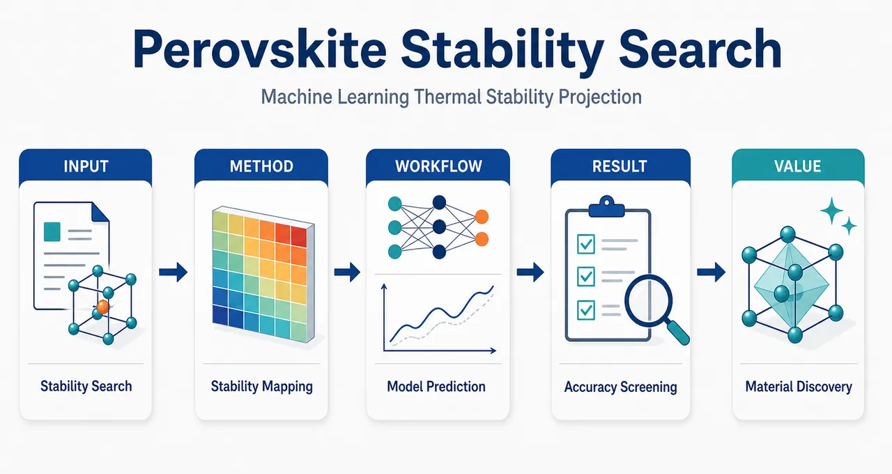

AI × Science 文献日报 2026/06/11
聚焦 AI × 物理 / 化学 / 材料交叉方向，自动过滤明显偏题的医学、教育与社会科学内容，并按主题重新排版，便于快速深读。
AI | 物理 | 化学 | 材料 | 交叉学科 | arXiv | 预印本追踪
原始候选 237 篇中，已剔除 0 篇明显偏离主线的内容，并从剩余 237 篇主线相关文献中精选 60 篇进入日报页，优先保留 AI × 物理 / 化学 / 材料交叉与关键计算方法工作。
核心关注（ML × ferro / 凝聚态）
8 篇今天的进展集中在把物理约束直接塞进模型或推理环节：CrI3 的动态交换用 physics-informed equivariant GNN 处理应变下结构—自旋耦合，SmCo-1:7 的矫顽力用高通量微磁数据学习纳米结构控制因子。强关联电子部分从普通神经量子态推进到 spin-adapted neural backflow，电子哈密顿量学习则用 superposition-of-atomic-potentials 特征追求跨结构可迁移性。器件与生成方向把 SCAPS-1D+ML、inference-time RL 和 uncertainty-aware NN 接到钙钛矿太阳能电池、稳定晶体生成与磁性材料筛选，可迁移到 BaTiO3、NbOI2、CrSBr 等铁电/磁性候选体系的逆向设计。自旋电子硬件论文用射频广播远程写入非易失突触权重，把 ML 模型部署瓶颈从算法精度推进到互连、寻址和阵…
-
01射频广播远程编程自旋神经网络权重Remotely programming the weights of a spintronic neural network by a radiofrequency broadcast signal
📄 摘要：在串联的 11 个自旋电子非易失突触链中，用射频广播信号选择性远程写入权重，瞄准大规模存内计算中互连与可扩展写入瓶颈。
💡 亮点：射频广播可选择性写入串联自旋突触权重。
📐 方法要点：射频广播选择性写入串联自旋突触链权重。
🔗 相关工作关联：呼应自旋神经形态、存内计算、STT/SOT 突触、交叉阵列寻址。
💡 对你方向的启示：算法研究需把权重更新规则与硬件广播、串扰、能耗约束联合设计。
-
02DSpinGNN 预测形变 CrI3 动态磁交换DSpinGNN: A Physics-Informed Equivariant Graph Neural Network for Dynamic Magnetic Exchange Prediction in Strain-Deformed Monolayer CrI₃
📄 摘要：面向应变形变单层 CrI3，DSpinGNN 以物理约束等变图网络同时处理结构力和磁相互作用，预测瞬时、位置依赖的各向同性交换耦合 Jij。
💡 亮点：等变 GNN 解析形变 CrI3 的局域动态 Jij。
📐 方法要点：物理约束等变 GNN 同时预测力与局域 Jij。
🔗 相关工作关联：连接自旋晶格动力学、Heisenberg 模型、DFT+U 数据、等变 ML 势。
💡 对你方向的启示：研究 CrI3、CrSBr 等二维磁体时可从静态交换拟合转向轨迹级交换场建模。
-
03不确定性感知神经网络建模磁性材料性质Modelling magnetic material properties with uncertainty-aware neural networks
📄 摘要：针对磁性材料数据稀缺和分布外预测风险，引入带不确定性估计的神经网络建模材料性质，用于在成分与结构设计空间中筛选候选体系。
💡 亮点：磁性材料机器学习加入分布外不确定性评估。
📐 方法要点：用不确定性感知神经网络预测磁性材料性质。
🔗 相关工作关联：对应贝叶斯深度学习、深度集成、主动学习、OOD 检测和材料信息学。
💡 对你方向的启示：小数据磁性筛选应同时输出性质与置信度，优先实验验证高收益低不确定候选。
-
04保自旋对称的神经网络反流波函数Spin-adapted neural network backflow for symmetry-preserving simulations of strongly correlated electrons
📄 摘要：面向强关联分子低能自旋态密集的问题，构造自旋适配神经网络反流变分波函数，在神经量子态中保持总自旋对称性以改进电子结构计算。
💡 亮点：自旋适配反流让神经量子态保持总自旋。
📐 方法要点：构造保总自旋对称的神经网络反流变分波函数。
🔗 相关工作关联：关联神经量子态、VMC、FermiNet/PauliNet、强关联多自旋态计算。
💡 对你方向的启示：处理低能自旋态密集体系时，应把自旋对称性写进 ansatz 而非事后投影。
-
05SmCo-1:7 磁体纳米结构对矫顽力的影响Coercivity influence of nanostructure in SmCo-1:7 magnets: machine learning of high-throughput micromagnetic data
📄 摘要：基于高通量微磁模拟数据，机器学习分析 SmCo-1:7 永磁体中纳米结构参数对矫顽力的影响，建立微结构—磁性能关联。
💡 亮点：高通量微磁数据量化 SmCo-1:7 矫顽力来源。
📐 方法要点：高通量微磁模拟加 ML 解析 SmCo-1:7 矫顽力来源。
🔗 相关工作关联：对应永磁体设计、微结构—性能映射、缺陷钉扎、晶粒边界工程。
💡 对你方向的启示：磁体 ML 不应只学成分，需显式纳入纳米结构、相界和反磁化成核特征。
-
06推理时强化学习开放生成材料Open Materials Generation with Inference-Time Reinforcement Learning
📄 摘要：在连续时间晶体生成模型中引入推理时强化学习，把目标性质显式并入生成过程，面向稳定晶体结构的逆向材料设计。
💡 亮点：推理阶段强化学习调控晶体生成目标性质。
📐 方法要点：在晶体生成推理阶段用强化学习引导目标性质。
🔗 相关工作关联：呼应扩散/flow 晶体生成、性质引导采样、逆向材料设计、稳定性筛选。
💡 对你方向的启示：铁电/磁性生成可把极化、交换、能量高于凸包作为推理奖励直接优化。
-
07SCAPS 与机器学习筛选钙钛矿太阳能电池Multilayer Screening of Double and Conventional Perovskite Solar Cells Using SCAPS-1D and Machine Learning: Optimization of ETL, HTL, and Absorber for High-Efficiency Architectures
📄 摘要：结合 SCAPS-1D 器件模拟与机器学习，在双钙钛矿和常规钙钛矿太阳能电池中筛选 ETL、HTL 与吸收层组合，优化高效率多层结构。
💡 亮点：SCAPS-1D 联合机器学习缩小多层电池组合空间。
📐 方法要点：SCAPS-1D 器件仿真与 ML 联合筛选钙钛矿多层结构。
🔗 相关工作关联：连接太阳能电池数字孪生、代理模型、ETL/HTL 组合优化、双钙钛矿筛选。
💡 对你方向的启示：凝聚态材料筛选需把材料参数传到器件指标，避免只优化孤立吸收层性质。
-
08原子势叠加特征迁移学习电子哈密顿量Transferable Machine Learning of Electronic Hamiltonians with Superposition-of-Atomic-Potentials Features
📄 摘要：提出基于原子势叠加电子特征的哈密顿量机器学习框架，用统一模型预测电子哈密顿量，进一步获得波函数和物理可观测量。
💡 亮点：原子势叠加特征提升电子哈密顿量可迁移学习。
📐 方法要点：以原子势叠加特征学习可迁移电子哈密顿量。
🔗 相关工作关联：对应 Hamiltonian ML、tight-binding 代理、DFT 波函数学习、局域环境特征。
💡 对你方向的启示：研究铁电畴壁或磁性缺陷时，可用统一哈密顿量模型追踪能带与可观测量变化。
今日摘要
总览：今日条目集中在反常磁体、自旋波器件与机器学习材料建模：碲化锰、二氧化钌、氟化铁、单层氟化铜、杂化氯化锰和滑移铁电多层体系中，反常磁自旋劈裂、边缘自旋电流效应、反常霍尔电导、手性磁振子与铁电可控陈数被密集讨论。计算材料方向以物理约束等变图神经网络、不确定性感知神经网络、神经网络反流波函数、原子势叠加特征哈密顿量学习、高通量微磁模拟和推理时强化学习为主线，覆盖应变单层三碘化铬交换作用、钐钴一比七矫顽力、卤化物钙钛矿热稳定性、铌中空位与螺位错相互作用等问题。铁电与多铁材料侧重钛酸铅居里温度偏差、硼共合金化氮化铝钪、单层二碘化镍腔场调控、钨硒单层自旋谷输运和赤铁矿磁振子谱，实验可控参量包括应变、栅压、压力、腔光场、射频广播信号与微结构。
热点：反常磁体 → 从对称性允许的动量依赖自旋劈裂扩展到可操控输运和玻色准粒子 → 碲化锰极性畸变调制反常霍尔电导、二氧化钌应变驱动自旋劈裂、氟化铁磁振子偶极劈裂、单层氟化铜手性磁振子与旋轮声子、杂化氯化锰耦合手性和极性序、边缘自旋电流效应与轨道反常磁性构成典型样本。神经网络材料物理 → 用内嵌对称性、物理约束和不确定度的模型替代单点拟合 → 单层三碘化铬动态交换的等变图网络、磁性材料性质的不确定性感知网络、强关联电子的自旋适配神经网络反流、基于原子势叠加特征的可迁移电子哈密顿量学习、钐钴一比七高通量微磁矫顽力学习显示模型正在直接处理自旋哈密顿量和微结构参数。自旋波与类脑硬件 → 非线性波、自旋电子突触和振荡同步被用作可编程计算元件 → 射频广播远程写入自旋神经网络权重、非线性波神经元集成磁振子神经电路、耦合振荡器同步注意力、二维铁磁器件自旋轨道力矩翻转共同指向低功耗物理计算。铁电、多铁与二维可控量子态 → 用电场、滑移、腔场、压力和栅压耦合极化、磁序与拓扑数 → 反常磁铁电陈绝缘体电控陈数、反常磁多层滑移铁电自旋层电子学、单层二碘化镍腔控多铁序、钛酸铅理论与实验居里温度偏差、硼掺氮化铝钪组合实验体现了从材料筛选到外场调控的闭环。
今日文献
60 篇 · 20 含图深析-
01
📊 含图深析
💡 亮点：磁性材料机器学习加入分布外不确定性评估。
📖 展开分析 + 配图
 研究问题永磁材料机器学习预测中，模型即使取得很高 R²，也可能无法判断“哪些预测可信、哪些预测危险”；核心问题是如何在成分—磁性参数预测和微结构图—矫顽力预测中，同时评估预测值与置信度，尤其面对高质量数据稀缺、异源实验/模拟噪声、分布外新材料外推时，给出可校准的不确定性。创新方法Aha 点是把“点预测神经网络”改造成“不确定性感知网络”：用 Gaussian negative log-likelihood loss 让模型同时输出均值 μ(x) 与输入相关方差 var(x)，学习异方差偶然不确定性；用预测时开启的 Monte Carlo dropout 多次随机前向传播，估计认知不确定性；再用 confidence curve 检验不确定性是否真的对应误差，并将同一机制从普通 BNN 迁移到微结构图神经网络 GNN。工作流程输入两类材料数据：一类是 Nd₂Fe₁₄B 基永磁体的化学成分、温度与 μ₀Ms/μ₀Ha 标签，另一类是由晶粒节点和晶界边组成的合成微结构图；先进行成分归一化、温度缩放、节点/边特征缩放；模型训练时输出预测均值和方差，并用 Gaussian NLL 优化；预测时执行多次 MC dropout 前向传播，得到平均预测、认知不确定性、偶然不确定性和总不确定性；最后用交叉验证、残差图和按不确定性剔除样本的置信曲线评估预测精度与置信度校准。关键结果Gaussian process 在 μ₀Ha 上达到最高 R²=0.97，但置信曲线反而上升，说明高精度不等于可信不确定性；random forest 达到 R²=0.92/0.94，能给出较有信息的认知不确定性，但不能估计偶然不确定性；BNN 对 μ₀Ha 达到 R²=0.92，认知、偶然、总不确定性曲线均陡降，校准最好；迁移到 GNN 后，微结构矫顽力预测达到 R²=0.94、MAE=0.116、MSE=0.028，总不确定性置信曲线斜率为 -0.04%，偶然不确定性与 MAE 强相关。应用价值该研究为永磁材料筛选提供“预测值 + 风险标签”的可靠 AI 工具：不仅能预测磁化强度、各向异性场和矫顽力，还能标出高风险样本、数据稀疏区域和潜在分布外候选物；可帮助实验人员优先验证不确定性高的材料，避免盲目信任高 R² 模型，适用于材料数据库融合、主动学习、微结构优化和可信材料发现流程。
研究问题永磁材料机器学习预测中，模型即使取得很高 R²，也可能无法判断“哪些预测可信、哪些预测危险”；核心问题是如何在成分—磁性参数预测和微结构图—矫顽力预测中，同时评估预测值与置信度，尤其面对高质量数据稀缺、异源实验/模拟噪声、分布外新材料外推时，给出可校准的不确定性。创新方法Aha 点是把“点预测神经网络”改造成“不确定性感知网络”：用 Gaussian negative log-likelihood loss 让模型同时输出均值 μ(x) 与输入相关方差 var(x)，学习异方差偶然不确定性；用预测时开启的 Monte Carlo dropout 多次随机前向传播，估计认知不确定性；再用 confidence curve 检验不确定性是否真的对应误差，并将同一机制从普通 BNN 迁移到微结构图神经网络 GNN。工作流程输入两类材料数据：一类是 Nd₂Fe₁₄B 基永磁体的化学成分、温度与 μ₀Ms/μ₀Ha 标签，另一类是由晶粒节点和晶界边组成的合成微结构图；先进行成分归一化、温度缩放、节点/边特征缩放；模型训练时输出预测均值和方差，并用 Gaussian NLL 优化；预测时执行多次 MC dropout 前向传播，得到平均预测、认知不确定性、偶然不确定性和总不确定性；最后用交叉验证、残差图和按不确定性剔除样本的置信曲线评估预测精度与置信度校准。关键结果Gaussian process 在 μ₀Ha 上达到最高 R²=0.97，但置信曲线反而上升，说明高精度不等于可信不确定性；random forest 达到 R²=0.92/0.94，能给出较有信息的认知不确定性，但不能估计偶然不确定性；BNN 对 μ₀Ha 达到 R²=0.92，认知、偶然、总不确定性曲线均陡降，校准最好；迁移到 GNN 后，微结构矫顽力预测达到 R²=0.94、MAE=0.116、MSE=0.028，总不确定性置信曲线斜率为 -0.04%，偶然不确定性与 MAE 强相关。应用价值该研究为永磁材料筛选提供“预测值 + 风险标签”的可靠 AI 工具：不仅能预测磁化强度、各向异性场和矫顽力，还能标出高风险样本、数据稀疏区域和潜在分布外候选物；可帮助实验人员优先验证不确定性高的材料，避免盲目信任高 R² 模型，适用于材料数据库融合、主动学习、微结构优化和可信材料发现流程。第一部分：核心概览（Overview）
面向永磁材料机器学习建模中的可靠性问题，研究将不确定性量化系统引入两类磁性材料任务：基于成分预测内禀磁性参数，以及基于微结构图预测矫顽力。核心贡献在于证明：高 R² 不等于可信不确定性；Gaussian NLL loss 与 Monte Carlo dropout 可同时估计偶然不确定性与认知不确定性，并可从常规神经网络迁移到图神经网络。该工作在材料信息学中定位于trustworthy AI / uncertainty-aware modeling，强调预测性能与置信度校准必须共同评估。
---
第二部分：结构化快速回顾
《Modelling magnetic material properties with uncertainty-aware neural networks》（None，）
背景
材料发现需要机器学习探索巨大成分与结构空间，但高质量实验数据稀缺，且新材料筛选常涉及分布外预测，导致模型可靠性难以判断。磁性材料研究尤其需要知道预测值是否可信。
方法
采用两级研究设计：第一部分比较Gaussian process regression、random forest + bagging、Bayesian neural network / dropout network对 μ₀Ms 与 μ₀Ha 的预测及不确定性质量；第二部分将 Gaussian negative log-likelihood loss 与 MC dropout 迁移到 graph neural network，基于微结构图预测矫顽力。
结果
Gaussian process 获得最高 R²，如 μ₀Ha R² = 0.97，但置信曲线上升，不确定性无效。Random forest 的 R² = 0.92/0.94，不确定性较有信息但只能估计认知不确定性。BNN 可估计两类不确定性，其中 μ₀Ha BNN R² = 0.92 且置信曲线陡降。GNN 预测矫顽力达到 R² = 0.94、MAE = 0.116、MSE = 0.028。
讨论
模型的预测精度与不确定性校准可显著脱钩。负斜率置信曲线说明高不确定性样本更可能对应大误差；平坦或上升曲线说明不确定性估计无信息。偶然不确定性在异源材料数据中尤为重要。
局限
Gaussian process 与 random forest 只能捕获认知不确定性，无法捕获偶然不确定性。BNN 对不同目标性质表现不一致，μ₀Ms 的认知不确定性校准较弱。GNN 数据为合成微结构与 reduced-order micromagnetic model 标签，实验泛化仍需进一步验证。
结论
不确定性量化不仅提高磁性材料机器学习预测的可信度，还可跨任务迁移：从成分—内禀性质预测迁移到微结构—矫顽力图学习预测。可靠材料 AI 需要同时报告预测误差与不确定性校准质量。
---
第三部分：逐章节冷凝解析（Section-by-Section Condensing）
Abstract
Uncertainty quantification targets reliability under scarce and out-of-distribution materials data
材料机器学习面临两个核心可靠性压力源：高质量数据稀缺与分布外预测。摘要直接将问题限定为材料发现中的可信建模：*"the scarcity of high-quality data and the frequent need for out-of-distribution prediction introduce substantial uncertainty, making the assessment of model reliability essential."* 研究对象明确聚焦于永磁材料研究，并将不确定性量化作为评估模型置信度的工具：*"we investigate uncertainty quantification as a means to evaluate model confidence in the context of permanent magnet research."*
Two complementary studies connect simple property prediction and microstructure graph learning
研究包含两个层级：第一项基准比较传统与现代机器学习模型预测内禀磁性性质，重点评价不确定性质量；第二项将该框架迁移到更复杂的 GNN coercivity prediction。摘要中给出清晰任务链：*"In a first study, we benchmark classical and modern machine learning models for predicting intrinsic magnetic properties, focusing on the quality of their uncertainty estimates."* 随后扩展为：*"In a second study, we transfer these architectural features for uncertainty estimation to a more complex task: predicting coercivity from microstructural information using a graph neural network."*
Gaussian NLL and dropout-based Bayesian approximation are the core technical devices
核心技术组合为 Gaussian negative log-likelihood loss 与 dropout-based Bayesian approximation。前者用于学习输出分布的均值与方差，后者通过测试时 dropout 近似贝叶斯推断。摘要表述为：*"We apply Gaussian negative log-likelihood loss and dropout-based Bayesian approximation as practical strategies for estimating predictive uncertainty."*
Transferability is positioned as a central contribution
关键贡献不仅是单任务性能提升，而是不确定性感知架构跨任务迁移：*"Together, these studies demonstrate that uncertainty quantification not only enhances the trustworthiness of predictions but is also transferable across different modeling tasks."* 关键词覆盖 Uncertainty quantification、Graph neural networks、Model reliability、Trustworthy AI、Uncertainty-aware modeling，显示研究位于可信材料 AI与数据驱动材料科学交叉点。
---
1 Introduction
Materials discovery requires extrapolation across vast design spaces
机器学习被用于搜索庞大的材料成分与结构空间，背景直接对应近年材料信息学趋势：*"The discovery and design of novel materials increasingly rely on machine learning models capable of navigating vast compositional and structural design spaces."* 永磁材料设计中，候选空间通常包括稀土元素替代、过渡金属掺杂、轻元素变化、晶粒结构与取向分布等多维变量。
Data scarcity injects uncertainty into predictive materials models
高质量材料数据生成成本高、周期长、实验工作量大，导致训练数据有限且噪声复杂：*"the availability of high-quality materials data is often limited, due to the high cost, time, and experimental effort required to generate large datasets, which inherently introduces uncertainty into predictive models."* 这一点直接解释了为何材料科学不能只追求点预测精度。
Out-of-distribution prediction creates a validation gap
新材料发现天然需要预测训练分布之外的材料，因此模型常必须外推：*"these models are frequently required to extrapolate beyond the training distribution in order to identify previously unknown materials - a task referred to as out-of-distribution prediction."* 难点不是单纯误差大小，而是在缺乏实验验证时判断预测是否可靠：*"assessing the reliability of predictions in the absence of direct experimental validation."*
Aggregated materials datasets require heteroscedastic aleatoric uncertainty
材料参数越来越多来自实验文献、模拟、数据库与出版物整合：*"the compilation of material parameters from diverse sources, including experimental literature, simulations, databases and publications."* 由于不同来源具有不同实验误差、设备误差和模拟近似误差，假设所有样本噪声相同过于简化：*"Assuming a uniform (homoscedastic) level of noise and randomness across all samples is an oversimplification."* 更合理的设定是异方差偶然不确定性：*"it is more appropriate to represent the aleatoric uncertainty as heteroscedastic, i.e., dependent on the input features themselves."*
High R² does not guarantee reliable uncertainty
传统模型如 Gaussian Process Regression 与 random forest ensembles 常被用于不确定性估计，但高拟合优度不等于高置信度质量：*"not all machine learning models offer reliable uncertainty estimates, even if they have a high coefficient of determination (R²)."* 该研究的关键批判点在于：经典技术可能给出看似合理的方差，但这些方差未必与真实误差相关。引言明确指出：*"our findings show that these techniques can fail to produce meaningful uncertainty estimates."*
Classical approaches miss aleatoric uncertainty
Gaussian process 与 random forest bagging 在此设定下只能捕获模型不确定性，不能捕获数据噪声不确定性：*"they are not able to capture aleatoric uncertainty at all but only the model uncertainty."* 这为引入 Gaussian NLL loss 与 dropout networks 提供方法学动机。
Two-study design tests both reliability and transferability
第一项研究在较受控的成分—内禀性质任务中比较模型，第二项研究迁移到微结构—矫顽力预测：*"the first study (Sec. 3), we evaluate how different machine learning models perform when predicting intrinsic magnetic properties, with a particular focus on the quality of their uncertainty estimates."* 随后：*"the second study (Sec. 4) extends the same uncertainty-aware framework to a more complex problem: predicting the coercivity from microstructural information using a graph neural network."*
---
2 Uncertainty for Materials Science
Neural networks generate educated guesses, not guaranteed truths
神经网络预测本质是基于历史数据模式的估计，而非确定事实：*"model predictions are not guaranteed to be correct. Instead, they are educated guesses based on patterns the model has learned from past data."* 这一定义直接支撑置信度评估的必要性。
Aleatoric and epistemic uncertainty form the core taxonomy
预测不确定性被划分为两类：aleatoric uncertainty 与 epistemic uncertainty：*"Predictions carry inherent uncertainties, which can be categorized into two main types: aleatoric and epistemic uncertainty."* 其中前者源自数据本身噪声，后者源自模型知识不足。
Point estimates are insufficient in high-reliability domains
常规神经网络只给点估计，没有置信度指示：*"Usually, neural networks provide point estimates without clear indicators of confidence."* 在材料设计中，置信度可指导欠采样区域探索：*"In materials science and design an estimate of confidence is necessary to guide exploration in under-sampled regions."*
Standard deviation is favored because it shares units with the target
预测不确定性常用方差 σ² 或标准差 σ 表示；标准差优势在于与目标变量同单位：*"Generally, predicted uncertainty is represented by the variance σ² or by the standard deviation σ. The latter, has the advantage that its value has the same unit as the prediction."* 这也是后文将总不确定性定义为根号形式的原因。
---
2.1 Aleatoric Uncertainty
Aleatoric uncertainty is irreducible observational randomness
偶然不确定性来自数据或观察过程固有随机性，无法通过简单增加数据完全消除：*"Aleatoric uncertainty σ²a arises from intrinsic randomness or noise in the data itself."* 其不可约性由句子明确限定：*"It represents variability that cannot be reduced by collecting additional data, as it is inherent to the observation process or the underlying data-generating mechanism."*
Materials data naturally contain source-dependent noise
材料科学中的实验与计算数据常由不同方法、仪器、近似层级产生，因此噪声结构不同：*"experimental measurements or computational results are obtained using different methods, instruments, or levels of approximation, each introducing distinct noise characteristics."* 对从文献和数据库整合的数据尤其关键。
Homoscedastic and heteroscedastic uncertainty differ by input dependence
Homoscedastic 表示噪声水平对所有输入恒定；heteroscedastic 表示噪声幅度依赖输入：*"Aleatoric uncertainty can be classified as homoscedastic, when the noise level remains constant across all inputs ... or heteroscedastic, when the noise magnitude varies with the input data."* 材料科学更常见异方差：*"The latter is particularly relevant in materials science, where datasets frequently integrate measurements and simulations from diverse sources with varying reliability and accuracy."*
Gaussian likelihood enables direct heteroscedastic variance learning
异方差偶然不确定性可通过模型同时输出均值与方差估计：*"assuming an underlying Gaussian error and estimating both the mean and variance of the output distribution."* 机制上，模型会对难预测样本提高方差，从而降低误差对 loss 的影响：*"The model implicitly learns to increase the predicted variance for uncertain predictions, effectively reducing the impact of prediction errors on the overall loss."*
---
2.2 Epistemic Uncertainty
Epistemic uncertainty reflects missing model knowledge
认知不确定性来自对真实模型参数或系统机制认知不足：*"The epistemic uncertainty σ²e stems from a lack of knowledge about the true model parameters or the system being modeled."* 它也被称为模型不确定性：*"It is often referred to as 'model uncertainty'."*
Epistemic uncertainty is reducible with more data or better models
与偶然不确定性不同，认知不确定性可通过数据增加或模型改进降低：*"can be reduced by acquiring more data or improving the model’s understanding of the system."* 在材料发现中，这类不确定性通常在训练数据稀疏或外推区域增大。
Ensemble diversity estimates epistemic uncertainty
随机森林等集成方法通过多个子模型预测差异捕获认知不确定性：*"Typically, the epistemic uncertainty is captured by means of ensemble methods, such as random forest."* 其来源是各子模型训练独立、对系统形成不同感知：*"slight differences in predictions obtained from sub-models that were trained independently from one another and thus have a different perception about the system."*
Total uncertainty requires combining both components
单独估计一种不确定性并不完整；联合偶然与认知不确定性才能形成完整置信度图景：*"The combination of both aleatoric and epistemic uncertainties provides a more complete picture of the total uncertainty in a prediction."* 图 1 的概念示例指出，偶然不确定性表现为观测随机变动，认知不确定性在观测区域外随数据不足而增大：*"Epistemic uncertainty arises from limited data and manifests as increasing model deviation from the true function outside the observed region."*
---
2.3 Dropout networks
Bayesian neural networks assign distributions to weights
Bayesian Neural Network (BNN) 将权重视为概率分布，从而捕获认知不确定性：*"probability distributions are assigned to the network weights, allowing the model to capture epistemic uncertainty."* 由于完整贝叶斯神经网络计算昂贵，dropout 被用作实用近似。
MC dropout approximates Bayesian inference at prediction time
基于 Gal 和 Ghahramani 的结果，预测时仍启用 dropout 的神经网络可近似贝叶斯推断：*"neural networks employing dropout layers, that are active during prediction time, can approximate Bayesian inference."* 因此这类模型被称为 dropout networks 或近似 BNNs：*"we refer to these approximate Bayesian models interchangeably as Bayesian Neural Networks (BNNs) or dropout networks."*
Gaussian NLL loss adds aleatoric uncertainty to dropout networks
dropout 主要提供认知不确定性，结合 Gaussian negative log-likelihood loss 后可捕获偶然不确定性：*"By using a Gaussian negative log-likelihood loss function (Eq. 1) this machine learning method also captures aleatoric uncertainty."* 这是研究中 BNN 和 GNN 的共同核心。
Dropout networks behave like efficient ensembles
dropout 网络类似集成模型，因为每个样本产生多次随机预测并取平均：*"Conceptually, these dropout networks resemble ensemble methods, since they generate multiple predictions for each sample that are ultimately averaged."* 不同之处是只需训练一个模型：*"only a single model needs to be trained, rather than a large number of separate models."* 该优势随模型复杂度增加更明显：*"This effect scales with increasing model complexity."*
Epistemic uncertainty is variance across stochastic forward passes
对每个样本执行 M 次随机前向传播，均值 μ 为最终预测，预测分布方差为认知不确定性：*"The mean μ of the M stochastic predictions yi represents the final prediction value, while the variance σ²e = var(y) of the distribution quantifies the epistemic uncertainty associated with this prediction."* 图 2 描述了 dropout 随机屏蔽节点输出：*"the dropout layer randomly sets the output of some neurons in the previous layer to zero."*
Gaussian NLL predicts both mean and variance
回归模型假设目标值来自由网络预测参数决定的概率分布；高斯情形下网络输出 μ(x) 与 var(x)：*"the neural network outputs two quantities for each input x: the mean μ(x), representing the central prediction, and the variance var(x), representing the associated predictive uncertainty."* 损失函数为：
[
L(y|μ(x),var(x))=frac12łeft(łog var(x)+frac(y-μ(x))²var(x)i̊ght)
]
原始解释为：*"This expression covers two key aspects: the squared error between the prediction and the observation, scaled by the predicted variance, and a regularization term penalizing overly large variances."*
The logarithmic variance term prevents trivial inflation
如果模型预测低不确定性，误差惩罚更重；若预测高不确定性，误差惩罚降低。但 log 项防止无限增大方差：*"if the network assigns low uncertainty ... errors are penalized more heavily. Conversely, if it predicts high uncertainty, the penalty for prediction errors is reduced. However, the logarithmic term prevents the model from inflating the variance arbitrarily."*
Predicting log variance improves numerical stability
实际训练中预测 log(σ²) 而非 σ²，保证方差为正：*"we optimize a modified loss by having our model predict log(σ²) rather than σ². Thus, we ensure that the variance is positive."* 其他实现还可加 10⁻⁶ 稳定项：*"Some other implementations also add a small constant, e.g. 10−6, to the variance improving numerical stability."*
Aleatoric uncertainty is averaged across stochastic passes
对于样本 x，最终偶然不确定性定义为多次前向传播中输出方差的均值：
[
σₐ²⁼frac1Msumᵢ^M var(x)ᵢ
]
该定义对应原文：*"The final aleatoric uncertainty σ²a for a sample x is the mean of the variances produced by the loss function over M forward passes."*
Total uncertainty combines epistemic and aleatoric components
总不确定性使用：
[
σ = sqrtσₑ²⁺σₐ²
]
优势是单位与目标 y 相同：*"which has the advantage that σ uses the same units as the target y."*
Implementation uses Scikit-learn, Keras, and JAX backend
BNN 架构通过 Python 自定义类实现，依赖 Scikit-learn、Keras 和 JAX backend：*"we build custom classes in Python with the libraries Scikit-learn and Keras with a JAX backend."*
---
2.4 Model evaluation methods
Predictive performance uses 5-fold cross-validation
模型预测性能通过 5-fold cross-validation 评估：*"The predictive performance of each machine learning model is assessed using a 5-fold cross-validation procedure."* 预测-实测图使用交叉验证测试折结果，因此覆盖整个数据集而非单次划分：*"This approach enables an evaluation of the model’s predictive performance across the entire dataset, rather than relying on a single train–test split."*
Residual plots diagnose bias
残差来自交叉验证测试折，并对预测值作图，用于快速识别偏差：*"the residuals are obtained from the test folds during cross-validation. By plotting them against the predicted values we can identify prediction biases more quickly."*
Confidence curves evaluate whether uncertainty predicts error
不确定性评价的核心问题是预测不确定性是否能指示预测误差：*"whether the predicted uncertainties can be trusted to effectively indicate prediction errors."* 采用 Scalia 等人的协议：*"we adopt the protocol proposed by Scalia et al., which provides a systematic way to assess the quality of uncertainty estimates."*
Reliable uncertainty implies error decreases after discarding uncertain samples
基本假设为：高不确定性样本更可能有大误差；剔除这些样本后，剩余数据平均误差应下降：*"if the estimates are reliable, samples associated with high predicted uncertainty are more likely to correspond to large prediction errors."* 以及：*"when such uncertain samples are removed from the evaluation dataset, the average prediction error on the remaining subset should decrease."*
Confidence curve construction uses ranked uncertainty removal
置信曲线流程包括四步：按不确定性降序排列、逐个移除最高不确定性样本、计算剩余测试集误差、绘制误差与丢弃比例关系。原文步骤为：*"Rank predictions by uncertainty"*、*"Remove data points with highest uncertainty"*、*"Calculate prediction error on remaining test data"*、*"Plot error vs. percent of discarded data."*
MAE and RMSE encode different sensitivity to outliers
误差指标可选 MAE 或 RMSE；RMSE 更敏感于大误差，MAE 避免离群点主导：*"The error metric can be the mean absolute error (MAE) or root mean squared error (RMSE). The choice depends on whether it is important to detect large prediction errors (using RMSE) or if outliers should not dominate the metric (using MAE)."*
Ideal curve removes samples by true error
理想曲线通过优先移除真实预测误差最高的样本构造，表示完美不确定性排序：*"the ideal scenario by removing samples from the test dataset that exhibit the highest prediction error."* 该曲线是置信曲线的上限参照：*"represents the ideal behavior of the confidence curve if the uncertainty estimates perfectly rank the predictions from highest to lowest error."*
Ten random train-test splits reduce outlier influence
不确定性评估使用训练/测试划分，并只在未见测试集上评估不确定性：*"We evaluate the estimated uncertainty only for predictions on the test set."* 为降低潜在离群影响，使用 10 次不同随机划分的平均结果：*"the mean of ten predictions with different random train-test-splits is used as a statistically robust result."*
Downward confidence curves indicate calibrated uncertainty
良好校准不确定性应产生向下斜率，说明高不确定性样本被丢弃后剩余误差降低：*"A well-calibrated uncertainty estimate should produce a confidence curve that slopes downwards like the ideal curve."* 平坦或非下降曲线说明不确定性无信息：*"if the confidence curve is flat or non-decreasing, the plot suggests that the model’s uncertainty estimates are not informative."* 越接近理想曲线，不确定性越可靠：*"The steeper the decline of the confidence curve ... the more reliable and well-calibrated the uncertainty estimation is."*
---
3 Intrinsic Property Prediction with Uncertainty Quantification
The first benchmark predicts μ₀Ms and μ₀Ha from composition
该部分比较不确定性感知模型，用化学成分预测两种内禀磁性参数：spontaneous magnetization μ₀Ms (T) 与 anisotropy field μ₀Ha (T)。任务定义为：*"predict intrinsic magnetic material properties, namely spontaneous magnetization μ0Ms (T) and anisotropy field μ0Ha (T), based on the chemical composition of given material."*
Three uncertainty-aware model families are compared
比较对象为 Gaussian process models、random forests with bagging、Bayesian neural networks：*"We begin with Gaussian process models ... Next, we examine random forests with bagging ... Finally, we consider Bayesian neural networks."* 比较标准包括预测性能与不确定性估计质量：*"compares these models in terms of predictive performance and the quality of their uncertainty estimates."*
Only BNN captures both epistemic and aleatoric uncertainty
Gaussian process 与 random forest 只估计认知不确定性；BNN + Gaussian loss 可同时估计认知与偶然不确定性：*"the Gaussian process model and the random forest model only capture the epistemic uncertainty σ²e, whereas the dropout network ... with the Gaussian loss function ... captures both epistemic and aleatoric uncertainty."*
Dataset contains 1519 measurements from about 300 Nd₂Fe₁₄B-based compositions
数据基础为约 300 个 Nd₂Fe₁₄B-based permanent magnets 化学成分，含 μ₀Ms、μ₀Ha 与测量温度；每个样本在 5 个温度测量，温度范围 300–453 K：*"a dataset of experimental measurements of about 300 chemical compositions of Nd2Fe14B-based permanent magnets ... Each sample’s intrinsic properties were measured at five different temperatures ranging between 300 and 453 K."* 图 4 标注总数据点为 1519：*"Distribution of experimental measurement labels of all 1519 datapoints."*
Feature vector is 13-dimensional and encodes grouped composition plus temperature
特征向量维度为 13，包含成分与温度：*"A 13-dimensional feature vector encodes both chemical composition and temperature in a form suitable for machine learning."* 成分分三组：稀土 Nd, Ce, La, Pr, Y, Tb, Dy；过渡金属 Fe, Co, Ni；轻元素 B, C：*"rare-earth elements (Nd, Ce, La, Pr, Y, Tb, Dy), transition metals (Fe, Co, Ni), and light elements (B, C)."*
Composition is group-normalized onto unit spheres
成分按组表达为 weight fractions，并进行 sphere transformation，即每组通过 L2 norm 映射到单位球：*"The compositional features are sphere-transformed, meaning each group is mapped onto the unit sphere by means of normalization with the L2 norm."* 示例成分为：*"(Nd0.06La0.94)2Fe14B0.46C0.54."*
Temperature is scaled by the maximum 453 K
温度通过除以数据集中最大温度 453 K 进行缩放：*"temperature is encoded in the feature vector scaled by division with the maximum temperature in the dataset (453 K)."*
Uncertainty confidence curves use 50% test size and 10 splits
为了保证可重复性，所有 Python 包固定随机种子：*"A random seed was fixed across all involved Python packages to ensure reproducibility."* 置信曲线评估中测试集占总数据 50%，并计算 10 次不同划分平均：*"the test set size comprised 50% of the total dataset. The confidence curves were computed 10 times with different train-test-data splits."*
---
3.1 Gaussian process model
Gaussian process achieves high R² but only epistemic uncertainty is evaluated
两个 Gaussian process regression 模型分别预测 μ₀Ms 与 μ₀Ha。性能很高：磁化模型 R² = 94%，各向异性场模型 R² = 97%：*"achieved a high R²-score of 94% on the magnetization model ... and 97% on the anisotropy model."* 只评价认知不确定性：*"only the epistemic uncertainty σ²e was evaluated for these models, because the Gaussian process model only estimates this type of uncertainty."*
Kernel uses squared Matérn plus white noise
初始核函数由 squared Matérn kernel 与 white noise kernel 组成，参数为 nu = 1.5、lengthₛcale = 1、noiseₗₑᵥₑₗ = 1：*"a kernel composed of a squared Matern kernel with smoothness parameter nu = 1.5 and lengthₛcale = 1, combined with a white noise kernel of noiseₗₑᵥₑₗ = 1 was used."*
Hyperparameters optimized with L-BFGS-B and two restarts
核超参数通过 limited-memory BFGS 算法 fminₗ_bfgs_b 优化，并使用 two restarts 避免局部极小：*"The kernel hyperparameter optimization was carried out with the limited-memory BFGS algorithm (fminₗ_bfgs_b) using two restarts to avoid local minima."* 目标值未归一化：*"The target values were not normalized (normalize_y = False)."*
Confidence curves rise, proving uncertainty estimates are incorrect
两个 Gaussian process 模型的置信曲线上升，意味着不确定性估计错误：*"Both Gaussian process regression models exhibit a rising slope of the confidence curve ... which means that their uncertainty estimates for this task are incorrect."* 图 5B 与图 6B 均被解释为不确定性无意义：*"The increasing confidence curve indicates that the model’s uncertainty estimation is meaningless."*
Residual color coding shows no relation between uncertainty and error
残差图中按不确定性着色的数据点未显示与预测误差相关的模式：*"their color coding exhibits no pattern related to the prediction error."* 如果不确定性有效，高不确定性深色点应远离红线、低不确定性黄色点应靠近红线：*"If the uncertainty estimation was meaningful, the darker points with higher uncertainty would be located further away from the red line ... while the more certain predictions colored in yellow would sit close to the red line."*
Estimated uncertainty values are too small to distinguish confidence
估计不确定性值非常小，无法区分高低置信预测：*"The estimated uncertainty values are very small, so it is assumed the two models could not capture sufficient information about the model uncertainty to distinguish effectively between confident and non-confident predictions."* 结论是该任务中 Gaussian process 的不确定性估计无信息：*"the Gaussian process model’s uncertainty estimation is uninformed and meaningless for this task."*
---
3.2 Random forest model
Bagging ensemble contains 200 independent random forests
第二种方法为树模型集成：bagging framework with 200 independent random forest model。基础随机森林含 100 trees，最大深度不受限：*"The base random forest was configured with 100 trees and unrestricted maximum depth."* 两个目标模型使用相同超参数：*"The same hyperparamters were used for both models predicting μ0Ms and Ha."*
Random forest only estimates epistemic uncertainty
该 bagging 方法只估计认知不确定性：*"only the epistemic uncertainty σ²e was evaluated for these models, because this bagging method only estimates this type of uncertainty."* 因此无法量化异源材料数据中的测量噪声或来源差异。
Prediction accuracy remains high
随机森林对目标性质拟合良好：μ₀Ms R² = 92%，μ₀Ha R² = 94%：*"The magnetization model achieved 92% R²-score and the anisotropy model even 94%."* 表 1 进一步给出 μ₀Ms MAE = 0.035、MSE = 0.002、slope = -0.01%；μ₀Ha MAE = 0.353、MSE = 0.385、slope = -0.30%。
Declining confidence curves indicate informative uncertainty
图 7B 与图 8B 的置信曲线下降，说明不确定性与预测误差相关：*"The confidence curves decrease ... and thus indicate a link between the uncertainty estimation and the prediction error for both models."* 图 8B 对各向异性场尤其明确：*"The declining confidence curve indicates good uncertainty estimation."*
Uncertain points cluster at sparse label regions
残差图中深色高不确定性点倾向位于点云两端：*"the darker more uncertain points tend to appear at the far ends of the point cloud, with some exceptions."* 高不确定性与训练标签分布稀疏区域相关：*"in regions were less data is available, the uncertainty is higher."*
Anisotropy field confidence curve has an S-shape
Hₐ 模型置信曲线呈 S-shape，前 10% 丢弃样本中高不确定性与高误差相关性强：*"the confidence curve of the Ha model exhibits an S-shape which means that highly uncertain predictions correlate well with the prediction error (in the first 10% of discarded samples)."* 曲线中段变平，说明模型在某些样本范围内难以区分高低置信预测：*"the curve flattens, suggesting that within this range of the dataset, the model can less accurately distinguish between high- and low-confidence predictions."*
---
3.3 Bayesian neural network model
BNNs are manually optimized for both R² and uncertainty slope
两个 BNN 模型分别为 μ₀Ms 与 μ₀Ha 定制，目标同时包括高 R² 与最陡负置信曲线：*"Their configuration was optimized for both high R²-score and simultaneously steepest negative uncertainty estimation."* 这些模型是手动优化的高级架构：*"represent the most advanced ones we manually optimized in terms of hidden layer sequence and dropout ratios."*
BNNs can estimate aleatoric uncertainty unlike random forests
BNN 与前述 random forest 的差别在于能估计偶然不确定性：*"in contrast to the random forest model presented before, the BNN can estimate aleatoric uncertainty as well."*
Magnetization BNN uses three blocks with 32/64 units and dropout 0.5
μ₀Ms BNN 包含三个 block。第一和第三 block：32-unit ReLU 隐藏层、32-unit tanh 隐藏层、dropout rate 0.5；中间 block 相同但节点数 64：*"The first and the last block consist of one hidden layer of 32 units and ReLU activation, followed by a second hidden layer of 32 units with hyperbolic tangent activation, and lastly a dropout layer with a dropout-rate of 0.5. The middle block consists of the same layers but has 64 instead of 32 nodes."*
Magnetization BNN trains 800 epochs with RMSprop and 50 forward passes
训练使用 RMSprop optimizer，共 800 epochs，每次预测采样 50 forward passes 估计模型不确定性：*"The model was trained using the RMSprop optimizer over 800 epochs, and for each prediction 50 forward passes were sampled to estimate the model uncertainty."* 性能为 R² ≈ 90%：*"This configuration achieved an R²-score of approximately 90%."*
Magnetization BNN uncertainty color pattern does not align with residuals
图 9A 中不确定性着色与残差大小不一致：*"the color-coded uncertainty does not coincide with the residuals."* 期望是绝对残差越大不确定性越高，但实际颜色模式主要受标签分布引发的认知不确定性主导：*"the observed color pattern appears instead to be dominated by the epistemic uncertainty arising from the label distributions."*
Magnetization BNN aleatoric and total confidence curves decline slowly
图 9B 显示偶然不确定性与总不确定性置信曲线缓慢但稳定下降：*"the aleatoric and the total uncertainty’s confidence curves decline slowly but steadily."* 认知不确定性曲线先下降，最后 40% 丢弃数据缓慢上升，最后 3% 急剧上升：*"The epistemic uncertainty’s confidence curve declines at first, but rises for that last 40% of discarded data slowly then for the last 3% sharply."*
Anisotropy BNN uses two 128-unit dense layers and dropout 0.5
μ₀Ha BNN 结构为两个 128-unit dense layers，激活函数分别为 ReLU 和 tanh，随后 dropout rate 0.5：*"two dense layers of 128 units each, activated by ReLU and hyperbolic tangent functions, respectively. Subsequently, a dropout layer with dropout-rate of 0.5 was employed."*
Anisotropy BNN trains 400 epochs with 50 forward passes
训练策略与磁化模型类似：RMSprop optimization、400 epochs、每样本 50 forward passes：*"RMSprop optimization for 400 epochs with 50 forward passes per sample prediction."* 模型达到 R² ≈ 92%：*"This model achieved a high R²-score of about 92%."*
Anisotropy BNN is well-calibrated across all uncertainty components
μ₀Ha BNN 的三类置信曲线均快速下降，说明高不确定性可靠对应大误差：*"all three confidence curves drop quickly."* 图 10 说明三类不确定性——认知、偶然、总不确定性——均一致陡降：*"The confidence curves corresponding to all three uncertainty estimations (epistemic, aleatoric and their combination) show a consistent and steep decline."* 残差图中高误差和低训练样本区域逐渐变暗：*"the colored residual points become gradually darker towards the region with few training samples and high prediction errors."*
---
3.4 Insights
All models achieve high R² but uncertainty quality differs strongly
三个模型类别对 μ₀Ms 与 μ₀Ha 均获得高 R²：*"For all three model classes, the approaches achieved a high coefficient of determination (R²) for both spontaneous magnetization μ0Ms and anisotropy field μ0Ha."* 但不确定性估计能力差异显著：*"their ability to provide meaningful uncertainty estimates varied considerably."*
Gaussian process has highest R² but meaningless uncertainty
Gaussian process 的预测精度最高：μ₀Ms R² = 94%，μ₀Ha R² = 97%，但不确定性无意义且不与误差相关：*"The Gaussian process regression produced the highest R²-scores (94% for μ0Ms and 97% for μ0Ha), but its uncertainty estimates were meaningless and showed no correlation with prediction error."* 表 1 中其置信曲线斜率为正：+0.02% 与 +0.16%，与可靠不确定性相反。
Random forests provide useful epistemic uncertainty but miss aleatoric uncertainty
Random forest 稍低 R² = 92% / 94%，置信曲线下降，说明不确定性有信息：*"The random forest models achieved slightly lower R²-scores (92% and 94%, respectively) and offered good uncertainty estimates ... as indicated by the declining confidence curves."* 但不能解释偶然不确定性：*"though aleatoric uncertainty is not accounted for."*
BNNs combine high R² with both uncertainty types
BNN 同时保持高预测性能并捕获两类不确定性：*"The Bayesian neural networks not only have high R²-scores but also capture epistemic and aleatoric uncertainty."* μ₀Ha BNN 表现最好：*"The model predicting the anisotropy field (92% R²-score) estimates both uncertainties very well."*
Magnetization uncertainty remains challenging
μ₀Ms BNN 的不确定性估计较弱：*"the model predicting spontaneous magnetization (90% R²-score) was less effective in estimating uncertainty."* 其偶然与总不确定性曲线下降，但认知不确定性曲线不稳定：*"The μ0Ms model’s confidence curves declined for the aleatoric and the total uncertainty, but not for the epistemic uncertainty."* 归纳性判断为：*"Neither the random forest nor the BNN model was effective at capturing uncertainty when predicting spontaneous magnetization."*
Table 1 quantifies accuracy and confidence-curve slope
表 1 汇总关键指标：
| 目标 | 模型 | R²CV | MAE | MSE | slope |
|---|---|---:|---:|---:|---:|
| μ₀Ms | Gaussian process | 0.94 | 0.028 | 0.002 | +0.02% |
| μ₀Ms | Random forest + bagging | 0.92 | 0.035 | 0.002 | -0.01% |
| μ₀Ms | Bayesian neural network | 0.90 | 0.036 | 0.002 | -0.01% |
| μ₀Ha | Gaussian process | 0.97 | 0.248 | 0.158 | +0.16% |
| μ₀Ha | Random forest + bagging | 0.94 | 0.353 | 0.385 | -0.30% |
| μ₀Ha | Bayesian neural network | 0.92 | 0.415 | 0.493 | -0.27% |
表注解释负斜率含义：*"A link between the uncertainty estimation and the prediction error is indicated by a negative slope."* 且斜率梯度越大联系越强：*"The quality of this link is proportional to the gradient of the slope."*
---
4 Graph Neural Network for Coercivity Prediction with Uncertainty Quantification
Microstructure is required beyond chemical composition
磁性材料性能不仅由化学成分决定，还受微结构控制：*"The performance of magnetic materials depends not only on their chemical composition but also on their microstructural characteristics."* 因此第二项任务转向用微结构特征预测矫顽场。
GNN predicts coercive field from Nd₂Fe₁₄B-based microstructures
开发 graph neural network (GNN) 预测 Nd₂Fe₁₄B-based permanent magnets 的 coercive field，输入包含微结构特征与易轴取向分布：*"we developed a graph neural network (GNN) that predicts the coercive field of Nd2Fe14B-based permanent magnets using microstructural features and the distribution of easy-axis orientations."*
Graphs represent grains as nodes and grain boundaries as edges
每个微结构被表示为图：节点对应单个晶粒，边对应晶界：*"Each microstructure is represented as a graph, where nodes correspond to individual grains and edges represent grain boundaries."* 这种图表达允许模型捕获晶粒连接关系和取向关系：*"enabling the model to capture complex grain connectivity and orientation relationships."*
Dataset contains over 1,000 synthetic microstructures
数据集包含超过 1,000 个合成微结构，由 Neper 生成，标签为 reduced-order micromagnetic model 计算的 coercive field：*"The dataset comprises over 1,000 synthetic microstructures, generated via the software Neper and labeled with the coercive field computed by our reduced-order micromagnetic model."*
Node and edge features encode physically meaningful microstructural descriptors
节点特征包括晶粒尺寸、长宽比、球形度、晶体学取向、Stoner–Wohlfarth switching field；边特征编码晶界厚度：*"The node-level features include grain size, aspect ratio, sphericity, crystallographic orientation, and Stoner–Wohlfarth switching field, while the edge features encode the grain boundary thickness."* 所有特征均缩放以确保数值稳定性：*"All features were scaled to ensure numerical stability."*
Architecture uses PyTorch Geometric and customized convolution
GNN 由 PyTorch Geometric 实现：*"The graph neural network was implemented using PyTorch Geometric."* 架构包含受 Dai 等启发的自定义卷积层、全连接层、global pooling 与后续全连接层：*"The architecture consists of a customized convolutional layer, inspired by Dai et al., followed by a fully connected layer, global pooling, and fully connected layers."*
Uncertainty quantification transfers Gaussian NLL and MC dropout to GNN
为实现不确定性量化，GNN 使用 Gaussian negative log-likelihood loss 训练，并在预测时使用 Monte-Carlo dropout：*"the model was trained with a Gaussian negative log-likelihood loss (Eq. 1) and employed Monte-Carlo dropout during prediction time."* 该配置允许预测不确定性分解为认知与偶然成分：*"allowing the decomposition of predictive uncertainty into epistemic and aleatoric components."*
GNN achieves high coercivity prediction accuracy
5-fold cross-validation 上，GNN 达到 R² = 94%、MAE = 0.116、MSE = 0.028：*"The GNN achieved high predictive accuracy on a 5-fold cross-validation, with a coefficient of determination R² of 94%, a MAE of 0.116 and MSE of 0.028."*
Residual errors increase in the lower coercivity range
残差分析显示低矫顽力区域误差增大：*"The residual analysis indicates an increasing residual error for the lower coercivity range."* 这说明模型在低 coercivity regime 中更难预测，可能对应微结构退磁机制更复杂或样本分布更稀疏。
Uncertainty evaluation uses 70% training and 15% unseen test set
不确定性评估中，模型用总数据 70% 训练，并在 15% 未见测试集上预测：*"the model was trained using 70% of the total dataset and predicted on a test set comprising 15% of the unseen dataset."* 其余数据比例未在提供内容中明确说明。
Aleatoric uncertainty correlates strongly with MAE
置信曲线表明预测方差形式的偶然不确定性与 MAE 强相关：*"the predicted variance of the aleatoric uncertainty correlates strongly with the mean absolute error."* 这意味着数据条件或微结构输入本身包含的不可约噪声可被 Gaussian NLL 有效学习。
Epistemic uncertainty is less informative but still useful for most discarded range
认知不确定性信息量略弱，蓝色置信曲线更平坦：*"The predicted epistemic uncertainty is slightly less informative, as can be seen from the flatter blue confidence curve."* 后段上升说明低认知不确定性样本的区分能力下降：*"the model becomes less effective at distinguishing between predictions with low estimated epistemic uncertainty."* 但前 90% 丢弃样本范围仍呈负斜率：*"still shows a negative slope for the first 90% of discarded samples."*
Total uncertainty has a negative slope of -0.04%
总不确定性绿色置信曲线斜率为 -0.04%：*"The green confidence curve for the total uncertainty estimation created a curve with a slope of -0.04%."* 这整体确认不确定性估计具有信息性，尤其是偶然与总不确定性：*"Overall, this confirms the informativeness of the uncertainty estimates, especially for predicted variance of the aleatoric and total uncertainty."*
---
第四部分：深度理解与语言支持（Understanding & Nuance）
1. 术语解析
Aleatoric uncertainty
Aleatoric 来自拉丁语 alea（骰子），强调“数据生成过程本身的随机性”。在材料语境中，它不是模型不够聪明，而是实验测量、仪器差异、文献来源差异、模拟近似等导致标签天然有噪声。关键语义是不可通过简单增加同类数据完全消除。文中定义为：*"intrinsic randomness or noise in the data itself."*
Epistemic uncertainty
Epistemic 来自 epistemology（认识论），强调“知识不足”。模型在训练数据稀疏区域、外推区域或结构复杂区域不知道自己是否学对，因此不确定。它与 aleatoric 的微妙差别在于：epistemic 通常可通过更多数据、更好模型、更好物理先验降低。文中表述为：*"a lack of knowledge about the true model parameters or the system being modeled."*
Heteroscedastic
Heteroscedastic 指噪声大小依赖输入，不同样本有不同方差。材料数据中，不同实验来源、不同温度区间、不同化学替代程度可能产生不同误差。它区别于 homoscedastic，后者假设所有样本共享同一噪声水平。文中说法是：*"when the noise magnitude varies with the input data."*
Confidence curve
Confidence curve 不是普通准确率曲线，而是检验“不确定性排序是否有效”的工具。若模型说某些样本不确定，那么这些样本应更可能误差大；按不确定性从高到低剔除样本后，剩余误差应下降。下降越陡，不确定性越有用。文中核心逻辑为：*"when such uncertain samples are removed ... the average prediction error on the remaining subset should decrease."*
Monte Carlo dropout
Monte Carlo dropout 指预测时保持 dropout 开启，多次前向传播生成多个输出。每次网络随机屏蔽部分神经元，等价于从一组近似模型中采样。输出均值作为预测，输出方差作为认知不确定性。其微妙点是：它不是训练技巧，而是测试时也启用 dropout 的贝叶斯近似。文中表述为：*"dropout layers that are active during prediction time."*
---
2. 疑难查证
为什么高 R² 仍可能有无意义的不确定性？
R² 只衡量平均预测值与真实值的拟合程度，不衡量“模型知道自己什么时候会错”。Gaussian process 在 μ₀Ha 上达到 R² = 0.97，但置信曲线斜率为 +0.16%，说明它给出的高不确定性样本并没有对应更大误差；甚至剔除高不确定性样本后，剩余误差没有下降。
类比：一个学生考试平均分很高，但无法判断哪道题自己没把握；他的“自信程度”不可靠。高分对应预测精度，高低自信排序对应不确定性校准，两者是不同能力。
为什么 Gaussian NLL 能学习偶然不确定性？
普通 MSE 只让模型输出一个均值，所有误差都被同等惩罚。Gaussian NLL 让模型输出 μ(x) 与 var(x)。如果某类样本天然噪声大，模型可预测较大的方差，从而降低该样本残差对 loss 的惩罚；但 log var(x) 项又阻止模型无限增大方差。
因此，Gaussian NLL 实际上在学习：“哪些输入区域的标签本身更不稳定”。这正是异方差偶然不确定性。
为什么 MC dropout 近似认知不确定性？
预测时 dropout 每次随机关掉一部分神经元，相当于从许多相似但不同的网络中采样。如果输入位于训练数据密集区域，这些子网络通常给出相近预测，方差小；如果输入位于外推或稀疏区域，不同子网络预测分歧变大，方差大。
这种“模型之间意见分歧”就是认知不确定性。与随机森林 bagging 的思想类似，但 MC dropout 只需训练一个模型。
为什么偶然不确定性在材料科学中特别重要？
材料数据常由不同论文、实验装置、样品制备条件、模拟精度和测量温度组成。即使化学式相近，实验标签也可能因工艺、晶粒、杂质、仪器校准而不同。若只估计认知不确定性，模型只能表达“我是否见过类似样本”，却不能表达“这个样本所在区域本身测量噪声很大”。
因此，用 heteroscedastic aleatoric uncertainty 描述不同输入区域的不同噪声，是材料数据库融合中的关键。
---
第五部分：创新评估与关联（Synthesis & Novelty）
1. 创新性判断
从“预测准确”转向“预测可信”的磁性材料建模框架
近 2–5 年材料信息学大量工作强调用机器学习预测材料性质、筛选候选材料或从文献数据中学习趋势。该研究的新颖性在于明确证明：高 R² 并不能保证不确定性可靠。Gaussian process 的案例尤其强：μ₀Ha R² = 0.97，但置信曲线正斜率，说明其不确定性估计无效。
解决的问题是：过去常把 Gaussian process 或 ensemble 输出方差近似当作“可靠置信度”，但缺乏任务级校准验证；该研究用 confidence curve 直接检验“高不确定性是否对应高误差”。
同时处理 epistemic 与 aleatoric uncertainty，适合异源材料数据
许多材料机器学习工作只用 ensemble 或 Gaussian process 表示模型不确定性，主要覆盖 epistemic uncertainty。该研究引入 Gaussian NLL loss + MC dropout，在同一神经网络中同时获得：
- epistemic uncertainty：多次 dropout 前向传播输出方差；
- aleatoric uncertainty：Gaussian NLL 学到的输入相关预测方差；
- total uncertainty：(sqrtσₑ²⁺σₐ²)。
这解决了异源材料数据中的关键缺口：来自不同实验、模拟、文献来源的数据不应被假设为同方差噪声。
将不确定性感知架构从成分模型迁移到微结构 GNN
较新的材料图神经网络工作通常关注结构表征与预测精度，该研究进一步将 uncertainty-aware design 迁移到微结构图学习。GNN 任务比成分向量预测更复杂：输入是晶粒图，节点包含 grain size、aspect ratio、sphericity、orientation、Stoner–Wohlfarth switching field，边包含 grain boundary thickness。
创新点在于证明相同不确定性机制可跨模型范式迁移：从 dense/dropout BNN 到 PyTorch Geometric GNN，并在矫顽力预测中达到 R² = 0.94、MAE = 0.116、MSE = 0.028。
把置信曲线作为材料模型不确定性质量的显式评估工具
过去材料机器学习常报告 R²、MAE、RMSE，较少系统报告不确定性排序是否有效。该研究采用 confidence curve，核心判据非常直接：剔除高不确定性样本后，误差是否下降。
这比只画误差条或报告平均方差更严格，因为它检验不确定性的实际用途：能否帮助研究者避开不可信预测、优先实验验证高风险样本。
揭示不同磁性目标的不确定性难度不同
μ₀Ha 的不确定性估计明显优于 μ₀Ms。BNN 对 μ₀Ha 的三类不确定性曲线均陡降，而 μ₀Ms 的 epistemic curve 后段上升。该结果提示：不同物性标签即使都能高精度预测，其误差结构和不确定性可学习性也不同。
这对磁性材料主动学习和实验设计很重要：不能假设同一模型架构对所有物性都具有同等可靠置信度。
面向永磁材料研究的可信 AI 实用价值
永磁材料设计常涉及稀土替代、性能优化与微结构控制，实验昂贵且候选空间巨大。该研究提供一种实用流程：
- 用高精度模型预测 μ₀Ms、μ₀Ha、coercivity；
- 同时输出可解释的不确定性；
- 用置信曲线验证不确定性是否可靠；
- 将高不确定性区域作为实验补充或主动学习目标。
因此，创新不只是方法组合，而是形成了面向磁性材料发现的可信预测—不确定性校准—跨任务迁移流程。
-
02
📊 含图深析
💡 亮点：射频广播可选择性写入串联自旋突触权重。
📖 展开分析 + 配图
 研究问题如何在不增加逐突触访问线、行列选择器和复杂互连的情况下，对大规模非易失自旋电子突触权重进行选择性编程；核心瓶颈是“每个权重都要能单独改写”，但传统空间寻址会让神经形态存内计算阵列变得臃肿、难扩展。创新方法用一条共享 strip line 发出广播射频信号，把“频率”变成突触地址：串联的涡旋型磁隧道结各自具有不同共振频率，只有被目标 RF 频率命中的器件发生涡旋核极性翻转，从而改写二值非易失权重；Aha 点是用频率选择性替代物理访问线和选择器件。工作流程输入端发出共享 RF 广播编程信号 → 不同涡旋 MTJ 按自身共振频率被选择 → 目标器件涡旋核极性上/下翻转 → 极性状态编码为二值突触权重 → 两条 11 器件串联链组成 22 突触网络 → 对频率复用 RF 输入执行加权求和 → 通过重新广播不同频率序列，将同一硬件切换到数字分类或无人机 RF 指纹识别任务。关键结果11 个涡旋型 MTJ 串联链和 22 突触双链网络验证了远程重构能力；数字优化权重在手写数字分类上达到 94.91 ± 0.26%，但在无人机 RF 识别上仅 13.17 ± 0.47%；无人机优化权重在无人机识别上达到 97.33 ± 0.62%，但在数字任务上降至 47.59 ± 1.5%，显示重编程确实改变了网络计算功能。应用价值为可扩展自旋电子神经形态硬件提供紧凑权重写入路径：减少单独访问线、选择晶体管和阵列布线负担，使同一非易失硬件可快速切换任务；特别适合 RF 边缘智能、无线信号分类、无人机识别、低面积存内计算和可重构传感前端。
研究问题如何在不增加逐突触访问线、行列选择器和复杂互连的情况下，对大规模非易失自旋电子突触权重进行选择性编程；核心瓶颈是“每个权重都要能单独改写”，但传统空间寻址会让神经形态存内计算阵列变得臃肿、难扩展。创新方法用一条共享 strip line 发出广播射频信号，把“频率”变成突触地址：串联的涡旋型磁隧道结各自具有不同共振频率，只有被目标 RF 频率命中的器件发生涡旋核极性翻转，从而改写二值非易失权重；Aha 点是用频率选择性替代物理访问线和选择器件。工作流程输入端发出共享 RF 广播编程信号 → 不同涡旋 MTJ 按自身共振频率被选择 → 目标器件涡旋核极性上/下翻转 → 极性状态编码为二值突触权重 → 两条 11 器件串联链组成 22 突触网络 → 对频率复用 RF 输入执行加权求和 → 通过重新广播不同频率序列，将同一硬件切换到数字分类或无人机 RF 指纹识别任务。关键结果11 个涡旋型 MTJ 串联链和 22 突触双链网络验证了远程重构能力；数字优化权重在手写数字分类上达到 94.91 ± 0.26%，但在无人机 RF 识别上仅 13.17 ± 0.47%；无人机优化权重在无人机识别上达到 97.33 ± 0.62%，但在数字任务上降至 47.59 ± 1.5%，显示重编程确实改变了网络计算功能。应用价值为可扩展自旋电子神经形态硬件提供紧凑权重写入路径：减少单独访问线、选择晶体管和阵列布线负担，使同一非易失硬件可快速切换任务；特别适合 RF 边缘智能、无线信号分类、无人机识别、低面积存内计算和可重构传感前端。第一部分：核心概览 (Overview)
该研究提出以共享射频广播信号远程编程自旋电子神经网络权重，利用涡旋磁隧道结的频率选择性涡旋核极性翻转实现无单独访问线、无选择器件的非易失突触重构。11 个器件串联链与 22 突触双链网络验证了同一硬件可在手写数字分类与无人机射频指纹识别之间快速重配置，显示出面向可扩展存内计算的紧凑编程路径。
---
第二部分：结构化快速回顾
《Remotely programming the weights of a spintronic neural network by a radiofrequency broadcast signal》（None，）
背景
大规模非易失突触权重的选择性编程长期受限于互连复杂度、单元寻址线数量、选择器件面积和可扩展性。核心挑战被明确表述为 *"Selectively programming large number of non-volatile synaptic weights without compromising scalability is a key challenge for in-memory computing."*
方法
采用串联连接的 11 个涡旋型磁隧道结链，通过一条共享 strip line施加广播射频信号，依赖不同器件的频率选择性涡旋核极性反转实现远程写入。关键机制为 *"remote programming of synaptic weights in series-connected chains of 11 vortex-based magnetic tunnel junctions using broadcast radiofrequency signals applied through a shared strip line."*
结果
通过重配置二值突触状态，器件链可改变其对频率复用 RF 输入执行的加权求和。22 突触网络可在两类任务间重构：手写数字分类与无人机 RF 签名识别。数字优化配置达到 94.91 ± 0.26% 手写数字准确率；无人机优化配置达到 97.33 ± 0.62% 无人机识别准确率。
讨论
同一硬件在不同权重配置下表现出强任务专属性：数字优化配置在无人机任务上仅 13.17 ± 0.47%，无人机优化配置在数字任务上仅 47.59 ± 1.5%。这种性能交叉下降说明权重重编程确实改变了网络功能，而非仅产生弱扰动。
局限
可直接确认的实验规模仍较小：单链 11 个涡旋型 MTJ，网络总计 22 个突触。任务层面仅展示两类分类应用；尚缺少更大阵列、更多任务、长期耐久性、写入能耗、误写率、器件间频率拥挤度和片上集成互连损耗等完整数据。
结论
广播 RF 编程为自旋电子神经形态硬件提供一种紧凑、可扩展、快速重构的权重写入策略，核心结论为 *"Broadcast RF programming thus provides a compact and scalable route to rapidly reconfigurable spintronic neuromorphic hardware."*
---
第三部分：逐章节冷凝解析 (Section-by-Section Condensing)
可用原始材料仅包含 Abstract 与 arXiv 元数据；未包含 Introduction、Methods、Results、Discussion、Conclusion 等完整章节正文。以下仅按可见原始标题 Abstract 与元数据信息解析，不臆造未提供章节内容。
---
Abstract
#### Scalable selective programming is the central bottleneck
大规模非易失突触权重选择性编程是存内计算硬件的核心瓶颈。问题并非单个权重能否写入，而是在保持阵列可扩展性的同时，能否对大量权重进行选择性、可靠、低开销编程。摘要直接给出领域痛点：*"Selectively programming large number of non-volatile synaptic weights without compromising scalability is a key challenge for in-memory computing."*
关键科学含义在于：传统逐单元寻址通常需要额外访问线、晶体管、选择器或复杂交叉阵列偏置方案，这些结构会削弱高密度神经形态硬件的面积优势和互连可扩展性。
#### Remote RF programming removes individual access lines
实验展示了通过共享 strip line施加射频广播信号，远程编程串联器件链中的突触权重。系统由11 个涡旋型磁隧道结构成串联链，核心结构与编程方式为 *"series-connected chains of 11 vortex-based magnetic tunnel junctions using broadcast radiofrequency signals applied through a shared strip line."*
该设计的关键点是所有器件共享同一射频通道；目标器件并非通过独立电极选中，而是通过其频率响应被选中。这直接减少布线和选择电路需求。
#### Frequency-selective vortex-core reversal is the programming mechanism
权重写入依赖涡旋核极性的频率选择性反转。摘要中的机制表述为 *"The programming relies on frequency-selective reversal of the vortex-core polarity and therefore does not require individual access lines or selector devices."*
在涡旋型磁隧道结中，磁化可形成面内闭合涡旋结构，中心存在纳米尺度的涡旋核，其极性可为向上或向下。两种极性对应不同磁态，并可编码二值突触权重。若不同器件具有不同共振频率，则外部广播 RF 信号可选择性激发某一器件，使其涡旋核翻转，而其他器件保持不变。
#### Selector-free architecture is the main hardware-level innovation
该方案不需要individual access lines 或 selector devices，即不依赖逐突触寻址线和额外选择器件。关键证据为 *"does not require individual access lines or selector devices."*
这一区别对神经形态阵列非常重要：突触数量扩大时，寻址线和选择器件通常导致面积、能耗、寄生电容、写入串扰和制造复杂度增加。通过频率作为“地址”，硬件寻址从空间域转向频域。
#### Binary reconfiguration reshapes RF weighted sums
器件链通过改变二值状态来改变对输入信号的计算功能。摘要指出：*"By reconfiguring the binary states of these chains, we reshape the weighted sums they perform on frequency-multiplexed RF inputs."*
这里的weighted sums 是神经网络最基本的线性运算；frequency-multiplexed RF inputs 表示多个输入特征可能编码在不同频率通道上。器件链根据突触状态对不同频率成分产生不同响应，从而完成射频域加权求和。
#### The demonstrated network contains 22 synapses
实验网络由两条链组成，每条链含 11 个涡旋型磁隧道结，因此总计 22 个突触。摘要给出结构规模：*"Using a 22-synapse network composed of two such chains"*。
该规模虽非大规模阵列，但足以验证广播 RF 编程、频率选择性寻址、权重重构和任务切换的完整闭环。两条链可能对应不同输出通道或差分/多类读出结构；可见材料未给出更详细电路拓扑。
#### The same hardware performs two distinct tasks after remote reconfiguration
同一 22 突触网络经远程重配置后执行两项不同任务：手写数字分类和无人机 RF 签名识别。直接证据为 *"we remotely reconfigure the same hardware to perform two distinct tasks: handwritten-digit classification and drone RF-signature identification."*
这说明硬件并非固定功能分类器，而是可通过远程 RF 写入改变权重矩阵，从而切换任务。该能力对应神经形态硬件中的可重编程性，也是区别于固定物理储备池或不可训练模拟前端的重要特征。
#### Digit-optimized configuration achieves high digit accuracy but fails on drone signatures
数字任务优化后的配置在手写数字分类上达到 94.91 ± 0.26%，但在无人机 RF 签名识别上只有 13.17 ± 0.47%。摘要数值为 *"The digit-optimized configuration reaches 94.91 +/- 0.26% accuracy on handwritten digits but only 13.17 +/- 0.47% on drone RF signatures."*
该对比显示权重状态具有明确任务适配性。若网络只是泛化地增强所有分类能力，则不应出现如此显著的跨任务性能塌陷。94.91% 与 13.17% 的差距约为 81.74 个百分点，反映出重构权重对功能映射的决定性影响。
#### Drone-optimized configuration achieves high drone accuracy but degrades digit performance
无人机任务优化后的配置在无人机 RF 签名识别上达到 97.33 ± 0.62%，但在手写数字分类上只有 47.59 ± 1.5%。摘要数值为 *"whereas the drone-optimized configuration reaches 97.33 +/- 0.62% on drones but only 47.59 +/- 1.5% on digits."*
该结果与数字优化配置形成双向对照：不同权重态确实对应不同分类函数。无人机任务准确率略高于数字任务准确率，分别为 97.33% 与 94.91%；但任务难度、类别数、数据集大小和评估协议未在可见材料中说明，不能据此直接判断哪一任务更容易。
#### Broadcast RF programming enables compact and rapidly reconfigurable spintronic neuromorphic hardware
总体结论是：广播 RF 编程提供了面向快速重构自旋电子神经形态硬件的紧凑且可扩展路径。摘要总结为 *"Broadcast RF programming thus provides a compact and scalable route to rapidly reconfigurable spintronic neuromorphic hardware."*
“Compact” 指减少单独访问线和选择器件；“scalable” 指频率选择性寻址原则可扩展到更多器件；“rapidly reconfigurable” 指权重状态可通过射频信号远程改变，使同一硬件切换不同任务。
---
Bibliographic and technical metadata
#### The work is positioned at the intersection of emerging computing and nanoscale spintronics
主题分类为 Computer Science > Emerging Technologies，同时关联 Mesoscale and Nanoscale Physics。元数据给出：*"Subjects: Emerging Technologies (cs.ET) ; Mesoscale and Nanoscale Physics (cond-mat.mes-hall)"*。
这表明研究横跨计算机体系结构、神经形态计算、自旋电子器件物理和纳米磁学。核心贡献不只是算法分类精度，而是器件物理机制与神经网络权重编程范式的结合。
#### The current arXiv version is v3 and dated June 10, 2026
版本信息显示最初提交于 2026 年 4 月 27 日，当前版本为 v3，修订于 2026 年 6 月 10 日。元数据为 *"[Submitted on 27 Apr 2026 ( v1 ), last revised 10 Jun 2026 (this version, v3)]"*。
版本迭代意味着内容可能经过修订；若需精确复现实验参数，应以 v3 PDF 为准。可见材料未包含补充信息、图表和方法细节。
#### The manuscript length and figure count are limited
元数据显示稿件为 8 页、3 图：*"Comments: 8 pages, 3 figures"*。
篇幅较短说明实验展示可能高度聚焦：器件链编程机制、权重重构效果和两任务演示应是核心内容。完整统计、误差来源、写入耐久性、阵列扩展路线等可能受篇幅限制而不充分展开。
---
第四部分：深度理解与语言支持 (Understanding & Nuance)
1. 术语解析
#### Non-volatile synaptic weights
Non-volatile synaptic weights 指断电后仍能保持的神经网络权重。这里的“synaptic”并非生物突触，而是神经形态硬件中连接输入和输出的可调权重单元；“non-volatile”强调存储与计算融合，避免每次上电重新加载权重。语境中对应 *"non-volatile synaptic weights"*。
#### Broadcast radiofrequency signals
Broadcast radiofrequency signals 指通过共享通道同时施加到多个器件的 RF 信号。其微妙之处在于“broadcast”不是无线通信意义上的远距离广播，而是相对于逐器件寻址而言的共享式信号分发。对应表述为 *"broadcast radiofrequency signals applied through a shared strip line."*
#### Frequency-selective reversal
Frequency-selective reversal 指只有共振频率匹配外加 RF 信号的器件发生状态翻转，其他频率不匹配的器件不翻转。这里“selective”不是由空间布线选择，而是由频率响应选择。对应机制为 *"frequency-selective reversal of the vortex-core polarity."*
#### Vortex-core polarity
Vortex-core polarity 指磁涡旋中心区域磁矩指向的上下极性。涡旋型磁隧道结中，磁化大部分在平面内环绕，但中心纳米尺度核心会垂直指向上或下。两种极性可作为二值权重状态。语境为 *"reversal of the vortex-core polarity."*
#### Frequency-multiplexed RF inputs
Frequency-multiplexed RF inputs 指多个输入通道被编码到不同射频频率上，并同时通过 RF 信号传输。类似通信中的频分复用，但用于神经网络输入特征表达。对应句子为 *"weighted sums they perform on frequency-multiplexed RF inputs."*
---
2. 疑难查证
#### 为什么频率可以充当“地址”？
传统存储阵列中，选择某个单元通常需要行线、列线和选择器件。这里的逻辑不同：每个涡旋型 MTJ 由于尺寸、磁性参数或工程设计差异，具有特定动力学共振频率。当共享 strip line 注入某一频率的 RF 信号时，所有器件都“听到”同一个信号，但只有频率匹配的器件吸收足够能量，使涡旋核运动增强并发生极性翻转。
因此，空间地址线被频率地址替代：
- 传统寻址：第 i 行、第 j 列被选中；
- RF 频率寻址：共振频率为 fₖ 的器件被选中。
这解释了为什么摘要强调 *"does not require individual access lines or selector devices."*
#### 为什么涡旋核翻转能表示权重？
涡旋核极性有两个稳定状态：上或下。两种状态会影响磁隧道结在 RF 驱动下的响应，例如相位、混频电压、整流输出或有效权重符号/幅度。若将上态编码为 +1、下态编码为 −1，或将两种状态编码为不同二值权重，器件链就能执行可重构的加权求和。
因此，权重不是存储在 CMOS SRAM 或 DRAM 中，而是存储在磁性拓扑状态中，具备非易失性。
#### 为什么同一硬件在两个任务上的表现差异很重要？
数字优化配置：
- 数字准确率：94.91 ± 0.26%
- 无人机准确率：13.17 ± 0.47%
无人机优化配置：
- 无人机准确率：97.33 ± 0.62%
- 数字准确率：47.59 ± 1.5%
这种交叉验证证明网络功能由权重配置决定，而不是由固定硬件前端决定。如果只是一个固定的物理分类器，重配置前后不应出现如此大的任务专属性差异。数字优化状态和无人机优化状态分别对应不同决策边界。
#### “远程编程”是否等同于无线编程？
不完全等同。可见材料中的“remote”强调无需单独接触每个突触、无需独立访问线；RF 信号通过共享 strip line 施加。摘要表述为 *"applied through a shared strip line"*，因此更准确理解为通过共享射频互连进行远程选择性写入，而不是必然通过自由空间无线电波远距离写入芯片。
---
第五部分：创新评估与关联 (Synthesis & Novelty)
1. 创新性判断
#### 从空间寻址转向频率寻址
近年自旋电子神经形态硬件常见路径包括 STT-MRAM、SOT-MRAM、磁畴壁器件、振荡器阵列、超顺磁隧道结和忆阻型混合阵列。许多方案需要逐单元写入线、晶体管选择器、交叉阵列偏置或局部电流注入。该研究的新颖点在于用频率选择性涡旋核翻转实现权重选择，而非用独立电气地址线选择权重。关键突破对应 *"does not require individual access lines or selector devices."*
#### 以广播 RF 信号完成非易失权重重编程
已有 RF 自旋电子研究常利用自旋扭矩振荡器、磁隧道结整流、频率选择性响应或物理储备计算，但许多系统更偏向读取、感知、振荡计算或固定权重处理。这里的核心新意是用广播 RF 信号直接写入非易失突触权重，并在神经网络任务中验证功能重构。摘要中的核心证据为 *"remotely reconfigure the same hardware to perform two distinct tasks."*
#### 将频率复用输入与可编程权重链结合
该方案不仅写入权重，还让器件链对frequency-multiplexed RF inputs 执行加权求和，即把通信式频分复用与神经网络线性层结合。关键表述为 *"reshape the weighted sums they perform on frequency-multiplexed RF inputs."*
这种架构天然适合 RF 感知、无线信号分类、边缘射频智能和模拟前端计算，因为输入本身可以位于频域。
#### 用同一 22 突触硬件完成跨任务重配置验证
两个差异明显的任务——手写数字分类与无人机 RF 签名识别——展示了同一硬件的任务切换能力。数字优化配置达到 94.91 ± 0.26%，无人机优化配置达到 97.33 ± 0.62%。更有力的是交叉任务性能显著下降：13.17 ± 0.47% 与 47.59 ± 1.5%。
这种结果解决了一个重要验证问题：可重编程硬件是否真的改变了计算函数，而不只是调节输出幅度。答案由交叉任务性能差异支持。
#### 相对前人未解决问题的推进
过去 2–5 年相关工作普遍面临三类问题：
- 写入选择性与阵列可扩展性冲突：单元越多，访问线和选择器越复杂。
- RF 自旋电子器件多用于计算或感知，较少展示非易失权重远程重编程闭环。
- 同一物理硬件跨任务快速重配置的实验演示不足。
该方案针对这些问题给出集成式答案：
- 选择性来自频率，不来自额外选择器；
- 权重状态非易失，来自涡旋核极性；
- 输入和编程都位于 RF 域；
- 同一 22 突触网络完成两种任务重配置。
#### 仍需进一步验证的创新边界
现有可见证据尚不足以确认大规模工程可行性。关键未明问题包括：
- 频率通道数量扩大后，相邻器件共振峰是否会重叠；
- 大阵列中 RF 功率分配是否均匀；
- 写入选择性误差率和半选扰动概率；
- 涡旋核翻转耐久性和保持时间；
- 单次权重写入能耗和速度；
- 制造变异是否会破坏预设频率地址；
- 多比特权重是否可实现，还是仅限二值权重。
因此，学术地位更准确地定位为：一种高概念密度、实验闭环完整、面向可扩展自旋电子神经形态硬件的早期原型验证，而非已经证明大规模商业阵列可行的成熟系统。
-
03
📊 含图深析
💡 亮点：高通量微磁数据量化 SmCo-1:7 矫顽力来源。
📖 展开分析 + 配图
 研究问题SmCo-1:7 永磁体中，不同纳米结构特征如何改变磁畴反转与矫顽力强弱；核心是从复杂微结构中找出真正控制矫顽力的关键因素。创新方法将“大规模微磁模拟数据云”与机器学习模型结合，把纳米结构参数映射到矫顽力结果，用算法从海量虚拟样品中自动挖掘高矫顽力结构规律，而不是依赖少量经验试错。工作流程输入 SmCo-1:7 纳米结构参数与材料磁性参数；批量运行微磁模拟，生成大量磁化反转与矫顽力数据；提取微结构特征；训练机器学习关联模型；输出矫顽力预测结果与关键微结构影响因子。关键结果建立了基于高通量微磁数据的机器学习分析框架，可用于揭示 SmCo-1:7 纳米结构对矫顽力的影响，并定位可能主导矫顽力变化的微结构因素；具体性能指标和提升幅度在所给内容中未详述。应用价值为高矫顽力 SmCo 永磁体设计提供数据驱动路线，可减少实验试错和单参数模拟成本，加速筛选有利纳米结构，用于耐高温、高稳定性的先进永磁材料开发。
研究问题SmCo-1:7 永磁体中，不同纳米结构特征如何改变磁畴反转与矫顽力强弱；核心是从复杂微结构中找出真正控制矫顽力的关键因素。创新方法将“大规模微磁模拟数据云”与机器学习模型结合，把纳米结构参数映射到矫顽力结果，用算法从海量虚拟样品中自动挖掘高矫顽力结构规律，而不是依赖少量经验试错。工作流程输入 SmCo-1:7 纳米结构参数与材料磁性参数；批量运行微磁模拟，生成大量磁化反转与矫顽力数据；提取微结构特征；训练机器学习关联模型；输出矫顽力预测结果与关键微结构影响因子。关键结果建立了基于高通量微磁数据的机器学习分析框架，可用于揭示 SmCo-1:7 纳米结构对矫顽力的影响，并定位可能主导矫顽力变化的微结构因素；具体性能指标和提升幅度在所给内容中未详述。应用价值为高矫顽力 SmCo 永磁体设计提供数据驱动路线，可减少实验试错和单参数模拟成本，加速筛选有利纳米结构，用于耐高温、高稳定性的先进永磁材料开发。核心概览
本文属于永磁材料微磁模拟与机器学习交叉方向，利用高通量微磁模拟数据训练模型，研究 SmCo-1:7 永磁体中纳米结构参数对矫顽力的影响。
方法要点
- 采用高通量微磁模拟生成关于 SmCo-1:7 磁体的数据集。
- 基于模拟数据训练机器学习模型，用于分析或预测矫顽力。
- 将纳米结构参数作为影响因素，考察其与矫顽力之间的关系。
- 具体机器学习算法、特征类型、训练/验证流程、模拟参数等摘要未详述。
关键结果
- 论文明确聚焦于揭示 SmCo-1:7 永磁体中纳米结构参数对矫顽力的影响。
- 机器学习模型被用于从高通量微磁数据中提取这种影响关系。
- 摘要未给出具体性能指标、最重要的纳米结构参数、矫顽力提升幅度或定量结论。
创新性判断
- 可能的新颖点在于将高通量微磁模拟与机器学习结合，用于系统分析 SmCo-1:7 磁体纳米结构—矫顽力关系。
- 相比传统逐个参数扫描或经验分析，该方法可能更适合处理多参数、高维纳米结构影响问题。
- 但摘要信息非常有限，无法判断其具体算法创新、数据规模优势或材料机制发现是否显著；这些均需全文确认。
-
04
📊 含图深析
💡 亮点：等变 GNN 解析形变 CrI3 的局域动态 Jij。
📖 展开分析 + 配图
 研究问题如何在应变变形的单层 CrI₃ 中，实时预测随位置和时间变化的一近邻各向同性磁交换耦合 Jᵢⱼ；核心挑战是同时描述动态晶格力学、Cr-I-Cr 局域几何变化、FM/AFM 交换竞争，并突破 DFT 只能处理小原胞与短时间尺度的限制。创新方法提出双分支 DSpinGNN：一支 E(3)-等变 GNN 学习原子能量与力，驱动动态晶格演化；另一支物理约束 Δ-MLP 从瞬时 Cr-I-Cr 键角、Cr-Cr 距离等局域几何预测 Jᵢⱼ，并嵌入 Goodenough–Kanamori 超交换关系作为解析归纳偏置。Aha 点是把“结构动力学”和“磁交换映射”解耦，却用局域几何物理规则把二者重新连接。工作流程输入 8 原子单层 CrI₃ 原胞的 DFT+U 数据，覆盖双轴、单轴、剪切应变与原子扰动；通过 QE→Wannier90→TB2J 提取参考 Jᵢⱼ；训练 E(3)-等变 GNN 预测能量和力，训练 Δ-MLP 将瞬时 Cr-I-Cr 局域结构映射为交换耦合；随后把模型部署到 3,200 原子超胞，在 Langevin 动力学中传播应变波，并逐帧输出空间分辨的 Jᵢⱼ、FM/AFM 区域和磁交换纹理。关键结果仅用 345 个 DFT+U 训练构型，模型在独立测试集上达到能量 MAE 1.1 meV/atom、力 MAE 6.5 meV/Å、Jᵢⱼ MAE 0.18 meV，交换耦合 R²=0.91。3,200 原子介观模拟显示，应变波反射和干涉可使局部压缩超过 −6% 阈值，形成瞬态 AFM 核与 FM 背景；畴壁宽度约 ξ=1.7±0.3 nm，构造性干涉周期 τ=0.27 ps，外围拉伸区 J 可增强至 +7–+8 meV。应用价值为二维磁体提供从小原胞第一性原理数据到数千原子介观磁交换图谱的可迁移计算工具，可用于预测应变波、基底起伏、局部压缩和拉伸诱导的 FM/AFM 纹理，为低温磁力显微镜等实验提供可检验的局域磁畴图像，并支持应变调控二维自旋器件设计。
研究问题如何在应变变形的单层 CrI₃ 中，实时预测随位置和时间变化的一近邻各向同性磁交换耦合 Jᵢⱼ；核心挑战是同时描述动态晶格力学、Cr-I-Cr 局域几何变化、FM/AFM 交换竞争，并突破 DFT 只能处理小原胞与短时间尺度的限制。创新方法提出双分支 DSpinGNN：一支 E(3)-等变 GNN 学习原子能量与力，驱动动态晶格演化；另一支物理约束 Δ-MLP 从瞬时 Cr-I-Cr 键角、Cr-Cr 距离等局域几何预测 Jᵢⱼ，并嵌入 Goodenough–Kanamori 超交换关系作为解析归纳偏置。Aha 点是把“结构动力学”和“磁交换映射”解耦，却用局域几何物理规则把二者重新连接。工作流程输入 8 原子单层 CrI₃ 原胞的 DFT+U 数据，覆盖双轴、单轴、剪切应变与原子扰动；通过 QE→Wannier90→TB2J 提取参考 Jᵢⱼ；训练 E(3)-等变 GNN 预测能量和力，训练 Δ-MLP 将瞬时 Cr-I-Cr 局域结构映射为交换耦合；随后把模型部署到 3,200 原子超胞，在 Langevin 动力学中传播应变波，并逐帧输出空间分辨的 Jᵢⱼ、FM/AFM 区域和磁交换纹理。关键结果仅用 345 个 DFT+U 训练构型，模型在独立测试集上达到能量 MAE 1.1 meV/atom、力 MAE 6.5 meV/Å、Jᵢⱼ MAE 0.18 meV，交换耦合 R²=0.91。3,200 原子介观模拟显示，应变波反射和干涉可使局部压缩超过 −6% 阈值，形成瞬态 AFM 核与 FM 背景；畴壁宽度约 ξ=1.7±0.3 nm，构造性干涉周期 τ=0.27 ps，外围拉伸区 J 可增强至 +7–+8 meV。应用价值为二维磁体提供从小原胞第一性原理数据到数千原子介观磁交换图谱的可迁移计算工具，可用于预测应变波、基底起伏、局部压缩和拉伸诱导的 FM/AFM 纹理，为低温磁力显微镜等实验提供可检验的局域磁畴图像，并支持应变调控二维自旋器件设计。第一部分：核心概览 (Overview)
DSpinGNN 将 E(3)-等变结构动力学 GNN 与嵌入 Goodenough–Kanamori 超交换规律 的 physics-informed Δ-MLP 结合，用于预测应变变形单层 CrI₃ 中瞬时、局域、第一近邻各向同性交换耦合 Jᵢⱼ。模型在 61 个严格保留测试构型上达到 能量 MAE 1.1 meV/atom、力 MAE 6.5 meV/Å、Jᵢⱼ MAE 0.18 meV、R²=0.91，并从 8 原子 DFT 数据迁移到 3,200 原子介观动力学，给出 ξ=1.7±0.3 nm 畴壁宽度与 τ=0.27 ps 干涉周期等 DFT 难以直接获得的可检验预测。
---
第二部分：结构化快速回顾
《DSpinGNN: A Physics-Informed Equivariant Graph Neural Network for Dynamic Magnetic Exchange Prediction in Strain-Deformed Monolayer CrI₃》（None，）
背景
单层 CrI₃ 是典型二维范德华铁磁绝缘体，其磁基态由 Cr-I-Cr 键角、Cr-Cr 距离 控制。压缩应变增强 direct d–d overlap，可诱导 FM-to-AFM 转变。DFT 精度高但尺度受限，传统 MD 缺乏量子磁交换描述，已有 ML 磁模型尚未解决二维磁体连续应变下的动态 Jᵢⱼ 预测。
方法
DSpinGNN 采用双分支架构：NequIP E(3)-equivariant GNN 预测能量与力并驱动 Langevin 结构动力学；独立 Δ-MLP 根据瞬时 Cr-I-Cr 局域几何预测第一近邻 Jᵢⱼ，并将 Goodenough–Kanamori 解析表达式作为归纳偏置。训练数据来自 DFT+U → Wannier90 → TB2J 流程。
结果
模型在 345 train / 61 validation / 61 test 构型上验证，测试误差为 energy 1.1 meV/atom、force 6.5 meV/Å、Jᵢⱼ 0.18 meV、R²=0.91。3,200 原子超胞中，应变波在周期边界反射后发生构造干涉，局域压缩应变短暂超过 −6% 阈值，形成 AFM-sign 核与 FM-sign 背景的空间异质交换纹理。
讨论
介观模拟提取出两个可实验验证量：畴壁宽度 ξ=1.7±0.3 nm，来自两个干涉事件的双曲正切拟合；振荡周期 τ=0.27 ps，来自 AFM Cr fraction 时间序列中 frame 36 与 frame 89 的间隔。外围拉伸区 J≈+7–+8 meV，高于平衡 J₁≈+2 meV，显示同一应变波周期内可同时出现 AFM 核与增强 FM 壳层。
局限
物理范围受三项近似限制：collinear Ising constraint、omission of SOC、adiabatic decoupled approximation。模型不描述连续自旋纹理、magnon、Kitaev/DMI 各向异性交换、磁态对声子的反作用，也忽略 J₂/J₃。
结论
DSpinGNN 提供一种可复现、可迁移的二维磁体介观交换映射框架，在第一近邻、各向同性、共线极限内实现接近 DFT 的结构与磁交换预测，并为低温磁力显微镜下的声致应变实验给出可测试预测。
---
第三部分：逐章节冷凝解析
Abstract
- Dynamic local exchange prediction is the central target
核心问题是动态变形晶格中 瞬时、位置依赖的各向同性磁交换耦合 Jᵢⱼ 难以由第一性原理直接处理，因为需要同时解析结构力与磁相互作用，且尺度超过 DFT 可承受范围。关键表述为 *"Resolving the instantaneous, position-dependent isotropic magnetic exchange coupling Jᵢⱼ across a dynamically deforming crystal lattice requires a computational approach that simultaneously handles structural forces and magnetic interactions at length scales inaccessible to first-principles methods."*
- Bifurcated architecture separates structural dynamics and exchange mapping
DSpinGNN 由两部分构成：用于经典 Langevin 结构动力学的 E(3)-equivariant GNN，以及将瞬时 Cr-I-Cr 局域几何映射到 Jᵢⱼ 的 physics-informed Δ-MLP。原句为 *"a bifurcated machine-learning architecture comprising an E(3)-equivariant graph neural network (E-GNN) for classical Langevin structural dynamics and a physics-informed Δ-MLP that maps instantaneous local Cr-I-Cr bond geometry to isotropic exchange couplings."*
- Goodenough–Kanamori relationship is embedded as analytical inductive bias
Goodenough–Kanamori 超交换关系 不只是后验解释，而是显式写入 Δ-MLP 的解析模块，用作物理归纳偏置。证据为 *"with the Goodenough-Kanamori superexchange relationship embedded as an analytical inductive bias."*
- Dataset size and test protocol are explicit
模型训练基于 345 个 DFT+U 构型，测试为严格保留的 61 个构型。测试性能为 energy MAE 1.1 meV/atom、force MAE 6.5 meV/Å、exchange coupling MAE 0.18 meV、R²=0.91。原文给出 *"Trained on 345 DFT+U configurations of monolayer CrI3 and evaluated on a strictly withheld 61-configuration test set, DSpinGNN simultaneously achieves an energy MAE of 1.1 meV/atom, a force MAE of 6.5 meV/Å, and an exchange coupling MAE of 0.18 meV (R²=0.91)."*
- Mesoscale deployment reaches 3,200 atoms under low-temperature adiabatic Ising approximation
模型部署到 3,200 原子超胞，相对 8 原子原胞为大尺度迁移，模拟条件为 5 K、collinear Ising-constrained adiabatic approximation。原句为 *"Deployed at 400× scale in a 3,200-atom supercell under a collinear Ising-constrained adiabatic approximation at 5 K."*
- Strain-wave reflection creates transient AFM-sign regions
双轴应变波在周期边界反射后发生构造干涉，局域压缩超过 DFT 给出的 FM-to-AFM 阈值，形成空间异质 exchange coupling textures。关键表述为 *"Wave reflection at periodic boundaries generates transient constructive interference regions where local compressive strain exceeds the DFT-established FM-to-AFM threshold."*
- Two mesoscale observables are predicted
定量结果包括 domain wall width ξ=1.7±0.3 nm 与 constructive-interference oscillation period τ=0.27 ps。这些量被定位为 DFT 不可直接获得、可由低温 MFM 检验的介观预测。原文为 *"Quantitative analysis yields a domain wall width of ξ = 1.7 ± 0.3 nm and a constructive-interference oscillation period of τ = 0.27 ps—mesoscopic observables inaccessible to direct DFT and constituting testable predictions for cryogenic magnetic force microscopy."*
---
I Introduction
- Monolayer CrI₃ defines the experimental motivation for 2D magnetism
单层 CrI₃ 的长程铁磁有序证明二维极限下磁序可以存在，但实际稳定性依赖 SOC 产生的各向异性，而非纯各向同性 Heisenberg 交换。背景句为 *"The discovery of intrinsic long-range ferromagnetic order in monolayer CrI3 at cryogenic temperatures established that magnetic order can survive at the strict two-dimensional limit of van der Waals materials."*
- Magnetic ground state is geometrically controlled
单层 CrI₃ 的 FM 基态由 FM superexchange 与 AFM direct exchange 的竞争决定；控制变量为 Cr-I-Cr bridging angles 与 Cr-Cr interatomic distances。关键引述为 *"the competition between ferromagnetic (FM) superexchange and antiferromagnetic (AFM) direct exchange is governed by the Cr-I-Cr bridging angles and Cr-Cr interatomic distances."*
- Strain provides non-volatile magnetic tuning
晶格应变同时改变键角与键长，因此可在无外磁场条件下调节磁基态。原文表述为 *"applied lattice strain—which modifies both bond angles and bond lengths—offers a non-volatile mechanism for tuning the magnetic ground state without external magnetic fields."*
- Mermin–Wagner constraint forces explicit symmetry breaking when SOC is omitted
严格二维、各向同性 Heisenberg 体系在有限温度下不能自发形成长程磁序；CrI₃ 的实验磁序依赖 SOC 引起的 single-ion magnetic anisotropy 与 anisotropic exchange。由于训练数据省略 SOC，必须引入显式 collinear Ising constraint。原句为 *"In a strictly two-dimensional system with isotropic (Heisenberg) spin interactions, the Mermin-Wagner theorem prohibits spontaneous long-range magnetic order at any finite temperature."* 以及 *"any framework that omits SOC from its training data, as the present work does, must impose an explicit symmetry-breaking constraint in its place."*
- Biaxial compression triggers FM-to-AFM transition near −5% to −6%
双轴压缩统一缩短 Cr-Cr distances，指数增强 direct d–d orbital overlap，在约 −5% 到 −6% 诱发 FM-to-AFM 转变。原文为 *"Biaxial compressive strain uniformly reduces Cr-Cr distances, exponentially enhancing direct d-d orbital overlap and driving a FM-to-AFM transition near −5% to −6% compression."*
- Experimental heterogeneity motivates local exchange mapping
实验已观察到 CrI₃ 中局域结构缺陷与磁相混合：低温 MFM 发现 coexisting FM and AFM domains，圆二色性实验关联结构畴界与磁相区域，压力实验显示混合磁态可机械调节。证据包括 *"cryogenic magnetic force microscopy has revealed coexisting FM and AFM domains in CrI3 flakes attributed to local stacking faults"* 与 *"hydrostatic pressure experiments have demonstrated continuous mechanical tuning between mixed magnetic states."*
- DFT scaling prevents direct mesoscale dynamic simulation
第一性原理 MD 具有量子精度，但 O(N³) 缩放将实际体系限制在 少于约 100 atoms 和 picoseconds，无法处理应变波传播、基底起伏或介观畴形成。原文为 *"its O(N³) scaling restricts practical calculations to supercells of fewer than ∼100 atoms over picoseconds."*
- Existing ML magnetic methods do not yet address dynamic strained 2D magnets
现有 MLIP 可在经典 MD 成本下达到接近 DFT 的结构精度；磁性扩展包括 Eckhoff–Behler 的 spin-polarized NNP 与 SpinGNN 的时间反演等变张量，但二维磁体连续应变下的动态应用仍为空白。关键句为 *"their application to 2D magnetic materials under continuous strain deformation remains unexplored."*
- Prior 2D magnetism ML mainly performs static classification
相关机器学习多集中在 FM vs. AFM 静态二分类，而非在数千原子时间演化中连续预测 Jᵢⱼ。原句为 *"existing ML approaches to 2D magnetism have predominantly targeted static binary classification (FM vs. AFM), leaving a gap for models that predict continuous Jᵢⱼ values dynamically across thousands of atoms during time-resolved structural evolution."*
- DSpinGNN claims length-scale transfer from 8-atom cells to 3,200 atoms
训练仅用 8 原子原胞，部署到 3,200 原子超胞，展示 E(3)-equivariant architectures 的尺度迁移能力，并提取 DFT 无法直接获得的 domain wall widths 与 oscillation timescales。原文为 *"By training exclusively on 8-atom primitive cells and deploying on a 3,200-atom supercell, we demonstrate the length-scale transferability of E(3)-equivariant architectures in a magnetic materials context."*
---
II Computational Methods
II.1 First-Principles Data Generation
- DFT pipeline uses Quantum ESPRESSO, PBE, U=3.0 eV, D3, and SSSP
第一性原理数据由 Quantum ESPRESSO 生成，交换关联为 GGA-PBE，Cr 3d 局域轨道用 Hubbard U=3.0 eV，范德华用 Grimme DFT-D3，赝势为 SSSP Efficiency v1.3.0，能量收敛阈值 10⁻⁹ Ry。对应引述为 *"First-principles DFT calculations were performed using the Quantum ESPRESSO package"*、*"The exchange-correlation functional was treated within GGA-PBE"*、*"a Hubbard correction of U = 3.0 eV was applied"*、*"Grimme DFT-D3 van der Waals corrections were applied"*、*"with an energy convergence threshold of 10⁻⁹ Ry."*
- Primitive-cell dataset spans biaxial, uniaxial, and shear strains from −5% to +5%
结构数据基于 8-atom primitive unit cell；原胞用 8×8×1 Monkhorst-Pack k-mesh 完全弛豫；施加 biaxial、uniaxial x-axis、shear xy-plane 三类应变，范围 −5% 到 +5%，共 11 discrete steps。原句为 *"The structural dataset was built using the 8-atom primitive unit cell of monolayer CrI3"* 与 *"Biaxial, uniaxial (x-axis), and shear (xy-plane) strains were applied in the range −5% to +5% in 11 discrete steps."*
- Atomic rattling expands configurations per strain state
每个应变构型先结构弛豫，再施加 Gaussian 原子扰动，标准差 σ=0.02 Å 与 0.04 Å，每个应变态得到 3–5 configurations。原文为 *"Each strained configuration was structurally relaxed before atomic rattling with Gaussian displacements (σ = 0.02 and 0.04 Å), yielding 3–5 configurations per strain state."*
- Exchange labels are extracted through QE → pw2wannier90 → Wannier90 → TB2J
每个构型执行 SCF/NSCF，采用 55 bands、8×8×1 k-mesh；通过 pw2wannier90 投影到 Wannier90 的最大局域 Wannier 函数，生成实空间 tight-binding Hamiltonian；再用 TB2J 与 Liechtenstein magnetic force theorem 在 36×36×1 k-mesh 上提取各向同性交换。证据为 *"SCF and non-self-consistent field (NSCF) calculations (55 bands) were performed on an 8×8×1 k-mesh"* 与 *"Isotropic magnetic exchange couplings were subsequently extracted using the TB2J code via the Liechtenstein magnetic force theorem on a dense 36×36×1 k-mesh."*
- Extended DFT curves to ±15% are qualitative only
额外计算 ±15% strain 下的 DFT 能量曲线用于相边界背景，但没有执行完整 TB2J 下折叠，因计算代价过高。原文为 *"Extended DFT energy curves (up to ±15% strain) were computed under constrained structural relaxation for phase boundary context"* 以及 *"Full TB2J downfolding across this extended range was computationally prohibitive and was not performed."*
---
II.2 Magnetic Hamiltonian and Explicit Physical Approximations
- Magnetic model is first-nearest-neighbor isotropic classical Heisenberg
磁相互作用映射为经典 Heisenberg 哈密顿量
ℋₛₚᵢₙ = −Σ⟨i,j⟩ Jᵢⱼ(r) Sᵢ·Sⱼ，其中 Jᵢⱼ(r) 是位置依赖的各向同性标量，仅限 first-nearest-neighbor Cr-Cr pairs。原句为 *"where Jᵢⱼ(r) is the position-dependent isotropic exchange scalar restricted to first-nearest-neighbor Cr-Cr pairs."*
- Approximation 1 imposes collinear Ising constraint
自旋只能沿 ẑ 方向平行或反平行，用作 SOC 驱动 single-ion anisotropy 的最小替代。无法处理 magnon spectra、domain wall spin textures、non-collinear order。原文为 *"Spin vectors are confined to an Ising-like easy axis (parallel or antiparallel along hatz)"* 与 *"Quantities requiring continuous spin-rotation freedom—magnon spectra, domain wall spin textures, non-collinear order—are outside the scope of this model."*
- Approximation 2 omits SOC and targets isotropic J₁ sign change
模型目标是应变下 FM/AFM binary competition，由 J₁ 的正负变化决定。SOC 相关项如 SIA、Kitaev-type exchange、DMI 被视为各向异性修正，不控制各向同性 J₁ 的符号与主量级。原文为 *"This study targets the binary FM/AFM competition in monolayer CrI3 under strain, governed by the isotropic Heisenberg exchange J1"* 与 *"SOC-driven terms in CrI3—single-ion anisotropy, Kitaev-type exchange, and the Dzyaloshinskii-Moriya interaction—are corrections to the anisotropic part of the Hamiltonian."*
- J₂ and J₃ are omitted by design
第二、第三近邻交换影响更细微的磁基态特征，但为捕捉主要 J₁-driven FM-to-AFM transition 被省略。引述为 *"Second- and third-neighbor exchange couplings (J2, J3), which influence finer features of the magnetic ground state, are not included."*
- Approximation 3 uses adiabatic decoupling
E-GNN 只用结构力驱动 Langevin 动力学；Δ-MLP 在每个时间步后验地把瞬时键几何映射为 Jᵢⱼ；磁能不反馈到力。原文为 *"Langevin dynamics are driven exclusively by the E-GNN force predictions; no magnetic energy contribution enters the force calculation"* 与 *"The Δ-MLP maps instantaneous bond geometry—output at each time step by the structural trajectory—to exchange coupling values as a post-hoc operation."*
- Adiabatic assumption rests on electronic exchange adjusting faster than phonons
Jᵢⱼ(r) 被视为随核坐标瞬时调整的电子结构量，发生在飞秒尺度，快于驱动结构演化的声子动力学。原句为 *"the isotropic exchange coupling Jᵢⱼ(r) is an electronic-structure quantity that adjusts to the instantaneous atomic geometry on femtosecond timescales, far faster than the phonon dynamics that drive structural evolution."*
- FM and AFM pathways have distinct microscopic origins
FM 主要来自接近 90° 的 Cr-I-Cr 超交换：半填充 Cr t₂g 与空 Cr e_g 轨道通过 I 5p 配体虚跃迁；压缩时 Cr-Cr 距离缩短导致 direct d–d overlap，Pauli 排斥促进 AFM。证据为 *"Because the pristine Cr-I-Cr bond angle is near 90°, the GK rules dictate that this orthogonal pathway yields ferromagnetic alignment"* 与 *"Under compressive strain, reduced Cr-Cr distances force direct d-d orbital overlap; the Pauli exclusion principle then drives antiferromagnetic alignment."*
- Static J is insufficient under picometer distortions
交换平衡对皮米尺度结构畸变敏感，固定 J 的 MD 不能表示动态磁响应。原文为 *"Because this balance is sensitive to picometer-scale lattice distortions, a static J in molecular dynamics is insufficient."*
---
II.3 DSpinGNN Architecture and Training
- Structural branch is a NequIP E-GNN with 3 interaction layers and 7.0 Å cutoff
结构分支采用 NequIP E-GNN，含 3 interaction layers，截断半径 7.0 Å。原句为 *"The structural branch employs the NequIP E-GNN framework with 3 interaction layers and a 7.0 Å cutoff."*
- E(3) equivariance guarantees correct rigid-body transformation behavior
E(3) 等变性 保证标量能量输出旋转/平移不变，力在刚体变换下正确协变，从而不需要旋转数据增强，并支撑尺度迁移。原文为 *"E(3) equivariance enforced throughout message passing ensures scalar outputs are invariant and forces transform correctly under all rigid-body transformations, eliminating rotational data augmentation."*
- Δ-MLP input encodes Cr-I-Cr local geometry
交换预测器处理 Cr-I-Cr local subgraphs，输入包括 bridging angle θ、四个 Cr-I leg lengths l₁,l₂,l₃,l₄、均值 ⟨l⟩、以及 Cr-Cr interatomic distance。引述为 *"The Δ-MLP exchange predictor processes Cr-I-Cr local subgraphs using the bridging angle θ, the four Cr-I leg lengths l1, l2, l3, l4 (mean: ⟨l⟩), and the Cr-Cr interatomic distance."*
- Analytical GK block defines the physical baseline
解析模块为
Jₐₙₐₗytical=(A cos²θ + B cosθ + C) exp[−α(⟨l⟩−lᵣₑf)]，其中 lᵣₑf=2.70 Å。原文为 *"The physics-informed analytical block implements the Goodenough-Kanamori-inspired ansatz using θ and ⟨l⟩"* 与 *"where lᵣₑf = 2.70 Å is the equilibrium Cr-I bond length in the fully relaxed pristine cell."*
- A, B, C, α are trainable rather than fixed constants
解析块参数以物理估计初始化，并与 residual MLP 一起端到端优化。原文为 *"The parameters A, B, C, and α are treated as learnable parameters initialized with physically motivated estimates and optimized jointly with the residual MLP during end-to-end training."*
- Final exchange prediction is baseline plus residual
输出为 Jᵢⱼ = Jₐₙₐₗytical(θ,⟨l⟩)+Jᵣₑₛᵢdual(h)，残差 MLP 捕捉解析 GK 形式未包含的局域几何修正。证据为 *"The full output is: Jᵢⱼ=Jₐₙₐₗyₜᵢcₐₗ(θ,⟨l⟩)+Jᵣₑₛᵢdᵤₐₗ(h)."*
- Residual diminishes at large deformation to improve extrapolation stability
在大变形区域残差相对解析基线减小，避免外推时非物理发散。原文为 *"In regions of large deformation, the residual contribution diminishes relative to the analytical baseline, providing asymptotic stability against unphysical divergence in extrapolation."*
---
II.4 Large-Scale Structural Dynamics and Local Strain Analysis
- Mesoscale ASE simulation uses 20×20 supercell with 3,200 atoms
介观模拟通过 ASE 执行，超胞为 20×20 CrI₃，共 3,200 atoms，尺寸 140.1 Å × 121.3 Å。原句为 *"A 20×20 CrI3 supercell (3,200 atoms, dimensions 140.1 Å × 121.3 Å) was relaxed using FIRE."*
- Relaxation and Langevin settings are specified
初始结构用 FIRE 弛豫至力容差 10⁻⁴ eV/Å；Langevin 时间步长 5 fs，阻尼常数 γ=0.982 ps⁻¹，温度 T=5 K。原文为 *"to a force tolerance of 10⁻⁴ eV/Å"* 与 *"Langevin dynamics were integrated with a time step of 5 fs and a damping constant γ = 0.982 ps⁻¹ at T = 5 K."*
- Low temperature suppresses thermal phonon noise
5 K 设计用于降低热声子噪声，同时保留足够构型灵活性以观察应变驱动结构动力学。原句为 *"The low temperature suppresses thermal phonon noise while retaining sufficient configurational flexibility for strain-driven structural dynamics."*
- Initial displacement is biaxial sinusoidal
位移场为 uα(r₀)=A₀ sin(2πr₀,α/λα)，方向 α∈x,y；振幅 A₀=1.5 Å，波长 λα=4Lα。原文为 *"A biaxial sinusoidal displacement field"* 与 *"with amplitude A0 = 1.5 Å and wavelength λα = 4Lα for each in-plane direction."*
- Nominal strains are below FM-to-AFM threshold
最大名义应变为 εₙₒₘ^x≈1.7% 与 εₙₒₘ^y≈1.9%，低于 DFT 确定的 ≈−6% FM-to-AFM 阈值。原句为 *"The corresponding maximum nominal sinusoidal strains are εₙₒₘ^x ≈ 1.7% and εₙₒₘ^y ≈ 1.9%, both well below the DFT-established FM-to-AFM threshold of ≈ −6%."*
- Local strain is computed from deformation gradient and Voronoi neighbors
每个原子的局域形变梯度 F 通过比较当前邻居位置与弛豫参考晶格位置得到，邻居由 Voronoi tessellation 定义；局域应变张量为 εₗₒcal=1/2(F+Fᵀ)−I。原文为 *"For each atom i, F is evaluated by comparing the current positions of its neighbors to their reference positions in the relaxed lattice, using the Voronoi tessellation to define each atom’s local coordination volume."*
- Scalar compressive strain uses most compressive principal eigenvalue
标量局域压缩应变 |εₗₒcal| 是应变张量最压缩主应变本征值的幅值，可与 DFT 相边界直接比较。原句为 *"The scalar local compressive strain |εₗₒcal| is the magnitude of the most compressive principal strain eigenvalue."*
---
III Results and Discussion
III.1 Strain-Induced Magnetic Phase Boundaries: DFT Reference
- Biaxial compression threshold is approximately −6%
DFT 能量曲线显示双轴压缩在约 −6% strain 诱导 FM-to-AFM transition，与既有计算一致。引述为 *"Biaxial compression drives a FM-to-AFM transition at approximately −6% strain, consistent with prior calculations."*
- Mechanism is enhanced direct d–d overlap
阈值源于均匀缩短 Cr-Cr distances 后增强 direct d-d orbital overlap。原句为 *"as the uniform reduction in Cr-Cr distances enhances direct d-d orbital overlap."*
- Uniaxial compression delays transition to −12%
单轴压缩因 Poisson effect 将转变延迟至约 −12%。证据为 *"Uniaxial compression delays the transition to approximately −12% via the Poisson effect."*
- Pure shear up to ±15% does not induce global FM-to-AFM transition
纯面内剪切在 ±15% 内不触发全局 FM-to-AFM，因为面积保持形变保留主导的正交超交换路径。原文为 *"Pure in-plane shear does not induce a global FM-to-AFM transition up to ±15% because the area-preserving deformation preserves the dominant orthogonal superexchange pathways."*
- ≈−6% is used as reference boundary for mesoscale exchange maps
后续交换图以 ≈−6% compressive strain 作为判断局域 AFM 产生的 DFT 相边界。原句为 *"These results establish the biaxial FM-to-AFM threshold (≈ −6% compressive strain) as the reference boundary for interpreting the exchange coupling maps."*
---
III.2 Model Validation: Independent Test Set Performance
- Test set is strictly withheld and evaluated once
61 个测试构型 在架构选择、超参数调优、早停完成后才生成，训练和选择过程中从未出现，并且只评估一次。原句为 *"These configurations were generated using the same DFT+U pipeline after all model development—including architecture decisions, hyperparameter tuning, and early stopping—was finalized, and were never presented to the model at any stage"* 以及 *"The test set was evaluated exactly once."*
- Splits are stratified by deformation mode and strain magnitude
数据划分按 biaxial、uniaxial、shear 与应变幅值分箱分层，保证结构变形空间分布代表性。原文为 *"Dataset splits were stratified across deformation mode (biaxial, uniaxial, shear) and strain magnitude bin."*
- Energy, force, and exchange are evaluated simultaneously
三类预测量都与 DFT+U ground truth 同时比较，避免只展示单项任务的偏差。引述为 *"All three predicted quantities—energy, forces, and exchange couplings—were assessed simultaneously against their DFT+U ground-truth values."*
- Performance metrics show strong generalization
表 1 给出 345 train / 61 validation / 61 test：
- Energy MAE：train 0.9、validation 1.0、test 1.1 meV/atom
- Force MAE：train 4.0、validation 6.0、test 6.5 meV/Å
- Jᵢⱼ MAE：train 0.20、validation 0.27、test 0.18 meV
原文为 *"DSpinGNN performance metrics across dataset splits (345 train / 61 validation / 61 test)."*
- Validation-test agreement argues against overfitting
验证集与测试集 MAE 接近，尤其能量 1.0→1.1 meV/atom、力 6.0→6.5 meV/Å，支持泛化而非验证集过拟合。原句为 *"The close agreement between validation and test MAEs confirms the absence of overfitting to the validation split."*
- Exchange parity plot gives MAE 0.18 meV and R²=0.91
图 2 中所有测试构型第一近邻 Cr-Cr 键的预测 Jᵢⱼ 与 DFT+U 标签比较，虚线为 perfect agreement，得到 MAE=0.18 meV 与 R²=0.91。原文为 *"The test set MAE of 0.18 meV and R2 = 0.91 confirm that the physics-informed Δ-MLP generalizes accurately to unseen structural configurations."*
---
III.3 Mesoscale Exchange Coupling Heterogeneity Under Strain Wave Propagation
- All exchange maps are adiabatic landscapes from instantaneous geometry
介观交换图不是自旋-晶格全耦合动力学输出，而是瞬时键几何输入 Δ-MLP 后得到的 adiabatic Jᵢⱼ landscape。原句为 *"All exchange coupling maps represent the adiabatic Jᵢⱼ landscape predicted from instantaneous bond geometry."*
- Initial nominal strain alone does not produce AFM-sign regions
初始双轴正弦位移对应 ≈1.7% x 与 ≈1.9% y 名义应变，均低于阈值，因此初始传播阶段没有 AFM-sign 区。原文为 *"During the initial propagation phase, no AFM-sign exchange regions are observed."*
- Periodic-boundary reflection creates constructive interference
应变波到达周期边界后反射，入射波与返回波叠加形成瞬态构造干涉区。原文为 *"As the wave reaches the periodic boundaries of the supercell and reflects back, the superposition of incident and returning wave components creates transient regions of constructive interference."*
- Local compressive strain exceeds −6% during two events
Cr 子晶格形变梯度分析显示局域压缩应变在两个事件中超过 −6%：第一次持续约 120 fs，对应 frames 17–40；第二次持续约 380 fs，对应 frames 64–139。原句为 *"the local compressive strain transiently exceeds −6% for approximately 120 fs (first event, frames 17–40) and 380 fs (second event, frames 64–139)."*
- Peak extraction frames have Cr-sublattice strains −7.1% and −9.1%
畴壁提取帧为 frame 36 与 frame 89，对应 ε_Cr=−7.1% 与 −9.1%。引述为 *"with Cr-sublattice compressive strains of ε_Cr = −7.1% and −9.1% at the respective domain wall extraction frames (36 and 89)."*
- Above-threshold region spans about 6 nm radius
峰值压缩时超过阈值的 Cr 子晶格压缩区有效半径约 6 nm，包含一个相干 AFM exchange domain。原文为 *"The above-threshold Cr-sublattice strain zone spans an effective radius of approximately 6 nm at peak compression."*
- AFM core and FM background form circular exchange textures
当局域压缩超过阈值，逐键 Jᵢⱼ 图出现中央 Jᵢⱼ<0 的 AFM-sign 区，周围为 Jᵢⱼ>0 的 FM-sign 背景，形状近似圆形，反映双轴应变场的各向同性。原句为 *"the per-bond Jᵢⱼ map develops central zones of AFM-sign exchange (Jᵢⱼ<0) surrounded by a FM-sign (Jᵢⱼ>0) background, with approximately circular geometry."*
- Exchange heterogeneity damps through Langevin thermostat
随着波传播与局域应变释放，AFM-sign 区收缩，FM-sign 背景恢复；Langevin 热浴耗散应变波后，系统回到均匀 FM-sign 状态。原文为 *"the cycle dampens progressively as the wave dissipates through the Langevin thermostat, with the lattice returning to a homogeneous FM-sign exchange state at long times."*
- Domain wall width is extracted using tanh radial fits
每个干涉峰提取主 AFM cluster，从中心计算径向 J(r)，用
J(r)= (J_FM+J_AFM)/2 + (J_FM−J_AFM)/2 tanh[(r−r₀)/ξ]
拟合，ξ 表征 FM/AFM 边界空间锐度。原句为 *"The domain wall width ξ characterizes the spatial sharpness of the FM/AFM boundary."*
- Two fitted widths are 1.52±0.52 nm and 1.90±0.48 nm
frame 36 拟合得到 ξ=1.52±0.52 nm，R²=0.84；frame 89 得到 ξ=1.90±0.48 nm，R²=0.91；两次事件平均 ξ=1.7±0.3 nm，N=2。原文为 *"The fits yield ξ = 1.52 ± 0.52 nm (R2 = 0.84) at frame 36 and ξ = 1.90 ± 0.48 nm (R2 = 0.91) at frame 89."*
- Tensile periphery strengthens FM exchange to +7–+8 meV
两个径向剖面外围拉伸区 J≈+7–+8 meV，显著高于平衡 J₁≈+2 meV，说明同一应变波可产生 AFM core + enhanced-FM shell。原句为 *"J values at the tensile periphery reach approximately +7–+8 meV, significantly exceeding the equilibrium J1 ≈ +2 meV"* 与 *"producing a simultaneous AFM core and enhanced-FM shell within a single strain wave cycle."*
- Oscillation period τ=0.27 ps from AFM Cr fraction peaks
AFM Cr fraction 时间序列在 frames 36 and 89 出现两个构造干涉事件，间隔 53 frames；每帧 5 fs，因此 τ=265 fs≈0.27 ps。原文为 *"two distinct constructive interference events at frames 36 and 89, separated by 53 frames (265 fs at 5 fs per frame), yielding τ = 0.27 ps."*
- τ is not directly an experimental magnetic resonance prediction
因为模型为经典结构动力学且无磁反馈，τ 反映 ML 势下的应变波传播特性，不是声子周期或磁共振周期的直接实验预测。原句为 *"this timescale reflects the wave propagation characteristics of the ML potential rather than a direct prediction for experimental acoustic phonon periods."*
- Domain wall width is experimentally accessible by cryogenic MFM
ξ=1.7±0.3 nm 落在低温磁力显微镜可达尺度内，可用于声致应变 CrI₃ 薄片实验验证。原文为 *"The domain wall width ξ = 1.7 ± 0.3 nm lies within the range accessible to cryogenic magnetic force microscopy on CrI3 flakes under acoustically induced strain excitation."*
---
III.4 Internal Consistency of the Physics-Informed Exchange Predictor
- J–θ relationship is checked over the full 3,200-atom trajectory
Δ-MLP 的物理归纳偏置通过完整 3,200 原子轨迹中采样的 predicted Jᵢⱼ vs Cr-I-Cr bridging angle θ 分布进行内部一致性检查。原句为 *"we examine the distribution of predicted Jᵢⱼ values as a function of Cr-I-Cr bridging angle θ sampled across the full 3,200-atom trajectory."*
- Predicted J(θ) follows Goodenough–Kanamori ansatz
预测关系遵循 Eq. 2 的 GK-inspired 函数形式，说明解析偏置在介观域内按预期工作。原文为 *"The predicted J(θ) relationship follows the functional form of the Goodenough-Kanamori ansatz."*
- Sign crossover occurs around θ≈87°
模型在 θ>87° 预测 FM-sign，在 θ<87° 预测 AFM-sign，符合超交换与直接交换竞争的 GK 规则。引述为 *"with FM-sign predictions at θ > 87° and AFM-sign predictions at θ < 87°."*
- Internal check supports physical rather than purely statistical behavior
该检查表明模型在大尺度轨迹中没有偏离物理设计，而是维持 angle-controlled FM/AFM crossover。原句为 *"confirming the inductive bias is functioning correctly across the full mesoscale domain."*
---
IV Conclusion
- DSpinGNN predicts instantaneous isotropic exchange in deforming lattices
DSpinGNN 是面向动态变形晶格 instantaneous isotropic magnetic exchange couplings Jᵢⱼ 的双分支等变 ML 架构。原文为 *"a bifurcated equivariant machine learning architecture for predicting instantaneous isotropic magnetic exchange couplings Jᵢⱼ across a dynamically deforming crystal lattice."*
- E(3)-GNN and physics-informed Δ-MLP jointly deliver structural and magnetic predictions
结构由 E(3)-equivariant GNN 进行力驱动 Langevin 动力学，交换由嵌入 Goodenough-Kanamori superexchange relationship 的 Δ-MLP 预测。原句为 *"By combining an E(3)-equivariant GNN for force-driven Langevin structural dynamics with a physics-informed Δ-MLP exchange predictor embedding the Goodenough-Kanamori superexchange relationship."*
- Strict test protocol confirms generalization within the stated regime
独立测试集 61 configurations 从未用于训练或选择，且一次性同时评估能量、力、交换；结果为 1.1 meV/atom、6.5 meV/Å、0.18 meV。原文为 *"On a strictly withheld test set of 61 configurations—never seen by the model during training or selection and evaluated exactly once—with energy, force, and exchange coupling assessed simultaneously against DFT+U ground truth."*
- 3,200-atom deployment maps strain-wave-driven exchange textures
在 20×20、3,200 atoms、5 K 超胞中，波反射与叠加使局域区域超过 DFT FM-to-AFM 阈值，产生并耗散空间异质交换区。原句为 *"Reflection and superposition of the wave at periodic boundaries transiently drives localized regions beyond the DFT-established FM-to-AFM threshold, generating spatially heterogeneous exchange coupling zones that damp as the wave dissipates."*
- Two DFT-inaccessible observables are produced
定量介观观测量为 domain wall width ξ=1.7±0.3 nm 与 constructive interference oscillation period τ=0.27 ps。原文为 *"Quantitative analysis yields two mesoscale observables inaccessible to direct DFT: a domain wall width ξ = 1.7 ± 0.3 nm ... and a constructive interference oscillation period τ = 0.27 ps."*
- Scope is explicitly bounded
结论只适用于 collinear、first-nearest-neighbor、isotropic regime，并受 Ising constraint、SOC omission、adiabatic decoupling 限制。原文为 *"These results are bounded by the stated approximations: collinear Ising constraint, omission of SOC-driven anisotropic exchange, and adiabatic decoupling of structural and magnetic branches."*
---
V Limitations and Future Directions
- Three approximations restrict physical scope
当前框架受 collinear Ising constraint、SOC omission、adiabatic decoupled architecture 限制，因此只适用于各向同性交换区间。原句为 *"The current DSpinGNN framework operates within three explicit approximations described in Sec. II.B: the collinear Ising constraint, the omission of SOC from the training data, and the adiabatic decoupled architecture."*
- Excluded phenomena are magneto-elastic feedback, anisotropic exchange tensors, and magnon physics
模型不能处理磁态对声子的反馈、完整交换张量、magnon 等。原文为 *"These jointly restrict the model to the isotropic exchange regime and exclude magneto-elastic feedback, anisotropic exchange tensors, and magnon physics."*
- First-neighbor-only exchange misses J₂ and J₃ effects
省略 J₂/J₃ 会损失磁基态精细结构，尤其可能影响非均匀或竞争相中的细节。引述为 *"The restriction to first-nearest-neighbor exchange omits J2 and J3 contributions that influence finer features of the magnetic ground state."*
- Future extension 1: include magnetic energy in force branch
将磁能贡献耦合进力预测分支，可突破绝热解耦，实现真正具有 spin-lattice back-action 的动力学。原句为 *"coupling the magnetic energy contribution into the force prediction branch would resolve the adiabatic decoupling and enable true spin-lattice dynamics with back-action of spin state on phonons."*
- Future extension 2: include SOC-derived full exchange tensors
扩展训练数据到含 SOC 的非共线 DFT，并引入 time-reversal equivariant representations，可预测完整 3×3 exchange tensor，包括 Kitaev 与 DMI。原文为 *"extending the training data to include SOC-derived exchange tensors and integrating time-reversal equivariant representations would lift the collinear restriction and allow prediction of the full 3×3 exchange tensor including Kitaev and DMI components."*
- Topological spin textures become a future target
完整张量交换与非共线动力学将支持研究二维磁体中动态成核的拓扑自旋结构。原文为 *"enabling future study of dynamically nucleated topological spin textures in 2D magnetic materials."*
- Non-collinear DFT data will be computationally expensive
两项扩展都需要显著扩大非共线 DFT 训练集。原句为 *"Both extensions require substantially expanded non-collinear DFT training campaigns."*
---
Data and Code Availability
- First-principles data and automated pipelines are public
DFT、Wannier90、TB2J 数据与自动化流程公开可用。原文为 *"All first-principles datasets and automated DFT/Wannier90/TB2J pipelines are publicly available."*
- Model and simulation scripts are public
DSpinGNN 架构、训练框架、大尺度 ASE 模拟脚本公开可用。原文为 *"The complete DSpinGNN model architecture, training framework, and large-scale ASE simulation scripts are available."*
---
Acknowledgements
- Computational resources come from LUMS HPC and cloud providers
DFT 数据生成使用 LUMS High-Performance Computing cluster；额外计算资源来自 RunPod 与 DigitalOcean。原句为 *"The authors acknowledge the LUMS High-Performance Computing cluster for DFT data generation resources. Additional computational resources were provided via RunPod and DigitalOcean."*
---
Appendix A Dataset Composition, Training Protocol, and Model Parameters
A.1 Dataset Composition and Splits
- Full dataset contains 467 configurations
总数据集由 467 configurations 组成，划分为 345 train / 61 validation / 61 test。原文为 *"The full dataset therefore comprises 467 configurations in total (345 train / 61 validation / 61 test)."*
- Training and validation comprise 406 configurations
训练与验证数据共 406 configurations，覆盖 biaxial、uniaxial、shear strains，范围 −5% to +5%，并含 Gaussian rattling σ=0.02 and 0.04 Å。原句为 *"The training and validation dataset comprised 406 configurations of monolayer CrI3 under biaxial, uniaxial, and shear strains (−5% to +5%) with Gaussian atomic rattling (σ = 0.02 and 0.04 Å)."*
- Stratified sampling prevents deformation-mode imbalance
所有 467 构型按变形模式与应变幅值分箱分层抽样，防止某类变形或应变区间在任一子集中过度或不足代表。原文为 *"ensuring that each split retains a representative distribution of the full structural deformation space and that no deformation mode or strain regime is over- or under-represented in any subset."*
- Test set is generated after model development
独立测试集在模型开发完成后生成，同样使用 DFT+U pipeline 与等效应变/扰动条件，未参与训练、选择或调参。原句为 *"After all model development was finalized, an independent test set of 61 configurations was generated using the same DFT+U pipeline under equivalent strain and rattling conditions."*
---
A.2 Training Protocol
- E-GNN is trained with Adam, lr 10⁻³, force weight 100, 40,000 epochs
结构分支使用 Adam，初始学习率 10⁻³，验证 plateau 时学习率乘 0.5，patience 200 epochs；损失为能量与力 MSE，力权重 100；训练 40,000 epochs，硬件为 NVIDIA GeForce RTX 4090，batch size 64。原文为 *"The E-GNN structural branch was optimized using the Adam optimizer (initial learning rate 10⁻³, reduced by a factor of 0.5 on validation plateau with patience 200 epochs) with an MSE loss combining energy and force terms (force weight: 100). Training ran for 40,000 epochs on an NVIDIA GeForce RTX 4090 with batch size 64."*
- Δ-MLP is trained with AdamW, lr 10⁻², weight decay 0.4
交换分支使用 AdamW，学习率 10⁻²，权重衰减 0.4，L1 损失直接优化 Jᵢⱼ MAE。原文为 *"The Δ-MLP was optimized using AdamW (learning rate 10⁻², weight decay 0.4) with an L1 loss targeting Jᵢⱼ MAE."*
- Geometric features use smearing embeddings with 192-dimensional input
六个几何输入特征为四个 Cr-I leg lengths、一个 Cr-Cr distance、一个 Cr-I-Cr angle；距离用 CosineSmearing 32 basis functions，角度用 ChebyshevAngleSmearing 32 basis functions，拼接维度 32×6=192。原文为 *"The six geometric input features—four Cr-I leg lengths, the Cr-Cr interatomic distance, and the Cr-I-Cr bridging angle—are encoded via learned CosineSmearing embeddings (32 basis functions each) for the distances and ChebyshevAngleSmearing (32 basis functions) for the angle, yielding a concatenated input dimension of 32×6 = 192."*
- Residual MLP is deliberately shallow
residual MLP 含 2 hidden layers，宽度 16，激活函数 SiLU。原文为 *"The residual MLP comprises 2 hidden layers of width 16 with SiLU activations."*
- Converged GK block parameters are physically interpretable
表 2 参数为：
- A = −0.246 meV，quadratic angle term
- B = −14.28 meV，linear angle sensitivity
- C = +0.642 meV，FM background at θ=90°
- α = 3.084 Å⁻¹，bond-length overlap decay
- lᵣₑf = 2.70 Å，equilibrium Cr-I bond length
原文为 *"Converged parameters of the Goodenough-Kanamori analytical block"* 与 *"C +0.642 meV FM background at θ = 90°."*
---
A.3 Performance Summary
- Performance summary points back to Table 1 and confirms damping constant
最终模型性能汇总在主文表 1；所有介观模拟的 Langevin 阻尼常数为 γ=0.982 ps⁻¹。原文为 *"Final model performance across all splits is reported in Table 1"* 与 *"The Langevin damping constant used in all mesoscale simulations is γ = 0.982 ps⁻¹."*
---
第四部分：深度理解与语言支持
1. 术语解析
- E(3)-equivariant graph neural network
E(3) 指三维欧氏群，包括平移、旋转、反射。Equivariant 不等于 invariant：能量等标量应在旋转下不变，而力等矢量应随坐标旋转同步变换。这里的学术含义是模型结构内置物理对称性，因此不需要大量旋转增强数据，也更容易从小原胞迁移到大超胞。
- Physics-informed inductive bias
Inductive bias 是模型学习时预设的结构性偏好。这里不是让 MLP 从零学习 J(θ,l)，而是先放入 Goodenough–Kanamori 形式的解析基线，再让 residual MLP 学剩余误差。微妙点在于它既不是纯物理模型，也不是纯黑箱模型，而是 physics-guided residual learning。
- Adiabatic decoupled approximation
Adiabatic 表示电子交换参数 Jᵢⱼ 随原子位置瞬时调整；decoupled 表示结构动力学不受磁能反作用影响。两者合在一起意味着：轨迹由结构势能决定，磁交换只是对每帧结构的后验读出。它适合映射交换景观，但不等价于真正自旋-晶格耦合动力学。
- Collinear Ising constraint
Collinear 表示自旋只沿同一轴排列；Ising-like 表示只能取平行或反平行。该约束替代了训练数据中被省略的 SOC 各向异性，用于绕开二维各向同性磁体的 Mermin–Wagner 问题。代价是无法描述旋转连续的自旋波、非共线纹理和真实畴壁内部自旋结构。
- FM-sign / AFM-sign exchange
在哈密顿量 ℋ=−ΣJᵢⱼSᵢ·Sⱼ 的符号约定下，J>0 支持 FM 平行排列，J<0 支持 AFM 反平行排列。因此 AFM-sign region 指交换常数符号变负的区域，不必然意味着完整热平衡 AFM 磁畴已经形成。
2. 疑难查证
- 为什么名义应变只有 1.7%–1.9%，局域压缩却能超过 −6%？
初始位移场是长波正弦形变，其全局名义最大应变低于阈值；但在有限周期超胞中，应变波遇到周期边界后反射，入射波与返回波叠加。若局域相位匹配，压缩分量可构造干涉，短时间内在局部区域叠加到远高于初始名义值。形变梯度基于局域邻域计算，因此能捕捉这种局部应变聚焦，而不是只看全局平均或初始解析应变。
- 为什么省略 SOC 仍可预测 FM-to-AFM 的 J₁ 符号变化？
CrI₃ 的有限温度二维磁序稳定性确实依赖 SOC 各向异性；但 J₁ 的主导符号变化 来自各向同性交换机制：90° 附近配体超交换倾向 FM，压缩缩短 Cr-Cr 后 direct d–d overlap 倾向 AFM。SOC 决定“自旋容易沿哪个方向稳定排列”和各向异性交换修正，而不主导压缩应变导致的第一近邻各向同性 J₁ 正负翻转。
- 为什么 ξ 被称为畴壁宽度，但模型没有真实自旋纹理？
这里的 domain wall width 是 exchange-sign texture 的边界宽度，即径向 J(r) 从 AFM-sign 核过渡到 FM-sign 背景的空间长度尺度；它不是连续自旋从上翻到下翻的微磁学畴壁宽度。由于 Ising 约束与无 SOC，真实自旋畴壁内部结构不能由该模型给出。更准确地说，ξ 是 FM/AFM exchange landscape boundary width。
- 为什么 J 外围可达到 +7–+8 meV，高于平衡 +2 meV？
构造干涉区中心压缩会增强 AFM direct exchange；外围则可能处于拉伸或键角打开状态，增强接近 90° 的 FM superexchange 通道。于是同一个波包中同时出现 压缩 AFM 核 与 拉伸增强 FM 壳层。这种空间反相关是局域几何控制交换的直接后果。
---
第五部分：创新评估与关联
1. 创新性判断
- 从静态磁相分类转向动态连续 Jᵢⱼ 回归
近年二维磁体 ML 多集中于材料筛选或 FM/AFM binary classification，难以提供随时间与位置变化的连续交换耦合。DSpinGNN 直接预测第一近邻 Jᵢⱼ(r,t)，并在 3,200 原子轨迹中逐键映射 exchange texture，解决了“动态应变场中局域磁交换如何变化”的问题。
- 结构动力学与磁交换预测在同一框架内并行实现
传统 MLIP 主要解决能量与力；磁性交换通常需后处理 DFT/Wannier/TB2J。DSpinGNN 将 E(3)-equivariant force model 与 physics-informed exchange predictor 组合，使结构演化与交换读出在介观尺度连续进行。
- Goodenough–Kanamori 规则被参数化为可训练解析模块
过去 GK 规则多用作定性解释；这里以 A cos²θ + B cosθ + C 和键长指数衰减形式进入模型，并与 residual MLP 联合训练。创新点在于把物理化学规则转化为可优化、可泛化的神经网络归纳偏置。
- 8 原子 DFT 数据到 3,200 原子介观预测的尺度迁移
DFT+U/TB2J 标签只在小原胞构型上生成，而部署到 20×20、3,200 atoms 超胞，获得 DFT 不能直接访问的畴壁宽度与干涉周期。这一尺度跃迁是等变 MLIP 在二维磁体动态交换预测中的关键展示。
- 给出实验可检验的介观预测而非只给误差指标
结果不仅停留在 MAE/R²，还提出 ξ=1.7±0.3 nm 和 τ=0.27 ps。尤其 ξ 位于低温 MFM 可达范围，使模型输出具备明确实验关联。
- 相对于 SpinGNN 等完整张量方法的定位更窄但更实用
SpinGNN 追求时间反演等变与完整 3×3 exchange tensors，理论覆盖更广；DSpinGNN 明确牺牲 SOC、DMI、Kitaev 与非共线自旋，专注应变主导的 isotropic J₁ 动态映射。新颖性不在“最完整磁哈密顿量”，而在“可用小规模 DFT 数据驱动大尺度二维应变磁交换动力学”。
- 仍未解决的问题清晰
前沿挑战仍包括：磁能反作用进入力场、非共线 SOC 数据生成、完整交换张量学习、J₂/J₃ 纳入、多温度验证、真实声学激发边界条件、与 MFM 或 XMCD 实验的定量闭环。DSpinGNN 解决的是第一步：在物理约束明确的各向同性共线极限下，动态、局域、介观地预测 J₁。
-
05
📊 含图深析
💡 亮点：自旋适配反流让神经量子态保持总自旋。
📖 展开分析 + 配图
 研究问题强关联分子中多个低能自旋态近简并，标准二次量子化 NNBF 虽能给出低变分能，却不保证 (hat S²) 本征性，容易混入错误自旋扇区；核心问题是如何在保持神经网络回流表达能力的同时，生成严格目标总自旋 (S) 与 (S_z) 的物理波函数，避免“低能但自旋污染”的假解。创新方法提出自旋适配神经网络回流 SA-NNBF：神经网络只根据空间占据生成构型依赖空间轨道，同一空间构型下不同自旋排列共享空间轨道；总自旋结构由预先构造并压缩的固定自旋本征函数提供，再与空间轨道逐项组合成行列式和。Aha 点是把“可学习空间相关”和“不可破坏的自旋代数”结构性分离，使任意网络参数下波函数都保持目标总自旋；同时用投影 CP 张量压缩减少自旋函数项数，用粒子-空穴表示把 FeMoco CAS(113e,76o) 的行列式维度从 113 电子降为 39 空穴。工作流程输入分子哈密顿量、活性空间占据构型与目标自旋 (S,S_z)；先将自旋本征函数用投影 CP 分解压缩为少量乘积自旋项；VMC 采样固定粒子数和 (S_z) 的占据向量；神经网络读取空间占据或空穴占据，输出构型依赖空间轨道矩阵；每个压缩自旋项与空间轨道相乘生成自旋轨道矩阵并计算占据行列式；所有行列式按自旋系数加权求和得到 SA-NNBF 振幅；通过半随机局域能和梯度优化更新空间回流网络，最终输出低能且自旋纯净的多电子波函数、能量、自旋相关与纠缠指标。关键结果在 H12、H50、[2Fe-2S] 簇和 FeMoco 上，SA-NNBF 在优化全程保持目标总自旋，消除标准 NNBF 的自旋污染；参数量相近时，SA-NNBF 通常比 NNBF 得到更低变分能，并在 H50 中达到化学精度、重现 DMRG 自旋相关和 2-Rényi 纠缠轮廓。FeMoco CAS(113e,76o) 中，SA-NNBF 与 NNBF 端点能量均约为 -1119.1621 Ha，但 NNBF 的 (łanglehat S²ångle) 偏离正确值达 11.3，且系统性高估组间自旋相关；SA-NNBF 保持正确 (S=3/2)，并以约百万级参数达到可与 (D=10000)、超过 (10⁹) 参数的 SA-DMRG 竞争的能量。应用价值该研究为真实强关联开放壳层化学体系提供了一种自旋守恒、参数紧凑、可扩展的神经网络量子态框架，特别适合铁硫簇、FeMoco、催化中心和磁性分子等近简并自旋体系；它让研究者不再只依赖能量判断波函数质量，而能获得物理可信的总自旋、自旋相关和纠缠图像，并可进一步接入 Transformer 回流、多轨道集、激发态 VMC 和量子嵌入计算。
研究问题强关联分子中多个低能自旋态近简并，标准二次量子化 NNBF 虽能给出低变分能，却不保证 (hat S²) 本征性，容易混入错误自旋扇区；核心问题是如何在保持神经网络回流表达能力的同时，生成严格目标总自旋 (S) 与 (S_z) 的物理波函数，避免“低能但自旋污染”的假解。创新方法提出自旋适配神经网络回流 SA-NNBF：神经网络只根据空间占据生成构型依赖空间轨道，同一空间构型下不同自旋排列共享空间轨道；总自旋结构由预先构造并压缩的固定自旋本征函数提供，再与空间轨道逐项组合成行列式和。Aha 点是把“可学习空间相关”和“不可破坏的自旋代数”结构性分离，使任意网络参数下波函数都保持目标总自旋；同时用投影 CP 张量压缩减少自旋函数项数，用粒子-空穴表示把 FeMoco CAS(113e,76o) 的行列式维度从 113 电子降为 39 空穴。工作流程输入分子哈密顿量、活性空间占据构型与目标自旋 (S,S_z)；先将自旋本征函数用投影 CP 分解压缩为少量乘积自旋项；VMC 采样固定粒子数和 (S_z) 的占据向量；神经网络读取空间占据或空穴占据，输出构型依赖空间轨道矩阵；每个压缩自旋项与空间轨道相乘生成自旋轨道矩阵并计算占据行列式；所有行列式按自旋系数加权求和得到 SA-NNBF 振幅；通过半随机局域能和梯度优化更新空间回流网络，最终输出低能且自旋纯净的多电子波函数、能量、自旋相关与纠缠指标。关键结果在 H12、H50、[2Fe-2S] 簇和 FeMoco 上，SA-NNBF 在优化全程保持目标总自旋，消除标准 NNBF 的自旋污染；参数量相近时，SA-NNBF 通常比 NNBF 得到更低变分能，并在 H50 中达到化学精度、重现 DMRG 自旋相关和 2-Rényi 纠缠轮廓。FeMoco CAS(113e,76o) 中，SA-NNBF 与 NNBF 端点能量均约为 -1119.1621 Ha，但 NNBF 的 (łanglehat S²ångle) 偏离正确值达 11.3，且系统性高估组间自旋相关；SA-NNBF 保持正确 (S=3/2)，并以约百万级参数达到可与 (D=10000)、超过 (10⁹) 参数的 SA-DMRG 竞争的能量。应用价值该研究为真实强关联开放壳层化学体系提供了一种自旋守恒、参数紧凑、可扩展的神经网络量子态框架，特别适合铁硫簇、FeMoco、催化中心和磁性分子等近简并自旋体系；它让研究者不再只依赖能量判断波函数质量，而能获得物理可信的总自旋、自旋相关和纠缠图像，并可进一步接入 Transformer 回流、多轨道集、激发态 VMC 和量子嵌入计算。第一部分：核心概览 (Overview)
提出自旋适配神经网络回流（SA-NNBF）二次量子化变分波函数，在神经网络生成的构型依赖空间轨道之外显式嵌入压缩的总自旋本征函数，从而在 ansatz 层面保持 (hat S²) 与 (hat S_z) 对称性。核心突破在于：用投影 CP 张量压缩降低自旋函数项数，用粒子-空穴表示处理超过半填充的大活性空间，使超过百电子体系的 VMC 可行。氢链、铁硫簇与 FeMoco CAS(113e,76o) 结果显示，SA-NNBF 消除标准 NNBF 的自旋污染，并以远少于 SA-DMRG (D=10000) 的参数量达到竞争性能量，奠定了自旋纯净神经网络量子态用于真实强关联化学体系的框架地位。
---
第二部分：结构化快速回顾
《Spin-adapted neural network backflow for symmetry-preserving simulations of strongly correlated electrons》（None，）
背景
强关联分子常含多个近简并低能自旋态，尤其多核过渡金属配合物中不同自旋态能差可仅为数 mHa。标准二次量子化 NNBF 具有强表达能力，但不保证 (hat S²) 本征性，容易通过混合错误自旋扇区降低变分能，造成自旋污染和错误磁相关。
方法
构造 SA-NNBF：神经网络只根据空间占据向量生成构型依赖空间轨道；固定的目标总自旋函数通过投影 CP 分解压缩为短的乘积态和；空间轨道与自旋因子逐项组合成反对称多电子波函数。对超过半填充活性空间，引入空穴表示，例如 FeMoco CAS(113e,76o) 从 113 电子行列式降为 39 空穴行列式。
结果
在 H(₁₂)、H(₅₀)、[2Fe-2S] 簇和 FeMoco 上，SA-NNBF 保持目标总自旋并通常低于参数量相近的 NNBF 变分能。FeMoco 中 SA-NNBF 与 NNBF 端点能量均约为 (-1119.1621) Ha，但 NNBF 的 (łangle hat S²ångle) 偏差达 11.3，SA-NNBF 保持正确自旋。
讨论
能量低并不等价于物理波函数正确；在 FeMoco 等强关联体系中，自旋污染会扭曲组间自旋相关与纠缠图像。SA-NNBF 通过 ansatz 级对称性约束改变变分景观，提升能量可靠性与物理可解释性。
局限
实现仅采用一隐藏层 FNN 和单组空间轨道，表达能力尚未达到 Transformer、多轨道集或更丰富自旋耦合路径的上限。压缩自旋函数引入可控残余误差；FeMoco 能量仍高于某些破缺对称 unrestricted CC/DMRG 估计。
结论
SA-NNBF 提供了面向二次量子化分子哈密顿量的通用自旋守恒神经网络量子态框架，在强关联开放壳层体系中同时实现紧凑性、低能量和严格自旋物理。
---
第三部分：逐章节冷凝解析 (Section-by-Section Condensing)
Abstract
Strongly correlated molecules require total-spin symmetry
强关联分子存在密集的低能自旋态流形，总自旋对称性直接决定目标态身份与预测性质。摘要明确指出：*"Strongly correlated molecules often contain dense manifolds of low-lying spin states, making total-spin symmetry essential for predictive electronic-structure theory."* 这里的核心对象是强关联电子与低能自旋态近简并，问题不是单纯能量优化，而是必须保持正确的 total-spin symmetry。
Standard fermionic neural architectures risk spin contamination
常用费米子神经网络波函数不强制总自旋守恒，优化时会落入自旋混合态。摘要直接给出风险：*"commonly used fermionic architectures do not enforce this symmetry and can therefore converge to spin-contaminated states with misleading energies and properties."* 这意味着较低变分能可能来自错误自旋扇区混合，而非真实相关能捕获。
SA-NNBF combines configuration-dependent spatial orbitals with compressed spin eigenfunctions
核心 ansatz 是二次量子化 SA-NNBF，把神经网络回流的灵活性与显式自旋本征函数结合：*"we introduce a spin-adapted neural-network backflow (SA-NNBF) ansatz in second quantization, which combines configuration-dependent spatial orbitals with a compressed spin eigenfunction."* 关键不是后处理投影，而是在波函数结构层面保证自旋适配。
Projected tensor compression and particle-hole representation enable hundred-electron active spaces
可扩展性来自两个算法：投影张量压缩与粒子-空穴表示。摘要中给出范围：*"make variational Monte Carlo calculations with SA-NNBF practical for active spaces containing more than one hundred electrons."* 对 FeMoco CAS(113e,76o) 这类超过百电子体系尤其关键。
Benchmarks show removal of spin contamination and lower energies than NNBF
在氢链和铁硫簇中，SA-NNBF 同时改善自旋纯度和能量：*"Across hydrogen chains and iron–sulfur clusters, SA-NNBF eliminates spin contamination and consistently achieves lower variational energies than standard NNBF with a comparable number of parameters."* 这里比较条件是参数量相近，排除了单纯模型规模差异。
FeMoco result establishes chemically realistic relevance
FeMoco CAS(113e,76o) 中，SA-NNBF 得到紧凑自旋适配态，能量可与大键维 SA-DMRG 竞争：*"achieving an energy competitive with recent spin-adapted DMRG calculations at bond dimension D = 10000 while using orders of magnitude fewer parameters."* 这把方法定位从模型体系推进到真实化学强关联体系。
---
I Introduction
Strong correlation creates near-degenerate configurations and spin states
强关联电子控制催化和磁性分子的低能物理，但多个电子构型和自旋态近简并导致理论困难。引言开篇指出：*"Strongly correlated electrons are responsible for the low-energy physics of many catalytic and magnetic molecules, but they remain difficult to describe because several electronic configurations and spin states can become nearly degenerate."* 该背景覆盖催化分子、磁性分子和多构型近简并。
Total spin is a physical identity constraint, not a formal nicety
总自旋对称性决定目标电子态身份和自旋依赖可观测量，轻微破坏也会混合本应正交的自旋态：*"total-spin symmetry is more than a formal constraint. It determines the identity of the targeted electronic state and controls spin-dependent observables, and even a small symmetry violation can mix different spin states that should be orthogonal."* 这为 ansatz 级自旋守恒提供物理必要性。
Polynuclear transition-metal complexes have millihartree spin gaps
多核过渡金属配合物自旋态能隙极小，容易发生错误自旋混合。具体尺度为：*"different spin states are often separated by only a few milli-Hartree."* 这解释了为什么变分优化中错误自旋混合可显著影响能量排序。
Active-space methods and spin-adapted DMRG are powerful but expensive
活性空间方法显式处理前线轨道中的自旋耦合和键重排；其中 spin-adapted DMRG 是大活性空间强工具：*"Active-space electronic-structure methods provide a systematic framework"*，并且 *"density matrix renormalization group (DMRG) algorithms, particularly spin-adapted implementations, have become a powerful tool for large active spaces."* 但 FeMoco 等体系纠缠强，需要很大键维：*"requiring very large bond dimensions for quantitative accuracy."*
Neural-network quantum states offer compact expressive alternatives
NQS 用神经网络表示多电子振幅；fermionic NNBF 是 ab initio 量子化学中精确度高的二次量子化 NQS 形式之一：*"Neural-network quantum states (NQS) provide such an alternative by representing many-electron amplitudes with expressive neural architectures"*；*"Fermionic neural-network backflow (NNBF) ansätze are among the most accurate second-quantized NQS forms for ab initio quantum chemistry."*
Standard NNBF lacks guaranteed (hat S²) eigenfunction property
标准 NNBF 生成构型依赖自旋轨道，但不保证总自旋本征性：*"the standard construction does not guarantee that the optimized state is an eigenfunction of (hatS²)."* 在近简并自旋流形中，变分优化可通过混合错误自旋扇区降低能量：*"variational optimization can then lower the energy by mixing undesired spin sectors."*
Existing spin-symmetry NQS approaches do not solve second-quantized molecular Hamiltonians generally
已有实空间神经波函数通过修改优化目标或一阶量子化自旋适配反对称化保持自旋，但尚未提供适合二次量子化分子哈密顿量的通用 ansatz：*"they do not provide a general ansatz-level construction for second-quantized molecular Hamiltonians."* RBM 在 Heisenberg 模型中通过自旋耦合基实现 SU(2)，但分子电子结构中自旋耦合表示会导致非稀疏哈密顿量：*"the spin-coupled representation generally leads to non-sparse Hamiltonians for molecular electronic structure, and is therefore not well suited for variational Monte Carlo."*
SA-NNBF separates spatial neural backflow from explicit spin eigenfunction
核心构造把神经网络生成的空间轨道与显式自旋本征函数分离，再重组成全反对称波函数：*"The ansatz separates the configuration-dependent spatial orbitals generated by a neural network from an explicitly constructed spin eigenfunction, and then recombines them into a fully antisymmetric many-electron wavefunction."* 这是二次量子化版本的自旋适配反对称化思想。
Two algorithmic ingredients make the spin constraint practical
第一，projected tensor compression 把自旋本征函数表示为短的乘积态和：*"represents spin eigenfunctions as a short sum of product states."* 第二，利用particle-hole duality 对超过半填充活性空间压缩表示：*"introduce a compact representation for more-than-half-filled active spaces."* 两者与半随机局域能算法结合，使超过百电子 VMC 可行：*"enable VMC calculations with SA-NNBF for molecular active spaces containing more than one hundred electrons."*
Benchmarks cover hydrogen chains, iron-sulfur clusters, and FeMoco CAS(113e,76o)
验证体系包括氢链、铁硫簇和 FeMoco：*"We benchmark SA-NNBF on prototypical strongly correlated systems, including hydrogen chains and iron-sulfur clusters, and then apply it to the CAS(113e,76o) active-space model of FeMoco."* FeMoco 中 SA-NNBF 以更少参数低于 (D=10000) SA-DMRG：*"achieving a lower energy than recent large-bond-dimension spin-adapted DMRG (SA-DMRG) calculations at bond dimension (D = 10000)."*
---
II Results
II.1 Spin-adapted neural-network backflow ansatz
The molecular basis is spin-restricted with (2K) spin-orbitals
体系含 (N) 个电子、(K) 个空间基函数和 (2K) 个自旋轨道。自旋轨道定义为成对的 (α/β) 空间轨道：*"We consider an (N)-electron molecular system described by a spin-restricted basis containing (2K) spin-orbitals."* 每个自旋轨道 (ḩiₖ₍ₓ₎) 由空间函数 (øverlineḩiᵢ₍mathbf r)) 与单电子自旋函数 (α(σ)) 或 (β(σ)) 相乘。
Second-quantized amplitudes depend on occupation-number vectors
二次量子化波函数写成占据数向量函数 (Ψ(mathbf n))，其中 (mathbf n=(n₁,łdots,n₂K))，(nₖ₌₀/1)，且 (sumₖ nₖ₌N)。对应描述为：*"the (N)-electron wavefunction in second quantization (Ψ(bmn)) can be written as a function of the occupation number vector."*
SA-NNBF uses spatial occupation rather than spin-orbital occupation to generate orbitals
标准 NNBF 生成构型依赖自旋轨道，SA-NNBF 改为生成构型依赖空间轨道矩阵 (øverlinemathbf U(øverlinemathbf n)inmathbb RK× N)。空间占据为 (øverline nⱼ₌ₙ₂ⱼ₋₁+n₂ⱼ)。关键约束是：*"Configurations that differ only by spin assignments therefore share the same spatial orbitals."* 这使神经网络输出与固定总自旋函数可兼容。
The implemented neural network is intentionally simple
空间轨道由 embedding 层加一隐藏层前馈网络生成：*"In the present implementation, (mathbføverlineU(bmøverlinen)) is generated by an embedding layer followed by a one-hidden-layer feed-forward neural network."* 架构可替换：*"more expressive architectures can be substituted without changing the spin-adapted construction."* 这说明创新重点在自旋适配结构，不是特定网络。
The spin component is a fixed target spin eigenfunction
目标自旋函数 (Θ) 有总自旋 (S) 和投影 (S_z)，可写成乘积态和：
[
Θ(σ₁,łdots,σ_N)=sumᵣ₌₁^R Cᵣprodⱼ₌₁^Nθⱼ^r(σⱼ₎.
]
原文强调：*"The coefficients (Cᵣ) and matrices (sr) are fixed before VMC optimization; only the spatial backflow orbitals are variational."* 因此神经网络无法在优化中改变目标自旋扇区。
Spin-orbital coefficient matrices are built by combining spatial orbitals and spin factors
每个 CP 项 (r) 产生一个自旋轨道矩阵 (mathbf U^r(øverlinemathbf n)=øverlinemathbf U(øverlinemathbf n)tildeøtimesmathbf s^r)。其中奇数自旋轨道行乘 (s^r₁ⱼ)，偶数自旋轨道行乘 (s^r₂ⱼ)。该构造把同一空间轨道与 (α/β) 自旋因子绑定，保证自旋结构固定。
The final SA-NNBF amplitude is a weighted sum of determinants
最终振幅为
[
Ψₘ̊ SA₋NNBF(mathbf n)=sumᵣ₌₁^R Cᵣdet[mathbf nstar mathbf U^r(øverlinemathbf n)],
]
其中 (star) 选取被占据自旋轨道对应行。原文定义：*"where (star) selects the rows associated with occupied spin-orbitals in (bm n)."* 这保留行列式反对称性，同时引入自旋适配乘积和。
Exact spin-product representation guarantees (hat S²) and (hat S_z) eigenfunction status
若自旋函数乘积和表示精确，则任意空间轨道选择下 Eq. (5) 都是 (hat S²) 和 (hat S_z) 本征函数：*"If the sum-of-products representation of (Θ) is exact, Eq. (5) is also an eigenfunction of both (hatS²) and (hatSz) for any choice of the spatial orbitals."* 实际计算使用压缩自旋函数，因此残差由压缩精度控制。
Expressibility can be extended with multiple spatial orbital sets
当前实现每个 (mathbf n) 只用一组空间轨道，但可扩展为多组空间轨道：*"the ansatz can in principle be extended to include multiple sets of spatial orbitals to further enhance its expressibility."* 这是未来提升能量的直接方向。
---
II.2 Projected tensor compression for spin eigenfunctions
Exact spin-function decomposition becomes expensive as electron number grows
精确乘积和分解随 (N) 增长成本上升：*"The exact sum-of-products decomposition of a spin eigenfunction can become expensive as (N) grows."* 因此需要把自旋函数压缩为低秩 CP 形式。
Projected CP compression approximates only the sampled (S_z) sector
普通 CP 最小化 (|Θ-Θₘ̊ CP|²) 收敛慢。由于 VMC 采样已限制在固定 (S_z) 扇区，只需拟合恰有 (N_α) 个自旋向上的分量：*"Since the conservation of (S_z) can be guaranteed during the sampling process in VMC, one only needs to fit the components where exactly (N_α) electrons are spin-up."* 损失变为
[
L=|Θ-hat PS_zΘₘ̊ CP|².
]
Projection accelerates error decay with CP rank (R)
以 (N=50) 最简单单重态为例，投影 CP 的误差随 (R) 下降显著快于未投影分解：*"with the (S_z)-projection in (7), the error of the CP decomposition decays significantly faster than the unprojected case."* 图 2a 使用精度阈值 (10⁻⁷)：*"The horizontal black dashed line indicates the accuracy threshold of (10⁻⁷) used in this work."*
Genealogical spin coupling supplies the target spin eigenfunction
所有计算采用最简单的 genealogical coupling scheme，其中前 (N/2+S) 个电子升高总自旋，其余降低：*"we use the simplest spin eigenfunction constructed by the genealogical coupling scheme, where the first ((N/2+S)) electrons raises the total spin while the rest lowers it."* 该自旋函数可表示为 MPS：*"Such spin function can be represented as a matrix product state (MPS), which greatly reduces the cost of evaluating (7)."*
Alternating least squares optimizes the compression
投影 CP 损失通过 ALS 优化：*"The loss (7) is optimized using an alternating least-squares procedure."* ALS 是 CP 分解常用方法，逐块更新 (Cᵣ) 与 (s^rₘⱼ)，适合固定目标张量低秩拟合。
Compressed spin functions use fewer terms and real coefficients
相比精确解析分解，近似投影 CP 需要更少项，且仅用实数：*"our approximate decomposition requires substantially less terms"*，并且 *"uses only real numbers."* 这直接降低 SA-NNBF 振幅计算成本，因为每个 CP 项对应一次行列式求值。
All production calculations report CP rank and final loss in supplementary data
全部计算使用压缩自旋函数，其项数与最终损失列于补充表：*"All calculations in this work use compressed spin functions with the number of terms and final losses reported in Table S2."* 主文未列具体 (R) 表格数值，但明确压缩误差可控并统一报告。
---
II.3 Compact representation via particle-hole duality
Electron and hole problems are exactly equivalent
(N) 电子、(2K) 自旋轨道问题等价于 (Nₕ₌₂K-N) 空穴问题：*"the problem of solving (N) electrons with (2K) spin-orbitals is completely equivalent to the problem of solving (Nₕ₌₂K-N) holes."* 这不是近似，而是二次量子化中的粒子-空穴对偶。
Electron and hole total-spin operators have identical (hat S²)
同一空间位点的电子与空穴自旋相反，有 (hat Sm̊ elec₊/₋/z=-hat Sm̊ hole₋/₊/z)，因此 (hat S²ₘ̊ ₑₗₑc=hat S²ₘ̊ ₕₒₗₑ)。原文结论为：*"a spin eigenfunction constructed in the hole representation is always a spin eigenfunction in the original representation with the same total spin (S)."* 所以空穴表示不破坏自旋适配。
More-than-half-filled active spaces benefit from hole determinants
当 (Nₕ<N) 时用空穴占据向量 (mathbf nₕ₌₍₁₋ₙ₁,łdots,1-n₂K)) 计算 SA-NNBF。效果是：*"This changes the determinant size from (N) to (Nₕ) and reduces the output dimension of the neural-network-generated orbital matrix."* 对超过半填充体系，这同时降低行列式规模和网络输出维度。
Iron-sulfur clusters show improved optimization in hole representation
在 [2Fe(III,III)-2S] CAS(30e,20o) 中，空穴数 (Nₕ₌₄₀₋₃₀₌₁₀)，显著小于电子数 30。原文说明：*"for the same number of hidden units (h), the number of variational parameters in the hole representation is less than half that in the electron representation."* 补充图显示空穴表示没有精度损失，反而多数情况下更准确：*"the hole representation does not lead to any loss of accuracy; instead, it gives more accurate results in most cases, especially for large (h)."*
Electron representation is more prone to local minima
超过半填充时电子表示冗余参数多，优化更易陷入局部极小：*"the electron representation is more prone to becoming trapped in local minima, leading to less accurate variational energies."* 同样趋势也见于原始 NNBF：*"The same trend is also observed for the original NNBF ansatz."*
FeMoco determinant dimension is reduced from 113 electrons to 39 holes
FeMoco CAS(113e,76o) 中 (2K=152)，(Nₕ₌₁₅₂₋₁₁₃₌₃₉)。原文给出关键降维：*"this particle-hole transformation reduces the determinant dimension from 113 electrons to 39 holes."* 这被明确称为效率和准确性的必要条件：*"This reduction is essential for keeping SA-NNBF calculations accurate and efficient."*
---
II.4 Benchmark systems: spin contamination and scalability
Three benchmark systems isolate exact spin-adaptation effects
首批测试包括拉伸 H(₁₂)、反铁磁耦合 [2Fe(III,III)-2S]、混合价 [2Fe(II,III)-2S]。目标自旋分别为 H(₁₂) 单重态、[2Fe(III,III)-2S] 单重态、[2Fe(II,III)-2S] 双重态：*"The target states are a singlet for (H₁₂) and [2Fe(III,III)-2S], and a doublet for [2Fe(II,III)-2S]."*
The benchmarks are designed to expose wrong-spin low-energy solutions
这些体系自旋扇区能差小，未约束 ansatz 可能低能但自旋错误：*"the energy differences between spin sectors are small enough that an unconstrained variational ansatz can produce an apparently low energy while representing the wrong spin state."* 这是检验自旋适配必要性的强测试。
Parameter-matched SA-NNBF outperforms NNBF
由于 SA-NNBF 生成空间轨道而非独立自旋轨道，隐藏单元数 (h) 的 SA-NNBF 参数量约等于 (h/2) 的 NNBF：*"an SA-NNBF model with (h) hidden units has a parameter count comparable to an NNBF model with approximately (h/2) hidden units."* 在这种匹配下：*"SA-NNBF consistently gives lower variational energies than NNBF for all three systems and reaches chemical accuracy with fewer parameters."*
Reference energies define quantitative benchmarks
图 3 给出参考能：H(₁₂) FCI 为 (-5.66540065) Ha；[2Fe(III,III)-2S] SA-DMRG 为 (-116.605609) Ha；[2Fe(II,III)-2S] SA-DMRG 为 (-116.374853) Ha。原文图注写明：*"The reference energy for (H₁₂) (-5.66540065 Ha) is obtained by full configuration interaction (FCI) and the ones for [2Fe(III,III)-2S] (-116.605609 Ha) and [2Fe(II,III)-2S] (-116.374853 Ha) are obtained by SA-DMRG."*
Spin traces show the energy gain is tied to physical spin purity
SA-NNBF 优化期间保持目标自旋扇区，NNBF 收敛后仍有自旋误差：*"SA-NNBF remains in the target spin sector throughout optimization, up to the controlled CP compression error, whereas NNBF often retains a non-negligible spin error after convergence."* 铁硫簇中效果最明显：*"The effect is most pronounced in the iron-sulfur clusters, where the optimized NNBF states can contain substantial spin contamination."*
Spin adaptation changes the variational landscape
自旋守恒不仅是诊断指标，而是改变优化可达区域：*"enforcing total-spin symmetry changes the variational landscape in a way that improves both the energy and the physical identity of the optimized state."* 这说明 SA-NNBF 的低能并非简单正则化，而是排除了错误自旋混合路径。
H(₅₀) tests scalability and correlated observables
H(₅₀) 是有 DMRG 准确数据的一维强关联基准：*"The (H₅₀) chain provides a stringent one-dimensional benchmark with numerically exact DMRG data."* 图 4a 中参考能为 (-26.92609) Ha：*"The reference energy (-26.92609 Ha) is taken from Ref. 13."* SA-NNBF 达化学精度且低于更大 NNBF：*"SA-NNBF reaches chemical accuracy and gives a lower variational energy than a larger NNBF model."*
Energy is supplemented by spin correlations and 2-Rényi entropy
仅能量不足以验证波函数，因此计算自旋相关函数和二阶 Rényi 熵：*"As energy alone is not sufficient to validate a correlated wavefunction, we therefore also evaluate spin correlation functions and the 2-Rényi entropy."* 熵估计使用 replica trick：*"using the replica trick for the entropy estimator."*
SA-NNBF reproduces magnetic correlations and entanglement profile
H(₅₀) 中 SA-NNBF 自旋相关接近 DMRG，纠缠沿链分布也被重现：*"The SA-NNBF spin correlations closely follow the DMRG reference, and the entanglement profile is reproduced across the chain."* 这证明捕获的不只是能量，还有磁相关空间模式与量子纠缠结构。
---
II.5 Application to FeMoco
FeMoco LLDUC active space contains 113 electrons in 76 localized orbitals
FeMoco 使用 LLDUC 活性空间模型：*"This model contains 113 electrons in 76 localized molecular orbitals (LMOs), denoted as CAS(113e,76o)."* 这是真实强关联化学的高难度活性空间，无法精确对角化。
The target spin is experimentally assigned (S=3/2)
计算目标为实验指定基态自旋：*"we target the experimentally assigned ground spin state with (S=3/2) using SA-NNBF."* 对该态，正确 (łangle hat S²ångle=S(S+1)=3/2×5/2=3.75)。
FeMoco is beyond exact diagonalization and difficult even for SA-DMRG
体系规模和纠缠使精确解不可行，大键维 DMRG 仍困难：*"This system is large enough that exact diagonalization is impossible and challenging enough that recent SA-DMRG calculations require very large bond dimensions."*
SA-NNBF and NNBF reach lower variational energies than (D=10000) SA-DMRG
图 5a 显示两种 NQS 都低于 LMO 和 EMO 基下 (D=10000) SA-DMRG：*"both NNBF and SA-NNBF reach lower variational energies than SA-DMRG calculations with bond dimension (D=10000), performed in both the original LMO basis and the entanglement-minimized orbital (EMO) basis."* 端点估计为：(Eₘ̊ NNBF=-1119.1621±8.3×10⁻⁴) Ha，(Eₘ̊ SA₋NNBF=-1119.1621±8.6×10⁻⁴) Ha。图注写明：*"estimated using an additional 819200 samples from the optimized states."*
Parameter counts are far smaller than SA-DMRG
NNBF (h=256) 有 1,562,664 个变分参数；SA-NNBF (h=256) 有 820,382 个，(h=512) 有 1,637,790 个。相比之下，(D=10000) SA-DMRG 超过 (10⁹) 参数：*"These parameter counts are orders of magnitude smaller than that of SA-DMRG with (D=10000), which contains more than (10⁹) variational parameters."*
NNBF has severe spin contamination despite comparable energy
FeMoco 中 NNBF 与 SA-NNBF 能量相近，但自旋性质差异巨大：*"Although SA-NNBF and NNBF give similar variational energies for this system, their spin properties differ substantially."* 标准 NNBF 的 (łanglehat S²ångle) 偏离正确值达 11.3：*"the deviation of (łangle hatS²ångle) from the exact value (S(S+1)) reaches 11.3 at the end of the optimization."* SA-NNBF 则全程保持正确总自旋：*"SA-NNBF preserves the target total spin by construction and yields the correct value of (łangle hatS²ångle) throughout the calculation."*
NNBF overestimates inter-group spin correlations
FeMoco 轨道被分成九组：前七组为七个 Fe，第八组 Mo，最后一组其他原子。图注描述：*"the orbitals divided into nine groups: the first seven groups correspond to the seven Fe atoms, the eighth group to the Mo atom, and the last group to the remaining atoms."* NNBF 系统性高估组间 (łangle hat S^Aḑot hat S^Bångle)，尤其负相关对：*"NNBF systematically overestimates the inter-group spin correlation functions, particularly for negatively correlated pairs."* 这与错误总自旋一致，因为：*"(łangle hatS²ångle=sumABłangle hatSAḑot hatSBångle)."*
Variational energy alone is insufficient for FeMoco
FeMoco 结果清楚表明低能不保证波函数物理正确：*"variational energy alone is insufficient to assess wavefunction quality, and that spin adaptation is essential for obtaining physically meaningful spin correlations."* 这是全篇最重要的物理判断之一。
2-Rényi entropy explains SA-NNBF’s advantage over accessible SA-DMRG
二阶 Rényi 熵 (S₂) 用来衡量 MPS 链双分区纠缠。SA-DMRG 随 (D) 增大 (S₂) 增加：*"the SA-DMRG wavefunctions exhibit increasing (S₂) as the bond dimension (D) is enlarged as expected."* SA-NNBF 在 MPS 链中部给出比 SA-DMRG 更大的 (S₂)：*"The optimized SA-NNBF state yields larger (S₂) values than SA-DMRG near the middle of the MPS chain."* 这提示其能表示当前 DMRG 可及范围之外更强纠缠。
NNBF entanglement profile is qualitatively inconsistent despite low energy
NNBF 在链中部没有比 SA-DMRG 更大 (S₂)，且左边界纠缠轮廓不匹配：*"the NNBF state does not show larger (S₂) values than SA-DMRG near the middle of the chain and fails to reproduce the SA-DMRG entanglement profile near the left boundary."* 因此其低能可能来自非物理自旋混合：*"despite its low variational energy, further indicates that the standard NNBF wavefunction suffers from an unphysical description of the FeMoco spin state."*
The DMRG comparison is restricted to spin-adapted variational frameworks
FeMoco 对比限定在自旋适配框架内。低于 SA-DMRG (D=10000) 不代表低于所有破缺对称方法：*"Although the present SA-NNBF energy remains above the latest lower-energy estimate obtained by combining unrestricted coupled cluster and unrestricted DMRG (CC/DMRG) in a broken-symmetry orbital framework, SA-NNBF achieves a lower energy than recent SA-DMRG calculations at (D=10000) while preserving the target total spin exactly."* 这避免了把不同对称约束下的能量直接等同。
Future expressive architectures may further improve FeMoco energy
更强架构包括 Transformer 和多回流轨道集：*"More expressive architectures, such as Transformers, or multiple backflow orbital sets may further improve the variational energy while retaining spin purity."* 这说明当前 FeMoco 结果仍未达到 SA-NNBF 框架的表达上限。
---
III Discussion
SA-NNBF enforces total-spin symmetry at the ansatz level
核心总结为二次量子化神经网络波函数在 ansatz 层面保持总自旋：*"We have introduced a second-quantized neural-network wavefunction that enforces total-spin symmetry at the ansatz level while retaining the flexibility of neural-network backflow."* 这区别于目标函数惩罚、后验投影或基变换。
Spin symmetry is physically decisive in strongly correlated molecules
讨论再次强调自旋对称性不是形式条件：*"spin symmetry is not only a formal property for strongly correlated molecules."* FeMoco 中尤其明显：*"a flexible but spin-unconstrained ansatz can obtain a low variational energy while representing the wrong spin state and distorted spin correlations."*
SA-NNBF removes ambiguity between low energy and correct spin
SA-NNBF 使优化态始终停留在目标自旋扇区：*"SA-NNBF removes this ambiguity by ensuring that the optimized state remains in the target spin sector throughout the VMC calculation."* 残余误差来自可控压缩：*"with the residual error set by a controlled spin-function compression."*
Projected compression and particle-hole representation enable hundred-electron applications
两个关键算法使 FeMoco 级活性空间可处理：*"The projected tensor compression algorithm and particle-hole representation introduced here allows to reach active spaces with more than one hundred electrons."* FeMoco 证明紧凑自旋适配 NQS 可与大键维 SA-DMRG 竞争：*"a compact spin-adapted neural-network state can be competitive with large-bond-dimension spin-adapted DMRG."*
The present architecture is intentionally simple
实现使用一隐藏层 FNN，目的是隔离自旋适配效应：*"The present implementation intentionally uses a simple one-hidden-layer feed-forward network to isolate the effect of spin adaptation."* 因而性能提升可归因于自旋适配，而非复杂架构技巧。
Open directions include Transformers, multiple orbital sets, and richer spin paths
未来可通过更强网络和自旋结构降能：*"More expressive architectures, including Transformer-based backflow models, multiple sets of spatial orbitals, and richer spin-coupling paths could further lower the variational energy."* 这三类改进分别增强构型表达、行列式展开灵活性和自旋耦合多样性。
The framework can extend to excited-state VMC
激发态方向包括多自旋扇区目标和态间正交约束：*"the same spin-adapted framework can be extended to excited-state VMC by targeting multiple spin sectors or enforcing orthogonality between states."* 对近简并自旋多重态尤其重要。
Second-quantized SA-NNBF is compatible with quantum embedding
二次量子化形式自然适配量子嵌入：*"the second-quantized formulation further makes SA-NNBF naturally compatible with quantum embedding frameworks."* 大分子或材料可映射到嵌入环境中的强关联活性空间：*"large molecular or materials systems are mapped onto effective correlated active spaces embedded in an environment."*
---
IV Methods
IV.1 Variational Monte Carlo optimization
The electronic Schrödinger equation is solved in second quantization
VMC 目标是二次量子化薛定谔方程 (hat H|Ψångle=E|Ψångle)。原文写明：*"We use the variational Monte Carlo (VMC) method to solve the electronic Schrödinger equation in second quantization."*
The molecular Hamiltonian contains one- and two-electron integrals
哈密顿量为
[
hat H=sumₚqhₚqaₚ^dagger a_q+frac14sumₚqᵣₛłangle pq|rsångle aₚ^dagger a_q^dagger aₛ aᵣ.
]
其中 (hₚq) 和 (łangle pq|rsångle) 分别是一电子与反对称二电子积分：*"with (hₚq) and (łangle pq|rsångle) being one-electron and two-electron molecular integrals."*
The NQS ansatz expands amplitudes over occupation determinants
波函数写为
[
|Ψ_θångle=sumₘₐₜₕbf ₙΨ_θ(mathbf n)|mathbf nångle.
]
原文定义：*"where (θ) denotes the set of variational parameters."* SA-NNBF 或 NNBF 只改变 (Ψ_θ(mathbf n)) 的参数化方式。
Variational energy is estimated as an expectation of local energy
能量估计：
[
E_θ=łangle Eₘ̊ ₗₒc(mathbf n)ångleₘₐₜₕbf ₙₛᵢₘ P_θ₍ₘₐₜₕbf ₙ₎,
]
其中 (P_θ(mathbf n)=|Ψ_θ(mathbf n)|²/sumₘₐₜₕbf ₙ|Ψ_θ(mathbf n)|²)。原文给出局域能：*"the local energy defined by (Eₘ̊ ₗₒc(bm n)=sumbₘ ₘHbₘ ₙbₘ ₘfracΨ_θ(bm m)Ψ_θ(bm n))."*
Hamiltonian sparsity is still expensive for molecular systems
占据表示下哈密顿量每行有 (O(K⁴⁾) 非零元：*"Following from Eq. (9), (Hbₘ ₙbₘ ₘ) is sparse, with (O(K⁴⁾) nonzero elements per row."* 对 ab initio 分子而言，这个稀疏度仍然昂贵，因为单、双激发连接数随轨道数四次增长。
Sampling uses MCMC within fixed particle-number and (S_z) sectors
采样按 (P_θ(mathbf n)) 进行，可用 MCMC：*"Sampling (bm n) according to (P_θ(bm n)) can be obtained using Markov chain Monte Carlo (MCMC)."* 生产计算中 Markov moves 限制在目标粒子数和 (S_z) 扇区：*"the Markov-chain moves are restricted to the target particle-number and (S_z) sector."*
Energy gradients use log-derivative estimators and automatic differentiation
梯度为
[
partial_θ E_θ=2m̊ Rełeft[łeftłangle(partial_θłnΨ_θ^*(mathbf n))(Eₘ̊ ₗₒc(mathbf n)-E_θ)i̊ghtånglei̊ght].
]
原文指出 (partial_θłnΨ_θ^*(mathbf n)) 可通过 AD 计算：*"can be calculated using automatic differentiation (AD) techniques."*
Optimization can use AdamW, SR, or newer optimizers
参数按梯度更新，优化器包括 AdamW、SR 等：*"using an appropriate optimizer, such as AdamW, stochastic reconfiguration (SR), or more advanced ones."* 具体优化器、采样指数、局域能阈值、随机局域能样本数、burn-in 与 FeMoco 预训练协议列于补充表：*"summarized in Supplementary Tables S2 and S3."*
Total-spin adaptation is supplied by the fixed spin function
固定 (S_z) 由采样保证，总自旋由 SA-NNBF 自旋函数保证：*"Total-spin adaptation is supplied by the spin function in SA-NNBF, with the residual symmetry error controlled by the projected CP compression loss."*
---
IV.2 Neural-network architecture for spatial backflow orbitals
Spatial occupation values are embedded into length-3 vectors
每个空间占据 (øverline nⱼ₌₀,1,2) 由可学习 (3×3) 矩阵编码为长度 3 向量，拼接成长度 (3K) 的 (mathbf m)。原文描述：*"encode each element (øverline nⱼ₌₀,1,2) into a length-3 vector with a learnable (3×3) matrix."*
A one-layer FNN with SiLU generates hidden features
嵌入向量进入一层 FNN：
[
mathbf xₕ₌m̊ SiLU(mathbf W₁mathbf m+mathbf b₁₎.
]
隐藏层长度为 (h)，激活为 SiLU：*"where (xₕ) is the state of the hidden layer with length (h), and SiLU is the sigmoid linear unit function."*
The output is reshaped into a (K× N) spatial orbital coefficient matrix
输出层为
[
mathbf u=mathbf W₂mathbf xₕ₊mathbf b₂,
]
并 reshape 为 (øverlinemathbf U)。原文写明：*"which is reshaped into the (K× N) spatial orbital coefficient matrix (øverline U)."*
The same architecture across systems isolates spin adaptation
所有体系采用同一网络结构：*"The same architecture is used for all systems so that the effect of spin adaptation can be isolated from architectural changes."* 因此基准中 SA-NNBF 与 NNBF 差异主要来自自旋适配构造和空间/自旋轨道生成差异。
Hole representation modifies input and output spaces
空穴计算时输入占据向量与输出轨道矩阵替换为空穴空间对应物：*"For calculations in the hole representation, the input occupation vector and the output orbital matrix are replaced by their hole-space counterparts."* 这与 II.3 的粒子-空穴降维一致。
---
IV.3 Semi-stochastic local-energy evaluation
Ab initio local-energy evaluation is the dominant bottleneck
短程模型哈密顿量局域能常近似线性标度，但 ab initio 分子哈密顿量中每个占据向量连接到 (O(K⁴⁾) 单、双激发：*"In ab initio molecular Hamiltonians, by contrast, each occupation vector can be connected to (O(K⁴⁾) single and double excitations."* 精确局域能需要 (O(NₛK⁴⁾) 哈密顿量元素评估和同阶 NQS 振幅评估：*"Exact evaluation of Eq. (12) therefore requires (O(Nₛ K⁴⁾) Hamiltonian-element evaluations and, more importantly, the same order of NQS amplitude evaluations."*
Amplitude evaluation cost limits large active-space NQS-VMC
主瓶颈不是哈密顿量元素本身，而是大量 (Ψ_θ(mathbf m)) 评估：*"This amplitude-evaluation cost is the main bottleneck for applying NQS-based VMC to large molecular active spaces."* 对 SA-NNBF 来说，每个振幅还含多个压缩自旋项行列式和神经网络输出，因此降低调用次数很关键。
Semi-stochastic local energy splits deterministic and stochastic parts by Hamiltonian magnitude
采用既有半随机算法降低成本：*"we use the semi-stochastic algorithm proposed in our previous work to reduce the computational cost."* 核心思想是按 (|Hₘₐₜₕbf ₙₘₐₜₕbf ₘ|) 与阈值 (ϵ) 划分局域能：*"The main idea is to decompose the local energy into two parts based on the magnitude of (Hbₘ ₙbₘ ₘ)."*
Large Hamiltonian elements are summed deterministically
确定性部分包含所有 (|Hₘₐₜₕbf ₙₘₐₜₕbf ₘ|ge ϵ) 的连接：
[
Em̊ dₘ̊ ₗₒc(mathbf n,ϵ)=
sumₘₐₜₕbf ₘ:|Hₘₐₜₕbf ₙₘₐₜₕbf ₘ|gₑϵ
Hₘₐₜₕbf ₙₘₐₜₕbf ₘfracΨ_θ(mathbf m)Ψ_θ(mathbf n).
]
原文明确：*"the deterministic part (Eₘ̊ ₗₒcm̊ d(bm n,ϵ)) involves summing over all the matrix elements (Hbₘ ₙbₘ ₘ) that satisfy (|Hbₘ ₙbₘ ₘ|ge ϵ)."* 用户提供文本在该小节后续公式处截断，因此随机部分的完整公式未包含在给定材料中。
---
第四部分：深度理解与语言支持 (Understanding & Nuance)
1. 术语解析
Spin-adapted
Spin-adapted 指波函数构造本身属于指定总自旋 (S) 和 (S_z) 的不可约表示，而不是优化后再检查或惩罚自旋偏差。语境中 *"enforces total-spin symmetry at the ansatz level"* 的含义是：任意参数取值下，波函数都不能离开目标自旋扇区。微妙点在于它强于 “spin-restricted”；后者只限制 (α/β) 轨道形式，不必然保证多电子总自旋本征性。
Spin contamination
Spin contamination 是指目标自旋态混入其他 (S) 扇区，常用 (łanglehat S²ångle-S(S+1)) 衡量。FeMoco 中 NNBF 偏差达 11.3，远超数值误差，说明波函数并非 (S=3/2) 态。微妙点：污染态能量可能很低，因为变分优化会利用错误自旋扇区偷取能量。
Configuration-dependent spatial orbitals
Configuration-dependent spatial orbitals 是回流思想在二次量子化中的形式：轨道系数矩阵 (øverlinemathbf U(øverlinemathbf n)) 随占据构型变化。与标准 NNBF 的 configuration-dependent spin-orbitals 不同，SA-NNBF 只依赖空间占据，不区分同一空间构型下的自旋排列，从而给显式自旋函数留下固定结构。
Projected CP tensor compression
Projected CP tensor compression 是把高阶自旋张量近似为低秩 CANDECOMP/PARAFAC 乘积态和，但只在固定 (S_z) 子空间中拟合。微妙点是：未投影 CP 试图拟合所有自旋配置，其中大量配置 VMC 永远不会采样；投影后只拟合物理采样子空间，因此同样 (R) 下误差下降更快。
Particle-hole duality
Particle-hole duality 在二次量子化中把接近满填充的电子问题转换为空穴问题。这里不是近似加速，而是精确等价；总自旋平方保持不变。FeMoco CAS(113e,76o) 转为空穴后只有 39 个空穴，行列式维度从 113 降到 39，极大减少计算与参数冗余。
---
2. 疑难查证
为什么“生成空间轨道”能保证总自旋，而“生成自旋轨道”不行？
总自旋本征性要求波函数中不同自旋排列的系数满足严格线性关系。例如单重态中，(αβ) 与 (βα) 组合必须以反对称自旋形式耦合。标准 NNBF 对每个自旋轨道独立生成构型依赖系数，网络可以给同一空间占据但不同自旋排列分配任意不一致的振幅，从而破坏这些线性关系。SA-NNBF 则让同一空间占据共享同一组空间轨道，把所有自旋排列的相对权重交给固定的 (Θ)。只要 (Θ) 是目标 (hat S²) 本征函数，神经网络再怎么改变空间部分，也不会改变自旋耦合代数。
为什么固定 (S_z) 不等于固定总自旋 (S)？
(S_z) 只给出自旋在 z 方向的投影。例如 (S_z=0) 子空间同时包含单重态 (S=0)、三重态 (S=1,m=0)、五重态 (S=2,m=0) 等。VMC 采样限制 (N_α) 只能保证 (hat S_z) 正确，不能阻止不同 (S) 混合。SA-NNBF 的显式自旋函数才负责 (hat S²) 本征性。
为什么 NNBF 低能但自旋相关错误？
哈密顿量若自旋无关，精确本征态可按总自旋分类；但近似变分空间若不限制总自旋，就能形成不同自旋态的线性组合。混合态的能量可能低于目标自旋子空间内某个不够灵活的近似态，但它不再代表目标物理态。FeMoco 中 NNBF 与 SA-NNBF 能量几乎相同，却有 (łanglehat S²ångle) 偏差 11.3，并系统性高估负相关组间自旋相关，说明低能来自错误自旋结构。
为什么 SA-NNBF 可能比 SA-DMRG 更紧凑地表示纠缠？
MPS/DMRG 的纠缠表达受键维 (D) 直接限制，跨某一切分的可表示纠缠约为 (łog D) 量级。神经网络回流不是沿一维轨道链局域张量相乘，而是通过全局占据输入生成轨道矩阵，能以非局域参数化捕捉跨链中部的关联。FeMoco 中 SA-NNBF 在 MPS 链中部给出高于可及 SA-DMRG 的 (S₂)，说明其紧凑参数化可能绕开了 MPS 对一维排序的瓶颈。
---
第五部分：创新评估与关联 (Synthesis & Novelty)
1. 创新性判断
First general ansatz-level spin adaptation for second-quantized NNBF molecular Hamiltonians
过去 2–5 年中，神经网络量子态在量子化学中快速发展，尤其 NNBF、FermiNet/PauliNet 类实空间波函数、Transformer NQS 等，但多数只固定 (N_α,N_β) 或 (S_z)，不严格保持 (hat S²)。已有实空间自旋适配方法通过修改优化目标或一阶量子化反对称化处理总自旋；Heisenberg 模型中的 SU(2)-RBM 依赖自旋耦合基。SA-NNBF 的新颖性在于直接面向二次量子化分子哈密顿量，保持 occupation basis 的稀疏结构，同时在 ansatz 层面强制总自旋。
Separation of neural spatial backflow and fixed spin eigenfunction solves a structural incompatibility
标准 NNBF 的灵活性来自构型依赖自旋轨道，但这正是破坏总自旋的来源。SA-NNBF 将网络输出限制为空间轨道，并把自旋自由度交给固定本征函数，从结构上消除自旋污染。这解决了前人 NQS 中“表达能力强但对称性失控”的核心矛盾。
Projected CP compression makes explicit spin eigenfunctions scalable
显式自旋本征函数通常随电子数爆炸，限制在小体系中可行。投影 CP 只拟合固定 (S_z) 采样扇区，显著减少项数，并用实数系数替代精确解析分解中的复数系数。这一技术把显式自旋适配从几十电子推向百电子活性空间，是方法可用性的关键创新。
Particle-hole SA-NNBF targets chemically realistic more-than-half-filled spaces
许多过渡金属活性空间接近满填充，电子表示冗余严重。粒子-空穴对偶在保持 (hat S²) 的同时把 FeMoco CAS(113e,76o) 降到 39 空穴行列式维度，解决了超过半填充活性空间中参数量、行列式规模和优化局部极小的问题。该策略尤其贴合铁硫簇与 FeMoco 的化学结构。
Energy plus spin-correlation and entropy diagnostics reveal hidden failures of standard NNBF
过去 NQS 量子化学工作常以能量作为主要指标。FeMoco 结果显示 NNBF 能量与 SA-NNBF 几乎相同，但 (łanglehat S²ångle) 偏差达 11.3，自旋相关与纠缠轮廓明显不物理。创新点不只是降低能量，而是建立了强关联 NQS 评估中“能量—总自旋—自旋相关—纠缠”联合诊断范式。
Competitive FeMoco result with orders-of-magnitude fewer parameters changes the DMRG comparison landscape
SA-NNBF 在 FeMoco CAS(113e,76o) 中达到低于近期 (D=10000) SA-DMRG 的自旋适配变分能，参数量约 (10⁶)，而 (D=10000) SA-DMRG 超过 (10⁹)。这表明神经网络 ansatz 能以非 MPS 结构紧凑编码强纠缠，为 FeMoco 等极端强关联体系提供除高键维 DMRG 外的实用路线。
Remaining novelty frontier
进一步创新空间集中在三处：将自旋适配框架与 Transformer backflow 结合；引入多组空间轨道增强类多行列式表达；采用更丰富的自旋耦合路径覆盖更复杂自旋结构。现有结果已经证明对称性框架有效，后续提升主要来自表达能力与优化算法。
-
06
💡 亮点：推理阶段强化学习调控晶体生成目标性质。
📖 展开分析 + 配图
 研究问题连续时间晶体生成模型虽然能生成稳定晶体，但难以在生成过程中显式优化目标性质；尤其是流匹配/随机插值模型只有速度场、没有可用 score，导致传统策略梯度强化学习无法直接用于晶体结构预测。创新方法OMatG-IRL 把数值积分采样过程改写为马尔可夫决策过程，在推理期对已学习速度场加入小随机扰动，把确定性 ODE 变成 surrogate SDE，从而获得探索、策略比估计和 KL 正则；核心 Aha 点是：不计算 score，也能在 velocity-only 晶体生成器上做 GRPO/PPO 式策略梯度强化，并可学习时间依赖速度退火调度。工作流程输入固定化学组成与随机初始晶体变量；预训练 OMatG 产生原子分数坐标和晶格的连续时间速度场；对原子位置的 ODE 积分加入噪声形成随机 rollout；同一组成生成多条候选晶体轨迹；用终端相对能量/原子作为奖励；组内归一化得到 GRPO 优势；结合 PPO clipped objective 与 KL 约束更新策略；最终输出更低能量、更稳定的晶体结构，或输出学习到的速度退火采样调度。关键结果该工作首次将策略梯度强化学习用于 CSP；相对能量/原子约降低 0.5 eV/atom；velocity-only OMatG-IRL 与 score-based OMatG-IRL 强化效果相近；学习式速度退火可替代手工退火，在保持准确 CSP 的同时把积分步数降低至少一个数量级，例如从约 740 步降到几十步量级。应用价值该方法让无 score 的流式材料生成模型也能直接面向物理目标优化，适合用能量、稳定性或其他黑箱性质奖励引导晶体结构搜索；在固定组成 CSP 中天然避免组成坍缩，减少对显式多样性奖励和大规模性质标注数据的依赖，并显著降低高通量材料生成的采样时间。
研究问题连续时间晶体生成模型虽然能生成稳定晶体，但难以在生成过程中显式优化目标性质；尤其是流匹配/随机插值模型只有速度场、没有可用 score，导致传统策略梯度强化学习无法直接用于晶体结构预测。创新方法OMatG-IRL 把数值积分采样过程改写为马尔可夫决策过程，在推理期对已学习速度场加入小随机扰动，把确定性 ODE 变成 surrogate SDE，从而获得探索、策略比估计和 KL 正则；核心 Aha 点是：不计算 score，也能在 velocity-only 晶体生成器上做 GRPO/PPO 式策略梯度强化，并可学习时间依赖速度退火调度。工作流程输入固定化学组成与随机初始晶体变量；预训练 OMatG 产生原子分数坐标和晶格的连续时间速度场；对原子位置的 ODE 积分加入噪声形成随机 rollout；同一组成生成多条候选晶体轨迹；用终端相对能量/原子作为奖励；组内归一化得到 GRPO 优势；结合 PPO clipped objective 与 KL 约束更新策略；最终输出更低能量、更稳定的晶体结构，或输出学习到的速度退火采样调度。关键结果该工作首次将策略梯度强化学习用于 CSP；相对能量/原子约降低 0.5 eV/atom；velocity-only OMatG-IRL 与 score-based OMatG-IRL 强化效果相近；学习式速度退火可替代手工退火，在保持准确 CSP 的同时把积分步数降低至少一个数量级，例如从约 740 步降到几十步量级。应用价值该方法让无 score 的流式材料生成模型也能直接面向物理目标优化，适合用能量、稳定性或其他黑箱性质奖励引导晶体结构搜索；在固定组成 CSP 中天然避免组成坍缩，减少对显式多样性奖励和大规模性质标注数据的依赖，并显著降低高通量材料生成的采样时间。第一部分：核心概览 (Overview)
OMatG-IRL 将策略梯度强化学习引入连续时间晶体生成，首次用于晶体结构预测（CSP）。核心突破是绕开流匹配/随机插值模型通常缺失的score，直接在已学习速度场上加入推理期随机扰动，实现探索、策略比估计与 KL 正则化。该框架还能学习时间依赖的速度退火调度，在保持 CSP 精度的同时将采样步数降低一个数量级，连接了材料生成、流式生成模型与推理期 RL。
---
第二部分：结构化快速回顾
《Open Materials Generation with Inference-Time Reinforcement Learning》（None，）
背景
晶体材料生成模型已能学习稳定结构分布，但将生成过程对齐到显式目标性质仍困难。传统条件生成依赖大规模标注数据，扩散模型可用 score 支持策略梯度 RL，而许多流匹配与随机插值模型只学习速度场，缺乏直接可用的 score。
方法
OMatG-IRL 将数值积分过程表述为马尔可夫决策过程，用终端结构奖励训练生成策略。对于 score-based 模型，直接在 SDE 采样器上做 GRPO/PPO 式更新；对于 velocity-only 模型，在 ODE 中加入小噪声构造 surrogate SDE，从而获得随机策略、策略比和 KL 正则项。
结果
该方法实现了 CSP 中首个策略梯度 RL 应用。能以相对能量/原子作为奖励强化结构稳定性，报告约 0.5 eV/atom 的能量降低。velocity-based OMatG-IRL 与 score-based OMatG-IRL 表现相近。速度退火版本可用学习调度替代手工退火，并以数量级更少积分步数维持准确 CSP。
讨论
CSP 固定组成天然抑制 DNG 中常见的组成坍缩，因此无需显式多样性奖励。能量奖励比 match rate、METRe、cRMSE 更具物理意义和跨组成可迁移性。
局限
实验主要围绕 MP-20 与 MP-20-polymorph-split，结构能量由 MACE-MPA-0 近似评估；无效能量样本需剔除。可见实验段落在 score-based 与 velocity-based 噪声容忍性比较处截断，若缺少完整表格和附录，无法核验全部超参数与最终数值。
结论
OMatG-IRL 使无 score 的流式晶体生成模型可进行推理期策略梯度强化，扩展了材料生成模型对下游目标的直接优化能力，并提高了 CSP 采样效率。
---
第三部分：逐章节冷凝解析 (Section-by-Section Condensing)
Abstract
Continuous-time crystal generators need explicit property control
连续时间晶体生成模型已能支持逆向材料设计，但目标性质显式纳入生成过程仍是核心难题。摘要直接界定问题：*"Continuous-time generative models for crystalline materials enable inverse materials design by learning to predict stable crystal structures, but incorporating explicit target properties into the generative process remains challenging."* 这里的关键对象是稳定晶体结构预测，关键瓶颈是从隐式学习稳定性转向显式优化目标性质。
Policy-gradient RL is blocked by missing scores in flow-based models
策略梯度 RL 可以原则性地把生成模型对齐到下游目标，但常规方法需要访问 score，即 log 密度梯度。流式模型通常只学习速度场，因而无法直接套用已有 RL 方法。摘要表述为：*"Policy-gradient reinforcement learning (RL) provides a principled mechanism for aligning generative models with downstream objectives but typically requires access to the score, which has prevented its application to flow-based models that learn only velocity fields."*
OMatG-IRL operates directly on learned velocity fields
OMatG-IRL 的核心技术贡献是让 RL 直接作用于已学习速度场，避免显式计算 score。摘要中的关键句是：*"We introduce Open Materials Generation with Inference-time Reinforcement Learning (OMatG-IRL), a policy-gradient RL framework that operates directly on the learned velocity fields and eliminates the need for the explicit computation of the score."* 这一点把适用范围从 score-based diffusion 扩展到 velocity-only flow/SI 模型。
Stochastic perturbations enable inference-time exploration
OMatG-IRL 在推理时对生成动力学加入随机扰动，同时尽量保持预训练模型原始性能。扰动的功能包括探索与策略梯度估计：*"OMatG-IRL leverages stochastic perturbations of the underlying generation dynamics preserving the baseline performance of the pretrained generative model while enabling exploration and policy-gradient estimation at inference time."*
First RL application to CSP
该工作将 RL 首次用于晶体结构预测（CSP）。摘要明确指出：*"Using OMatG-IRL, we present the first application of RL to crystal structure prediction (CSP)."* 相比 de novo generation，CSP 固定组成，结构搜索更接近传统材料预测问题。
Energy objective can be reinforced while preserving diversity
OMatG-IRL 能强化能量目标，并通过组成条件化保持多样性，不依赖显式多样性奖励。摘要证据为：*"Our method enables effective reinforcement of an energy-based objective while preserving diversity through composition conditioning, and it achieves performance competitive with score-based RL approaches."*
Learned velocity annealing improves sampling efficiency
OMatG-IRL 还可学习时间依赖速度退火调度，显著减少采样成本：*"OMatG-IRL can learn time-dependent velocity-annealing schedules, enabling accurate CSP with order-of-magnitude improvements in sampling efficiency and, correspondingly, reduction in generation time."* 这里的创新点从“优化奖励”扩展到“优化采样动力学”。
Open-source implementation is integrated into OMatG
代码被纳入 Open Materials Generation 框架新版本，许可证为 CC BY 4.0，arXiv 标识为 2602.00424v2 [cs.LG] 09 Jun 2026。摘要给出仓库：*"The OMatG-IRL code is included in a new release of the Open Materials Generation (OMatG) framework available at https://github.com/FERMat-ML/OMatG ."*
---
1 Introduction
Targeted crystalline materials are central to technology and ML discovery
新型晶体材料的定向发现被置于现代技术进步的核心位置，机器学习正在成为重要工具。开篇直接定义领域背景：*"The discovery and development of novel crystalline materials with targeted properties are fundamental to technological progress and machine-learning methods are rapidly emerging as powerful tools of modern materials discovery."* 参考文献覆盖 2018–2026 年多项材料机器学习与生成模型工作。
Generative materials models approximate high-dimensional crystal distributions
晶体生成模型通过近似数据来源的高维分布，学习晶体结构数据中的化学规则。关键表述为：*"Generative models for crystalline materials learn the chemical rules underlying crystal-structure datasets by approximating the high-dimensional distribution from which the data is drawn."* 这种建模使其具备逆向设计能力：从目标性质出发建议稳定与新颖结构。
Stability is usually learned implicitly from relaxed or experimental structures
常用训练集由实验实现或计算弛豫结构组成，因此生成模型把化学亚稳/稳定性作为隐式主目标。证据为：*"Since the datasets typically comprise experimentally realized or computationally relaxed structures ..., chemical (meta-)stability is implicitly learned as the primary target property of the generated samples."*
DNG and CSP use different stability evaluations
在 DNG（de novo generation） 中，结构和组成共同生成，稳定性通常直接评估；在 CSP 中，给定组成后生成结构，稳定性常由结构匹配代理指标评估。文本给出：*"In the de novo generation (DNG) task, where crystal structure and composition are generated jointly, stability is typically evaluated directly."* 与之对应：*"In the crystal structure prediction (CSP) task, where a structure is generated for a given composition, stability is instead assessed by proxy."* 代理指标包括 match rate 与 METRe/cRMSE。
Explicit target-property alignment remains necessary
逆向材料设计不仅要稳定，还要满足显式机械、电子、磁性等目标性质。关键句为：*"Beyond the implicit stability requirement, generative models in an inverse materials-design pipeline should also be able to align generation with explicit target properties such as desired mechanical, electronic, and magnetic properties."*
RL optimizes downstream objectives rather than likelihood
RL 的学术角色是将生成模型从最大似然拟合转向任务目标优化。文中指出：*"Reinforcement learning (RL) provides a flexible framework for directly optimizing generative models with respect to downstream objectives using black-box reward functions."* 更本质地说：*"RL overcomes a fundamental limitation of likelihood-based training of generative models, as it prioritizes task-specific objectives rather than the accurate approximation of the data log-likelihood."*
RL for crystalline materials remains underexplored
尽管 RL 已在大语言模型、计算机视觉、分子设计中成功，晶体材料生成中的 RL 仍较少。证据为：*"RL has proven highly effective, for example, for large language models, computer vision, and molecule design."* 但：*"the application of RL to generative models for crystalline materials remains comparatively underexplored."*
---
1.1 Related Works
Continuous-time crystal generation models use diverse paradigms
无机晶体生成框架发展迅速，覆盖多种表征、架构与生成范式。原文概括为：*"A rapidly growing body of work has developed generative frameworks for inorganic crystalline materials using a wide range of representations, architectures, and generative paradigms."*
Real-space continuous-time models jointly generate coordinates, lattices, and atom types
一类重要连续时间方法在真实空间中联合建模分数坐标、晶格参数与原子类型，无需显式空间群约束。原文写道：*"An important class of continuous-time approaches considers joint generative processes over atomic (fractional) coordinates, lattice parameters, and atom types to produce periodic structures in real space without explicit space-group constraints."*
Score-based diffusion learns log-density gradients
许多晶体生成框架依赖 score-based diffusion models，学习 log 概率密度梯度并通过反向扩散采样。证据为：*"Many of these frameworks rely on score-based diffusion models ... which learn the gradient of the log probability density and generate samples via reverse diffusion processes."*
Flow matching learns velocity fields and integrates ODEs
与扩散不同，flow-matching models 学习速度场，并通过常微分方程采样。原文为：*"In contrast, flow-matching models ... learn a velocity field and generate samples by integrating an ordinary differential equation."* 这正是后续 RL 难题的来源：有速度场，无显式 score。
OMatG uses stochastic interpolants as a unifying framework
OMatG 建立在随机插值（stochastic interpolants, SI）上，SI 统一了流匹配与扩散方法。原文给出：*"OMatG ... builds on stochastic interpolants (SI) ..., a unifying framework that encompasses both flow-matching and diffusion-based methods as special cases through specific choices of interpolants."*
Flow-matching and SI can use arbitrary base distributions
流匹配与 SI 可从任意 base distribution 启动生成，这已被证明提升性能。证据：*"Flow-matching and SI models can initiate generation from arbitrary base distributions, which has been shown to substantially improve performance."*
Flow/SI inference usually needs fewer integration steps than diffusion
流匹配与 SI 通常比扩散采样需要显著更少的积分步数，因此采样效率更高。原文表述：*"they typically require significantly fewer integration steps during inference than diffusion-based sampling, leading to markedly higher sampling efficiency."*
Conditional and classifier-free guidance require labeled data
显式目标性质对齐通常通过输入增强实现，或用 classifier-free guidance 组合无条件与条件模型。限制是需要足够大的标注数据且受训练分布支撑限制。证据为：*"These approaches require sufficiently large and diverse labeled datasets for the desired target properties and remain constrained by the support of the underlying training distribution."*
Recent RL work focused on DNG and diffusion
MatInvent 与 Chemeleon2 最近把策略梯度 RL 用于 DNG，Chemeleon2 使用 GRPO 与 PPO。原文为：*"Only recently, MatInvent ... and Chemeleon2 ... applied policy-gradient RL frameworks to the DNG task, with the latter adopting group-relative policy optimization (GRPO) ... in conjunction with proximal policy optimization (PPO) ... to ensure stable optimization."*
DNG RL needed explicit diversity rewards to prevent mode collapse
MatInvent 与 Chemeleon2 都需要显式多样性奖励避免模式坍缩。证据是：*"Notably, both approaches had to incorporate explicit diversity rewards to prevent mode collapse during training."* 这与 OMatG-IRL 在 CSP 中依赖组成条件保持多样性形成关键对比。
Existing RL methods depend on score availability
MatInvent 与 Chemeleon2 作用于扩散模型，扩散模型提供策略梯度 RL 所需 score。原文为：*"Both MatInvent and Chemeleon2 apply RL to (latent) diffusion models, which provide explicit access to the score required by policy-gradient RL methods."*
Velocity-only SI design space remained inaccessible to RL
OMatG 中大量 SI 设计空间只学习速度场，不计算 score。Flow-GRPO 只处理高斯 base 与线性 interpolant 的特殊情形。关键证据为：*"Flow-GRPO addresses this limitation for the specific case of Gaussian base distributions and linear interpolant paths, where the score can be related to the learned velocity field."* 但：*"a substantial portion of the SI design space in OMatG ... remains inaccessible to RL."*
---
1.2 Our Contribution
OMatG-IRL is a policy-gradient framework for continuous-time flow-based generators
OMatG-IRL 被定义为面向连续时间流式生成模型的策略梯度 RL 框架，并用于 CSP。原文为：*"We introduce Open Materials Generation with Inference-time Reinforcement Learning (OMatG-IRL), a policy-gradient RL framework for continuous-time flow-based generative models, and apply it to the CSP task."*
Velocity-field RL does not need explicit score computation
OMatG-IRL 直接作用于学习到的速度场，不需要显式 score，同时在 score 可用时也自然扩展。证据为：*"Our method operates directly on the learned velocity field and does not require an explicit score computation, while also naturally extending to score-based models when available."*
CSP metrics tolerate stochastic perturbations to the base ODE
技术动机来自经验观察：标准 CSP 指标对 ODE 中加入随机扰动具有鲁棒性。原文：*"OMatG-IRL is inspired by the empirical observation that standard CSP evaluation metrics are robust to the introduction of stochastic perturbations into the underlying ordinary differential equation."* 这一点使扰动可用于探索与策略梯度估计。
Score-based and velocity-based OMatG-IRL are directly compared
OMatG 的灵活性允许同时学习速度场和 score，因此可直接比较两种 RL。证据为：*"Taking advantage of OMatG’s flexibility to learn both velocity fields and scores, we directly compare score-based and velocity-based OMatG-IRL and demonstrate that both achieve comparable reinforcement performance."*
First RL application to CSP
贡献声明明确：*"This work also presents the first application of RL to the CSP task."* 相对于 DNG，CSP 中组成固定，因此 RL 主要塑造结构而非“挑选容易得高分的组成”。
Energy reinforcement avoids explicit diversity rewards in CSP
能量目标可有效强化，且无需显式多样性奖励。原文为：*"We show that energy-based objectives can be effectively reinforced without the need for explicit diversity rewards; in contrast to DNG models, diversity in the CSP task naturally emerges from conditioning on composition."*
Learned velocity annealing replaces handcrafted schemes
RL 可学习时间依赖速度退火调度，取代手工方案，并把积分步数降低一个数量级。证据为：*"we demonstrate that our RL framework can be used to learn a time-dependent velocity-annealing schedule, replacing handcrafted annealing schemes and enabling accurate CSP with an order-of-magnitude reduction in the number of integration steps."*
Figure 1 summarizes velocity-based inference-time RL
图 1 描述四步机制：预训练 ODE 加小噪声形成 surrogate SDE；冻结 surrogate 作为 KL 正则参考策略；同一组成下多条 rollout 得到终端奖励；GRPO 计算组优势并用 PPO 式 clipped objective 更新策略。图注核心为：*"The deterministic base ODE with pretrained velocity field ... is augmented with a small noise schedule ... yielding a surrogate SDE that leaves evaluation metrics ... virtually unchanged."* 以及：*"These rewards are transformed into GRPO group advantages and used, together with KL regularization, in a PPO-style clipped objective to update the policy."*
---
2 Background
Background covers OMatG representation, SI generation, and continuous-time RL
背景部分限定三个必要组件：晶体表征、SI 生成过程、连续时间随机生成模型的策略梯度 RL。原文为：*"we briefly review the key components of OMatG that are relevant for the CSP task, i.e., its crystal representation and SI-based generative process."* 并补充：*"We then introduce the formulation of policy-gradient RL for continuous-time stochastic generative models."*
---
2.1 Equivariant Crystal Representation
A crystal unit cell is represented by atomic numbers, fractional coordinates, and lattice matrix
OMatG 用晶胞作为无限周期晶体基本单元。含 N 个原子的晶胞表示为 `A, X, L`：A ∈ ℕ>0^N 是原子序数，X ∈ [0,1)N׳ 是环面上的分数坐标，L ∈ ℝ³×³ 是晶格矩阵。原文为：*"A unit cell containing N atoms is represented by three components A, X, L."*
Lattice rows are lattice vectors and define positive volume
晶格矩阵行对应三个晶格矢量，张成体积 |det L| > 0 的平行六面体。证据为：*"the lattice matrix whose rows correspond to the three lattice vectors."* 以及：*"The lattice vectors span a parallelepiped with volume |det L| > 0."*
Cartesian coordinates are obtained by X L
分数坐标转换为笛卡尔坐标的公式为 X L，周期复制晶胞生成无限晶体。原文为：*"Cartesian coordinates of the atoms within the parallelepiped are obtained as X L, and periodic replication of the unit cell generates the infinite crystal."*
Crystal representation has permutation, rotation, and translation symmetries
晶体结构对原子索引联合置换、晶格全局旋转、分数坐标平移模 1 不变。原文为：*"The crystal structure is invariant under joint permutations of atom indices in A and X, global rotations of the lattice ..., and translations of the fractional coordinates X (modulo 1)."*
CSPNet enforces equivariance and invariance
OMatG 使用 CSPNet，即 E(n)-equivariant graph neural network。其内部表示对置换与旋转等变，对平移不变，从而保证输出保持同样对称性。证据：*"OMatG employs CSPNet ..., an E(n)-equivariant graph neural network whose internal representation is equivariant to permutations and rotations, and invariant to translations."*
---
2.2 Stochastic Interpolants
OMatG uses SI for continuous lattice and coordinate variables
OMatG 用 SI framework 建模连续变量 L 与 X。在 CSP 中，A 只作为固定条件输入。证据为：*"OMatG adopts the SI framework to model the continuous lattice matrices L and fractional coordinates X."* 以及：*"For the CSP task, the atomic numbers A are solely provided as fixed conditional inputs during the generative process."*
Only X and L are interpolated and integrated
虽然模型输入始终是完整三元组 `A, X, L`，训练与生成时只有连续变量 X 与 L 被插值和积分。原文：*"only the continuous variables X and L are interpolated and integrated in parallel by the SI dynamics."*
SI bridges arbitrary base distribution and data distribution
随机插值定义从 base distribution ρ0 到 data distribution ρ1 的随机过程：
xₜ = α(t)x₀ + β(t)x₁ + γ(t)z。
原文为：*"A stochastic interpolant defines a stochastic process that bridges an arbitrary base distribution ρ0 and the data distribution ρ1."*
Boundary constraints ensure start at base and end at data
SI 需要满足 α(0)=β(1)=1，α(1)=β(0)=γ(0)=γ(1)=0。这样 t=0 对应 base，t=1 对应 data。原文给出：*"This construction requires ... α(0)=β(1)=1 and α(1)=β(0)=γ(0)=γ(1)=0."*
Gaussian latent z injects stochasticity into interpolant paths
随机变量 z ∼ N(0, I) 向插值路径注入随机性。证据：*"The random variable z is drawn from a standard Gaussian N(0,I) and injects stochasticity into the interpolant path."*
Velocity field is trained by matching conditional time derivative
速度场 b^θ(t,xₜ₎ 通过最小化
L_b(θ)=E ||b^θ(t,xₜ₎₋∂ₜ xₜ||²
学习。采样对象独立包括 z ∼ N(0,I)、x0 ∼ ρ0、x1 ∼ ρ1、t ∼ U(0,1)。原文：*"The conditional velocity ∂t xt ... is used to train an unconditional velocity field ... by minimizing the loss function."*
Velocity minimizer reproduces SI marginal distributions
速度损失的最小化解能产生与 SI 过程相同的边缘分布 ρₜ。关键句：*"Remarkably, the minimizer of Eq. 2 yields a velocity field whose marginal distributions ρt match those of the stochastic process xt in Eq. 1."*
ODE integration generates data samples
从 x0 ∼ ρ0 在 t=0 积分 ODE
dXₜ = b^θ(t,Xₜ₎dt
到 t=1，产生来自 ρ1 的样本。证据：*"integrating the ordinary differential equation ... from an initial sample x0 ∼ ρ0 at t = 0 to t = 1 produces a sample x1 from the data distribution ρ1."*
Forward Euler is the standard ODE integrator
ODE 通常用 Nₜ 个步长 Δt 的 forward Euler 积分：
xₜ₊Δₜ=xₜ₊b^θ(t,xₜ₎Δt。原文：*"This ODE is usually numerically integrated with the forward Euler method with Nt time steps of size Δt."*
Optional denoiser prediction gives access to the score
除速度场外，可学习 denoiser z^θ(t,xₜ₎，最小化
L_z(θ)=E ||z^θ(t,xₜ₎₋z||²。
denoiser 与 score 的关系为 ∇log ρ^θ(t,xₜ₎ = -z^θ(t,xₜ₎/γ(t)。原文：*"The denoiser ... is related to the score via ∇ log ρθ(t,xt) = −zθ(t,xt)/γ(t)."*
SDE sampling uses velocity plus score correction plus noise
当 denoiser 可用时，生成可通过 SDE：
dXₜ₌[b^θ(t,Xₜ₎₋σ²(t)z^θ(t,Xₜ₎/(2γ(t))]dt+σ(t)dWₜ。
原文：*"Equation 5 enables generative modeling by integrating the stochastic differential equation."*
Euler–Maruyama induces Gaussian transition probabilities
SDE 的 Euler–Maruyama 更新包含均值漂移项与噪声项 σ(t)√Δt ξ，其中 ξ ∼ N(0,I)。该更新诱导各向同性高斯条件分布，协方差为 σ²(t)Δt I。原文：*"This update induces an isotropic Gaussian conditional distribution ... with the mean given by the drift term and covariance σ²(t)Δt I."*
SI subsumes flow matching and diffusion
不同 interpolant 与采样方案可恢复流匹配与 score-based diffusion。原文为：*"Specific choices of the stochastic interpolants ... recover flow-matching and score-based diffusion models as special cases."* 同时：*"The generality of the SI framework ... enables exploration of a substantially larger design space."*
---
2.3 Policy-Gradient Reinforcement Learning
Numerical integration is formulated as an MDP
连续时间随机生成模型的迭代积分被建模为 MDP (S,A,ϕ0,P,R)。状态为 sₜ₌₍ₜ,xₜ₎，初始分布为 ϕ0=(δ0,ρ0)。原文：*"we formulate their iterative numerical integration as a Markov decision process."*
Action equals choosing the next configuration
每步 agent 从策略 π^θ(aₜ|sₜ₎₌ₚ^θ(xₜ₊Δₜ|xₜ₎ 采样动作，动作即下一配置 aₜ₌ₓₜ₊Δₜ。原文：*"corresponding to selecting the next configuration at ≔ xt+Δt."*
Environment transition is deterministic
给定动作后，环境转移确定：P(sₜ₊Δₜ|sₜ,aₜ₎₌₍δₜ₊Δₜ,δₓₜ₊Δₜ)。证据为：*"The environment transition is deterministic."*
Rewards are terminal-only black-box configuration rewards
奖励只在终端状态 t=1 给出，R=0 otherwise，终端奖励 r(x) 可为任意配置相关黑箱函数。原文：*"Rewards are assigned only at the terminal state."* 以及：*"r(s)=r(x) is an arbitrary configuration-dependent black-box reward function."*
RL objective maximizes expected terminal reward
策略梯度目标为
J_RL(θ)=Eτ∼πθ r(sₜ₌₁)。
原文：*"The policy-gradient RL objective is to maximize the expected terminal reward over trajectories."*
GRPO compares multiple rollouts under identical conditioning
采用 GRPO，在同一组成条件下 rollout G 条轨迹 τⁱ ∼ πθₒₗdᵢ₌₁^G，比较终端奖励。原文：*"GRPO ... directly compares rewards across multiple trajectories produced under identical conditioning."*
Group-relative advantages are normalized within each group
优势函数为
Âⁱ = [rⁱ - mean(rⁱ)] / std(rⁱ)。
原文：*"The terminal rewards ... are then compared within the group to compute group-relative advantages."* 由于奖励只在终端定义，同一 Âⁱ 用于整条轨迹所有时间步。
PPO-style clipped objective stabilizes policy updates
GRPO 目标使用 PPO 式 clipped objective：
min[qₜⁱ⁽θ)Âⁱ, clip(qₜⁱ⁽θ),ε)Âⁱ]，其中策略比 qₜⁱ⁽θ)=p^θ(xₜ₊Δₜⁱ|xₜⁱ⁾/pθₒₗd(xₜ₊Δₜⁱ|xₜⁱ⁾。原文：*"optimized by maximizing a surrogate objective inspired by PPO."*
Variable-size crystals require structure-size normalization
晶体原子数可变，结构级项需要不同归一化策略，防止更新偏向大晶体。原文：*"Since crystal structures typically contain variable numbers of atoms, we consider different normalization strategies ... to prevent policy updates from being biased toward larger crystals."*
KL regularization preserves pretrained inductive biases
额外 KL 正则项将当前策略约束在参考策略 pθᵣₑf 附近，权重为 β。其目标是保留预训练生成模型学到的归纳偏置。原文：*"The regularization keeps the reinforced policy close to the reference policy ... which is critical for preserving its learned inductive biases."*
GRPO avoids a learned value function
组内优势归一化消除了训练 value function 的需要，并稳定异质奖励尺度。原文为：*"The group-relative normalization of the advantages ... removes the need for a learned value function and stabilizes optimization across heterogeneous reward scales."*
---
3 Inference-Time Reinforcement Learning
OMatG can be velocity-only or velocity-plus-denoiser
OMatG 可只预测速度场 b^θ(t,xₜ₎，也可联合预测速度场与 denoiser z^θ(t,xₜ₎。原文：*"OMatG can be trained to predict only the velocity field ... or to jointly predict the velocity field and the denoiser."*
Score availability determines the RL route
当 denoiser/score 可用时，策略梯度 RL 可直接用于随机采样器；当只有速度场时，需要构造 surrogate stochastic process。证据为：*"When the denoiser—and thus the score—is available, policy-gradient RL can be applied directly to the resulting stochastic sampler."* 与：*"when only the velocity field is learned and no explicit score is available at inference time, we add stochastic perturbations to the underlying ODE dynamics."*
Surrogate stochastic dynamics enable exploration, ratios, and KL without score
加入随机扰动后的 surrogate process 同时支持探索、策略比估计与 KL 正则化，不要求 score。原文：*"By enabling exploration, policy-ratio estimation, and KL regularization without requiring access to the score, this process allows policy-gradient updates to the full pretrained OMatG model."*
The same perturbation idea can learn velocity-annealing schedules
随机扰动思想还用于学习时间依赖速度退火调度，重标定冻结速度场，替代手工退火。原文：*"using the same stochastic-perturbation idea, we apply policy-gradient RL to learn a time-dependent velocity-annealing schedule that rescales the frozen velocity field, replacing handcrafted annealing schemes."*
---
3.1 Score-Based OMatG-IRL
SDE Euler–Maruyama transitions define a stochastic policy
基于 b^θ(t,xₜ₎ 和 z^θ(t,xₜ₎ 的 Euler–Maruyama 更新天然给出随机策略 π^θ(aₜ|sₜ₎₌ₚ^θ(xₜ₊Δₜ|xₜ₎。证据为：*"The Euler–Maruyama updates in Eq. 7 ... define a stochastic policy ... which makes the policy-gradient RL framework ... directly applicable."*
Policy updates modify both velocity and denoiser through shared CSPNet
与只作用单一组件的扩散或 Flow-GRPO 方法不同，score-based OMatG-IRL 通过共享 CSPNet backbone 同时改变速度场与 denoiser。原文：*"policy updates here jointly modify both the velocity field ... and the denoiser ... through updates to the shared CSPNet backbone of OMatG, rather than acting on only a single component."*
Denoiser distillation explicitly regularizes the score
除 KL 正则外，还加入 denoiser-distillation 项：
J_Dist(θ)=−δ/(GNₜ₎∑ᵢ,ₜ ||z^θ(t,xₜⁱ⁾⁻zθᵣₑf(t,xₜⁱ⁾||²ₛₜᵣ。
原文：*"we introduce an explicit denoiser-distillation regularization term."*
Structure-normalized norm handles atomic positions properly
对原子位置，结构归一化平方范数表示对笛卡尔分量求和并对原子平均。证据：*"For atomic positions, this corresponds to summing over Cartesian components and averaging over atoms."*
KL constrains drift distribution; distillation directly controls score
KL 约束完整 drift 分布，drift 同时依赖速度与 denoiser；distillation 直接作用于 denoiser，因此显式控制 score。原文：*"While the KL objective constrains the full drift distribution ... the denoiser-distillation term acts directly on zθ ... and thus explicitly controls the score."*
---
3.2 Velocity-Based OMatG-IRL
Deterministic Euler ODE is problematic for policy-gradient RL
基于速度场的 Euler ODE 更新是确定性的，不利于 RL。原因包括策略比计算通常需要昂贵的 divergence estimation，且缺少逐步随机性限制探索。原文为：*"The Euler updates in Eq. 4 ... are deterministic, which is problematic for policy-gradient RL."* 以及：*"the absence of per-step stochasticity severely limits exploration."*
A score-preserving SDE would be ideal but denoiser is unavailable
自然方案是把 ODE 转为保持相同边缘分布 ρₜ 的 SDE；Flow-GRPO 只在高斯 base 与线性 interpolants 下做到。OMatG velocity-only 情况没有 z^θ(t,xₜ₎。证据为：*"A natural remedy would be to convert the ODE into an SDE that preserves the same marginal distributions ρt."* 但：*"the required denoiser zθ(t,xt) is not available."*
Surrogate stochastic process adds noise directly to the ODE
velocity-based OMatG-IRL 构造 surrogate 更新：
xₜ₊Δₜ=xₜ₊bθᵣₑf(t,xₜ₎Δt+σᵣₑf(t)√Δt ξ。
原文为：*"we introduce a surrogate stochastic process by augmenting the dynamics with a noise schedule σref(t)."*
Omitted score correction is second-order in noise scale
未包含的 score correction 是 O(σᵣₑf²) 次要项，因此分布差异也由 O(σᵣₑf²) 控制。文中以 Girsanov 定理和离散时间 path-space KL 论证支持：*"The omitted score correction is subdominant, O(σref²), so the resulting discrepancy is likewise bounded by O(σref²), as motivated by Girsanov’s theorem."*
Final-sample metrics remain nearly unchanged for small noise
经验结果显示，小噪声下终端样本评估指标几乎不变。原文：*"Empirically, evaluation metrics on the final samples confirm that the distribution remains virtually unchanged for sufficiently small σref(t)."*
Surrogate dynamics enable exploration and full velocity-field policy updates
随机 surrogate 既提供探索，也允许通过更新 CSPNet backbone 将 bθᵣₑf → b^θ。证据：*"The stochastic surrogate dynamics both enable exploration and allow policy-gradient updates to the velocity field ... through updates to the weights of OMatG’s CSPNet backbone."*
Reference noise defines a well-posed KL reference policy
Equation 13 的构造定义了 KL 正则所需的参考策略。原文：*"Importantly, the construction in Eq. 13 defines a well-posed reference policy for KL regularization."* RL 期间可使用不同于 σᵣₑf(t) 的 σ(t) 来增强探索：*"we are not restricted to the noise schedule σref(t) and may use alternative schedules σ(t) to enhance exploration."*
---
3.3 Velocity-Annealing OMatG-IRL
Velocity annealing is empirically beneficial for flow and SI models
速度退火已被观察到能提高 flow-matching 与 SI 模型性能。基本形式是 b^θ(t,xₜ₎ → (1+st)b^θ(t,xₜ₎，其中 s 是标量超参数。原文为：*"It has been empirically observed that velocity annealing improves the performance of flow-matching and SI models."*
OMatG-IRL learns a time-dependent annealing schedule
OMatG-IRL 引入学习型时间依赖调度 s^θ(t)，不再使用固定标量。原文：*"we introduce a learned, time-dependent velocity-annealing schedule sθ(t)."*
Reference policy uses frozen pretrained velocity with multiplicative noise
参考策略为：
xₜ₊Δₜ=xₜ₊bθᵣₑfΔt+σᵣₑf(t)bθᵣₑf√Δt ξ，其中 ξ∼N(0,1)。证据：*"The reference policy is given by ... where bθref ... is the frozen velocity field of the pretrained generative model and ξ ∼ N(0,1)."*
RL reinforces a zero-initialized residual schedule
策略更新使用：
xₜ₊Δₜ=xₜ₊[1+s^θ(t)]bθᵣₑfΔt+σ(t)bθᵣₑf√Δtξ。
原文：*"Policy-gradient RL then reinforces a zero-initialized schedule sθ(t) in the velocity-annealed update."*
The method resembles residual policy learning
该方法学习的是冻结预训练模型上的残差校正。原文为：*"This procedure is akin to residual policy learning ..., in that we learn a residual correction to a frozen pretrained model using a separate lightweight network."*
A simple MLP suffices because the schedule depends only on time
由于 s^θ(t) 只依赖一维时间变量，可使用简单多层感知机。证据：*"Because sθ(t) depends only on the one-dimensional time variable, we use a simple multilayer perceptron."*
---
4 Datasets and Metrics
MP-20 contains 45,229 DFT-relaxed structures
实验强化的是在 MP-20 上训练的 OMatG 模型。MP-20 包含 45,229 个 Materials Project 结构，每个晶胞最多 20 个原子，覆盖 89 种原子元素。原文：*"MP-20 dataset, which contains 45,229 structures from the Materials Project with at most 20 atoms per unit cell, spanning a wide range of structures and compositions across 89 atomic species."*
MP-20 mostly covers known inorganic materials up to 20 atoms per cell
所有结构均经 DFT 弛豫，并共同覆盖大多数已知实验无机材料中晶胞不超过 20 原子的结构。证据为：*"All structures in the dataset are relaxed using density-functional theory and together comprise most experimentally known inorganic materials with up to 20 atoms per unit cell."*
Metrics include match rate, RMSE, relative energy per atom, and invalid-energy rate
标准 MP-20 split 中使用 match rate、RMSE、relative energy per atom、invalid-energy rate。原文：*"As performance metrics, we consider the match rate, RMSE, relative energy per atom, and invalid-energy rate."*
Match rate uses one generated structure per held-out composition
match rate 评估时，对未见 reference dataset 中每个组成生成一个结构，并用 Pymatgen StructureMatcher 比较。容差为 stol=0.5、ltol=0.3、angleₜₒₗ₌₁₀.0。原文：*"we generate one structure for each composition in a reference dataset not seen during training and compare the generated and reference structures using Pymatgen’s StructureMatcher with tolerances stol=0.5, ltol=0.3, and angleₜₒₗ₌₁₀.0."*
RMSE is normalized by characteristic atomic volume length
RMSE 是 matched structures 间平均 root-mean-square displacement，并按 (V/N)¹/³ 归一化，其中 V 为 matched volume，N 为原子数。原文为：*"The RMSE is computed as the average root-mean-square displacement between matched structures, normalized by (V/N)¹/³."*
Generated energies are evaluated with MACE-MPA-0
生成结构能量/原子由 MACE-MPA-0 模型评估，并报告相对于同组成 reference structure 的能量。证据：*"The energy per atom of generated structures is evaluated using the MACE-MPA-0 model ..., and we report energies relative to the reference structure of the same composition."*
Unphysical structures can yield divergent predicted energy
由于原子重叠等非物理结构会导致能量预测发散，这些结构从能量统计中排除，并用 invalid-energy rate 报告比例。原文：*"Since the predicted energy can diverge for unphysical structures (e.g., due to atomic overlaps ...), such structures are excluded from the energy statistics."* 以及：*"We report the fraction of these samples as the invalid-energy rate."*
MP-20-polymorph-split groups polymorphs into the same split
另一个评估使用 MP-20-polymorph-split，这是 MP-20 的重切分，把同组成不同结构的 polymorphs 放入同一 split。原文：*"a re-splitting of MP-20 in which polymorphs ... are grouped into the same split."*
Polymorph split uses METRe and cRMSE
在 polymorph split 中用 METRe 与 cRMSE 替代 match rate/RMSE。METRe 衡量生成结构覆盖 reference dataset 的能力；cRMSE 报告 best-matching pairs 的平均归一化 RMSD，并对 unmatched references 用 stol 惩罚。证据为：*"METRe measures how well generated structures cover the reference dataset by identifying the best match for each reference structure, while cRMSE reports the average normalized root-mean-square displacement between best-matching pairs, with unmatched reference structures penalized using stol."*
Most MP-20 compositions are unique
MP-20 中多 polymorph 组成比例相对有限，约 82% 组成唯一。原文为：*"the fraction of compositions with multiple polymorphs in MP-20 is relatively modest [∼82 of compositions are unique]."* 这里原始文本的单位符号显示异常，但语义指向约 82% unique compositions。
Polymorph split gives more principled generative evaluation
尽管多晶型比例有限，polymorph split 上的 METRe/cRMSE 更适合作为生成模型评估。原文：*"evaluation on the polymorph split using METRe and cRMSE provides a more principled assessment of the generative model."*
Energy differences between polymorphs are small
多晶型之间能量差通常小到约 0.1 eV/atom，因此 split 选择对 relative energy per atom 报告影响不大。原文：*"because the energy differences between polymorphs are small (up to ∼0.1 per atom), the choice of split does not materially affect the reported relative energies per atom."*
---
5 Experiments
Experiments demonstrate first policy-gradient RL for CSP
实验目的明确：OMatG-IRL 展示策略梯度 RL 首次用于 CSP。原文为：*"We use OMatG-IRL to present the first application of policy-gradient RL to CSP."*
Relative energy per atom can be reduced by about 0.5 eV/atom
能量强化实现约 0.5 eV/atom 的相对能量降低。原文：*"We show that the relative energy per atom can be effectively reinforced, achieving reductions of approximately 0.5 per atom."* 结合材料领域语境与前文 MACE energy per atom，单位应理解为 eV/atom。
Velocity-only RL performs comparably to score-based RL
OMatG 的灵活设计允许验证 velocity-only RL 与 score-based RL 的对比，velocity-only 具有鲁棒可比性能。原文：*"the velocity-only RL approach ... achieves robust performance comparable to the score-based RL approach."*
Velocity-annealing OMatG-IRL reduces integration steps by at least one order of magnitude
速度退火 OMatG-IRL 可替代手工退火，并以至少一个数量级更少积分步数实现准确 CSP。证据：*"velocity-annealing OMatG-IRL can replace handcrafted annealing schedules while enabling accurate CSP with at least one order of magnitude fewer integration steps."*
Figure 2 evaluates noise schedules for SDE and perturbed ODE
图 2 比较 score-based SDE 与 perturbed velocity-based ODE 在不同噪声调度下的测试指标，针对原子位置。图注为：*"Test-set evaluation metrics for score-based SDE and perturbed velocity-based ODE integration of the atomic positions under different noise schedules."* 小、中、大噪声尺度分别记为 aₛ, aₘ, aₗ：*"Small, medium, and large noise scales are denoted by as, am, and al, respectively."*
---
5.1 Inference-Time Energy Reinforcement
Energy reinforcement section compares score-based and velocity-based OMatG-IRL
该节先论证 relative energy per atom 适合作为 CSP 强化信号，再比较 score-based 与 velocity-based OMatG-IRL。原文：*"Before presenting the RL performance of score-based and velocity-based OMatG-IRL ... we first motivate the relative energy per atom as a transferable reinforcement signal for CSP."*
---
5.1.1 Energy-Based Objective
CSP is harder to reward-hack through composition than DNG
DNG 中如果物种生成也被强化，模型可快速偏向高奖励组成，从而“黑客式”优化目标；CSP 固定组成，天然避免这一路径。原文：*"In DNG, if the species-generation process is also reinforced, a generative model can quickly focus on generating specific compositions that optimize the reward, effectively “hacking” the objective."*
Existing DNG methods need explicit diversity rewards
MatInvent 与 Chemeleon2 用多样性奖励抑制组成/模式坍缩。证据：*"The existing approaches in MatInvent ... and Chemeleon2 ... explicitly counteract this behavior by introducing diversity rewards."*
Composition conditioning naturally enforces diversity in CSP
CSP 中组成在整个生成过程中固定，多样性通过组成条件化自然维持。原文：*"In the CSP setting considered here, the composition is fixed throughout generation, and diversity is naturally enforced through composition conditioning."*
Structure-matching metrics are poor RL rewards
match rate、METRe、cRMSE 不适合作为强化信号，因为它们衡量与训练集中具体 ground-truth 结构的相似性，与预训练目标高度重合。原文：*"Common structure-based CSP metrics such as match rate, METRe, or cRMSE are ill-suited as reinforcement signals."* 以及：*"These metrics measure similarity to specific ground-truth structures in the training set, an objective that is closely aligned with the original training signal."*
Structure metrics provide limited additional learning signal
由于结构匹配指标与预训练信号接近，RL 提供的额外学习信号有限。证据为：*"the additional learning signal by RL would be limited beyond what is already captured during pretraining."*
Structure metrics are sparse and poorly transferable across compositions
每个组成对应不同 target structures，使结构指标组成依赖强、奖励稀疏、跨组成迁移差。原文：*"these metrics are inherently composition-dependent as each composition corresponds to a different set of target structures."* 以及：*"This leads to sparse and poorly transferable rewards that do not generalize well across compositions."*
Optimizing structure metrics would be computationally prohibitive
如果用结构指标强化，需要反复扫过大量训练集组成，计算成本过高。证据：*"Optimizing such rewards would require repeated sweeps over large portions of the training dataset, making this approach computationally prohibitive."*
Relative energy per atom is physically meaningful and transferable
相对能量/原子能跨组成迁移，并直接对应物理稳定性。原文：*"In contrast, the relative energy per atom provides a physically meaningful and transferable reinforcement objective."*
Energy minimization rules generalize across compositions
能量最小化背后的化学规则，例如消除原子重叠，可跨组成泛化。证据：*"The chemical rules that govern energy minimization (such as removing atomic overlaps) generalize across compositions."*
Energy reinforcement explicitly optimizes chemical metastability
能量强化直接优化结构指标隐式评估的稳定性要求。原文：*"Energy-based reinforcement directly optimizes this underlying notion of chemical (meta-)stability, making it a natural and effective choice for RL in the CSP task."*
---
5.1.2 Score- vs. Velocity-Based OMatG-IRL
Comparison uses the pretrained Trig-SDE-Gamma OMatG model
score-based 与 velocity-based OMatG-IRL 比较使用公开预训练 Trig-SDE-Gamma 模型，模型在 MP-20 CSP 上训练。原文：*"we use the publicly available pretrained Trig-SDE-Gamma model of OMatG ... which was trained for the CSP task on the MP-20 dataset."*
Atomic-position model predicts both velocity and denoiser
该模型对原子位置同时预测 velocity field b^θ(t,xₜ₎ 与 denoiser z^θ(t,xₜ₎，因此既可用 Eq. 7 的 SDE 模式，也可用 Eq. 13 的 perturbed ODE 模式。证据为：*"For the atomic positions, this model predicts both the velocity field ... and the denoiser ... and can be integrated either in SDE mode via Eq. 7 or in perturbed ODE mode via Eq. 13."*
RL modifications apply only to atomic positions
所有讨论的修改只作用于原子位置，因为这是 CSP 中更难学习的部分。原文：*"All modifications discussed below apply exclusively to the atomic positions, which constitute the harder-to-learn component of the CSP task."*
Lattice vectors are integrated by frozen unperturbed ODE
晶格向量始终通过基于冻结速度场 bθᵣₑf 的未扰动 ODE 积分。证据：*"The lattice vectors are always integrated with an unperturbed ODE via Eq. 4 based on the frozen velocity field."*
Original model reaches about 69% match rate with 740 steps and strong annealing
Trig-SDE-Gamma 原始配置达到约 69% match rate，但依赖强速度退火与大量积分步 Nₜ₌₇₄₀。原文：*"In its original configuration, the Trig-SDE-Gamma OMatG model achieves a competitive match rate of approximately 69 but relies on strong velocity annealing and a large number Nt = 740 of integration steps."*
OMatG-IRL reduces integration to 50 steps
为降低计算成本并减少终端奖励方差，OMatG-IRL 将积分步数降至 Nₜ₌₅₀。证据：*"For OMatG-IRL, we reduce the number of integration steps to Nt = 50 to limit computational cost and reduce variance in the terminal rewards."*
Pretrained velocity annealing is removed for 50-step RL
预训练模型中的速度退火被移除，因为在减少积分步数时保留退火会严重损害性能，说明退火和时间离散化强耦合。原文：*"We also remove velocity annealing in the pretrained model, as we find that keeping annealing while reducing the number of integration steps leads to severe performance degradation."* 以及：*"indicating that annealing and time discretization are tightly coupled in the pretrained model."*
Two stochastic noise schedules are tested
随机积分测试两种噪声调度：常数调度 σ(t)=a，以及受 Flow-GRPO 启发、在 t→1 时衰减到 0 的平方根调度 σ(t)=a√((1−t)/t)。原文：*"We consider two noise schedules for stochastic integration: a constant schedule σ(t)=a, and ... a square-root schedule σ(t)=a√((1−t)/t) which decays to zero as t→1."*
Excessive noise degrades pretrained performance
两种调度下，噪声尺度 a 超过中等范围会降低预训练模型性能。证据：*"For both schedules, increasing the noise scale a beyond a moderate range deteriorates the performance of the pretrained model."*
Available text ends during noise-tolerance comparison
可见实验文本在一句未完成内容处截断：*"Score-based SDE integration tolerates substantially larger noise levels before performa"*。因此无法从给定内容中可靠提取该节后续最终表格、全部超参数、测试集精确数值或统计显著性。
---
第四部分：深度理解与语言支持 (Understanding & Nuance)
1. 术语解析
#### Score
Score 指概率密度对样本的 log 梯度，即 ∇log ρ(t,x)。在扩散模型中，它告诉采样过程“往数据高密度区域走”的方向。文中 denoiser 与 score 的关系是 ∇logρ^θ(t,xₜ₎₌−z^θ(t,xₜ₎/γ(t)。微妙点在于：score 不是奖励梯度，也不是能量梯度；它是生成模型自身分布的密度梯度。OMatG-IRL 的关键价值在于 velocity-only 模型没有 score 也能做 RL。
#### Velocity field
Velocity field 是连续时间生成过程中状态随时间移动的向量场 b^θ(t,xₜ₎。在 flow matching/SI 中，生成不是逐步去噪，而是沿 ODE/SDE 的动力学从 base distribution 移到 data distribution。微妙点在于：速度场决定样本“怎么走”，但本身不直接给出 log 概率密度；因此策略比和 KL 的构造比扩散模型更困难。
#### Stochastic interpolants
Stochastic interpolants（SI） 是连接 base distribution 和 data distribution 的通用随机路径框架。它通过 xₜ₌α(t)x₀₊β(t)x₁₊γ(t)z 定义中间态。微妙点在于：SI 不是单一模型，而是一个生成建模“设计空间”；不同 α、β、γ 和采样方程可恢复扩散或流匹配。
#### Inference-time reinforcement learning
Inference-time RL 在这里不是重新从头训练生成模型，而是在推理采样动力学中加入随机性，并对预训练模型或轻量调度网络进行策略梯度更新。微妙点在于：它不是简单的 test-time scaling，也不是后处理筛选；它通过轨迹概率、终端奖励、KL 正则真正改变生成策略。
#### Group-relative policy optimization (GRPO)
GRPO 用同一条件下多条轨迹的相对奖励计算优势，无需 value function。对 CSP 而言，同一“组”通常是相同组成下的多个随机生成结构。微妙点在于：它比较“同一组成内部谁更好”，减少不同组成奖励尺度差异带来的训练不稳定。
---
2. 疑难查证
#### 为什么 velocity-only ODE 不能直接做常规策略梯度 RL？
确定性 ODE 每一步从 xₜ 到 xₜ₊Δₜ 没有随机动作分布。策略梯度 RL 需要知道“当前策略产生该动作的概率”以及“新旧策略概率比”。如果转移是 Dirac delta，策略比会退化成奇异对象，通常要估计连续流的 divergence 或轨迹密度，计算复杂且不稳定。OMatG-IRL 用小高斯噪声把确定性更新变成高斯条件分布，使每一步都有明确的 p^θ(xₜ₊Δₜ|xₜ₎，从而能计算策略比和 KL。
#### 为什么小噪声不显著破坏生成质量？
标准 score-corrected SDE 中，加入噪声后还应有一个 O(σ²) 的 score correction 来保持边缘分布。velocity-only 情况缺少这个 correction。若噪声幅度很小，遗漏项是二阶小量，路径分布偏差也较小。直观地说，每一步加一点随机扰动主要提供探索，而不会把样本系统性推离原来 ODE 轨道太远。文中用 Girsanov 定理和离散 path-space KL 支持这一点，并用最终样本指标经验验证。
#### 为什么 CSP 不像 DNG 那样需要显式多样性奖励？
DNG 同时生成组成和结构，RL 可能发现某些组成容易拿高奖励，于是反复生成这些组成，造成组成层面的 mode collapse。CSP 的组成由条件输入固定，模型无法通过“挑组成”作弊。多样性来自不同组成条件以及同一组成下随机轨迹的结构变化。因此能量奖励可以主要推动结构合理化，而不必额外奖励组成多样性。
#### 为什么 match rate / METRe / cRMSE 不适合作 RL reward？
这些指标本质上是“像不像某个已知参考结构”。对每个组成，目标结构不同，奖励高度组成特异；生成稍微偏离参考结构时奖励可能稀疏或不平滑。更重要的是，预训练已经通过数据分布学习这些参考结构，再用这些指标做 RL 增益有限。能量则提供更通用的物理信号：不管组成是什么，原子重叠、非物理键长、高能构型都应被惩罚。
#### 速度退火为什么和积分步数耦合？
速度退火相当于随时间放大速度场，使轨迹更快或更强地靠近数据流形。但数值积分步数改变后，每步离散误差也改变。一个在 Nₜ₌₇₄₀ 下有效的退火强度，在 Nₜ₌₅₀ 下可能导致过冲、轨迹偏移或局部结构崩坏。OMatG-IRL 学习时间依赖退火调度，相当于让模型自动适配低步数离散化，而不是沿用高步数下调出的手工参数。
---
第五部分：创新评估与关联 (Synthesis & Novelty)
1. 创新性判断
#### 从 score-dependent RL 扩展到 velocity-only flow/SI models
过去 2–5 年，生成式材料模型中的目标对齐主要依赖条件生成、classifier-free guidance 或扩散模型中的 score-based RL。扩散模型天然提供 score，因此策略梯度轨迹概率较容易定义。OMatG-IRL 的新颖点是：对只学习速度场的 flow/SI 模型，通过推理期小噪声扰动构造可训练随机策略，无需显式 score。这解决了前人未覆盖的大量 SI 设计空间不可 RL 化的问题。
#### 首次将 policy-gradient RL 应用于 CSP 而非 DNG
MatInvent 与 Chemeleon2 等近期工作集中在 DNG。DNG 容易发生组成偏置和 mode collapse，需要显式多样性奖励。OMatG-IRL 将 RL 转入 CSP：组成固定，RL 主要优化结构坐标与局部稳定性。这不仅改变任务设定，也改变 reward 设计逻辑，使能量奖励更自然、更少被组成选择“hack”。
#### 用 energy per atom 作为可迁移 CSP 强化信号
结构匹配指标难以作为 RL reward：组成依赖、稀疏、与预训练目标重合。相对能量/原子则把隐式稳定性要求显式化，且能跨组成迁移。约 0.5 eV/atom 的能量降低显示该奖励能有效改变生成结构质量，而不是仅提高与参考结构的表面相似度。
#### 把随机扰动同时用于 exploration、policy ratio 与 KL reference
OMatG-IRL 的扰动不是普通噪声增强，而是同时承担三个功能：生成多样轨迹以探索；形成高斯 transition probability 以计算新旧策略比；定义 reference policy 以进行 KL regularization。这个统一构造使原本确定性的 ODE 采样器进入标准策略梯度框架。
#### 学习 velocity-annealing schedule 以提升采样效率
传统速度退火依赖手工标量参数，且与积分步数强耦合。OMatG-IRL 将其改写为时间依赖可学习调度 s^θ(t)，并用 RL 直接优化终端 CSP 表现。该机制把“采样超参数调优”转化为“残差策略学习”，带来数量级采样效率提升。
#### 兼容 score-based 与 velocity-based 路线
同一框架可在 score 可用时直接训练 SDE policy，也可在 score 缺失时训练 perturbed ODE policy。两者表现可比，使 OMatG-IRL 不只是某个特定模型的 trick，而是连续时间材料生成模型的一般策略梯度接口。
#### 相对于条件生成的优势
条件生成和 classifier-free guidance 需要大量目标性质标签，并受训练分布支持限制。OMatG-IRL 只需黑箱 reward，例如 MACE-MPA-0 给出的能量，可在推理/强化阶段对下游目标进行直接优化。因此它更适合数据稀缺、目标多变或昂贵性质评估逐步接入的材料设计场景。
-
07
📊 含图深析
💡 亮点：SCAPS-1D 联合机器学习缩小多层电池组合空间。
📖 展开分析 + 配图
 研究问题多层钙钛矿太阳能电池的 ETL、吸收层、HTL 组合呈乘法爆炸，5×5×5 已形成 125 种器件架构；逐一实验或全量 SCAPS-1D 仿真成本高。核心问题是：如何在庞大材料组合空间中快速找出高 PCE、低铅或无铅的最优层状结构。创新方法将 SCAPS-1D 物理器件模拟、机器学习排序预测和 SHAP 可解释性分析串联成闭环筛选框架：先用代表性结构子集训练模型，再预测未探索组合，最后对高潜力结构进行完整 SCAPS-1D 回验。Aha 点是用 ML 代替穷举模拟做“候选导航”，并用 SHAP 把黑箱预测转化为可视化设计规则，锁定 HTL 带隙、吸收层带隙、ETL 电子亲和能三类关键描述符。工作流程输入 5 种 ETL、5 种吸收层、5 种 HTL，生成 125 个 FTO/ETL/absorber/HTL/Ag 层状器件组合；选择代表性组合进行 SCAPS-1D 仿真，得到 PCE 数据；用这些数据训练机器学习模型并通过 LOGO-CV 与 Spearman 排名相关验证排序能力；模型预测剩余未模拟结构的 PCE 排名；筛出高分架构后再用完整 SCAPS-1D 验证；最后用 SHAP 绘制特征贡献，提炼能级匹配和电荷抽取规律。关键结果最高性能结构为 FTO/TiO₂/Cs₂AgBiBr₆/NiO/Ag，SCAPS-1D 验证 PCE 达 28.85%；机器学习推荐的 FTO/SnO₂/Cs₂AgInBr₆/NiO/Ag 达 28.62%，比相近文献结构高约 4 个绝对百分点；排名前 11 的结构中有 8 个采用无铅双钙钛矿 Cs₂AgInBr₆，显示其在合适界面层组合下具有高效率潜力。应用价值该研究提供了一种面向环保高效钙钛矿太阳能电池的快速设计路线，可减少盲目实验和重复仿真，把研发重点集中到少数高潜力 ETL/吸收层/HTL 组合上；同时给出可迁移的界面设计准则，有助于优化无铅双钙钛矿器件，并可扩展到 LED、光电探测器等多层光电子系统。
研究问题多层钙钛矿太阳能电池的 ETL、吸收层、HTL 组合呈乘法爆炸，5×5×5 已形成 125 种器件架构；逐一实验或全量 SCAPS-1D 仿真成本高。核心问题是：如何在庞大材料组合空间中快速找出高 PCE、低铅或无铅的最优层状结构。创新方法将 SCAPS-1D 物理器件模拟、机器学习排序预测和 SHAP 可解释性分析串联成闭环筛选框架：先用代表性结构子集训练模型，再预测未探索组合，最后对高潜力结构进行完整 SCAPS-1D 回验。Aha 点是用 ML 代替穷举模拟做“候选导航”，并用 SHAP 把黑箱预测转化为可视化设计规则，锁定 HTL 带隙、吸收层带隙、ETL 电子亲和能三类关键描述符。工作流程输入 5 种 ETL、5 种吸收层、5 种 HTL，生成 125 个 FTO/ETL/absorber/HTL/Ag 层状器件组合；选择代表性组合进行 SCAPS-1D 仿真，得到 PCE 数据；用这些数据训练机器学习模型并通过 LOGO-CV 与 Spearman 排名相关验证排序能力；模型预测剩余未模拟结构的 PCE 排名；筛出高分架构后再用完整 SCAPS-1D 验证；最后用 SHAP 绘制特征贡献，提炼能级匹配和电荷抽取规律。关键结果最高性能结构为 FTO/TiO₂/Cs₂AgBiBr₆/NiO/Ag，SCAPS-1D 验证 PCE 达 28.85%；机器学习推荐的 FTO/SnO₂/Cs₂AgInBr₆/NiO/Ag 达 28.62%，比相近文献结构高约 4 个绝对百分点；排名前 11 的结构中有 8 个采用无铅双钙钛矿 Cs₂AgInBr₆，显示其在合适界面层组合下具有高效率潜力。应用价值该研究提供了一种面向环保高效钙钛矿太阳能电池的快速设计路线，可减少盲目实验和重复仿真，把研发重点集中到少数高潜力 ETL/吸收层/HTL 组合上；同时给出可迁移的界面设计准则，有助于优化无铅双钙钛矿器件，并可扩展到 LED、光电探测器等多层光电子系统。第一部分：核心概览（Overview）
该研究将 SCAPS-1D 器件物理模拟、机器学习排序预测 与 SHAP 可解释性分析结合，用于筛选 125 种钙钛矿太阳能电池多层结构，覆盖 5 种 ETL、5 种吸收层与 5 种 HTL，重点纳入无铅双钙钛矿。核心贡献在于从“穷举模拟”转向“代表性子集训练—未探索结构预测—高潜力结构回验”的工作流，并提取出 HTL 带隙、吸收层带隙、ETL 电子亲和能等主导描述符。最高性能结构 FTO/TiO₂/Cs₂AgBiBr₆/NiO/Ag 达到 28.85% PCE，显示数据驱动方法在环保高效钙钛矿器件设计中的加速潜力。
---
第二部分：结构化快速回顾
《Multilayer Screening of Double and Conventional Perovskite Solar Cells Using SCAPS-1D and Machine Learning: Optimization of ETL, HTL, and Absorber for High-Efficiency Architectures》（None，）
背景
多层钙钛矿太阳能电池的材料组合空间极大，尤其当 电子传输层 ETL、吸收层 absorber、空穴传输层 HTL同时变化时，实验或全量计算筛选成本过高。摘要明确指出：*"The combinatorial design space of multilayer perovskite solar cells is vast, yet exhaustive experimental or computational screening of all possible material combinations remains impractical."*
方法
采用 SCAPS-1D 构建器件物理模拟数据，并引入 机器学习模型预测未模拟结构的 PCE。总设计空间为 125 个器件架构，来自 5 种 ETL × 5 种 absorber × 5 种 HTL。方法框架为：*"we integrate SCAPS-1D device simulations with machine learning to systematically explore 125 device architectures constructed from five electron transport layers (ETL), five absorbers ... and five hole transport layers (HTL)."*
结果
机器学习模型识别出多个高性能结构，并通过完整 SCAPS-1D 模拟验证。最高 PCE 为 28.85%，对应 FTO/TiO₂/Cs₂AgBiBr₆/NiO/Ag；另一个 ML 建议结构 FTO/SnO₂/Cs₂AgInBr₆/NiO/Ag 达到 28.62%，比相近文献结构高约 4% absolute。摘要给出：*"the device FTO/TiO₂/Cs₂AgBiBr₆/NiO/Ag achieves a PCE of 28.85%"*。
讨论
SHAP 分析将性能主导因素归因于 HTL band gap、absorber band gap 与 ETL electron affinity，说明界面能级匹配、复合抑制与电荷抽取效率是性能提升的关键。证据为：*"SHAP ... reveals that the HTL band gap, absorber band gap, and ETL electron affinity are the most influential descriptors, providing physical insights into interfacial recombination and charge extraction."*
局限
可用材料仅包含题录与摘要，未给出完整正文、图表、训练集大小、模型类型、超参数、材料物性表、SCAPS 边界条件、缺陷密度、串并联电阻、温度、光谱设置、LOGO 交叉验证的具体 Spearman 数值与显著性。因此无法核验模型稳健性、外推能力与模拟参数物理合理性。
结论
该工作展示了 physics-based + data-driven 的可解释筛选流程，可加速发现高效率、低铅或无铅钙钛矿太阳能电池。最突出的设计趋势是 Cs₂AgInBr₆ 在高排名结构中频繁出现：*"eight of the top-11 structures employ the lead-free double perovskite Cs₂AgInBr₆."*
---
第三部分：逐章节冷凝解析（Section-by-Section Condensing）
可用原始内容仅包含 Title、Abstract、Subjects、Citation metadata，未包含完整 PDF 正文章节。因此严格意义上的“按论文原始章节标题逐章解析”只能覆盖当前提供文本中的可见部分；未提供的 Introduction、Methods、Results、Discussion、Conclusion 等章节无法进行原文引述级解析，避免编造章节标题、数据与结论。
---
Title
Multilayer screening targets both conventional and double perovskite solar cells
题名表明研究对象不是单一吸收层或单一器件结构，而是面向 multilayer 器件架构的组合筛选，覆盖 double perovskite solar cells 与 conventional perovskite solar cells。标题中的核心短语为 *"Multilayer Screening of Double and Conventional Perovskite Solar Cells"*，说明筛选维度至少包含多个功能层，而不只是吸收层材料替换。
SCAPS-1D and machine learning form the methodological core
标题明确将 SCAPS-1D 与 Machine Learning并列，意味着研究不是单纯物理仿真，也不是纯数据驱动预测，而是二者耦合。原始标题写作 *"Using SCAPS-1D and Machine Learning"*，对应一种混合式工作流：由 SCAPS-1D 提供物理约束下的器件响应，由 ML 扩展组合空间预测能力。
Optimization focuses on ETL, HTL, and absorber
标题副标题直接限定优化对象为三类关键功能层：electron transport layer, ETL；hole transport layer, HTL；以及 absorber。原文为 *"Optimization of ETL, HTL, and Absorber for High-Efficiency Architectures"*。这说明性能提升被视为 界面层—吸收层—界面层协同优化问题，而非单层材料优化问题。
High-efficiency architectures are the design endpoint
题名中的 *"High-Efficiency Architectures"* 表明目标变量主要是太阳能电池效率，结合摘要可知具体指标为 power conversion efficiency, PCE。因此器件筛选的评价核心不是稳定性、成本或毒性单一指标，而是以 PCE 最大化为主，同时通过无铅双钙钛矿体现环境友好性。
---
Abstract
Combinatorial explosion motivates surrogate screening
研究动机来自多层钙钛矿器件组合空间过大。对于 5 种 ETL、5 种吸收层、5 种 HTL，最基本组合数已达 125。摘要给出明确判断：*"The combinatorial design space of multilayer perovskite solar cells is vast, yet exhaustive experimental or computational screening of all possible material combinations remains impractical."* 这里的关键问题不是单次模拟或单次实验不可行，而是材料组合空间随层数与候选材料数呈乘法增长。
The screened design space contains 125 architectures
筛选空间由 5 × 5 × 5 = 125 个器件结构构成，层级包括 ETL、absorber、HTL。原文写明：*"systematically explore 125 device architectures constructed from five electron transport layers (ETL), five absorbers ... and five hole transport layers (HTL)."* 该设置使研究具备组合材料筛选性质，而不是传统的一维参数扫描。
Lead-free double perovskites are explicitly included
吸收层集合不仅包含常规钙钛矿，还包含 lead-free double perovskites。摘要原文为 *"five absorbers (including lead-free double perovskites)"*。这一点很关键，因为传统高效率钙钛矿常依赖 Pb 基吸收层，而无铅双钙钛矿通常面临带隙、迁移率、缺陷容忍度与吸收系数等性能挑战。
Representative subset training replaces exhaustive simulation
机器学习模型并非在完整 125 个结构全部已知后做事后拟合，而是使用 representative subset of configurations 训练，再预测剩余未探索结构。摘要中对应表述为：*"A representative subset of configurations is used to train a machine learning (ML) model, which predicts the power conversion efficiency (PCE) of the remaining unexplored structures."* 这一设定体现主动筛选或代理模型思想：减少全量 SCAPS-1D 模拟成本。
Target variable is power conversion efficiency
模型预测目标为 PCE，即太阳能电池最常用的综合性能指标。原文明确为 *"predicts the power conversion efficiency (PCE)"*。PCE 同时受 短路电流密度 Jsc、开路电压 Voc、填充因子 FF影响，因此模型预测 PCE 实际上隐含了多种电学与光伏过程的综合映射。
Leave-One-Group-Out validation tests ranking reliability
验证方式采用 Leave-One-Group-Out cross-validation, LOGO-CV，并以 Spearman rank correlation衡量排序能力。摘要写道：*"Leave-One-Group-Out cross-validation yields a Spearman rank correlation, demonstrating reliable ranking capability."* Spearman 相关强调排名一致性，而不是绝对误差最小，说明该模型主要用于筛选高潜力结构，而非精确替代 SCAPS 的数值模拟。
Exact Spearman value is not available in the provided text
摘要只说明 LOGO-CV 产生了 Spearman 排名相关，但未提供具体数值、置信区间或 P 值。可引用内容为 *"yields a Spearman rank correlation"*，但缺少 ρ 值、P value、fold 数量、group 定义与样本划分细节。因此目前只能确认使用了排名相关验证，不能量化模型泛化强度。
SHAP identifies three dominant descriptors
可解释性分析采用 SHAP, SHapley Additive exPlanations。最重要的三个描述符为 HTL band gap、absorber band gap 与 ETL electron affinity。摘要中的证据为：*"SHAP ... reveals that the HTL band gap, absorber band gap, and ETL electron affinity are the most influential descriptors."* 这些特征分别对应空穴选择层能级与透明性、吸收层光吸收/电压权衡、电子传输层导带匹配。
Feature importance is linked to recombination and extraction physics
SHAP 结果不只是统计相关，而被解释为与 interfacial recombination 和 charge extraction有关。摘要写明：*"providing physical insights into interfacial recombination and charge extraction."* 这说明器件性能受界面能级排列和载流子选择性强烈控制，尤其是 ETL/absorber 与 absorber/HTL 两个异质结界面。
High-performance ML predictions are verified by full SCAPS-1D
机器学习给出的高性能结构并未停留在预测阶段，而是通过完整 SCAPS-1D simulations验证。原文为：*"The machine learning model identifies several high-performance configurations that are subsequently verified by full SCAPS-1D simulations."* 这一步降低了纯 ML 预测误报风险，使最终候选结构仍然回到物理模拟框架中确认。
Best reported architecture reaches 28.85% PCE
最高性能结构为 FTO/TiO₂/Cs₂AgBiBr₆/NiO/Ag，PCE 达 28.85%。摘要原文：*"Among them, the device FTO/TiO₂/Cs₂AgBiBr₆/NiO/Ag achieves a PCE of 28.85%."* 该结构使用 TiO₂ 作为 ETL、Cs₂AgBiBr₆ 作为无铅双钙钛矿吸收层、NiO 作为 HTL。
ML-suggested SnO₂/Cs₂AgInBr₆/NiO architecture reaches 28.62% PCE
另一个由 ML 建议的结构为 FTO/SnO₂/Cs₂AgInBr₆/NiO/Ag，PCE 为 28.62%。摘要给出：*"the ML-suggested structure FTO/SnO₂/Cs₂AgInBr₆/NiO/Ag exhibits 28.62%."* 该结果尤其重要，因为 Cs₂AgInBr₆ 是无铅双钙钛矿，若模拟参数合理，说明其在优化界面层后可达到接近最高结构的效率。
Performance exceeds a related literature architecture by about 4% absolute
FTO/SnO₂/Cs₂AgInBr₆/NiO/Ag 相比相近文献结构高出约 4% absolute PCE。摘要写道：*"outperforming a closely related literature architecture by approximately 4% absolute."* “absolute” 表示效率百分点差异，例如从 24.6% 到 28.6% 是约 4 个百分点，而不是相对提升 4%。
Cs₂AgInBr₆ dominates the top-ranked candidates
在排名前 11 的结构中，有 8 个使用 Cs₂AgInBr₆。摘要原文为：*"Notably, eight of the top-11 structures employ the lead-free double perovskite Cs₂AgInBr₆."* 这说明在该模拟参数和材料集合下，Cs₂AgInBr₆ 不是偶然出现的单个优选，而是高性能区域的高频吸收层。
Workflow combines physics, data, and interpretability
整体工作流由 SCAPS-1D、ML 与 SHAP构成，分别对应物理仿真、预测筛选与可解释性。摘要总结为：*"a physics-based, data-driven workflow combining SCAPS-1D, ML, and SHAP."* 这种组合使筛选流程既保留器件物理约束，又具备组合空间扩展能力，还能生成设计规则。
Environmental friendliness is tied to lead-free absorber choices
环保意义主要来自 lead-free double perovskites，尤其是 Cs₂AgInBr₆ 与 Cs₂AgBiBr₆。摘要指出该流程可促进 *"high-efficiency, environmentally friendly perovskite solar cells"* 的发现。这里的“environmentally friendly”并非来自 Ag、In、Bi 全生命周期评估，而主要是相对于 Pb 基钙钛矿的无铅优势。
Generalizability extends beyond perovskite photovoltaics
该方法被定位为可迁移到其他多层光电子系统。摘要最后写道：*"The approach is generalizable to other multilayer optoelectronic systems."* 这一点的逻辑基础在于许多光电子器件同样具有多层结构、界面能级匹配问题和组合材料筛选瓶颈，例如光电探测器、LED、串联太阳能电池界面层设计等。
---
Subjects and metadata
The disciplinary scope spans materials science, applied physics, computational physics, and optics
题录显示学科分类包括 Materials Science、Applied Physics、Computational Physics 与 Optics。原始分类为 *"Subjects: Materials Science (cond-mat.mtrl-sci) ; Applied Physics (physics.app-ph); Computational Physics (physics.comp-ph); Optics (physics.optics)"*。这反映研究横跨材料筛选、器件物理模拟、机器学习计算与光伏光学响应。
The manuscript is an arXiv preprint submitted in June 2026
题录信息显示提交时间为 10 Jun 2026，版本为 v1。原始信息为 *"[Submitted on 10 Jun 2026]"* 与 *"[v1] Wed, 10 Jun 2026 13:47:21 UTC"*。因此当前可见版本属于预印本阶段，尚不能从题录判断是否经过同行评审。
The DOI is arXiv-issued and pending registration
题录显示 DOI 为 10.48550/arXiv.2606.12083，状态为 pending registration。原文为 *"https://doi.org/10.48550/arXiv.2606.12083"* 与 *"arXiv-issued DOI via DataCite (pending registration)"*。这说明 DOI 来源于 arXiv/DataCite 流程，而非期刊正式出版 DOI。
---
第四部分：深度理解与语言支持（Understanding & Nuance）
1. 术语解析
Combinatorial design space
Combinatorial design space 指由多个设计维度组合形成的候选空间。这里的三个维度是 ETL、absorber、HTL，每个维度有 5 个候选，因此总组合为 125。该表达强调“组合爆炸”问题，不是简单的参数连续扫描。原文语境为 *"The combinatorial design space of multilayer perovskite solar cells is vast."*
Exhaustive screening
Exhaustive screening 指对所有候选组合进行完整实验或计算评估。这里被判定为不现实：*"exhaustive experimental or computational screening of all possible material combinations remains impractical."* 微妙之处在于，“impractical”不等于“不可能”，而是成本、时间、人力或计算资源不合算。
Leave-One-Group-Out cross-validation
Leave-One-Group-Out cross-validation, LOGO-CV 是一种按“组”留出测试的交叉验证。相比随机划分，它更严格，因为测试集可能包含训练中未见过的一整类材料组合或结构族。这里用于评估模型能否对未探索结构保持排序能力。原文为 *"Leave-One-Group-Out cross-validation yields a Spearman rank correlation."*
Spearman rank correlation
Spearman rank correlation 衡量两个排序之间的一致性，而非数值预测误差。用于筛选任务非常合理，因为材料发现最关心“谁排在前面”，不一定要求每个 PCE 数值完全准确。原文中的 *"demonstrating reliable ranking capability"* 表明模型目标偏向候选排序与优先级推荐。
SHAP descriptors
SHAP descriptors 在这里指被 SHAP 分析量化贡献的输入特征，例如 HTL band gap、absorber band gap、ETL electron affinity。SHAP 的优势是能把黑箱模型输出拆解为各特征的边际贡献。原文为 *"SHAP ... reveals that the HTL band gap, absorber band gap, and ETL electron affinity are the most influential descriptors."*
---
2. 疑难查证
为什么 HTL band gap 会影响 PCE？
HTL band gap 不只是一个光学参数，也影响能级匹配与选择性接触。理想 HTL 需要有效提取空穴、阻挡电子，并尽量减少寄生吸收。如果 HTL 带隙过窄，可能吸收本该进入钙钛矿吸收层的光子，降低 Jsc；如果能级位置不合适，则会增加界面势垒或复合，降低 Voc 与 FF。因此 SHAP 将其列为重要特征，物理上可对应 *"interfacial recombination and charge extraction."*
为什么 absorber band gap 同时影响电流和电压？
吸收层带隙存在经典权衡：带隙较小可以吸收更长波长光子，提高 Jsc；带隙较大通常有利于提高 Voc，但会牺牲光吸收范围。PCE 是 Jsc × Voc × FF 的综合结果，因此 absorber band gap 往往是光伏器件最核心的描述符之一。这里 SHAP 将其识别为关键变量，符合太阳能电池基本物理。
为什么 ETL electron affinity 对界面抽取很关键？
Electron affinity 近似决定 ETL 导带底相对于真空能级的位置。若 ETL 与吸收层导带匹配良好，电子可以顺利从吸收层注入 ETL；若存在过大势垒，电子抽取受阻，复合增加；若能级偏移过强，也可能导致界面能量损失。摘要中将 ETL electron affinity 与 *"charge extraction"* 和 *"interfacial recombination"*联系起来，物理逻辑正是导带对齐控制电子选择性接触。
为什么 Spearman 比 RMSE 更适合高通量筛选？
高通量材料发现常常不要求预测值完全精确，而要求模型把优良候选排在前面。例如真实 PCE 为 28.8%、27.9%、21.0% 的结构，如果模型预测为 30.1%、28.5%、20.0%，RMSE 可能不完美，但排序仍然正确。Spearman 相关高意味着模型适合做“优先级排序”。摘要使用 *"reliable ranking capability"*，说明研究重点是发现 top candidates，而不是完全替代 SCAPS-1D。
---
第五部分：创新评估与关联（Synthesis & Novelty）
1. 创新性判断
从单材料优化转向三层协同组合筛选
近几年钙钛矿太阳能电池机器学习研究常集中于吸收层成分、稳定性预测或单一传输层筛选；该研究同时改变 ETL、absorber、HTL，构成 5 × 5 × 5 = 125 个器件架构。创新点在于把效率优化视为多层耦合问题，而不是孤立材料性能问题。标题中的 *"Optimization of ETL, HTL, and Absorber"* 明确体现这一点。
将无铅双钙钛矿纳入高效率器件架构搜索
无铅双钙钛矿如 Cs₂AgBiBr₆、Cs₂AgInBr₆通常因效率低于 Pb 基钙钛矿而处于劣势。该研究通过界面层组合优化发现 Cs₂AgInBr₆ 在 top-11 中出现 8 次，并得到 28.62% 的模拟 PCE。摘要中的 *"eight of the top-11 structures employ the lead-free double perovskite Cs₂AgInBr₆"* 显示其创新性不只是寻找单个高分结构，而是揭示一个无铅吸收层族在合适界面下的潜力。
用机器学习减少 SCAPS-1D 全量模拟负担
SCAPS-1D 是钙钛矿器件模拟中的常用工具，但大量结构逐一模拟仍需参数设定和计算成本。该研究采用代表性子集训练 ML，再预测剩余结构：*"A representative subset of configurations is used to train a machine learning (ML) model."* 这解决了传统 SCAPS 研究中“只分析少数手工挑选结构”的问题，也避免完全依赖无物理约束的黑箱预测。
以 SHAP 生成可解释设计规则
许多 ML 材料筛选工作的问题是只能给出预测排名，难以说明为什么。该研究引入 SHAP，识别 HTL band gap、absorber band gap、ETL electron affinity 为关键描述符。原文强调 *"providing physical insights into interfacial recombination and charge extraction."* 创新性在于把高通量预测结果转化为可迁移的器件设计规则。
从预测到物理回验形成闭环
ML 推荐结构之后再用完整 SCAPS-1D 验证，构成“模拟数据—ML 预测—候选筛选—物理回验”的闭环。摘要中的 *"subsequently verified by full SCAPS-1D simulations"* 是关键。相比只报告 ML 预测性能，这种闭环更接近可操作的计算材料发现流程。
潜在不足影响创新强度的最终判断
当前可见信息未给出完整方法细节，包括：
- 训练样本数量；
- 具体 ML 算法；
- 超参数设置；
- 材料描述符列表；
- LOGO-CV 的 group 定义；
- Spearman ρ 数值；
- SCAPS-1D 的缺陷密度、迁移率、载流子寿命、界面缺陷、串并联电阻等参数；
- 与文献结构比较的基准来源。
因此创新性可以明确体现在工作流整合、无铅双钙钛矿筛选和 SHAP 解释上；但 28.85% 与 28.62% PCE 的可信度仍依赖完整正文中模拟参数是否合理、是否存在过度理想化假设，以及是否对缺陷与界面复合进行了严格约束。
-
08
📊 含图深析
💡 亮点：成分机器学习预测卤化物钙钛矿热稳定性。
📖 展开分析 + 配图

研究问题如何在庞大的卤化物钙钛矿组成空间中，快速判断不同元素配方的热稳定性，避免依赖缓慢的试错实验；画面可表现为“多种A/B/X离子组合迷宫”通向“稳定/不稳定温度标尺”。创新方法用机器学习建立“化学组成 → 热稳定性”的高精度映射，将不同卤化物钙钛矿配方投影到稳定性图谱中；Aha点是把复杂成分空间转化为可预测、可筛选的热稳定性地图。工作流程输入卤化物钙钛矿组成数据，经由成分特征表示与机器学习模型学习组成—热稳定性关系，再对未知或候选配方进行热稳定性预测，输出高稳定性钙钛矿候选清单或稳定性热图。关键结果模型实现了高精度的组成依赖热稳定性预测，揭示卤化物钙钛矿组成变化与热稳定性之间的可学习关系，并可将大量配方按稳定性高低进行排序和筛选；具体精度数值与实验验证摘要未给出。应用价值为太阳能电池等钙钛矿器件寻找更耐热、更可靠的材料配方提供快速筛选工具，减少实验试错成本，加速稳定卤化物钙钛矿材料发现。核心概览
该论文属于材料信息学/机器学习辅助钙钛矿筛选方向，用机器学习预测卤化物钙钛矿热稳定性的组成依赖趋势，并寻找更耐热候选物。
方法要点
- 使用机器学习方法对卤化物钙钛矿的热稳定性进行预测或投影。
- 以材料组成作为关键变量，分析热稳定性随成分变化的依赖关系。
- 面向不同成分空间评估稳定性趋势。
- 基于预测结果筛选潜在更高热稳定性的钙钛矿候选物。
- 具体模型类型、训练数据来源、特征构建、验证方式等摘要未详述。
关键结果
- 论文声称能够对卤化物钙钛矿的组成依赖热稳定性进行机器学习投影。
- 研究用于评估不同成分空间中的热稳定性趋势。
- 摘要表明其可筛选出更耐热的钙钛矿候选物。
- 具体预测精度、候选材料名单、实验验证结果等摘要未详述。
创新性判断
- 可能的新颖点在于将机器学习用于卤化物钙钛矿“组成—热稳定性”关系的系统投影与候选材料筛选。
- 若其覆盖较广成分空间并实现较高预测准确性，则相对传统试错实验或单一组分研究具有潜在优势；但摘要未给出数据规模、模型性能或对比基准，因此创新强度无法确定。
- 题名强调“High-Accuracy”和“Composition-Dependent”，可能表明其贡献在于高精度稳定性预测及成分趋势解析，但具体证据摘要未详述。
-
09
📊 含图深析
💡 亮点：PDE 反问题中系统对比伴随法和 PINN。
📖 展开分析 + 配图
 研究问题在 PDE 约束反问题中，离散伴随法与 PINNs 谁更适合并非由方法标签决定，而是由未知量的表示形式和非定常轨迹微分成本决定；核心问题是：当未知量从传统网格场转向高维、状态依赖的神经函数时，哪种求解框架更高效、更准确、更可扩展。创新方法论文构建了一个受控公平比较框架：统一 PDE 区域、控制方程、观测算子、正则项、优化器 SSBroyden、双精度算术和未知量参数化，剥离实现差异；Aha 点是把“未知量表示”作为主轴进行判断——网格场天然适合离散伴随，神经函数天然适合 PINNs，并提出 PINN 预热启动伴随法，用低成本神经重构引导高精度伴随精修。工作流程输入为带噪观测数据、PDE 方程、观测算子和未知参数表示；伴随路线先离散 PDE，前向求解完整状态轨迹，再反向求解离散伴随方程，组装约化梯度并更新参数；PINN 路线用状态网络和参数网络表示 u 与 f，通过自动微分计算 PDE、边界、初值和数据残差，联合训练得到未知量；最终将识别出的参数放回同一前向求解器重模拟，用统一误差指标比较精度和耗时。关键结果四个基准呈现清晰的精度—成本分工：Burgers 中 PINN 参数误差 1.19×10⁻⁴、耗时 189 s，优于 Adjoint NN 的 4.16×10⁻⁴ 和 934 s；Darcy 稳态问题中 PINN 误差略低 2.37×10⁻¹ 对 2.48×10⁻¹，但伴随仅 3 s 而 PINN 需 169 s；Allen–Cahn 中伴随更准 5.91×10⁻⁴ 对 2.38×10⁻³，但耗时 5469 s 对 429 s；Navier–Stokes 中伴随黏度误差 3.99×10⁻⁸ 远优于 PINN 的 5.24×10⁻³，但耗时 1724 s 对 191 s。总体发现：非定常问题中 PINNs 成本低，伴随法精度强，混合策略可兼顾二者。应用价值该研究为计算力学、参数识别、源项重构、渗透率反演、闭合模型和本构模型发现提供了方法选择指南：若未知量是网格场或稳态低维参数，优先使用离散伴随；若未知量是神经网络表示的函数、状态依赖项或非定常高维轨迹问题，PINNs 更具成本优势；若工程任务同时要求低成本初值和高保真结果，可采用 PINN warm-started adjoint 混合流程。
研究问题在 PDE 约束反问题中，离散伴随法与 PINNs 谁更适合并非由方法标签决定，而是由未知量的表示形式和非定常轨迹微分成本决定；核心问题是：当未知量从传统网格场转向高维、状态依赖的神经函数时，哪种求解框架更高效、更准确、更可扩展。创新方法论文构建了一个受控公平比较框架：统一 PDE 区域、控制方程、观测算子、正则项、优化器 SSBroyden、双精度算术和未知量参数化，剥离实现差异；Aha 点是把“未知量表示”作为主轴进行判断——网格场天然适合离散伴随，神经函数天然适合 PINNs，并提出 PINN 预热启动伴随法，用低成本神经重构引导高精度伴随精修。工作流程输入为带噪观测数据、PDE 方程、观测算子和未知参数表示；伴随路线先离散 PDE，前向求解完整状态轨迹，再反向求解离散伴随方程，组装约化梯度并更新参数；PINN 路线用状态网络和参数网络表示 u 与 f，通过自动微分计算 PDE、边界、初值和数据残差，联合训练得到未知量；最终将识别出的参数放回同一前向求解器重模拟，用统一误差指标比较精度和耗时。关键结果四个基准呈现清晰的精度—成本分工：Burgers 中 PINN 参数误差 1.19×10⁻⁴、耗时 189 s，优于 Adjoint NN 的 4.16×10⁻⁴ 和 934 s；Darcy 稳态问题中 PINN 误差略低 2.37×10⁻¹ 对 2.48×10⁻¹，但伴随仅 3 s 而 PINN 需 169 s；Allen–Cahn 中伴随更准 5.91×10⁻⁴ 对 2.38×10⁻³，但耗时 5469 s 对 429 s；Navier–Stokes 中伴随黏度误差 3.99×10⁻⁸ 远优于 PINN 的 5.24×10⁻³，但耗时 1724 s 对 191 s。总体发现：非定常问题中 PINNs 成本低，伴随法精度强，混合策略可兼顾二者。应用价值该研究为计算力学、参数识别、源项重构、渗透率反演、闭合模型和本构模型发现提供了方法选择指南：若未知量是网格场或稳态低维参数，优先使用离散伴随；若未知量是神经网络表示的函数、状态依赖项或非定常高维轨迹问题，PINNs 更具成本优势；若工程任务同时要求低成本初值和高保真结果，可采用 PINN warm-started adjoint 混合流程。第一部分：核心概览（Overview）
该研究建立了离散伴随法与物理信息神经网络（PINNs）在 PDE 约束反问题中的受控比较框架，通过统一控制区域、方程、观测算子、正则项、优化器、未知量参数化与数值精度，分离算法差异与实现差异。核心结论是：未知量表示形式决定方法优劣；网格场更适合离散伴随，神经函数表示更适合 PINNs。对非定常问题，伴随法受限于全轨迹存储与反向微分成本，PINNs 可低成本获得满意重构；PINN 预热启动伴随法可进一步兼顾低成本与高精度。
---
第二部分：结构化快速回顾
《Adjoint Method versus Physics-Informed Neural Networks in PDE-Constrained Inverse Problems》（None，）
背景
PDE 约束反问题广泛存在于计算力学、参数识别、源项重构、模型校准、闭合模型与本构模型发现。传统未知量多为标量或网格场，而新兴应用中的未知量常是高维、状态依赖、神经网络可表示的函数对象，导致伴随法与 PINNs 的适用边界需要重新评估。
方法
统一抽象反问题形式：
[
min_f J(f)=frac12|mathcal O(u(f))-y|ₘₐₜₕcal Y²⁺mathcal R(f)
]
并在四个基准问题上比较：1D 非定常 Burgers 强迫识别、2D Darcy 含噪渗透率反演、3D Allen–Cahn 状态依赖反应项识别、2D Navier–Stokes 黏度识别。伴随法采用离散后优化，PINNs 采用状态网络 + 参数网络联合训练；优化器统一为 SSBroyden，精度统一为双精度。
结果
四个测试显示：
- Burgers 中 PINN 的参数误差 1.19×10⁻⁴，优于 Adjoint NN 的 4.16×10⁻⁴，且耗时 189 s 对 934 s。
- Darcy 中 PINN 参数误差 2.37×10⁻¹，略优于伴随 2.48×10⁻¹，但耗时 169 s 对 3 s。
- Allen–Cahn 中伴随参数误差 5.91×10⁻⁴，优于 PINN 的 2.38×10⁻³，但耗时 5469 s 对 429 s。
- Navier–Stokes 中伴随黏度误差 3.99×10⁻⁸，优于 PINN 的 5.24×10⁻³，但耗时 1724 s 对 191 s。
讨论
未知量参数化是主要分水岭。网格定义未知量与离散伴随天然匹配；神经网络表示未知量时，伴随法进入高维权重空间，准牛顿优化成本和病态性上升。非定常 PDE 中，伴随法每次迭代需要完整前向轨迹与反向传播，成本随空间分辨率、时间步数和状态维度增长。
局限
PINNs 的精度与收敛保证弱于离散伴随，训练损失可能病态；伴随法虽梯度精确，但需针对每个离散格式推导、实现和验证离散伴随。Darcy 稳态稀疏观测中，伴随法仍极具成本优势。
结论
实际选择应首先判断未知量表示：网格场优先伴随法，神经函数优先 PINNs。非定常高维轨迹问题中，PINNs 可显著降低成本；若最终需要伴随级精度，可采用 PINN warm-started adjoint 混合策略。
---
第三部分：逐章节冷凝解析（Section-by-Section Condensing）
Abstract
Fair comparison is the central contribution
核心贡献是构建了一个公平比较框架，避免过去研究中因不同公式化、不同参数化、不同优化器、不同正则化导致的比较偏差。摘要明确指出既有比较难以评估真实差异，因为 *"the two approaches are often compared under different formulations, parameterizations, optimizers, and regularization choices."* 该研究统一了区域、控制方程、观测模型、正则化、优化器、未知量参数化与算术精度，即 *"identical domains, governing equations, observation models, and regularization terms"*，并在可行处匹配 *"the optimizer, unknown parameterization, and arithmetic precision"*。
Four benchmark classes cover increasing complexity
四类基准覆盖不同 PDE 类型与反问题结构：非定常 Burgers、含噪 Darcy 渗透率、三维 Allen–Cahn 反应识别、非定常 Navier–Stokes 黏度识别。摘要列出完整范围：*"The benchmarks include unsteady Burgers, noisy Darcy permeability inversion, three-dimensional Allen–Cahn reaction identification, and unsteady Navier–Stokes viscosity identification."*
Unknown representation determines the preferred method
最核心结论是未知量表示方式决定方法优劣。网格场有利于离散伴随，神经表示则是 PINNs 的自然适用场景。摘要中的直接判断为：*"the representation of the unknown largely determines the preferred method: grid-based fields favor the discrete adjoint, whereas neural representations are native to PINNs and relevant for closure and constitutive modeling."*
Time-dependent adjoint cost is dominated by trajectory handling
非定常问题中，伴随法成本可被轨迹存储与微分主导，而 PINNs 在较低成本下能得到满意重构。摘要给出判断：*"For time-dependent problems, adjoint inversion can be dominated by trajectory storage and differentiation, while PINNs provide satisfactory reconstructions at lower cost."*
PINN warm-started adjoint combines cost and accuracy
混合策略是重要实践创新：先用 PINN 低成本重构，再用伴随法精修。摘要中的结论为：*"A PINN-warm-started adjoint strategy then recovers adjoint-level accuracy at substantially reduced cost."*
---
1 Introduction
PDE-constrained inverse problems are central in computational mechanics
PDE 约束反问题是计算力学核心问题，应用包括参数识别、源重构、模型校准。开篇给出定位：*"Inverse problems governed by partial differential equations (PDEs) are central to computational mechanics, with applications ranging from parameter identification and source reconstruction to model calibration."*
Unknowns are shifting from scalar or grid fields to complex neural functions
传统反问题多识别标量参数或空间分布场，但新兴场景中目标转向隐藏物理参数化或状态依赖函数。关键表述为：*"Traditionally, the unknown to be inferred is a scalar parameter or a spatially distributed field."* 随后扩展为 *"the target is a more complex object: hidden physical parameterizations or state-dependent functions inferred directly from data."* 该变化在数据驱动闭合模型与本构模型中特别突出，因为未知量 *"is often high-dimensional, state-dependent, and more naturally represented by a neural network than by a grid-based field."*
The main methodological question concerns representation shift
核心问题不是单纯比较 PINNs 与伴随法，而是比较当未知量从网格场转向神经函数表示时，反问题求解器是否仍高效准确。问题形式直接给出：*"does an inverse solver remain efficient and accurate when the unknown moves from a discretized field to a neural functional representation?"*
Adjoint methods provide exact reduced gradients but require direct-adjoint loops
伴随法长期是标准方法，其优势在于离散后优化框架下，通过单次反向扫掠获得机器精度的约化梯度，且梯度成本基本不依赖优化变量维度。原句为：*"the adjoint of the fully discrete forward problem provides the reduced gradient at machine precision through a single backward sweep, with a cost essentially independent of the number of optimization variables."* 但完整求解需要外层 direct-adjoint loop（DAL）：*"a forward solve, an adjoint solve, and a parameter update are repeated until convergence."*
Adjoint implementation is tied to the discretization
伴随法的高效性伴随实现成本。每个前向离散格式都需要推导、实现、验证对应离散伴随。关键句为：*"for each forward discretization, the corresponding discrete adjoint must be derived, implemented, and verified."* 更具体地，伴随解算器需要 *"the transpose of the linearized discrete forward operator"*，并依赖 *"the chosen time integrator, spatial discretization, and treatment of boundary conditions."*
PINNs replace repeated PDE solves with soft residual minimization
PINNs 使用一个神经网络表示状态，另一个表示未知量，通过自动微分计算 PDE 残差并施加软惩罚。原始表述为：*"a PINN represents the state with one neural network and the unknown with another, and enforces the governing equations through a soft penalty on the PDE residual evaluated by automatic differentiation."* 与伴随法相比，PINNs 只需 PDE 残差，不需要离散格式特定的伴随或手工线性化：*"requires only the PDE residual, rather than a discretization-specific adjoint or hand-derived linearization."*
PINNs are natural for neural closures and constitutive laws
PINNs 对神经表示未知量天然适配，尤其是数据驱动闭合模型与本构律。证据为：*"naturally suited to unknowns represented by neural networks, such as data-driven closures or constitutive laws."* 这与研究主线一致：当未知量本身就是神经函数时，PINNs 无需把神经网络嵌入离散伴随优化的高维权重空间。
PINNs have weaker guarantees and training pathologies
PINNs 的代价是精度和收敛保证较弱，并存在病态训练损失。明确表述为：*"These advantages come with weaker accuracy and convergence guarantees, and with training difficulties associated with ill-conditioned PINN losses."* SSBroyden 等二阶拟牛顿优化器可缓解差距：*"Recent second-order quasi-Newton optimizers, such as SSBroyden, have narrowed this gap."*
Existing comparisons leave four issues unresolved
既有比较存在四类缺口：
- 多数研究是最优控制而非逆发现；
- 通常固定未知量表示，无法区分表示与算法影响；
- 优化器、精度、参数化等实现差异与算法差异纠缠；
- 非定常和高维情形研究较少。原文概括为：*"several issues remain open."* 其中关键区别是：最优控制中 *"the governing PDE is fully known and the objective is to determine a control"*，而逆发现中 *"the unknown enters the operator itself, for example as a permeability, a state-dependent reaction term, or a physical coefficient."*
Two properties predict the preferred method
方法选择可由两个性质预判：未知量表示结构与时间轨迹微分成本。原文直接给出：*"the preferred method can often be anticipated from two properties of the inverse problem."* 第一性质是 *"the representation and structure of the unknown"*；第二性质是 *"the cost of differentiating time-dependent trajectories."*
Grid fields favor adjoints; neural representations favor PINNs
网格定义或粗网格场与离散伴随天然一致，而神经表示是 PINNs 的原生场景。原句为：*"A grid-defined or coarse-grid field is naturally aligned with a discrete adjoint solver, whereas a neural representation is native to PINNs."* 在伴随框架中，神经表示会导致高维权重空间优化，且准牛顿步骤可能昂贵和病态：*"the same neural representation moves the optimization into a high-dimensional weight space, where quasi-Newton steps can become expensive and poorly conditioned."*
Unsteady adjoints face trajectory bottlenecks
非定常 PDE 中，每次伴随迭代需要前向求解、反向伴随扫掠和完整状态历史。原文为：*"each adjoint iteration requires a forward solve, a backward adjoint sweep, and access to the full state history."* 成本随空间分辨率、时间步数和状态维度增长：*"This cost grows with the spatial resolution, the number of time steps, and the dimension of the discretized state."*
Four controlled benchmarks isolate algorithmic effects
四个基准按非线性与维度递增：
- 非定常 1D Burgers 强迫识别；
- 稳态 2D Darcy 对数渗透率识别，含稀疏噪声观测；
- 非定常 3D Allen–Cahn 状态依赖反应识别；
- 非定常 2D 圆柱绕流 Navier–Stokes 黏度识别。
原文描述为：*"four benchmark PDE-constrained inverse problems of increasing nonlinearity and dimensionality."*
Three main findings define the paper’s practical message
三条主要结果：
- 未知量表示是相对性能主因；
- 非定常轨迹存储与微分使伴随成本高昂，PINNs 可较低成本恢复未知量；
- PINN 预热启动伴随法可用部分成本达到高保真精度。原文概括为：*"The experiments lead to three main findings."* 第三点原文为：*"a hybrid strategy in which the PINN solution is used to warm start the adjoint optimization can recover high-fidelity accuracy at a fraction of the cost of a cold-started adjoint solve."*
---
2 Inverse Problems and Solution Methods
Unified notation is designed to isolate algorithmic effects
该部分建立统一的 PDE 约束反问题形式，并将伴随法与 PINNs 放在同一符号系统下。目标是让数值比较反映算法差异而不是实现细节差异。原文表述为：*"describes the two solution paradigms whose performance is compared throughout the paper"*，并强调统一设计可 *"isolate algorithmic effects rather than implementation artifacts."*
---
2.1 General Inverse Problem Formulation
The abstract PDE defines the forward map
空间域为 (Ømegasubsetmathbb R^d)，时间区间为 ([0,T])，状态变量 (uinmathcal X=L²⁽Ømega×[0,T]))。抽象 PDE 为：
[
uₜ₊mathcal N(u;f)=0,quad mathcal B(u)=0,quad u(ḑot,0)=u₀.
]
原文说明：*"Equation (1) defines the forward map (fmapsto u(f)), which we assume to be well-posed."*
Observations include noise through an observation operator
观测算子 (mathcal O:mathcal X→mathcal Y) 将状态映射到观测空间，数据形式为：
[
y=mathcal O(u(f^star))+η.
]
其中 (f^star) 是真值，(η) 是测量噪声。原文为：*"where (fstar) is the unknown ground truth and (η) models measurement noise."*
The inverse problem is regularized PDE-constrained minimization
目标函数为：
[
J(f)=frac12|mathcal O(u(f))-y|ₘₐₜₕcal Y²⁺mathcal R(f).
]
该式同时包含数据失配项与正则项。原文为：*"The inverse problem is formulated as the regularized minimization"*，其中 (mathcal R(f)) 是 *"a regularization functional."*
Unknown parameterization is a major methodological variable
未知函数 (f) 通过有限维参数 (θ_finmathbb RN_f) 表示。参数化方式控制问题有效维度，并形成隐式正则化。原文强调：*"The choice of parameterization controls the effective dimensionality of the problem and provides a first source of implicit regularization."*
Three unknown representations are compared
(θ_f) 可有三种结构：
- 与前向离散一致的网格向量；
- 粗网格向量，经 prolongation 插值到前向网格；
- 过参数化神经网络输出，(θ_f) 为网络权重。
原文列举为：*"as a grid-defined vector"*, *"as a coarse-grid-defined vector interpolated to the forward simulation mesh"*, 或 *"as the output of an over-parameterized neural network."*
Two paradigms solve the same reduced inverse problem differently
伴随法通过离散前向求解器迭代并提供目标函数精确梯度；PINNs 用神经代理替代前向求解并最小化物理信息损失。原文对比为：*"adjoint-based optimization ... provides exact gradients of (J) via a backward-in-time sweep"*，而 PINNs *"replace the forward solve by a neural surrogate and minimize a composite physics-informed loss."*
---
2.2 Adjoint-Based Optimization
Discrete adjoint computes reduced gradients at machine precision
伴随法将问题视为 PDE 约束优化，并通过单次反向扫掠计算 (nablaθ_fJ)。原文为：*"computes the reduced gradient ... at machine precision via a single backward sweep through a discretized adjoint equation."*
The study uses discretize-then-optimize
离散状态轨迹记为：
[
mathbf u=(mathbf u⁰,mathbf u¹,łdots,mathbf uNₜ),quad mathbf uⁿⁱⁿmathbb RNₓ.
]
残差为：
[
mathbf Rⁿ⁽mathbf uⁿ,mathbf uⁿ⁻¹;θ_f)=0.
]
关键选择是离散后优化：*"We work exclusively with the discretize-then-optimize paradigm."* 离散伴随由完全离散前向残差向量微分得到：*"the discrete adjoint is derived by differentiating the fully discrete forward residual vector."*
Boundary conditions are embedded in the algebraic residual
离散残差不仅包含内部物理，也隐含边界条件。原文为：*"This algebraic formulation implicitly accounts for both the internal physics and the boundary conditions."*
The finite-dimensional constrained objective is optimized over (θ_f)
离散目标为：
[
tilde J(θ_f)=frac12|mathcal O(mathbf u(θ_f))-mathbf y|₂²⁺mathcal R(θ_f),
]
约束为所有时间步 (mathbf Rⁿ⁼⁰)。原文表述为：*"the target is to minimize the discrete objective function directly with respect to the parameter vector."*
The Lagrangian couples the objective with all forward residuals
拉格朗日函数为：
[
mathcal L(mathbf u,θ_f,łambda)
=tilde J(θ_f)+sumₙ₌₁Nₜ(łambdaⁿ⁾^→pmathbf Rⁿ.
]
其中 (łambdaⁿⁱⁿmathbb RNₓ) 是第 (n) 步伴随变量。原文称其为 *"the Lagrange multiplier vector (or adjoint state)."*
The adjoint equation is a backward-in-time linear recursion
通过令 (partialₘₐₜₕbf umathcal L=0)，得到反向递推：
[
(partialₘₐₜₕbf ᵤ^ₙmathbf Rⁿ⁾^→płambdaⁿ
=-(partialₘₐₜₕbf ᵤ^ₙmathbf Rⁿ⁺¹)^→płambdaⁿ⁺¹
-partialₘₐₜₕbf ᵤ^ₙtilde J.
]
原文明确称其为 *"the backward-in-time linear recursion."*
The terminal adjoint is initialized by a final-time linear solve
终端条件：
[
(partialₘₐₜₕbf ᵤNₜmathbf RNₜ)^→płambdaNₜ
=-partialₘₐₜₕbf ᵤNₜtilde J.
]
该式对应原文：*"The terminal adjoint state ... is explicitly initialized at the final time step."*
The reduced gradient sums residual sensitivities against adjoints
约化梯度为：
[
nablaθ_ftilde J
=sumₙ₌₁Nₜ(partialθ_fmathbf Rⁿ⁾^→płambdaⁿ
+nablaθ_fmathcal R(θ_f).
]
原文为：*"The reduced gradient is then assembled as"* 后给出该式。
Steady problems require only one adjoint solve
稳态问题中，时间递推退化为单个线性伴随求解。原文为：*"for steady state problems, the adjoint equation ... reduces to a single linear adjoint solve with the transpose of the full Jacobian of the converged forward state."*
All adjoint gradients are verified against finite differences
每个基准在反演前进行梯度验证：对多个随机扰动方向用中心差分检查约化梯度，最大相对误差低于 (10⁻³)。证据为：*"agreeing to a maximum relative error below (10⁻³) across all tests."* 这保证差异来自算法行为而非错误灵敏度：*"reflect algorithmic behavior rather than an erroneous sensitivity."*
All adjoint problems use SSBroyden
伴随反问题统一用二阶拟牛顿优化器 SSBroyden。原文为：*"All adjoint inverse problems are solved with a second-order quasi-Newton method, SSBroyden."*
---
2.3 Physics-Informed Neural Networks
PINNs jointly train a state network and an unknown-function network
PINNs 将反问题改写为两个神经网络的联合训练：状态网络近似 (u)，参数网络近似 (f)。原文为：*"recast (3) as the joint training of two neural networks: one approximating the state (u) and one approximating the unknown function (f)."*
Two MLPs parameterize state and unknown
状态网络 (Nθ_ᵤ) 近似解 (u)，参数网络 (Nθ_f) 近似未知函数 (f)。权重分别为 (θᵤᵢₙmathbb RNᵤ)、(θ_finmathbb RN_f)。原文为：*"Two multilayer perceptrons (MLPs) are used."*
The composite loss contains PDE, boundary, initial, data, and regularization terms
PINN 损失为：
[
ell=wₘ̊ ₚdₑellₘ̊ ₚdₑ
+wₘ̊ bcellₘ̊ bc
+wₘ̊ ᵢcellₘ̊ ᵢc
+wₘ̊ dₐₜₐellₘ̊ dₐₜₐ
+wₘ̊ ᵣₑgmathcal R(θ_f).
]
原文称其为 *"a weighted sum of mean-squared residuals enforcing the PDE, its boundary and initial conditions, and the observation data."*
The PDE residual is evaluated by automatic differentiation
(ellₘ̊ ₚdₑ) 对 (Nθ_ᵤ) 的时间和空间导数进行自动微分，并将 (Nθ_f) 代入 PDE 算子。原文为：*"All spatial and temporal derivatives required to evaluate the residuals ... are obtained by automatic differentiation."*
Regularization is matched to the adjoint formulation
PINNs 使用与伴随法相同的正则化项，避免正则差异造成比较偏差。原文为：*"The regularization term ... matches the one used in the adjoint formulation."*
No manual loss balancing is used
除正则权重外，实验中所有其他损失权重固定为 1。原文为：*"all other loss weights are fixed to one in the experiments reported here so that no manual loss balancing is performed."*
Network training uses tanh, Xavier initialization, double precision, and SSBroyden
两个网络均使用 tanh 激活、Xavier-uniform 初始化、双精度算术，并用 SSBroyden 训练。原文为：*"utilize tanh activation functions with Xavier-uniform weight initialization and are evaluated using double-precision arithmetic."* 同时：*"trained jointly using the second-order quasi-Newton optimizer SSBroyden, identical to the adjoint method."*
Collocation points are resampled after each outer quasi-Newton loop
为防止网络过拟合静态点云，PDE 配点在时空域内均匀随机抽取，并在每个外层拟牛顿循环后重采样。原文为：*"a budget of (Nₚdₑ) collocation points is drawn uniformly at random over the spatio-temporal domain ... and resampled after each outer quasi-Newton loop."*
Mini-batches remain fixed within each quasi-Newton loop
BFGS 型线搜索与曲率更新要求确定性目标，因此循环内部小批量严格不变。原文为：*"During each loop, the mini-batch is kept strictly unchanged to satisfy the deterministic objective requirement fundamental to BFGS-type line-search and curvature updates."*
---
2.4 Error metrics
Errors are evaluated on the forward-solver mesh
所有误差直接在前向求解器网格上对真值数组计算。原文为：*"define discrete relative error metrics evaluated directly on the forward-solver mesh against the ground-truth arrays."*
Parameter error uses relative discrete Euclidean norm
参数重构误差为：
[
ǎrepsilon_f=frac|mathbf fₘ̊ ᵣₑcₒᵥₑᵣₑd-mathbf f^star|₂|mathbf f^star|₂.
]
原文称其用于量化参数场重构精度：*"The reconstruction accuracy of the parameter field is quantified by the relative discrete Euclidean norm."*
PINN parameter predictions are evaluated directly on mesh coordinates
伴随法的参数可能需插值到前向网格；PINNs 则通过在网格坐标上评价参数网络得到。原文为：*"for the PINN formulation, (mathbf fᵣₑcₒᵥₑᵣₑdPINNs) is obtained by evaluating the trained parameter network directly at the mesh coordinates."*
State error compares re-simulated PINN states, not neural surrogate states
状态误差为：
[
ǎrepsilonᵤ₌frac|mathbf uₘ̊ ᵣₑcₒᵥₑᵣₑd-mathbf u^star|₂|mathbf u^star|₂.
]
为公平比较，PINN 的状态误差不是直接评估状态网络 (Nθ_ᵤ)，而是将 PINN 识别出的参数输入离散前向求解器重新模拟。关键原文为：*"to ensure a fair and consistent comparison, (mathbf uᵣₑcₒᵥₑᵣₑdPINNs) is the re-simulated state trajectory ... rather than evaluating the neural surrogate network."*
---
3 Benchmark Inverse Problems
Four benchmarks increase in nonlinearity and dimensionality
四个 PDE 基准从简单到复杂排列。原文为：*"four benchmark PDEs of increasing nonlinearity and dimensionality."* 表 1 总结为：
- unsteady 1D viscous Burgers，未知量为空间强迫 (f(x))，观测为终端状态；
- steady 2D Darcy，未知量为对数渗透率 (f(mathbf x))，观测为稀疏含噪探针；
- unsteady 3D Allen–Cahn，未知量为状态依赖强迫 (f(u))，观测为终端状态；
- unsteady 2D Navier–Stokes，未知量为标量黏度 (ν)，观测为稀疏尾流探针。
Experimental choices affecting interpretation are in the main text
主文只列出影响反演质量解释的选择，其他实现细节放入附录。原文为：*"Only the choices that affect the interpretation of the inverse-recovery quality are stated in the main text, whereas implementation details can be found in A."*
All timings use one node without parallel computing
所有墙钟时间在单节点上测得，硬件为 NVIDIA L40S GPU 与 双路 AMD EPYC 9554 CPU，且未使用并行计算。原文为：*"All wall-clock timings reported in this paper were measured on a single compute node equipped with an NVIDIA L40S GPU and a dual-socket AMD EPYC 9554 CPU. No parallel computing is used."*
Table 2 shows a mixed accuracy–cost landscape
表 2 显示各问题不存在单一绝对胜者：
- Test 1：PINN 参数误差 1.19×10⁻⁴ 优于伴随 4.16×10⁻⁴，耗时 189 s 对 934 s。
- Test 2：PINN 参数误差 2.37×10⁻¹ 略优于伴随 2.48×10⁻¹，但耗时 169 s 对 3 s。
- Test 3：伴随参数误差 5.91×10⁻⁴ 优于 PINN 2.38×10⁻³，但耗时 5469 s 对 429 s。
- Test 4：伴随参数误差 3.99×10⁻⁸ 明显优于 PINN 5.24×10⁻³，但耗时 1724 s 对 191 s。
表题说明离散化误差底线 (ǎrepsilonᵤm̊ solver) 是 *"the relative (L²) error of the forward solver against a finer-mesh reference"*，用于判断可达到的状态误差水平。
---
3.1 Test 1: Linear forcing identification for the 1D viscous Burgers equation
The benchmark uses periodic unsteady Burgers on ([0,2π))
第一个测试是 1D 黏性 Burgers 方程，空间域 (Ømega=[0,L))，(L=2π)，时间终点 (T=1)，周期边界条件。原文为：*"on (Ømega=[0,L)) with (L=2π) and time interval ([0,T]) with (T=1). Periodic boundary conditions are used."*
The PDE contains a stationary spatial forcing
控制方程为：
[
partialₜᵤ₊ᵤpartialₓᵤ₋νpartialₓₓu=f(x),
]
初值 (u(x,0)=sin x)，未知量为静止空间强迫 (f(x))。原文为：*"The unknown function is the stationary forcing (f(x)), with reference profile (f^star(x)=sin(2x))."*
The forward solver uses 512 grid nodes and Crank–Nicolson time stepping
空间离散为二阶中心差分，周期均匀网格 (Nₓ₌₅₁₂)，时间离散为 Crank–Nicolson。原文为：*"second-order centered finite differences on a uniform periodic grid of (Nₓ₌₅₁₂) nodes and in time by a Crank–Nicolson scheme."*
The observation is the terminal state
观测 (mathbf yinmathbb RNₓ) 是真值强迫下由同一前向求解器得到的终端状态 (mathbf uNₜ)。原文为：*"The observation (mathbf yinmathbb RNₓ) is the terminal state."*
The objective has no explicit regularization
目标函数为：
[
tilde J(θ_f)=fracΔ x2|mathbf uNₜ(θ_f)-mathbf y|₂²,
]
且 (mathcal Requiv0)。原文为：*"with no explicit regularization ((mathcal Requiv0))."*
Three reconstructions separate gradient and parameterization effects
三种估计器：
- PINN：状态网络 (Nθ_ᵤ(x,t))，参数网络 (Nθ_f(x))；
- Adjoint NN：伴随法使用同样 MLP 参数化 (f(θ_f)=Nθ_f(x))；
- Adjoint coarse mesh：伴随法使用 (N_f=64) 粗网格自由度，经线性插值到前向网格。
原文说明目的为：*"to separate the contributions of the gradient computation and of the parameterization."*
Both networks have two hidden layers of width 32
PINN 与 Adjoint NN 使用相同 MLP 架构：两个隐藏层，每层宽度 32，激活为 tanh。原文为：*"Both networks are MLPs with two hidden layers of width 32 and tanh activations."*
All three estimators recover the forcing accurately
三种方法均达到 (ǎrepsilon_f<2×10⁻³)，终端解误差低于 (10⁻⁴)。原文为：*"All three estimators recover the spatial forcing accurately with (ǎrepsilon_f<2×10⁻³) and reproduce the terminal solution to within (10⁻⁴)."*
With identical neural parameterization, PINN and Adjoint NN have similar accuracy
当未知量同样由 MLP 表示时，差异主要来自梯度计算方式。PINN 参数误差为 1.19×10⁻⁴，Adjoint NN 为 4.16×10⁻⁴；PINN 状态误差为 5.72×10⁻⁵，Adjoint NN 为 2.86×10⁻⁵。原文为：*"The PINN and the Adjoint NN reach essentially the same parameter accuracy ... and the same terminal-state accuracy."*
Both neural methods are close to the discretization floor
求解器状态误差底线为 (ǎrepsilonᵤm̊ solver=4.19×10⁻⁵)，两种神经参数化方法均在一个数量级内。原文为：*"both solvers achieving (ǎrepsilonᵤ) within one order of magnitude of the discretization floor."*
PINN is roughly five times faster than Adjoint NN
PINN 耗时 189 s，Adjoint NN 耗时 934 s，约快 5 倍。原文为：*"The wall-clock cost, however, differs by a factor of roughly five (189 s for PINNs versus 934 s for adjoint)."*
Adjoint NN is costly because it backpropagates through the full trajectory and optimizes (sim10³) weights
Adjoint NN 每次迭代需要通过完整 Crank–Nicolson 轨迹反向传播灵敏度，且参数空间为约 (10³) 维 NN 权重。原文为：*"Each Adjoint NN iteration propagates sensitivities backwards through the full Crank–Nicolson trajectory, and the parameter space is the high-dimensional space of NN weights ((sim10³))."*
PINN avoids discrete forward integration during training
PINN 训练期间不积分离散前向求解器，只通过状态网络和参数网络的自动微分付出成本。原文为：*"the PINN never integrates the discrete forward solver during training and pays only the cost of automatic differentiation through (Nθ_ᵤ) and (Nθ_f)."*
Coarse-mesh adjoint is fastest but less accurate for the parameter
伴随粗网格使用 (N_f=64) 自由度，优化维度降低一个数量级，耗时 113 s，比 Adjoint NN 快约一个数量级且接近 PINN。原文为：*"reduces the optimization dimension by an order of magnitude and brings the wall-clock cost down to 113 s."* 但参数误差升至 1.55×10⁻³，原因是分片线性基对光滑目标 (f^star(x)=sin(2x)) 的表达分辨率有限。原文为：*"reflecting the limited expressive resolution of the piecewise-linear basis."*
Coarse-mesh adjoint achieves the smallest terminal-state error
Adjoint coarse mesh 的终端状态误差为 1.80×10⁻⁵，是三者中最低。原文为：*"The terminal-state error of Adjoint coarse mesh is in fact the smallest of the three reconstructions."* 这表明离散伴随可在状态匹配上达到接近前向离散所允许的极限：*"the discrete adjoint extracts as much state-matching accuracy as the forward discretization allows."*
The test demonstrates the core parameterization trade-off
低维网格参数化快速且状态误差接近离散化下限，但参数精度受基函数分辨率限制；NN 参数化解除精度上限，却增加优化维度，在非定常问题中 PINNs 更高效。原文总结为：*"a low-dimensional grid is the fastest deterministic choice and reaches the discretization floor on the state but caps the achievable parameter accuracy"*，而 *"an NN parameterization removes that ceiling at the cost of a much larger optimization-space dimension."*
---
3.2 Test 2: Linear permeability identification for 2D Darcy flow under noisy observations
The benchmark uses steady Darcy flow on the unit square
第二个测试为稳态 Darcy 方程，区域 (Ømega=(0,1)²)，齐次 Dirichlet 边界，常数体源 (g=100)。原文为：*"the steady Darcy equation on the unit square (Ømega=(0,1)²) with homogeneous Dirichlet boundary conditions and known constant volumetric source (g=100)."*
The unknown is log-permeability
未知函数为对数渗透率 (f(mathbf x))，物理渗透率写为：
[
k(mathbf x)=exp(f(mathbf x)).
]
这种参数化保证 (k>0)。原文为：*"so that positivity of (k) is enforced by construction."*
The reference field is a Gaussian random field with 128 KL modes
真值 (f^star) 来自高斯随机场样本，使用 (r=128) 个 Karhunen–Loève 模态。原文为：*"The reference (f^star) is a sample from a Gaussian random field with (r=128) Karhunen–Loève modes."*
The forward discretization uses quadratic finite elements
前向问题用连续分片二次 (mathbb P₂) 有限元，在 (32×32) 结构三角网格上离散，每个方格分成两个三角形，总自由度 (Nₓ₌₄₂₂₅)。原文为：*"continuous piecewise quadratic (mathbb P₂) finite elements on a structured triangular mesh of (32×32) cells, each split into two triangles, giving (Nₓ₌₄₂₂₅) degrees of freedom."*
Observations are sparse and noisy
观测为 (9×9) 内部均匀网格上的 81 个点压力测量。原文为：*"the data (mathbf yinmathbb R⁸¹) are pointwise pressure measurements at a (9×9) uniform grid of interior locations."*
Observation uses exact finite-element interpolation and 1% Gaussian noise
观测通过精确 (mathbb P₂) 插值矩阵 (Pinmathbb R⁸¹× Nₓ) 作用在真值状态 (mathbf u^star) 上，再加噪声：
[
mathbf y=Pmathbf u^star+η,quad
ηsimmathcal N(0,σ_ǎrepsilon²I),quad
σ_ǎrepsilon=10⁻²maxᵢ|uᵢ^star|.
]
原文为：*"corrupted by 1% additive Gaussian noise."*
Available results show PINN slightly improves field and state error but costs far more
表 2 中 Test 2 显示：伴随参数误差 2.48×10⁻¹，PINN 参数误差 2.37×10⁻¹；伴随状态误差 8.40×10⁻³，PINN 状态误差 7.80×10⁻³；求解器误差底线 7.45×10⁻⁶；伴随耗时 3 s，PINN 耗时 169 s。该结果体现稳态稀疏观测 Darcy 中，PINN 精度略优但计算成本明显更高。表格标题称其为 *"Summary of inverse-recovery quality and wall-clock cost across inverse benchmarks."*
---
第四部分：深度理解与语言支持（Understanding & Nuance）
1. 术语解析
Discretize-then-optimize
含义：先将 PDE 完全离散成代数残差系统，再对离散系统构造伴随与梯度。微妙点在于它不同于 optimize-then-discretize，后者先在连续层面推导伴随 PDE 再离散。这里强调离散伴随梯度与离散目标严格一致，因此可达到机器精度。对应语境为：*"We work exclusively with the discretize-then-optimize paradigm."*
Reduced gradient
含义：状态变量 (u) 已通过前向 PDE 约束表示为参数 (θ_f) 的函数，因此目标函数从 (J(u,θ_f)) 约化为 (tilde J(θ_f))。对该约化目标的梯度就是 reduced gradient。关键微妙点：不需要显式计算所有状态对参数的灵敏度矩阵，而是通过伴随变量一次反向扫掠得到。语境为：*"computes the reduced gradient ... via a single backward sweep."*
Trajectory storage and differentiation
含义：非定常离散伴随在反向递推时需要访问前向每个时间步状态 (mathbf uⁿ)，否则无法计算雅可比转置与残差导数。微妙点：这不是单纯“时间步多”导致慢，而是存储完整轨迹 + 反向线性化 + 每次优化迭代重复共同造成瓶颈。语境为：*"access to the full state history."*
Native to PINNs
含义：神经网络表示未知函数时，PINNs 无需额外把网络嵌入传统求解器与伴随系统；未知量本来就是训练变量的一部分。微妙点：“native”不是说 PINNs 总是更准，而是说实现与参数化更自然、更少离散伴随推导负担。语境为：*"neural representations are native to PINNs."*
Warm start
含义：用一个已有近似解初始化另一个优化过程。这里是先用 PINN 获得低成本低/中保真重构，再把该重构作为伴随优化初值，以减少冷启动伴随法的迭代成本。语境为：*"the PINN solution is used to warm start the adjoint optimization."*
---
2. 疑难查证
为什么伴随法梯度成本几乎不依赖参数维度，但神经网络参数化仍会变慢？
伴随法的一次梯度计算确实不需要对每个参数分别求灵敏度；它通过一次反向解得到所有参数方向的梯度。因此在经典网格参数场中，即使 (N_f) 较大，梯度形成仍很高效。
但当未知量是神经网络权重时，优化变量进入高维且高度非线性的权重空间。即使梯度能算出，准牛顿优化器的线搜索、曲率更新、目标评估、网络链式导数传播都会变贵且病态。Burgers 测试中的 Adjoint NN 就体现了这一点：相同 MLP 参数化下，伴随耗时 934 s，PINN 耗时 189 s。关键不是“伴随梯度不准”，而是神经权重空间 + 非定常轨迹反向传播 + 准牛顿优化叠加导致成本升高。
为什么 PINN 的状态误差不直接用状态网络评估？
若直接比较 PINN 状态网络 (Nθ_ᵤ) 与数值状态，会混入神经代理的近似误差，无法判断识别出的参数 (f) 是否真正能驱动 PDE 产生正确状态。该研究采用更严格做法：将 PINN 参数网络输出映射到求解器网格，再用同一个离散前向求解器重新模拟状态。这样比较的是识别参数的物理有效性，不是神经网络对状态的插值能力。对应原文为：*"rather than evaluating the neural surrogate network."*
为什么 Darcy 中伴随法极快但 PINN 不占成本优势？
Darcy 是稳态问题，伴随方程只需一次线性伴随求解，不存在非定常全轨迹存储与反向扫掠瓶颈。原文指出稳态下伴随退化为 *"a single linear adjoint solve."* 因此在 Test 2 中伴随耗时仅 3 s，PINN 为 169 s。PINN 虽略微降低参数误差 2.37×10⁻¹ vs 2.48×10⁻¹，但计算成本不具优势。
为什么粗网格伴随状态误差很低但参数误差较高？
终端状态观测可能对多个相近强迫场不敏感，低维粗网格基函数足以匹配终端状态，却无法精细表示真实 (f^star(x)=sin(2x)) 的连续形状。因此状态误差可达 1.80×10⁻⁵，但参数误差为 1.55×10⁻³。这体现反问题中的非唯一性/弱可观测性与参数化偏差：状态匹配好不等于参数场逐点恢复好。
---
第五部分：创新评估与关联（Synthesis & Novelty）
1. 创新性判断
从“方法谁更强”转向“什么问题属性决定方法优劣”
近 2–5 年中，PINNs 与伴随法比较通常给出问题依赖的经验结论，但缺少可迁移的判据。该研究把判据收敛到两个核心属性：
- 未知量表示形式：网格场、粗网格场、神经函数；
- 非定常轨迹微分成本：是否需要存储与反向传播完整离散轨迹。
这种归纳比单纯报告某个 PDE 上的误差和耗时更具方法论价值。
公平比较设计更严格
新颖点之一是系统控制混杂变量：相同 PDE、区域、观测、正则项、优化器、参数化与双精度算术。过去比较常混合不同优化器、不同网络/网格表示、不同损失权重，导致无法判断差异来自算法还是实现。该研究明确以 *"identical domains, governing equations, observation models, and regularization terms"* 作为比较原则，并使用同一 SSBroyden 优化器。
把比较对象从最优控制扩展到逆发现
许多已有工作聚焦最优控制，即 PDE 算子已知，只优化控制输入。该研究强调逆发现场景：未知量进入算子本身，例如渗透率、状态依赖反应项、物理系数。这个区别重要，因为未知量参数化会改变 PDE 算子结构、梯度性质和可观测性。
将神经未知量表示作为核心变量，而不是附属实现细节
过去很多研究固定未知量为网格场或固定为网络，无法分离“表示形式”与“优化算法”。该研究在 Burgers 测试中直接比较 PINN、Adjoint NN、Adjoint coarse mesh，显示相同神经参数化下 PINN 与伴随精度相近但成本不同，粗网格伴随成本低但参数精度受限。这种设计明确揭示：方法性能不是只由 PINN/Adjoint 标签决定，而由算法与表示共同决定。
PINN-warm-started adjoint 提供实用混合路线
混合策略的新颖性在于把 PINN 定位为低成本近似反演器，再用离散伴随法进行高保真精修。这与多层优化和多尺度延拓思想一致，但被放到 PDE 约束逆发现的受控、梯度验证场景中。价值在于解决二者各自短板：PINN 单独使用精度与收敛保证较弱，伴随冷启动成本高；混合策略可降低伴随迭代负担并保留最终精度。
实际解决的前人未充分解决问题
该研究主要补足以下缺口：
- 无法判断 PINNs 何时真正优于伴随法；
- 无法区分未知量参数化与算法本身的贡献；
- 非定常高维问题中伴随轨迹成本缺乏系统量化；
- 神经闭合/本构模型发现中，伴随法与 PINNs 的适配性缺少直接比较；
- 缺少经过梯度验证、统一优化器、统一正则与统一精度的公平基准。
-
10
📊 含图深析
💡 亮点：极性畸变调节替代磁 α-MnTe 的 AHC。
📖 展开分析 + 配图
 研究问题α-MnTe 作为交替磁体时，其反常霍尔电导为何会对表面、极性畸变和电场方向异常敏感？核心画面可表现为：六方体相 α-MnTe 中 Néel 矢量沿 y 轴，把 C₆ 对称性削弱为 C₂；到表面后对称性继续破缺，只剩一个时间反演镜面，Mn–Te 子晶格沿 y 方向产生微小极性错位，进而改变 Berry 曲率分布和 AHC。创新方法Aha 点是把“极小晶格极化”作为调控反常霍尔电导的隐藏旋钮：用表面重构揭示 P6₃/mmc → Amm2 的对称性下降，并用体相 Mn 原子沿 x/y 方向刚性位移 0.0123 Å 来模拟面内电场诱导极化；结合 DFT、Wannier Hamiltonian、SOC 和局域自旋劈裂，在 Berry 曲率层面解释能带几乎不变但 AHC 大幅改变甚至变号的现象。工作流程输入为 α-MnTe 的 NiAs 型体相与 MnTe 双层表面结构；先进行 DFT 结构与能带计算，比较无 SOC 与有 SOC、Néel 矢量沿 y 轴时的表面重构；再提取 Wannier Hamiltonian，并构造无电场、Ex、Ey 以及任意电场角 ψ 的 Hamiltonian；随后加入 Mn 局域自旋劈裂、Mn/Te SOC 和交替磁序；最后用 WannierTools 在 181×181×181 k 网格上积分 Berry 曲率，输出不同能量和电场角度下的 σxy 反常霍尔电导曲线。关键结果表面 SOC 重构使 C₃/C₂ 对称性破缺，空间群从六方 P6₃/mmc 降为正交 Amm2，并产生约 0.003 Å 的 y 向 Mn–Te 相对位移和弱亚铁磁性；体相中仅 0.0123 Å 的 Mn 位移虽让能带图几乎看不出变化，却显著改变 AHC。σxy 在价带顶下方约 -200 到 -300 meV 区间发生符号翻转；在 345 meV 下方时角向 AHC 主要由 cos(2ψ) 控制且同号变幅，在 216 meV 下方时随电场角度可直接变号。应用价值该研究说明 α-MnTe 的异常霍尔输运不能只看磁序和能带，还必须把表面反演破缺、Amm2 极性畸变、晶格极化和电场方向纳入同一图景；它为解释实验中 Hall 响应偏离 σxy = −σyx 或 90°周期性的异常提供结构机制，也提示可用微小离子位移、电场方向和表面极性重构来调控交替磁半导体的线性与非线性 Hall 器件响应。
研究问题α-MnTe 作为交替磁体时，其反常霍尔电导为何会对表面、极性畸变和电场方向异常敏感？核心画面可表现为：六方体相 α-MnTe 中 Néel 矢量沿 y 轴，把 C₆ 对称性削弱为 C₂；到表面后对称性继续破缺，只剩一个时间反演镜面，Mn–Te 子晶格沿 y 方向产生微小极性错位，进而改变 Berry 曲率分布和 AHC。创新方法Aha 点是把“极小晶格极化”作为调控反常霍尔电导的隐藏旋钮：用表面重构揭示 P6₃/mmc → Amm2 的对称性下降，并用体相 Mn 原子沿 x/y 方向刚性位移 0.0123 Å 来模拟面内电场诱导极化；结合 DFT、Wannier Hamiltonian、SOC 和局域自旋劈裂，在 Berry 曲率层面解释能带几乎不变但 AHC 大幅改变甚至变号的现象。工作流程输入为 α-MnTe 的 NiAs 型体相与 MnTe 双层表面结构；先进行 DFT 结构与能带计算，比较无 SOC 与有 SOC、Néel 矢量沿 y 轴时的表面重构；再提取 Wannier Hamiltonian，并构造无电场、Ex、Ey 以及任意电场角 ψ 的 Hamiltonian；随后加入 Mn 局域自旋劈裂、Mn/Te SOC 和交替磁序；最后用 WannierTools 在 181×181×181 k 网格上积分 Berry 曲率，输出不同能量和电场角度下的 σxy 反常霍尔电导曲线。关键结果表面 SOC 重构使 C₃/C₂ 对称性破缺，空间群从六方 P6₃/mmc 降为正交 Amm2，并产生约 0.003 Å 的 y 向 Mn–Te 相对位移和弱亚铁磁性；体相中仅 0.0123 Å 的 Mn 位移虽让能带图几乎看不出变化，却显著改变 AHC。σxy 在价带顶下方约 -200 到 -300 meV 区间发生符号翻转；在 345 meV 下方时角向 AHC 主要由 cos(2ψ) 控制且同号变幅，在 216 meV 下方时随电场角度可直接变号。应用价值该研究说明 α-MnTe 的异常霍尔输运不能只看磁序和能带，还必须把表面反演破缺、Amm2 极性畸变、晶格极化和电场方向纳入同一图景；它为解释实验中 Hall 响应偏离 σxy = −σyx 或 90°周期性的异常提供结构机制，也提示可用微小离子位移、电场方向和表面极性重构来调控交替磁半导体的线性与非线性 Hall 器件响应。第一部分：核心概览 (Overview)
该研究把α-MnTe 的反常霍尔电导从传统的体相反演对称框架推进到表面重构、极性畸变和电场诱导晶格极化框架。核心贡献在于揭示：Néel 矢量与表面破缺晶体对称性耦合，可使空间群从 P6₃/mmc 降至 Amm2，产生 y 方向极性畸变和弱亚铁磁性；在体相近似中，微小离子位移即可显著改变 AHC，甚至诱导符号翻转，为解释 MnTe 磁输运角度异常提供机制。
---
第二部分：结构化快速回顾
《Effect of polar distortions on the anomalous Hall conductivity of altermagnetic α-MnTe》（None，）
背景 / 方法 / 结果 / 讨论 / 局限 / 结论。
背景：α-MnTe 是典型交替磁体，Néel 矢量沿 y 轴时具有有限反常霍尔电导和弱铁磁/弱亚铁磁响应。表面和极性畸变会进一步破坏体相对称性，可能影响霍尔输运。
方法：采用 DFT + Wannier Hamiltonian + SOC + 局域自旋劈裂方案；用 Mn 原子沿 x/y 方向刚性位移 0.0123 Å模拟电场诱导晶格极化；用 WannierTools在 181×181×181 k 网格上计算 AHC。
结果：表面 SOC 重构使 C₃/C₂ 对称性破缺，空间群可降至 Amm2，产生约 0.003 Å 的 y 向 Mn–Te 相对位移。体相中，电场方向改变导致 AHC 对能量和角度高度敏感，在 -200 到 -300 meV 区间发生符号变化。
讨论：微小晶格极化虽几乎不改变能带外观，却可显著改变 Berry 曲率积分后的 AHC；这为实验中偏离 σxy = −σyx 或 90°周期性的现象提供可能解释。
局限：表面 Néel 矢量方向未完全确定；未系统处理表面完整 RSML 与 AHC；非线性 Hall 效应及 z 向电场效应留待后续。
结论：α-MnTe 的异常霍尔输运必须同时考虑交替磁序、反演破缺、表面极性重构和晶格极化；极性畸变可成为调控交替磁体输运的有效自由度。
---
第三部分：逐章节冷凝解析 (Section-by-Section Condensing)
Abstract
- Surface symmetry reduction creates polar and ferrimagnetic functionality
α-MnTe 在体相中，当 Néel vector 沿 y 轴时，已具有有限 AHC 和沿 z 轴的弱铁磁性；体相机制来自面内 Néel 矢量破坏 C₆，只保留 C₂ 型磁对称性，原文明确为 *"Altermagnetic α-MnTe with Néel vector along the y-axis exhibits a finite anomalous Hall conductivity (AHC) and weak ferromagnetism along the z-axis"*，并指出 *"there is the breaking of the C6 symmetry by the in-plane Néel vector, leaving a C2-type magnetic symmetry"*。表面进一步破坏 C₂，只保留关于 x=0 平面的时间反演镜面对称性，即 *"The surface of α-MnTe breaks the C2, leaving only a time-reversed mirror symmetry with respect to the x=0 plane"*。
- Space-group descent from hexagonal P6₃/mmc to orthorhombic Amm2
表面晶体对称性破缺与 Néel vector orientation 的耦合导致空间群从六方 P6₃/mmc 降至正交 Amm2，其结果不只是 z 轴极性畸变，还包含 y 轴极性畸变和 y 轴弱亚铁磁性；直接证据为 *"the interplay between breaking of the crystal symmetry and Néel vector orientation produces a reduction of the space group from hexagonal P63/mmc to orthorhombic Amm2"*，以及 *"the surface exhibits not only a polar distortion along the z-axis, but also a polar distortion and a weak ferrimagnetism along the y-axis"*。
- Bulk in-plane electric field as an accessible proxy for surface polarity
为避免直接处理复杂表面，该研究用体相 MnTe 中的面内电场近似描述表面反演破缺效应，原文为 *"To describe the surface of MnTe in an accessible way, we simplify the problem and examine the effect of the in-plane electric field in bulk MnTe"*。这种简化建立在 MnTe 是掺杂离子半导体的事实上，即 *"as a doped ionic semiconductor, the properties of MnTe can be influenced by lattice polarization under an applied electric field"*。
- Lattice polarization substantially modifies intrinsic AHC
晶格极化与本征反常霍尔效应之间存在强耦合；电场破坏反演对称性后，晶格极化贡献与非线性反常霍尔效应共存。核心结论由 *"polarization effects can substantially affect the AHC"* 和 *"Since the electric field breaks inversion symmetry, this contribution from the lattice polarization coexists with the non-linear anomalous Hall effect"* 支撑。
---
I Introduction
- Altermagnetism is symmetry-defined rather than conventional antiferromagnetism
交替磁体中相反自旋位点由旋转对称性连接，而不是由平移或反演连接；这一区别决定了其非相对论自旋劈裂和零净磁矩之间的共存。原文定义为 *"sites with opposite spin are connected by rotational symmetries, either proper or improper, and symmorphic or nonsymmorphic, but are not connected by translation or inversion symmetries"*。这一点将 α-MnTe 与普通反铁磁体区分开来。
- Non-relativistic spin–momentum locking is the central altermagnetic feature
非相对论自旋–动量锁定指电子自旋方向因晶体旋转对称性而锁定到晶体动量，并在非相对论极限保证零净磁化，原文为 *"one of the most striking features of altermagnets is non-relativistic spin–momentum locking with even-wave symmetry"*，且定义为 *"the electron spin orientation becomes locked to its crystal momentum due to rotational crystal symmetries"*。这种锁定与 even-wave symmetry 相关，使 MnTe 可呈现 g-wave/d-wave 交替磁特征。
- SOC turns altermagnetic spin splitting into weak magnetism and AHE
在破坏时间反演的交替磁体中，SOC 能生成弱铁磁性与 AHE；关键条件是存在交替磁自旋劈裂。原文指出 *"In altermagnetic compounds with broken time-reversal symmetry, however, SOC can generate both weak ferromagnetism and anomalous Hall effect"*，并进一步强调 *"The presence of altermagnetic spin splitting is therefore a necessary condition for the emergence of both weak ferromagnetism and anomalous Hall effect"*。
- Néel-vector orientation controls AHE selection rules
不同点群的交替磁体是否允许 AHE 取决于 Néel vector 方向；Néel 矢量被定义为两磁性位点自旋矢量之差。原文为 *"different classes of altermagnets can exhibit anomalous Hall effect depending on the orientation of the Néel vector"*，并定义 *"defined as the difference between the spin vectors at the two magnetic sites and specifying the spin direction"*。
- Staggered Dzyaloshinskii–Moriya interaction gives weak ferromagnetism orthogonal to Néel vector
最简单的反对称交换是交错 Dzyaloshinskii–Moriya 相互作用，在交替磁体中产生相对论性弱铁磁性，且总是与 Néel 矢量正交。原文为 *"The simplest form of antisymmetric exchange is the staggered Dzyaloshinskii–Moriya interaction"*，以及 *"produces relativistic weak ferromagnetism in altermagnets always orthogonal to the Néel vector"*。
- Relativistic spin–momentum locking generalizes the concept to all spin components
加入 SOC 后，非相对论锁定保留在主导自旋分量中，另外两个分量成为次主导分量；SOC 可在这些次主导分量中诱导 d-wave spin–momentum locking。为描述三自旋分量上的锁定，引入 RSML，原文为 *"we introduce the term relativistic spin–momentum locking (RSML) to denote spin–momentum locking across all three spin components"*。
- Inversion breaking enables Rashba effect and Berry curvature dipole physics
反演对称性破缺时，交替磁体可呈现 Rashba effect，并在某些条件下将 d-wave 转化为 p-wave；原文为 *"In case of breaking of inversion symmetry, altermagnets can exhibit the Rashba effect"*，以及 *"can transform the altermagnet from d-wave to p-wave if the Rashba has one nodal plane in common with the spin-mometum locking of the altermagnet"*。同时，非线性 AHE 可由有限 Berry curvature dipole (BCD) 产生，原文为 *"The non-linear anomalous Hall effect can emerge in materials possessing a finite Berry curvature dipole (BCD)"*。
- Berry curvature dipole requires inversion asymmetry and controls nonlinear Hall magnitude
BCD 来自动量空间中 Berry 曲率的不对称分布，通常由反演破缺启用；其大小直接决定非线性 Hall 响应强度。关键表述为 *"A BCD originates from an asymmetric distribution of Berry curvature in momentum space, typically enabled by inversion-symmetry breaking"* 和 *"the magnitude of the non-linear anomalous Hall response is directly determined by the strength of the BCD"*。
- Centrosymmetric altermagnets lack second-order BCD Hall but may host third-order Hall
具有反演中心的交替磁体不支持来自 BCD 的二阶反常霍尔响应，但可通过 Berry 曲率和量子度规高阶矩产生三阶 AHE。原文为 *"centrosymmetric altermagnets do not support a second-order anomalous Hall response arising from BCD"*，以及 *"a third-order anomalous Hall effect can emerge through higher-order moments of Berry curvature and quantum metric"*。
- α-MnTe is a prototypical altermagnet with rich transport and topology
NiAs 型 α-MnTe 近年因电子、磁性和拓扑性质受到关注，原文为 *"Altermagnetic MnTe has attracted considerable interest in recent years due to its rich electronic, magnetic and topological properties"*。在 NiAs 结构中，MnTe 在非相对论极限为 g-wave altermagnet，相对论极限转为 d-wave altermagnet，对应表述为 *"classified as a non-relativistic g-wave altermagnet, which transitions to d-wave altermagnet in the relativistic limit"*。
- Real α-MnTe is intrinsically p-doped and experimentally shows AHC plus finite magnetization
实验中的 NiAs 型 MnTe 通常为 p 型掺杂，费米能级位于价带顶部；其已观测到 AHC 和有限净磁化。原文为 *"Experimentally realized NiAs-type crystal structures of MnTe (or α-MnTe) are intrinsically p-doped with the Fermi level at the top of the valence band"*，以及 *"MnTe exhibits AHC ... accompanied by a finite net magnetization"*。该净磁化主要为轨道来源，原文为 *"predominantly of orbital origin"*。
- MnTe can lack inversion through polymorphism, surface field, or local polar phases
MnTe 存在多个多晶型，包括无反演的 wurtzite；即便名义上为中心对称体相，也已有反演破缺信号。原文为 *"MnTe is also known to exhibit several polymorphisms, including wurtzite, which lacks spatial inversion symmetry"*，以及 *"signatures of spatial inversion symmetry breaking have been reported even in the bulk samples of putative centrosymmetric MnTe"*。表面 z 向电场已报道 Rashba-type spin splitting，即 *"Rashba-type spin splitting has been reported at the surface due to an electric field along the z-axis"*。
- Recent polar phases Cmc2₁ and Amm2 motivate y-axis polar distortion analysis
Mn 位点畸变可凝聚到低对称相 Cmc2₁ 和 Amm2，两者均具有 Mn 位点沿 y 轴的极性位移。原文为 *"dominant Mn-site distortions condense into the lower-symmetry phases Cmc21 and Amm2"*，以及 *"both of which exhibit polar displacements of Mn-sites along the y-axis"*。这直接连接表面 y 向极性畸变与体相局域 Amm2 实验观测。
- Ionic semiconductors add lattice polarization to AHC physics
不同于普通铁磁金属，交替磁 AHC 材料可包括掺杂离子/极性半导体；其晶格极化不可忽略。原文为 *"While most ferromagnets exhibiting AHC are good metals, the family of altermagnets displaying AHC also includes doped ionic and polar semiconductors"*，并指出 *"In ferromagnetic metals, the lattice polarization is typically absent, whereas it is an intrinsic property of ionic semiconductors"*。
- Lattice polarization is quantified by Born effective charges and ionic displacements
晶格极化来自晶胞内正负离子相对位移，其宏观表达式为
P = (1/V) Σᵢ Zᵢ* uᵢ。原文给出 *"The macroscopic polarization P arising from the lattice response can be expressed as the vector: P=1/V∑i Zi* ui"*，其中 *"V is the unit-cell volume, Zi* denotes the Born effective charge of ion i, and ui is its displacement from the equilibrium position"*。这说明 AHC 改变可由极小原子位移引发，而不必依赖显著能带重构。
- Sample inhomogeneity makes electric-field effects plausible in p-doped MnTe
α-MnTe 虽通常空穴掺杂并有有限导电性，但载流子浓度可在样品内变化，使局部区域更绝缘、更易受电场影响。原文为 *"the carrier concentration can vary across the sample"*，以及 *"different parts of the samples can be more insulating and can be susceptible to the effect of the electric field"*。
- AHC is more sensitive than band structure to small polarization
电场对整体能带影响较小，但线性 AHC 对晶格极化极其敏感。原文直接指出 *"While the electric field slightly affects the overall band structure, the linear AHC is found to be very sensitive and can be affected even by a small amount of lattice polarization"*。
---
II Surface reconstruction in MnTe
- Bulk MnTe starts from inversion-symmetric octahedral coordination in P6₃/mmc
体相 α-MnTe 属于 P6₃/mmc 空间群，Mn 位于由 6 个最近邻 Te 构成的反演对称八面体中心。原文为 *"In bulk α-MnTe, which crystallized in the P63/mmc space group (no. 194), each Mn atom is located at the center of an inversion-symmetric octahedron coordinated by six nearest-neighbour Te atoms"*。
- Bilayer model captures surface reconstruction qualitatively
为研究表面重构，采用 MnTe bilayer 作为代表模型；奇数层 slab 也有类似行为。原文为 *"we consider a MnTe bilayer as a representative model"*，以及 *"qualitatively similar behavior is also found for slabs containing an odd number of layers"*。
- Surface inequivalence causes ferrimagnetism
表面降低对称性并产生不等价磁环境，导致不同晶格位点的自旋矩不相等，从而出现亚铁磁性。原文为 *"Owing to the reduced symmetry and inequivalent magnetic environments at the surface, MnTe exhibits ferrimagnetism due to unequal spin moments at different lattice sites"*。该预测已有实验预印本支持，原文为 *"This prediction has recently been corroborated by a recent experimental preprints"*。
- Unreconstructed bilayer retains hexagonal symmetry but reduced space group P-6m2
未重构 MnTe 双层保持六方晶体对称性，但空间群从体相降低为 P-6m2 (no.187)。原文为 *"In the unreconstructed MnTe bilayer, the crystal symmetry remains hexagonal, although the space group is reduced to P-6m2 (no. 187)"*。
- Nonrelativistic relaxation contracts the z direction without in-plane Mn displacement
无 SOC 结构弛豫改变 z 坐标并减小双层厚度，这是由表面与真空效应降低总能造成。原文为 *"the z-coordinates of the relaxed structure are modified, resulting in a reduction of the bilayer thickness"*，以及 *"This contraction of the z-coordinates arises from surface and vacuum effects that lower the total energy"*。弛豫后属于 D₃h，保持 C₃ 和水平镜面，因而无 Mn 面内位移，原文为 *"belongs to the D3h space group, which exhibits a threefold rotation axis (C3) parallel to the z-axis and preserves a horizontal mirror plane"*，以及 *"no in-plane displacements of the Mn sublattices are observed"*。
- SOC with y-axis Néel vector breaks C₃ and triggers orthorhombic distortion
加入 SOC 且 Néel vector 沿 y 方向后，C₃ 旋转对称性破缺，与体相 MnTe 中报道一致。原文为 *"Upon inclusion of SOC in the presence of Néel vector oriented along the y-direction, the C3 rotational symmetry breaks down"*。磁点群降低并迫使结构弛豫时发生正交畸变，即 *"the lifting of C3 symmetry forces the lattice to undergo an orthorhombic distortion during structural relaxation"*。
- SOC-induced surface displacement is about 0.003 Å along y
该正交畸变表现为 Mn 与 Te 子晶格沿 y 方向约 0.003 Å 的相对面内位移。原文精确给出 *"This distortion displays a relative in-plane displacement of approximately 0.003 Å along the y-direction between Mn and Te sublattices"*。位移虽小，但足以产生局域偶极矩与局域电场，原文为 *"The relative displacement of Mn and Te sublattices generates a localized dipole moment, producing a local electric field at the surface"*。
- Only time-reversed mirror symmetry survives for this magnetic configuration
对该磁构型，仅剩一个时间反演镜面对称操作。原文为 *"For this magnetic configuration, a time-reversed mirror plane remains as the only symmetry operation"*。图 1 描述该镜面对称为 𝒯Mx，原图说明为 *"The time-reversed vertical mirror plane, TMx, remains as a valid magnetic symmetry operator in this configuration"*。
- Charge-density difference visualizes SOC-driven symmetry breaking
通过 Δρ = ρSOC − ρNOSOC 在含表面 Mn 原子的 xy 平面计算电荷密度差；若 SOC 下仍保持 C₃，则每个 Mn 周围应呈完美三重对称。原文为 *"we computed the electronic charge density difference of the MnTe bilayer, defined as Δρ=ρSOC−ρNOSOC, in the xy-plane containing the surface Mn atoms"*，以及 *"If this symmetry were maintained under SOC, the charge density difference would display a perfectly symmetric threefold rotational symmetry around each Mn atom"*。实际结果显示 y 轴两侧非对称红/蓝电荷重排，即 *"asymmetric charge accumulation (red) and depletion (blue) profiles along the y-axis on opposite sides of Mn atoms"*。
- Charge reconstruction proves coupled electronic and structural polarization
电荷密度各向异性重排被解释为 SOC 诱导电子重构，并受原子位移影响。原文为 *"This anisotropic redistribution of charge density provides direct evidence of an SOC-induced electronic reconstruction influenced by structural atomic displacements"*。这构成表面 y 轴极性畸变的显微证据。
- Amm2 orthorhombic phase links surface mechanism to recent bulk polar observations
表面破缺 C₃ 与 z 向电场共同导致 y 向反演破缺，产生 Amm2 (space group 38)，与近期实验观测一致。原文为 *"The effect of breaking inversion symmetry along the y-axis is a consequence of breaking the C3 symmetry and an electric field along the z-axis"*，以及 *"these results yield the space group 38 (Amm2, orthorhombic), consistent with that reported in recent experiments"*。
- Néel-vector orientation at the surface remains energetically uncertain
后续默认表面 Néel 矢量沿 y 轴，但这一点并非绝对；x 与 y 方向能量差很小，因此表面磁序可能偏好 x 方向。原文为 *"we assume that the Néel vector remains oriented along the y-axis at the surface"*，并警告 *"this is not guaranteed since the energy difference between the Néel vector along x and y is quite small"*。若 Néel 矢量沿 x 轴，则仍可有 y 轴电场，原文为 *"for the x-axis, there is an electric field along the y-axis"*。
- Weak ferrimagnetism is formalized by an antisymmetric-exchange term
表面除电场效应外，还有弱亚铁磁效应：Mn1 的 Sy 不等于 Mn2 的相反自旋。原文为 *"The spin Sy of Mn1 is not equal and opposite to the spin of Mn2"*。可用弱亚铁磁反对称交换项表示为 HWF = λ(Ny σy)，原文为 *"The effect can be represented by the formula for the antisymmetric exchange given weak ferrimagnetism HWF=λ(Nyσy)"*。但由于自旋接近原子极限，自旋矩效应不大，原文为 *"since the spin is closer to the atomic limit, we do not observe a large effect in the spin moment"*。
- Bulk electric-field model isolates the AHC consequence of inversion breaking
后续专注于体相 MnTe 中电场对 AHE 的影响，不完整处理自由表面 MnTe 的 RSML 和 AHC。原文为 *"we focus exclusively on the effect of the electric field on the anomalous Hall effect in bulk MnTe"*，并说明 *"A comprehensive investigation of the relativistic spin-momentum locking and anomalous Hall effect in freestanding MnTe will be presented in a separate publication"*。
---
III Anomalous Hall effect
- Section structure separates Hamiltonian construction from AHC response
AHC 分析分为两层：先构建无电场/有电场下从非磁性到共线交替磁相的 Hamiltonian，再计算共线交替磁态 AHC 与晶格极化影响。原文为 *"we describe the construction of the electronic Hamiltonian, starting from the non-magnetic phase and proceeding to the collinear altermagnetic phase of MnTe, both in the absence and in the presence of an applied electric field"*，以及 *"we investigate the AHC of the collinear altermagentic state of MnTe"*。
---
III.1 Construction of the Hamiltonian with and without electric field
- Non-magnetic α-MnTe is metallic and convenient for Wannierization
非磁性 α-MnTe 与交替磁相不同，表现为金属性；Mn d 带和 Te p 带主要位于相对费米能级 -5.0 eV 到 +2.5 eV，且与其他能带良好解缠，便于 Wannier 化。原文为 *"Unlike the altermagnetic phase, the non-magnetic phase exhibits metallic behavior"*，以及 *"the Mn d-bands and Te p-bands predominantly lie within the energy range between -5.0 eV and +2.5 eV with respect to the Fermi level (EF=0.0 eV), and they are well disentangled from the other bands"*。
- Electric field is modeled through lattice-mediated ionic displacement
掺杂半导体 MnTe 可保留有限内部电场；超出线性响应后，电场可诱导正负离子反向位移，形成晶格极化。原文为 *"finite electric fields can persist in the doped semiconductors, such as MnTe"*，以及 *"an electric field can induce ionic displacements, causing cations and anions to shift in opposite directions and thereby generating lattice polarization"*。模拟上采用 Mn 原子沿 x/y 方向刚性位移，对应电场沿 x/y 方向，原文为 *"we introduce a rigid displacement of the Mn atoms along the x- and y-directions, corresponding to an electric field applied along the x- and y-axes"*。这种方法称为 *"lattice-mediated"*，即 *"field-induced polar ionic displacements are used to mimic the structural response of the crystal to an externally applied electric field"*。
- Imposed displacement is 0.0123 Å, equal to 0.3% of lattice constant
面内 Mn–Mn 距离为 4.108 Å，施加 Mn 坐标位移为 0.0123 Å，相当于晶格常数 0.3%。原文精确给出 *"The in-plane Mn–Mn distance is 4.108 Å, while the imposed Mn atom coordinate displacement is 0.0123 Å (0.3% of the lattice constant)"*。该量级与铁电材料中常见原子位移相当，原文为 *"This order of magnitude is comparable to the atomic displacements typically found in ferroelectric materials"*。
- Two non-magnetic Hamiltonians represent orthogonal and parallel electric fields
沿 x 和 y 电场的非磁性 Hamiltonian 分别记为 H(Ex) 和 H(Ey)。原文为 *"The non-magnetic Hamiltonians for the electric field along the x- and y-axis are named H(Ex) and H(Ey), respectively"*。图 3 显示两种电场下 DFT 能带与 Wannier Hamiltonian 几乎完全一致，原文为 *"The wannierization yields an almost perfect agreement between the DFT band structure and the corresponding Wannier Hamiltonian"*。
- Band structures barely reveal the electric-field direction dependence
仅从图 3 的能带视觉检查，两种电场构型差异几乎不可见。原文为 *"From a visual inspection of the band structures [Fig. 3(a) and (b)], the differences between the two configurations are barely discernible"*。这为后续“能带几乎不变但 AHC 显著改变”的结论奠定基础。
- Symmetry reduction is stronger for Ex than Ey due to additional hopping terms
电场方向决定对称性降低程度，Ex 比 Ey 更强；差异来自 Ex 下出现额外 hopping 参数，如 txy,yz001/2、txy,x²−y²001/2、txy,3z²−r²001/2。原文为 *"the symmetry reduction depends on the direction of the electric field and is more pronounced for Ex than for Ey"*，以及 *"the presence of additional hopping parameters as txy,yz001/2, txy,x2−y2001/2 and txy,3z2−r2001/2, arising when the electric field is along the x-axis"*。
- Magnetism and SOC are added after obtaining non-magnetic Hamiltonians
在得到无电场和任意角电场下的非磁 Hamiltonian 后，加入易轴磁矩和 SOC。原文为 *"Once we obtain the non-magnetic Hamiltonian for the generic angle with and without the electric field, we add the magnetic moment along the easy axis and the SOC"*。该过程保证 Hamiltonian 的正确磁对称性和 AHC 对称性，原文为 *"This ensures the correct magnetic symmetry of the Hamiltonian and consequently the correct symmetry for the AHC"*。
- Altermagnetic spin splitting emerges from local spin splitting on a NiAs-symmetric Hamiltonian
非磁 Hamiltonian 已包含 NiAs 空间群晶体对称性；加入局域自旋劈裂后出现交替磁自旋劈裂。原文为 *"The non-magnetic Hamiltonian already contains the crystal symmetries of the NiAs space group"*，以及 *"Once the local spin-splitting is added, the altermagnetic spin-splitting will appear"*。
- SOC and on-site spin splitting parameters are explicitly specified
使用的 SOC 参数为 λMn = 20 meV、λTe = 500 meV；Mn 现场自旋劈裂模长为 5 eV，用于再现实验带隙约 1.3 eV。原文为 *"the SOC λMn=20 meV and λTe=500 meV"*，以及 *"the modulus of the on-site spin-splitting of Mn that we have used is 5 eV, which is needed to reproduce the experimental band gap of around 1.3 eV"*。Hamiltonian 项为
Hsplit + HSOC = Σi(−h⃗(θS,ϕS)i·S⃗i + λi L⃗i·S⃗i)，原文对应 *"Hsplit+HSOC=∑i(−h⃗(θS,ϕS)i⋅S⃗i+λiL⃗i⋅S⃗i)"*。
- Calculated band gap is 1.301 eV with VBM at A and minimum at H among high-symmetry points
计算得到带隙 1.301 eV；价带最大位于 A 点，在高对称点中价带最低相关位置为 H 点。原文为 *"the maximum of the valence band is at A, while the minimum of the valence band is at H among the high-symmetry points with a band gap of 1.301 eV"*。A 点价带最大与既有 DFT 一致，原文为 *"The maximum of the valence band at A agrees with what is reported by DFT calculations"*。
- Relativistic altermagnetic band structures remain visually almost unchanged under Px and Py
加入 Px 和 Py 后得到的相对论交替磁能带见图 4；肉眼无法区分两种非中心对称情形与中心对称情形。原文为 *"After adding the lattice polarization Px and Py, the relativistic altermagnetic band structures obtained in this way are reported in Fig. 4(a) and 4(b), respectively"*，以及 *"By eye, it is not possible to see the difference between the two noncentrosymmetric cases and the centrosymmetric case"*。
---
III.2 AHC for different lattice polarizations
- Intrinsic AHC should obey Onsager antisymmetry in the absence of polarization complications
本征 AHC 的 Hall 电导张量满足 σxy = −σyx，这是 Hall 张量反对称性的结果，并已在 MnTe 中展示。原文为 *"For the intrinsic AHC, the Hall conductivity tensor obeys the Onsager relation σxy=-σyx"*，以及 *"This relation follows from the antisymmetric nature of the Hall conductivity tensor"*。
- Experimental 90° periodicity violation motivates electric-field–lattice-polarization mechanism
若反对称性成立，实验上 σxy 和 Rxy 随外加电场取向应有 90° 周期性。原文为 *"if this antisymmetry property holds, one should observe a periodicity of 90 degrees with respect to the electric field"*。目标是解释 Bangar 等工作图 4c 中该性质的违反，原文为 *"We want to explain Figure 4c of the paper Bangar et al. (2025), where this property is violated"*。
- Different extrinsic contributions and electric-field-driven ion motion are two candidate explanations
角度异常可能来自不同角度下不同外禀贡献，也可能来自 MnTe 这类半导体中电场推动正负原子相对移动。原文为 *"One possible explanation is the consideration of having different extrinsic contributions for different angles; another explanation is the effect of the electric field, which, in a semiconductor like MnTe, could move the negative and positive atoms"*。
- Doped ionic semiconductors allow reversible sub-ångström ionic shifts
MnTe 作为掺杂离子半导体，存在晶格极化和电致伸缩，电场可轻微移动晶胞内离子。原文为 *"These systems have lattice polarization (atoms) and electrostriction (volume) for which the electric field slightly shifts the ions within the unit cell"*。这种位移小于 1 Å、可逆、无长程扩散，原文为 *"tiny atomic displacements smaller than 1 Å, which are reversible and exhibit no long-range diffusion"*。
- Lattice polarization makes σxy depend on electric-field orientation
普通金属中 σxy 近似常数并满足反对称关系；加入晶格极化后，σxy 不再是常数，而依赖外加电场方向。原文为 *"In the standard metallic cases, the σxy is almost a constant, and the relation holds"*，以及 *"if other factors appear as the lattice polarization, then σxy is no longer a constant and can depend on the orientation of the applied electric field"*。
- Generic electric-field direction is interpolated by squared trigonometric weights
任意电场方向 Hamiltonian 用
H(ψ)=|sin(ψ)|²H(Ex)+|cos(ψ)|²H(Ey)
构造。原文为 *"The Hamiltonian for the generic direction of the electric field is obtained using the following equation: H(ψ)=|sin(ψ)|2H(Ex)+|cos(ψ)|2H(Ey)"*。其中 ψ 为外加电场与 x 轴之间夹角，原文为 *"ψ is defined as the angle between the applied electric field and the x-axis, consistent with the experiments"*。
- AHC spectra differ even when band structures look similar
对 H(Ex) 和 H(Ey)，图 5 给出 σxy 在 -6.5 eV 到 +3.0 eV 范围内随能量变化；尽管能带相似，电导在细节上不同，并存在 σxy 符号相反的能区。原文为 *"While the band structures are similar between the two cases, we can note that the conductivities have a similar energy range and some similar peaks, but they differ in some details, offering energy regions where they have a different sign of σxy"*。
- A-point valence-band-top peak links AHC to band-edge Berry curvature
价带顶部附近存在 σxy 峰，与 A 点相关，并与 DFT 结果一致。原文为 *"At the top of the valence band, there is a peak in σxy, which is associated with the point A in agreement with DFT results"*。这说明 p 型掺杂下费米能级靠近价带顶时，AHC 对细微能带与 Berry 曲率变化高度敏感。
- AHC sign changes between -200 and -300 meV
图 6 放大 -0.5 eV 到 0 eV 区间；可清楚观察到 AHC 在 -200 到 -300 meV 区域发生符号变化。原文为 *"A magnification of AHC between -0.5 and the Fermi level is presented in Fig. 6"*，以及 *"We can clearly observe a sign change of the AHC in the region between -200 and -300 meV"*。
- Two representative Fermi levels separate same-sign and opposite-sign regimes
角向 AHC 分析选取两个能量：价带顶下方 345 meV 和 216 meV。原文为 *"We analyzed the anisotropic conductivity as a function of the electric field at two values of the energies, which are 345 meV and 216 meV below the top of the valence band"*。在 345 meV 时，不同电场方向 AHC 同号但大小不同；在 216 meV 时，AHC 可相反号。原文为 *"In the first case, the AHCs corresponding to different electric fields differ in magnitude while retaining the same sign. In the second case, the AHCs have opposite signs"*。
- At 345 meV below VBM, AHC angular dependence is dominated by cos(2ψ)
当费米能级位于价带顶下 345 meV，σxy(EF) 随 ψ 的曲线可用
A₁cos(2ψ)+A₂cos(4ψ)+A₃cos(6ψ)+C
拟合。原文为 *"We can fit our results with the function A1cos(2ψ)+A2cos(4ψ)+A3cos(6ψ)+C"*。拟合参数为 A₁ = −8.101 Ω⁻¹ cm⁻¹、A₂ = −1.427 Ω⁻¹ cm⁻¹、A₃ = 0.113 Ω⁻¹ cm⁻¹，原文为 *"The fitting parameters, A1, A2 and A3, obtained turn out to be -8.101 Ω−1cm−1, -1.427 Ω−1cm−1 and 0.113 Ω−1cm−1 respectively"*。主导项是 2ψ，原文为 *"the 2ψ component dominates the AHC"*。
- At 216 meV below VBM, AHC changes sign with field angle
当费米能级位于价带顶下 216 meV，AHC 随 ψ 变化发生符号翻转。原文为 *"when the Fermi level is fixed 216 meV below the top of the valence band, the AHC changes sign upon varying ψ"*。同一拟合函数给出 A₁ = −11.67 Ω⁻¹ cm⁻¹、A₂ = 0.016 Ω⁻¹ cm⁻¹、A₃ = 1.092 Ω⁻¹ cm⁻¹，原文为 *"yields the values -11.67 Ω−1cm−1, 0.016 Ω−1cm−1 and 1.092 Ω−1cm−1 corresponding to A1, A2 and A3, respectively"*。
- Theory qualitatively agrees with magnetotransport experiments
345 meV 案例下角向 AHC 拟合与 Bangar 等实验定性一致。原文为 *"Our theoretical results qualitatively agree with the experimental results Bangar et al. (2025)"*。重要意义在于：无需显著改变能带即可由晶格极化解释 Hall 响应角向异常。
---
IV Conclusion
- Inversion breaking is central to modified AHC in α-MnTe
α-MnTe 的 AHC 在反演对称性破缺下发生显著变化。原文总括为 *"we have investigated the AHC in altermagnetic α-MnTe under breaking of inversion symmetry"*。
- Bulk y-axis Néel vector reduces C₆ to C₂; surface reduces C₂ further
体相中，沿 y 轴的 Néel 矢量把 C₆ 降至 C₂；表面进一步破坏 C₂，只保留关于 x=0 的镜面。原文为 *"In the bulk, the Néel vector aligned along the y-axis breaks the C6 symmetry down to C2"*，以及 *"At the surface, the additional symmetry reduction—where the C2 symmetry is further broken, leaving only a mirror plane with respect to x=0"*。
- Surface supports z and y polar dispersions plus weak ferrimagnetism
表面态不仅支持沿 z 轴的极性响应，还支持沿 y 轴的额外极性响应和弱亚铁磁性。原文为 *"the surface state supports not only a polar dispersion along the z-axis, but also additional polar dispersion along the y-axis in addition to weak ferrimagnetism"*。
- Surface-induced y-axis polar distortion matches local Amm2 bulk observations
表面内禀诱导的 y 轴极性畸变已在某些体相 MnTe 区域以局域 Amm2 正交相形式被实验观察。原文为 *"These polar distortions along the y-axis, which are intrinsically induced by the surface, were recently observed experimentally even in certain regions of bulk MnTe in the form of a local Amm2 orthorhombic phase"*。
- Bulk in-plane electric field provides physical insight into inversion breaking
通过体相 MnTe 的面内电场建模反演破缺效应；这一建模由 MnTe 的掺杂离子半导体属性支撑。原文为 *"we modeled the system by considering the impact of an in-plane electric field in bulk MnTe"*，以及 *"Given that MnTe is a doped ionic semiconductor, its electronic structure is also sensitive to lattice polarization under external fields"*。
- Lattice polarization can invalidate antisymmetric AHC properties
晶格极化显著改变本征反常霍尔响应，并可破坏掺杂离子半导体中的晶体对称性，从而使 AHC 的反对称性质失效。原文为 *"such polarization effects can significantly modify the intrinsic anomalous Hall response"*，以及 *"the lattice polarization can break the crystal symmetry in doped ionic semiconductors, invalidating the antisymmetric properties of the AHC"*。
- Electric-field-induced inversion breaking introduces nonlinear AHC alongside AHE
电场诱导反演破缺使输运中出现非线性 AHC，并与传统 AHE 共存。原文为 *"the electric-field-induced inversion symmetry breaking introduces a non-linear AHC to the transport properties that coexists with the anomalous Hall effect"*。
- Symmetry breaking and lattice polarization must be treated equally
异常输运建模不能只考虑磁序或电子结构，必须同等纳入对称性破缺和晶格极化。原文为 *"both symmetry breaking and lattice polarization must be considered on an equal footing when describing anomalous transport in altermagnets, particularly in the presence of polar distortions"*。
- Open continuation includes nonlinear Hall from z-axis and in-plane electric fields
z 向和面内电场导致的非线性 Hall 效应尚未展开，将在其他工作中呈现。原文为 *"The effect of the non-linear Hall effect due to the electric field along the z-axis and in-plane will be presented somewhere else"*。
---
Acknowledgments
- Collaborative and computational infrastructure support
研究获得多位学者讨论支持，包括 C. Ortix、J. Sławińska、X. Gong、A. Kazakov、C. Chen Ye，原文为 *"The authors thank C. Ortix, J. Sławińska, X. Gong, A. Kazakov and C. Chen Ye and for useful discussions"*。计算资源来自 Warsaw University 的 Interdisciplinary Center of Modeling 与 Poznan Supercomputing and Networking Center，原文列出 *"Grant g91-1418, g91-1419, g96-1808, g96-1809 and g103-2540"* 以及 *"Grants No. pl0267-01, pl0365-01, pl0471-01 and pl0694-01"*。
- Funding sources are explicitly specified
C. A. 获 NAWA Bekker Programme 支持，资助号 BPN/BEK/2025/1/00244/DEC/1；MagTop 项目编号 FENG.02.01-IP.05-0028/23；C. B. 获 NCN IMPRESS-U 项目 2023/05/Y/ST3/00191。原文为 *"C. A. was supported by the Polish National Agency for Academic Exchange (NAWA) under the Bekker Programme, grant no. BPN/BEK/2025/1/00244/DEC/1"*，以及 *"C. B. was supported by Narodowe Centrum Nauki ... IMPRESS-U Project No. 2023/05/Y/ST3/00191"*。
---
Appendix A Computational details
- DFT implementation uses VASP with PAW and PBE-GGA
第一性原理计算采用 VASP，基于 DFT 和 PAW 方法；交换关联泛函采用 PBE-GGA。原文为 *"First-principles calculations were performed using the Vienna Ab initio Simulation Package (VASP)"*，以及 *"within the framework of density functional theory (DFT) and employing the projector augmented-wave (PAW) method"*，并写明 *"The exchange–correlation potential was described using the generalized gradient approximation (GGA) with the Perdew–Burke–Ernzerhof (PBE) functional"*。
- Plane-wave cutoff and convergence are numerically specified
平面波截断能为 400 eV，总能收敛阈值为 10⁻⁶ eV。原文为 *"A plane-wave cutoff energy of 400 eV was used throughout, and the total energy convergence criterion was set to 10−6 eV"*。
- Correlation parameters use U = 4.0 eV and JH = 0.97 eV
Mn 相关效应用旋转不变方法处理，参数为 U = 4.0 eV 和 JH = 0.97 eV。原文为 *"The values of the Coulomb repulsion and Hund’s coupling used are U=4.0 eV and JH=0.97 eV"*，以及 *"within the rotational invariant approach"*。
- Wannier90 extracts non-magnetic Hamiltonians
非磁 Hamiltonian 使用 WANNIER90 从 Bloch 态转换为 Wannier 函数得到。原文为 *"To extract the non-magnetic Hamiltonian, we employed the WANNIER90 package, which transforms Bloch states into Wannier functions"*。
- Relativistic altermagnetic Hamiltonian includes tunable canting machinery, but canting is neglected
相对论交替磁 Hamiltonian 采用已有程序构造，支持可调 canting angles；当前计算忽略 canting。原文为 *"We obtained the relativistic altermagnetic Hamiltonian with tunable canting angles using the procedure developed by our group"*，以及 *"In this paper, the effect of canting is neglected"*。
- AHC uses WannierTools with dense 181³ k mesh and convergence test at 201³
AHC 使用 WannierTools 计算，基于 Wannier Hamiltonian 的 181×181×181 k 点网格；更密 201×201×201 网格只导致小变化。原文为 *"The anomalous Hall conductivity was computed using WannierTools"*，以及 *"A 181×181×181 k-point mesh was used for these calculations based on the Wannier Hamiltonian"*，并补充 *"Convergence tests with a denser 201×201×201 k-point mesh yielded only minor changes in the conductivity"*。
---
第四部分：深度理解与语言支持 (Understanding & Nuance)
1. 术语解析
- Altermagnet / 交替磁体
不是普通反铁磁体。普通反铁磁体中相反自旋常由平移或反演联系，导致能带自旋简并；交替磁体中相反自旋由旋转对称性联系，允许动量空间中出现交替符号的自旋劈裂，同时净磁矩仍可为零。关键微妙点：“alternating” 指动量空间自旋劈裂纹理交替，不只是实空间自旋上下交替。
- Non-relativistic spin–momentum locking / 非相对论自旋–动量锁定
与 Rashba/Dresselhaus 型 SOC 锁定不同，这里的锁定可在无 SOC 极限由晶体旋转对称性产生。微妙点：它不是相对论效应，而是交替磁晶体对称性导致的自旋-动量关联。
- Relativistic spin–momentum locking (RSML) / 相对论自旋–动量锁定
加入 SOC 后，自旋不再只有一个主导分量；三个自旋分量都可出现动量依赖锁定。RSML 是对非相对论锁定的推广，尤其关注 SOC 诱导的次主导自旋分量纹理。
- Berry curvature dipole (BCD) / Berry 曲率偶极
Berry 曲率可类比动量空间“磁场”；若其分布在 k 空间中不对称，就产生一阶矩，即 BCD。微妙点：BCD 通常要求反演对称性破缺，并控制二阶非线性 Hall 响应，不同于线性 AHE 直接来自占据态 Berry 曲率积分。
- Lattice-mediated method / 晶格介导方法
不直接施加真实电场求解电子-离子响应，而是通过人为施加极性离子位移模拟电场造成的结构响应。微妙点：这里的电场效应不是简单电子势能项，而是通过离子位移改变 hopping、对称性和 Berry 曲率。
2. 疑难查证
- 为什么能带几乎不变，AHC 却显著改变？
AHC 不是普通态密度量，而是 Berry 曲率在占据态上的积分。Berry 曲率常集中在近简并点、避免交叉、SOC 打开的微小能隙附近。极小的离子位移即使不明显改变能带图，也可能改变局部能带混合、轨道杂化、SOC 矩阵元和能隙大小，从而强烈改变 Berry 曲率热点。因此图 3/4 中“肉眼看不出差异”并不矛盾于图 5/6 中 AHC 差异明显。
- 为什么电场方向会影响 σxy = −σyx 的实验表现？
严格的 Onsager 反对称关系针对给定平衡结构和线性响应张量成立。若旋转电场方向同时改变晶格结构，即每个角度对应不同的极化畸变和不同 Hamiltonian，则测得的不是同一个张量分量在同一材料状态下的简单旋转，而是不同结构态的 AHC。于是角度扫描可偏离理想 90°周期。
- 为什么表面会产生 y 向极性畸变？
体相中 Néel 矢量沿 y 已将 C₆ 降到 C₂。表面天然破坏 z 向环境并降低对称性；SOC 又把自旋方向与晶格方向耦合。当 C₃/C₂ 被进一步破坏，只剩时间反演镜面时，y 和 −y 不再完全等价，Mn 与 Te 子晶格可沿 y 发生相对位移，形成局域偶极。这就是从高对称六方结构到 Amm2 正交极性结构的物理路径。
- 为什么 216 meV 与 345 meV 两个费米能级表现不同？
AHC 随能量不是单调函数，而是由不同能带 Berry 曲率贡献叠加。若费米能级穿过 Berry 曲率正负贡献竞争的区域，轻微结构畸变即可改变哪一部分贡献占主导。216 meV 位于符号翻转敏感区附近，因此角度变化可导致 AHC 变号；345 meV 则处于同号但幅值可调区域。
---
第五部分：创新评估与关联 (Synthesis & Novelty)
1. 创新性判断
- 从“体相交替磁 AHE”推进到“极性畸变调控 AHE”
过去 2–5 年 MnTe 研究重点集中在交替磁自旋劈裂、AHE、轨道磁化、畴成像、掺杂和应变调控。该研究的新颖点在于把 晶格极化作为 AHC 的主动调控变量，而不是背景结构参数。
- 建立表面重构与 Amm2 极性相之间的对称性联系
近期实验已报告 MnTe 中局域反演破缺或 Amm2/Cmc2₁ 相，但微观输运后果尚不清楚。该研究给出一条机制链：
Néel vector along y → C₆ 降至 C₂ → 表面进一步破缺 C₂ → 仅剩时间反演镜面 → Amm2 → y 向极性畸变与弱亚铁磁性 → AHC 改变。
这把表面、局域极性相和 Hall 输运统一在一个对称性框架中。
- 解释实验角向 Hall 异常的新机制
Bangar 等实验中 Hall 响应偏离理想 90°周期。常规解释可能诉诸外禀散射或样品不均匀性；该研究提出内禀结构机制：旋转电场方向时，离子位移方向不同，Hamiltonian 发生细微但 Berry 曲率敏感的变化，从而改变 AHC 幅值甚至符号。
- 证明“微小位移—巨大 AHC 响应”的 Berry 曲率敏感性
施加 Mn 位移仅 0.0123 Å，表面自发位移约 0.003 Å，能带图几乎无差别，却使 AHC 在特定能区显著变化。这一结果突出交替磁半导体中 Berry 曲率热点对极性畸变的异常敏感性。
- 把线性 AHE 与非线性 AHE 放在同一物理平台
电场诱导反演破缺不仅改变线性 AHC，也允许 BCD 相关非线性 Hall 效应出现。创新点不在于首次提出非线性 Hall，而在于指出 α-MnTe 的交替磁序、反演破缺、极性晶格响应和 AHE/非线性 AHE 可以共存并耦合。
- 解决的前人空缺
先前工作已知道 α-MnTe 有 AHC、弱磁化、交替磁自旋劈裂和可能的反演破缺；尚未充分解决的问题是：
- 表面破缺对称性如何具体导致 y 向极性畸变；
- 极性畸变是否会实质影响 AHC；
- 电场方向为何会改变 Hall 角向规律；
- 掺杂离子半导体中的晶格极化能否成为交替磁输运调控手段。
该研究通过 DFT-Wannier-AHC 框架给出定量回答。
-
11
💡 亮点：CuF2 单层中替代磁对称性联结磁振子与声子手性。
📖 展开分析 + 配图
 研究问题无净磁化、近似 P2₁/c 非点式对称的二维交替磁体 CuF₂ 中，同一组自旋空间群操作是否能同时支配电子自旋劈裂、磁振子手性与声子角动量；这些自旋激发与晶格激发是在动量空间同向增强，还是沿不同高对称路径分离出现。创新方法把交替磁对称性从电子能带扩展到“磁振子—声子”双玻色激发：用 P2₁/c 非点式自旋空间群解释方向选择规则，发现手性磁振子沿 M′–Γ–M 反节点路径增强，而 cycloidal 声子角动量沿 Γ–X 自旋简并路径出现，形成动量空间互补；并定量证明磁振子手性主要由对称各向异性交换 Jani 驱动，而非传统直觉中的 DMI。工作流程输入单层 CuF₂ 晶体与 Néel 反铁磁构型；先用 VASP/PBE/PAW/DFT+U 优化结构并计算电子能带，识别 d-wave 交替磁自旋劈裂路径；再用 OpenMX+TB2J 提取 Heisenberg 交换、DMI 和对称各向异性交换张量；随后用 Magnopy 线性自旋波与玻色 BdG 本征矢计算磁振子色散、亚晶格手性 χAB(k)、Berry 曲率和 Chern 数；最后用 DFPT+Phonopy 在 5×5×1 超胞中计算声子模与模式分辨角动量，比较磁振子手性轴和声子角动量轴。关键结果CuF₂ 单层表现为 d-wave 交替磁体：电子能带沿 M′–Γ–M 与 X′–Y–X 自旋劈裂，沿 X–T–X 简并；主导交换为 J₁≈−12.35 meV，对称各向异性交换 |Jzz|≈0.87 meV，DMI |D₁|≈0.33 meV；磁振子手性集中在 M′–Γ–M，Jani 造成最大约 208 meV 谱移，DMI 仅约 0.5 meV；声子角动量沿 Γ–X 出现且 J·k̂=0，为 cycloidal phonons；磁振子能带 Chern 数量子化为 Cᴹ=±2，预示手性边缘模与热霍尔响应。应用价值提供一种无需净磁化、非共线磁序或强 DMI 的二维拓扑磁振子与手性声子设计路线：利用非点式交替磁对称性在不同动量方向分别放大磁振子手性和声子角动量，可用于低串扰自旋热输运、拓扑磁振子器件、手性声子辅助 Floquet 调控，以及通过层滑移/扭转选择特定手性声子支的二维磁性材料平台。
研究问题无净磁化、近似 P2₁/c 非点式对称的二维交替磁体 CuF₂ 中，同一组自旋空间群操作是否能同时支配电子自旋劈裂、磁振子手性与声子角动量；这些自旋激发与晶格激发是在动量空间同向增强，还是沿不同高对称路径分离出现。创新方法把交替磁对称性从电子能带扩展到“磁振子—声子”双玻色激发：用 P2₁/c 非点式自旋空间群解释方向选择规则，发现手性磁振子沿 M′–Γ–M 反节点路径增强，而 cycloidal 声子角动量沿 Γ–X 自旋简并路径出现，形成动量空间互补；并定量证明磁振子手性主要由对称各向异性交换 Jani 驱动，而非传统直觉中的 DMI。工作流程输入单层 CuF₂ 晶体与 Néel 反铁磁构型；先用 VASP/PBE/PAW/DFT+U 优化结构并计算电子能带，识别 d-wave 交替磁自旋劈裂路径；再用 OpenMX+TB2J 提取 Heisenberg 交换、DMI 和对称各向异性交换张量；随后用 Magnopy 线性自旋波与玻色 BdG 本征矢计算磁振子色散、亚晶格手性 χAB(k)、Berry 曲率和 Chern 数；最后用 DFPT+Phonopy 在 5×5×1 超胞中计算声子模与模式分辨角动量，比较磁振子手性轴和声子角动量轴。关键结果CuF₂ 单层表现为 d-wave 交替磁体：电子能带沿 M′–Γ–M 与 X′–Y–X 自旋劈裂，沿 X–T–X 简并；主导交换为 J₁≈−12.35 meV，对称各向异性交换 |Jzz|≈0.87 meV，DMI |D₁|≈0.33 meV；磁振子手性集中在 M′–Γ–M，Jani 造成最大约 208 meV 谱移，DMI 仅约 0.5 meV；声子角动量沿 Γ–X 出现且 J·k̂=0，为 cycloidal phonons；磁振子能带 Chern 数量子化为 Cᴹ=±2，预示手性边缘模与热霍尔响应。应用价值提供一种无需净磁化、非共线磁序或强 DMI 的二维拓扑磁振子与手性声子设计路线：利用非点式交替磁对称性在不同动量方向分别放大磁振子手性和声子角动量，可用于低串扰自旋热输运、拓扑磁振子器件、手性声子辅助 Floquet 调控，以及通过层滑移/扭转选择特定手性声子支的二维磁性材料平台。第一部分：核心概览 (Overview)
单层 CuF₂ 被确立为同时承载 手性劈裂磁振子、旋轮/摆线型声子角动量 与 拓扑磁振子能带 的二维 d-wave 交替磁体。核心贡献在于证明同一组 P2₁/c 非点式自旋空间群操作 同时约束电子自旋劈裂、磁振子手性与声子角动量，并导致二者在动量空间中呈现方向互补：磁振子手性沿反节点交替磁路径增强，而声子角动量在磁振子手性受抑制方向出现。计算显示磁振子响应主要由 对称各向异性交换 驱动，DMI 仅为弱修正；磁振子 Chern 数为 Cᴹ = ±2，表明完全补偿共线磁体中存在非平庸拓扑磁振子相。
---
第二部分：结构化快速回顾
《Chiral Magnons and Cycloidal Phonons in Altermagnetic CuF₂ Monolayer》（None，）
背景
交替磁性 在无净磁化、无需自旋轨道耦合的条件下产生动量依赖自旋劈裂，但同一对称性是否也控制 集体自旋激发 与 晶格激发 仍未明确。二维 CuF₂ 已被识别为 d-wave 交替磁体，适合检验电子、磁振子与声子的共同对称起源。
方法
采用 VASP/PBE/PAW/DFT+U 计算单层 CuF₂ 电子结构与结构弛豫，设定 Ueff = 4 eV、平面波截断 500 eV、真空层 ≥15 Å。利用 OpenMX + TB2J 提取 Heisenberg、DMI 与对称各向异性交换参数，再用 Magnopy 做线性自旋波计算。声子通过 DFPT + Phonopy 在 5×5×1 超胞中获得，并计算模式分辨声子角动量。
结果
单层 CuF₂ 保持近似 P2₁/c 结构原型。电子能带沿 M′–Γ–M 与 X′–Y–X 显示非相对论自旋劈裂，而沿 X–T–X 保持自旋简并。磁交换参数为 J₁ ≈ −12.35 meV、|Jzz| ≈ 0.87 meV、|D₁| ≈ 0.33 meV。磁振子手性沿 M′–Γ–M 最强，对称各向异性交换导致最大谱移约 208 meV，DMI 仅约 0.5 meV。声子角动量沿 Γ–X 出现，且为 cycloidal phonons，纵向螺旋度 J·k̂ = 0。磁振子 Chern 数为 Cᴹ = ±2。
讨论
同一非点式对称操作同时支配 交替磁自旋劈裂、磁振子相位结构 与 声子角动量选择规则，但两类手性响应并非共线增强，而是动量空间互补。CuF₂ 与螺旋有序交替磁体不同：后者中磁螺旋性促进手性磁振子与手性声子共存增强，而 CuF₂ 中共线非点式对称性导致二者分离。
局限
全部结果来自第一性原理与线性自旋波/谐性声子理论，缺少直接实验验证。声子角动量计算未包含 SOC，磁振子拓扑则依赖 SOC 降低对称性后的有效磁空间群。结构对称性判断对数值容差敏感，严格容差下存在 ~10⁻³ Å 小畸变。温度效应、非谐声子、自旋-声子耦合强度与边缘态显式谱未被系统计算。
结论
单层 CuF₂ 提供了一种由 共线非点式交替磁对称性 统一设计 磁振子手性、声子角动量 与 拓扑磁振子输运 的平台。其核心物理不是强 DMI 或非共线磁序，而是 对称各向异性交换 与 P2₁/c 自旋空间群 的方向选择性。
---
第三部分：逐章节冷凝解析
Introduction
Altermagnetism as a symmetry-protected magnetic phase
交替磁性 被界定为区别于铁磁与传统反铁磁的对称保护磁相：无净磁化、无需相对论性 SOC，却可产生 动量依赖自旋劈裂。关键表述为 *"Altermagnetism has recently been established as a symmetry-protected magnetic phase distinct from both ferromagnetism and antiferromagnetism, characterized by momentum-dependent spin splitting that arises without net magnetization and without relativistic spin-orbit coupling"*。这一定义奠定全文逻辑：CuF₂ 中的自旋、磁振子和声子效应都不是简单铁磁性或 SOC 效应的延伸。
Non-relativistic spin splitting links altermagnets to ferromagnet-like responses
交替磁体虽无净磁矩，却可呈现过去通常归因于铁磁体的响应，包括 反常霍尔效应 与 轨道磁化。原文强调 *"altermagnets host non-relativistic spin-split bands governed by rotational crystal symmetries, giving rise to phenomena previously associated only with ferromagnets, including anomalous Hall effects and orbital magnetization"*。核心机制是 旋转晶体对称性 控制的非相对论自旋劈裂，而非 SOC 驱动的 Rashba/Dresselhaus 型劈裂。
Central open question: common symmetry origin of spin and lattice chirality
研究问题聚焦于同一交替磁对称性是否也能支配 集体自旋激发 与 晶格激发。关键问题以原文形式呈现为 *"can they also govern collective spin and lattice excitations, and do magnonic and phononic chirality share a common symmetry origin?"*。这不是单独研究电子能带，而是把 电子自旋劈裂—磁振子手性—声子角动量 放在统一对称框架下。
Altermagnons arise from altermagnetic symmetry
在磁振子领域，交替磁对称性可产生 chirality-split magnon spectra，即所谓 altermagnons。原文写道 *"the altermagnetic symmetry generates chirality-split magnon spectra, sometimes termed altermagnons"*。这种劈裂的方向性直接反映底层 spin-space group，使磁振子响应可在非相对论条件下被控制。
Anisotropic spin stiffness rather than DMI is the expected key ingredient
近年现象学工作指出，交替磁振子手性的核心不是 DMI，而是 sublattice-dependent anisotropic spin stiffness。原文为 *"the key ingredient is a sublattice-dependent anisotropic spin stiffness, with the Dzyaloshinskii–Moriya interactions playing only a secondary role"*。这为后文 CuF₂ 中 对称各向异性交换 Jani 主导磁振子谱重构、DMI 只贡献约 0.5 meV 提供理论预期。
Chiral phonons usually require broken symmetry and often strong SOC
声子领域中，破缺晶体或磁对称性可赋予晶格振动有限角动量，形成 chiral phonons。原文表述为 *"broken crystal or magnetic symmetries can endow lattice vibrations with finite angular momentum, producing chiral phonons"*。传统磁体系中这种效应通常较弱，并依赖强 SOC，原文指出 *"such phonon chirality is typically weak and relies on large spin-orbit coupling"*。
Unexplored regime: SOC-free altermagnets imposing phonon angular momentum
关键未知问题是：交替磁体既然能在无 SOC 情况下产生自旋劈裂，是否也能通过 非点式对称操作 产生有限声子角动量。原文指出 *"Whether altermagnets, which generate spin splitting without spin-orbit coupling, can also impose finite phonon angular momentum through their non-symmorphic symmetry operations... remains largely unexplored"*。这使 CuF₂ 的意义从材料个案上升为对称机制检验。
CuF₂ is selected as a d-wave altermagnetic monolayer platform
研究对象是单层 CuF₂，其近期被识别为 d-wave altermagnet。原文为 *"we address these questions by investigating monolayer CuF₂, recently identified as a d-wave altermagnet"*。d-wave 特征意味着自旋劈裂和集体激发响应具有节点/反节点方向选择性，为观察动量空间互补性提供天然条件。
Main claim: complementary chiral magnons and cycloidal phonons controlled by P2₁/c
核心主张是：单层 CuF₂ 中 磁振子手性 与 旋轮型声子角动量 均由同一 P2₁/c 非点式自旋空间群 控制，但在动量空间方向上互补。原文总结为 *"both responses are governed by the same non-symmorphic symmetry operations of the P2₁/c spin space group, yet are directionally complementary: phonon chirality emerges precisely along the momentum directions where magnon chirality is suppressed by symmetry, and vice versa"*。
---
Methodology
Computational Details
First-principles framework uses VASP, PAW and PBE
电子结构与结构优化采用 VASP、PAW 与 PBE-GGA。原文给出 *"We perform first-principles calculations with the Vienna Ab-initio Simulation Package (VASP) using the projector augmented-wave method"*，并说明 *"Exchange-correlation effects are described within the generalized gradient approximation in the Perdew-Burke-Ernzerhof parametrization"*。这是一套标准 DFT 基线，用于后续 DFT+U 和响应函数计算。
Plane-wave cutoff and slab geometry are numerically specified
平面波截断能为 500 eV，高于所用 PAW 赝势推荐值；单层用 slab 模型，垂直方向真空层至少 15 Å。原文写道 *"We use a kinetic-energy cutoff of 500 eV for the plane-wave basis set"*，以及 *"a vacuum region of at least 15 Å along the out-of-plane direction to prevent spurious interlayer interactions"*。这减少了截断误差与周期性镜像层间耦合。
k-point meshes distinguish relaxation and static calculations
结构弛豫使用 10×9×1 Monkhorst-Pack 网格，静态自洽计算使用 20×18×1，对应 k 点间距约 0.02 与 0.01 × 2π/Å。原文为 *"The Brillouin zone is sampled with Monkhorst-Pack meshes of 10×9×1 for structural relaxations and 20×18×1 for static self-consistent calculations"*。这说明能带与磁交换提取基于更密 k 网格。
Relaxation and electronic convergence criteria are stringent
离子弛豫中的 Methfessel-Paxton 展宽为 0.05 eV；残余力阈值为 10⁻³ eV/Å；电子自洽阈值为 10⁻⁶ eV。原文给出 *"Methfessel-Paxton smearing with a width of 0.05 eV"*，以及 *"residual forces on each atom are smaller than 10⁻³ eV/Å, with electronic self-consistency reached within 10⁻⁶ eV"*。
DFT+U is essential for correlated Cu 4d states
Cu 的强局域库仑相互作用用 Dudarev 旋转不变 DFT+U 处理，设定 Ueff = 4 eV。原文为 *"we apply the rotationally invariant DFT+U approach in the Dudarev formalism, with an effective parameter Ueff = 4 eV"*。该取值被认为可复现实验绝缘带隙和局域磁矩，原文补充 *"reproduces key experimental observables such as the insulating band gap and the magnitude of local magnetic moments in CuF₂"*。
---
Theoretical formalism
Magnons
Spin Hamiltonian includes isotropic exchange, DMI and symmetric anisotropic exchange
低能自旋激发用经典自旋哈密顿量描述，含三项：各向同性 Heisenberg 交换 Jiso、Dzyaloshinskii–Moriya 相互作用 D、对称各向异性交换 Jani。原文公式为 *"H = Σ Jisoij Si·Sj + Σ Dij·(Si×Sj) + Σ Si·Janiij·Sj"*。这一区分对于后文证明 Jani 主导、DMI 次要 至关重要。
Exchange parameters are extracted with OpenMX and TB2J
磁交换常数由 OpenMX 的局域基 DFT+U 计算提取，并通过 TB2J 获得。原文指出 *"The TB2J package is used to obtain the isotropic Heisenberg couplings Jisoij, the Dzyaloshinskii-Moriya interaction vectors Dij, and the symmetric anisotropic exchange tensors Janiij"*。这一流程使第一性原理参数直接输入线性自旋波理论。
LSWT uses bosonic BdG diagonalization via Magnopy
线性自旋波理论通过 Magnopy 构建并对角化玻色 Bogoliubov-de Gennes Hamiltonian，得到磁振子色散与本征矢。原文为 *"Linear spin-wave theory (LSWT) is then applied using the Magnopy package, which constructs and diagonalizes the bosonic Bogoliubov-de Gennes (BdG) Hamiltonian"*。因此磁振子手性不是经验定义，而来自 BdG 本征模相位结构。
Inter-sublattice chirality is quantified by Im[ΞAB(k)]
亚晶格间复关联函数定义为 ΞAB(k)=uA†uB−vA†vB，手性响应为其虚部 χAB(k)=Im[ΞAB(k)]。原文写道 *"The chiral inter-sublattice response plotted in Fig. 3(c) is defined as χAB(k) ≡ Im[ΞAB(k)], which captures the handed component associated with the relative phase between sublattices"*。该指标测量 A/B 亚晶格之间 Bogoliubov 振幅的相对相位手性。
Magnon topology is measured by bosonic Chern number
磁振子 Chern 数定义为 Cᴹn = (1/2π)∫BZ Ωxy(n)(k)d²k。原文为 *"The topological character is quantified by the magnon Chern number"*，并规定 Berry 曲率用玻色 BdG 本征矢和 τz 度规计算：*"computed from the bosonic BdG eigenvectors ψn(k) with paraunitary normalization ⟨ψn|τz|ψn⟩ = 1"*。这避免了把费米 Berry 曲率公式直接错误用于玻色系统。
Fukui discretization is adapted to the bosonic metric
Chern 数数值积分使用规范不变 Fukui formulation，并通过 τz 度规定义链变量。原文给出 *"we evaluate the integral on a discrete k-mesh using the gauge-invariant Fukui formulation, adapted to the bosonic metric via link variables"*。该方法保证整数拓扑数的数值稳定性。
---
Phonons
Phonon modes are obtained by DFPT and Phonopy in a 5×5×1 supercell
谐性力常数由 DFPT 计算，并用 Phonopy 后处理；超胞为 5×5×1。原文为 *"The harmonic force constants are computed using density functional perturbation theory (DFPT) and post-processed using the Phonopy package to obtain phonon frequencies and eigenvectors in a 5×5×1 supercell"*。这提供模式频率与极化矢，用于声子角动量。
Microscopic phonon angular momentum is displacement-velocity cross product
声子角动量定义为 Jph = Σ u × u̇。原文为 *"the microscopic phonon angular momentum is defined as Jph = Σl,κ ulκ × u̇lκ"*。这里 u 是质量加权位移，因此声子角动量直接由原子椭圆/圆/摆线运动产生。
Mode-resolved phonon angular momentum uses complex polarization vectors
对波矢 q 和模式 ν，模式分辨角动量为 Jqν = ħΣκ Im(u*κqν × uκqν)。原文写道 *"the mode-resolved phonon angular momentum Jqν = ħΣκ Im(u*κqν × uκqν)"*，并要求归一化 *"Σκ |uκqν|² = 1"*。有限虚部意味着原子位移不同分量之间有相位差，进而形成旋转或摆线轨迹。
Phonon calculations exclude spin-orbit coupling
所有声子计算均不含 SOC。原文明确写道 *"All phonon calculations are performed without spin-orbit coupling"*。因此有限声子角动量不是相对论 SOC 直接诱导，而是来自磁序破缺对称性与非点式对称约束。
---
Results
Bulk CuF₂ is a correlated insulating antiferromagnet
CuF₂ 被描述为 Mott-Hubbard-type insulator，带隙与局域 Cu 3d 态相关。原文为 *"Bulk CuF₂ is a correlated insulating antiferromagnet, commonly described as a Mott-Hubbard-type insulator with a gap associated with localized Cu 3d states"*。光学实验低能跃迁范围为 1.2–1.93 eV，原文写道 *"Optical measurements report low-energy transitions in the range of 1.2–1.93 eV"*。
d-wave altermagnetic splitting is robust against Ueff variation
虽然带隙大小依赖 Hubbard U，但 d-wave 交替磁自旋劈裂 在 Ueff = 3–6 eV 范围内保持定性稳健。原文为 *"the d-wave altermagnetic spin splitting remains qualitatively robust across the physically relevant range Ueff = 3–6 eV"*。这支撑 Ueff = 4 eV 的选择不是人为调参产生交替磁性。
Calculated Cu magnetic moment is reduced from nominal 1 μB
Cu²⁺ 为 3d⁹ 构型，名义上一个未配对空穴对应 1 μB；计算得到每个 Cu 原子约 0.75 μB，Wigner-Seitz 半径为 1.16 Å。原文为 *"we obtain a magnetic moment of ≈0.75 μB per Cu atom within the chosen Wigner-Seitz radius of 1.16 Å"*。磁矩减小反映共价性与投影半径限制。
Nonmagnetic lattice has centrosymmetric P2₁/c structure
体相 CuF₂ 属于单斜 P2₁/c 空间群，Cu 原子占据等价 Wyckoff 位置，并由四个 F 形成畸变 CuF₄ plaquettes。原文写道 *"bulk CuF₂ crystallizes in the monoclinic space group P2₁/c (No. 14)"*，并且 *"Cu atoms occupy symmetry-equivalent Wyckoff positions and are coordinated by four fluorine atoms forming distorted CuF₄ plaquettes"*。非磁晶格中两个 Cu 亚晶格由反演中心联系，因此晶体学等价。
Collinear Néel order breaks pure inversion of the magnetic structure
施加共线 AFM Néel 序后，反演将一个 Cu 亚晶格映到另一个，但不翻转自旋，因此磁结构不再在单独反演下不变。原文为 *"Since spatial inversion does not reverse the spin direction, the magnetic configuration is not invariant under inversion alone"*。这导致反演相关 Cu 位点 磁学不等价，原文强调 *"the inversion-related Cu sites become magnetically inequivalent because they belong to opposite spin sublattices"*。
Selective inversion breaking enables spin-space symmetries
Néel 序破坏纯反演，但离子晶格仍中心对称；系统保留的是组合的 spin-space symmetries。原文指出 *"This selective breaking of inversion is the prerequisite that allows the system to retain only combined spin-space symmetries"*。这些组合对称性随后控制动量依赖交替磁自旋劈裂与互补手性响应。
Monolayer symmetry depends on numerical tolerance
二维极限下，严格容差结构表征会因弛豫产生 ~10⁻³ Å 小畸变而检测到降低的对称性；较宽松容差 pos-tol ~10⁻¹ 时恢复体相 P2₁/c。原文为 *"Using strict numerical tolerances, structural relaxation introduces small distortions (~10⁻³ Å) that lower the detected symmetry"*，以及 *"when more relaxed tolerances are employed (pos-tol ~10⁻¹), the system recovers the same P2₁/c symmetry as in the bulk"*。因此所谓对称性降低更可能是数值/微小弛豫效应，而非基本相变。
CuF₂ is positioned as a prototypical altermagnet
CuF₂ 被放在近年来交替磁材料谱系中：非相对论自旋劈裂来自 磁多极矩 与 晶格畸变 的相互作用。原文为 *"CuF₂ has emerged as a prototypical altermagnetic material, where non-relativistic spin splitting originates from the interplay of magnetic multipoles and lattice distortions"*。二维化还引入可调自由度，例如双层中的 ferroelastic switching 与 stacking order。
---
Altermagnetism, Altermagnons and Cycloidal Phonons
Electronic spin splitting is strongly path-dependent
电子能带显示明显方向选择性：沿 M′–Γ–M 与 X′–Y–X 有动量依赖自旋劈裂；沿 X–T–X 保持自旋简并。原文为 *"Along the M′–Γ–M and X′–Y–X directions, a clear momentum-dependent spin splitting is observed"*，以及 *"along the X–T–X path, the bands preserve spin degeneracy"*。这符合 d-wave altermagnet 的节点/反节点图像。
P2₁/c spin space group contains four governing operations
单层 CuF₂ 的交替磁序受 P2₁/c 自旋空间群 四个操作支配：
1|1|τ(0,0,0)、1̄|m010|τ(0,1/2,1/2)、1̄|2010|τ(0,1/2,1/2)、1|1̄|τ(0,0,0)。原文写道 *"The altermagnetic order in the monolayer CuF₂ is governed by four symmetry operations of the spin space group P2₁/c"*。这些操作把空间变换、分数平移与自旋翻转结合起来。
Key sublattice-exchange operation combines spin reversal, C2y and fractional translation
交换两个自旋相反 Cu 亚晶格的核心操作是 1̄|2010|τ，它结合自旋反转、绕 b 轴 的二重旋转 C2y 与分数平移。原文写道 *"The key operation that exchanges the two spin-opposite Cu sublattices is 1̄|2010|τ, which combines a spin reversal with a twofold rotation C2y about the b axis and a fractional translation"*，其实空间作用为 *"(x,y,z) → (−x,y+1/2,−z+1/2)"*。
Spin splitting is allowed or forbidden depending on whether symmetry maps k onto itself
沿 Γ–M，没有操作同时把 k 映到自身并交换自旋扇区，因此自旋劈裂被允许；沿 Γ–X，非点式操作把 k 映到自身模倒格矢，从而强制自旋简并。原文为 *"along Γ–M... momentum-dependent spin splitting is symmetry-allowed; along Γ–X... the non-symmorphic operations enforce spin degeneracy"*。这就是交替磁能带的方向选择性来源。
Mirror My reverses phonon angular momentum and modulates magnon chirality
镜面对称 My 对声子与磁振子施加不同约束：对声子，Jz → −Jz；对磁振子，影响 DMI 诱导手性在不同 BZ 方向上的调制。原文为 *"For phonons, this operation reverses the sign of the in-plane phonon angular momentum (Jz → −Jz), while for magnons it contributes to the directional modulation of the Dzyaloshinskii–Moriya-induced magnon chirality"*。
Phonon angular momentum does not simply copy electronic spin splitting
声子角动量与交替磁自旋劈裂来自同一对称约束，但并不继承同一动量结构。原文明确指出 *"the angular momentum does not inherit the momentum-space structure of the altermagnetic splitting"*。因此声子手性不是电子自旋劈裂的被动镜像，而是同一对称群作用在原子位移表示上的结果。
Two-dimensional phonon angular momentum is in-plane rotational motion
二维中声子角动量为 Jz ~ ux u̇y − uy u̇x，描述晶格的平面内旋转。原文为 *"In two dimensions, the phonon angular momentum is given by Jz ∼ ux u̇y − uy u̇x, which characterizes the in-plane rotational motion of the lattice"*。若 ux 与 uy 存在相位差，原子轨迹可形成圆形、椭圆或摆线型运动。
Finite phonon angular momentum appears along X–Γ–X′
声子角动量信号沿 X–Γ–X′ 出现，而该路径在电子能带中对应自旋简并路径。原文为 *"a finite phonon angular momentum signal emerges along the X–Γ–X′ direction, which coincides with the path with spin-degeneracy identified in the electronic band structure"*。这直接支持“磁振子/电子交替磁响应与声子角动量方向互补”。
Spin degeneracy along X–Γ–X′ does not imply time-reversal symmetry
虽然 X–Γ–X′ 在无 SOC 下自旋简并，但这些 k 点并非时间反演不变点，时间反演仍被破缺，因此可有声子角动量。原文为 *"these k-points are not time-reversal-invariant points, and time-reversal symmetry is still broken; therefore, the phonon angular momentum can be observed in this region of the k-space"*。这澄清了“自旋简并”与“时间反演对称恢复”之间的区别。
Phonon modes are cycloidal rather than helical
声子角动量的纵向分量通过 helicity J·k̂ 评估，结果 J·k̂ = 0，说明没有沿传播方向的螺旋分量。原文为 *"J·k̂ = 0, indicating that the phonon angular momentum has no longitudinal component. The phonon modes exhibit cycloidal motion"*。因此这些声子是 cycloidal phonons，不是具有纵向角动量的 helical phonons。
Néel state activates phonon angular momentum; FM state suppresses it
Néel 基态破坏时间反演与单层反演中心，是激活声子角动量的关键；铁磁构型中 Jz = 0。原文为 *"the Néel ground state breaks both time-reversal symmetry and the inversion center of the monolayer, which constitutes the key ingredient for activating the phonon angular momentum"*，并写道 *"for the FM configuration, we find that Jz = 0"*。这表明有限 Jz 依赖 AFM 交替磁结构，而非单纯磁性存在。
Including SOC reduces symmetry to P-1 magnetic space group
加入 SOC 后，完整自旋空间群 P2₁/c 1 降低为磁空间群 P1̄。原文为 *"When SOC is included, the full spin space group symmetry P2₁/c 1 is reduced to the magnetic space group P1̄"*。在一般 k 点，MSG little co-group 只有恒等操作，允许 BZ 中动量依赖劈裂。
Néel vector lies approximately along [1̄10]
磁构型保持共线反铁磁，Néel 矢量位于面内晶格矢定义平面，近似沿 [1̄10]；在笛卡尔自旋框架中等价于 [−√2/2, √2/2, 0]。原文为 *"The Néel vector is oriented approximately along the [1̄10] crystallographic direction (equivalent to [−√2/2, √2/2,0] in the Cartesian spin frame)"*。
Cu sites become inequivalent in P1̄ magnetic setting
在低对称 P1̄ 设置中，两个 Cu 位点占据 1f 与 1g Wyckoff 位置，磁空间群中不再由任何操作互相映射。原文为 *"the two Cu sites occupy distinct Wyckoff positions (1f and 1g) in the magnetic space group, which are symmetry-inequivalent"*。这允许各向异性交换与 DMI 项出现。
Dominant exchange is antiferromagnetic J1 ≈ −12.35 meV
第一性原理得到主导各向同性交换 J₁ ≈ −12.35 meV，设定主要反铁磁能标。原文为 *"an isotropic exchange J1 ≈ −12.35 meV that sets the dominant antiferromagnetic energy scale"*。负号依照其哈密顿量约定对应 AFM 主导耦合。
Symmetric anisotropic exchange is about 7% of |J1|
对称各向异性交换中 |Jzz| ≈ 0.87 meV，约为 |J₁| 的 7%，负责选择自旋有序平面。原文写道 *"the symmetric anisotropic exchange (|Jzz| ≈ 0.87 meV, ∼7% of |J1|) selects the spin-ordered plane"*。这项虽小于 J₁，但远大于 DMI 对磁振子谱重构的贡献。
DMI is about 3% of |J1| and controls weak canting
DMI 大小 |D₁| ≈ 0.33 meV，约为 |J₁| 的 3%，导致沿 [1̄1̄0] 的弱铁磁倾斜，方向在平面内且垂直于 Néel 矢量。原文为 *"The Dzyaloshinskii–Moriya interaction (|D1| ≈ 0.33 meV, ∼3% of |J1|) governs the weak ferromagnetic canting observed along [1̄1̄0]"*。
Magnon spectrum has two modes from two magnetic sublattices
磁振子谱显示两个本征模，分别与两个磁亚晶格相关，并在高对称点有清晰极小值。原文为 *"the magnon spectrum... exhibits two eigenmodes associated with the two magnetic sublattices and well-defined minima at high-symmetry points"*。这符合双亚晶格共线反铁磁的线性自旋波结构。
Magnon chiral response is concentrated along M′–Γ–M
磁振子手性响应强各向异性，主要集中在 M′–Γ–M，而不是遍布整个 BZ。原文为 *"the chiral response is strongly anisotropic, being concentrated along the M′−Γ−M direction rather than distributed throughout the Brillouin zone"*。该方向对应 antinodal altermagnetic path，与 d-wave 交替磁特征一致。
Symmetric anisotropic exchange dominates magnon spectral reconstruction
逐项关闭相互作用显示，Jani 是磁振子谱重构主因，沿 M′–Γ–M 最大能量位移约 208 meV。原文为 *"the symmetric anisotropic exchange Jani... drives the dominant reconstruction of the magnon spectrum, producing a maximum energy shift of approximately 208 meV along the M′−Γ−M direction"*。这将微观 Jani 对应到连续理论中的 Anisotropic Altermagnetic Stiffness (AAS)。
DMI contributes only about 0.5 meV
DMI 只带来约 0.5 meV 的二级修正，主要局域在 Γ 点附近低能磁振子支。原文为 *"the Dzyaloshinskii–Moriya interaction contributes only a secondary correction of about 0.5 meV, mainly localized near the Γ point in the lower magnon branch"*。最大谱移比 ΔEJani max / ΔEDMI max ≈ 40，原文写道 *"the large ratio... ≈40, demonstrates that the altermagnetic magnon response in CuF₂ is primarily governed by symmetric anisotropic exchange"*。
Suppression along X′–Y–X is symmetry-constrained rather than fine-tuned
沿 X′–Y–X，高能磁振子分支几乎保持简并，不论保留 DMI 还是 Jani。原文为 *"Along the X′−Y−X path... the high-energy magnon branches remain nearly degenerate regardless of whether DMI or Jani is retained"*。这说明抑制不是参数偶然，而是 Jani 投影到可观测高能劈裂的有效分量被对称强烈抑制。
M′–Γ–M hosts reduced-gap region and large χAB(k)
与节点方向相反，M′–Γ–M 显示最大磁振子响应；谱除 Γ 附近窄小 reduced-gap 区域外保持有隙，该区域伴随大的 χAB(k)。原文为 *"This region coincides with a large chiral component χAB(k)"*。这表示 Bogoliubov 振幅的亚晶格相对相位在该动量区变化最强。
Berry curvature is localized near avoided crossings and mirrors d-wave symmetry
磁振子波函数相位演化产生有限 Berry 曲率，且高度局域、各向异性，主要集中在 reduced-gap avoided crossings 附近。原文为 *"This nontrivial phase evolution generates a finite Berry curvature that is highly localized and anisotropic, with dominant contributions concentrated near the reduced-gap avoided crossings"*。其分布呈 dipolar-like pattern，原文写道 *"faithfully mirrors the underlying d-wave altermagnetic symmetry"*。
Magnon Chern numbers are quantized as CM = ±2
离散 BZ 数值积分给出量子化磁振子 Chern 数 Cᴹ = ±2。原文为 *"Numerical integration over the discretized Brillouin zone yields quantized magnon Chern numbers CM = ±2"*。这对应整个 BZ 中累积 Berry 相位绕转 4π，原文写道 *"This quantization corresponds to a cumulative Berry-phase winding of 4π across the Brillouin zone"*。
Topological magnon phase emerges in a collinear compensated magnet
该拓扑相不同于传统依赖铁磁序或非共线自旋纹理的拓扑磁振子绝缘体，而是在完全补偿共线交替磁体中出现。原文为 *"In contrast to conventional topological magnon insulators typically relying on ferromagnetic order or noncollinear spin textures, this phase emerges from a collinear, fully compensated magnetic state"*。这使交替磁性成为手性玻色激发的一条对称保护路径。
Expected experimental signatures include edge modes and thermal Hall response
非零 Chern 数意味着可能存在 chiral magnon edge modes 和有限横向 thermal Hall conductivity。原文为 *"The resulting bands are expected to host chiral magnon edge modes and a finite transverse thermal Hall conductivity"*。这些是未来实验验证拓扑磁振子的直接方向。
Phonon angular momentum emerges along Γ–X rather than altermagnetic magnon axis
声子角动量行为不同于磁振子：磁振子响应沿交替磁轴最大，而声子角动量沿 Γ–X 出现。原文为 *"While the magnonic response is maximized along the altermagnetic axis, the phonon angular momentum instead emerges along the Γ–X direction"*。这是全文“方向互补性”的最直接证据。
My and C2y reverse Jz through orientation reversal
在 My 下，面内位移变为 (ux,uy)→(−ux,uy)，速度同样变换，导致 Jz→−Jz。原文为 *"Under the mirror operation My, the in-plane displacement components transform as (ux,uy) → (−ux,uy)... yielding Jz → −Jz"*。C2y 在 xy 平面限制下也反转取向，行列式为 −1，因此同样导致 Jz→−Jz。
Finite phonon angular momentum requires no local symmetry forcing Jz = 0
有限声子角动量只能出现在没有某个对称操作既保持 q 不变又反转 Jz 的方向。原文为 *"a finite phonon angular momentum can only arise along directions where no symmetry operation leaves q invariant while simultaneously reversing Jz"*。这是一条局域 little-group 选择规则。
Γ–X allows finite cycloidal phonon angular momentum
沿 Γ–X，C2 强制电子/磁性中的自旋简并节点线，但不约束 Jz；My 仅将 (qx,0) 映到 (−qx,0)，给出 Jz(qx)=−Jz(−qx)，不要求单个 q 点处 Jz=0。原文写道 *"A finite cycloidal phonon angular momentum is thus symmetry-allowed along this direction"*。
Γ–M shows finite spin splitting but vanishing phonon angular momentum
沿 Γ–M，自旋劈裂允许，声子角动量却计算为零。原文指出 *"while the absence of symmetry restrictions permits a finite nonrelativistic spin splitting, the phonon angular momentum is nevertheless found to vanish"*。这强调互补性并非单纯由局域 little group 决定，还反映全局 d-wave / alteraxial texture。
Complementarity contrasts with helical altermagnets
CuF₂ 与螺旋有序交替磁体不同；后者中磁螺旋性会促进手性磁振子与手性声子沿螺旋轴共存增强。原文对比为 *"This complementary directional selectivity contrasts with recent reports on helically ordered altermagnets, where magnetic helicity fosters the coexistence and mutual enhancement of chiral magnons and chiral phonons along the screw axis"*。CuF₂ 则属于共线二维交替磁体中的 momentum-space separation 机制。
---
Final Remarks
Unified symmetry origin links spin and lattice chirality
单层 CuF₂ 实现了自旋与晶格手性的共同对称起源：同一非点式操作控制交替磁自旋劈裂、手性磁振子与旋轮声子角动量，并将它们导向互补动量区。原文总结为 *"monolayer CuF₂ realizes a unified symmetry origin for spin and lattice chirality"*，以及 *"directing them into complementary regions of momentum space"*。
Symmetric anisotropic exchange is the microscopic counterpart of AAS
磁振子谱主要由 对称各向异性交换 决定，该项是连续理论 Anisotropic Altermagnetic Stiffness 的微观对应；DMI 只起次要作用。原文为 *"The magnon spectrum is predominantly shaped by symmetric anisotropic exchange, the microscopic counterpart of the Anisotropic Altermagnetic Stiffness, whereas the Dzyaloshinskii–Moriya interaction plays only a secondary role"*。
Collinear nonsymmorphic symmetry provides an SOC-free route to spin-lattice chirality
该机制不同于 DMI 驱动的螺旋交替磁体，是 共线非点式对称性 提供的无 SOC 路径。原文写道 *"This identifies collinear nonsymmorphic symmetry as a distinct SOC-free route to coupled spin–lattice chirality, fundamentally different from the DMI-driven mechanism of helical altermagnets"*。这里 “SOC-free” 主要针对手性响应的生成机制，而非拓扑 Chern 数形成的全部条件。
SOC does not create chirality but enables topological Chern bands
SOC 不产生手性本身，而是降低对称性至 P1̄，使磁振子 Chern 数量子化为 Cᴹ = ±2。原文为 *"spin–orbit coupling does not generate the chirality itself, but lowers the symmetry to P1̄ and gives rise to quantized Chern numbers CM = ±2"*。因此 CuF₂ 同时连接非相对论交替磁响应与相对论拓扑响应。
Relation to FeF₂ and MnF₂ strengthens experimental relevance
相近氟化物交替磁体 FeF₂ 与 MnF₂ 中已有手性磁振子或交替磁性实验进展。原文写道 *"Chiral magnon excitations have recently been reported in closely related fluoride altermagnets such as FeF₂ and MnF₂"*。这增强 CuF₂ 预测被中子散射、RIXS 或热输运实验检验的现实性。
Odd-parity magnon splitting may be intrinsically available
P2₁/c 自旋空间群对应 2/m 晶体学点群；在 Zhang 等分类中，有效时间反演破缺后兼容奇宇称磁振子劈裂。原文为 *"the P2₁/c spin space group corresponds to the 2/m crystallographic point group... compatible with odd-parity magnon splitting once the effective time-reversal symmetry is broken"*。传统反铁磁体需外部圆偏振光打破该对称性，而 CuF₂ 交替磁序已内禀破缺。
Floquet control and chiral-phonon-assisted schemes are proposed
外部驱动可叠加可调奇宇称分量，诱导拓扑磁振子相变；已有内禀 Γ–X 方向 cycloidal phonons 可用于手性声子辅助 Floquet 调控。原文写道 *"external driving could superimpose a tunable odd-parity component directly onto the pre-existing altermagnetic baseline"*，并提出 *"chiral-phonon-assisted Floquet schemes could offer a symmetry-selective pathway to modulate magnon chirality via indirect spin–lattice coupling"*。
Bilayer sliding and twisting could tune chiral phonon branches
双层结构中，层滑移和扭转可能调控交替磁畴，从而选择或抑制特定手性声子支。原文为 *"In bilayer geometries, layer sliding and twisting could provide additional degrees of freedom to tune the altermagnetic domain and thereby select or suppress specific chiral phonon branches"*。这被称为类似 spin-layertronics 的声子版本。
Design principle extends beyond CuF₂
CuF₂ 中识别出的方向互补性提示一种基于对称性的材料设计路线：磁振子谱中具有对称保护节点线的方向，可能同时是声子角动量允许方向。原文总结为 *"momentum directions that host symmetry-enforced nodal lines in the magnon spectrum coincide with directions where phonon angular momentum is symmetry-allowed"*。这可推广到其他二维交替磁体及相关磁性材料。
---
Acknowledgments
Funding and computational infrastructure
研究获得 Polish Science Foundation “MagTop” 项目、NLHPC 超算基础设施以及 ANID FONDECYT Iniciación Grant 支持。原文包括 *"This research was partially supported by the supercomputing infrastructure of the NLHPC"*，以及 *"A.L. acknowledges support from ANID through FONDECYT Iniciación Grant No. 11251906"*。这说明结果依赖高性能第一性原理计算资源。
---
第四部分：深度理解与语言支持
1. 术语解析
Altermagnetism
Altermagnetism 不是“另一种普通反铁磁性”，而是一类无净磁化但具有动量依赖自旋劈裂的磁相。语境中关键点是：劈裂 不需要 SOC，而由晶体旋转/非点式操作与自旋亚晶格关系决定。与传统 AFM 的区别在于传统 AFM 常有 PT 或类似对称保护 Kramers-like 简并，而交替磁体在某些方向解除简并。
Non-symmorphic symmetry
Non-symmorphic symmetry 指点群操作与分数平移结合的空间群操作，例如 CuF₂ 中的 C2y + τ(0,1/2,1/2)。其微妙之处在于：它在实空间交换亚晶格，在动量空间会引入相位因子，因此可在某些 k 路径强制简并，在另一些路径允许劈裂。
Cycloidal phonons
Cycloidal phonons 指原子位移轨迹具有摆线/旋轮型横向角动量，但角动量不沿传播方向。文中通过 J·k̂ = 0 区分它与 helical phonons。helical phonons 通常具有沿传播方向的纵向角动量；cycloidal phonons 则更像在垂直于传播方向的平面中发生偏振旋转。
Symmetric anisotropic exchange
Symmetric anisotropic exchange 是交换张量的对称各向异性部分，不同于反对称的 DMI。文中它是磁振子手性和谱重构的主导项，对应连续理论中的 Anisotropic Altermagnetic Stiffness。微妙点在于：即使 DMI 常被直觉上关联到手性，CuF₂ 中最大磁振子响应却来自对称交换张量。
Chern number
Chern number 是 Berry 曲率在整个 Brillouin 区积分得到的整数拓扑不变量。磁振子是玻色 BdG 系统，因此 Berry 曲率计算必须使用 τz paraunitary metric。Cᴹ = ±2 意味着磁振子能带具有非平庸拓扑，通常预示手性边缘模与热霍尔响应。
---
2. 疑难查证
为什么“自旋简并方向”反而可以有声子角动量？
自旋简并只说明某些组合对称性把两个自旋扇区在该 k 路径上联系起来，强制电子或磁激发能量相等；它不等价于时间反演对称恢复。声子角动量需要的是 时间反演破缺 + 反演/镜面对局域 q 点不强制 Jz=0。文中明确指出 X–Γ–X′ 上的 k 点并非时间反演不变点，Néel 序仍破坏时间反演，因此 Jz 可以非零。
为什么 DMI 很小仍能谈“手性磁振子”？
磁振子手性不必由 DMI 主导。CuF₂ 中，A/B 亚晶格 Bogoliubov 振幅的相对相位由 交替磁对称性 + 对称各向异性交换 强烈重构，产生大的 χAB(k) 与 Berry 曲率。DMI 只在 Γ 附近低能支带来约 0.5 meV 修正，而 Jani 造成约 208 meV 最大谱移，说明手性相位结构主要来自对称各向异性交换。
为什么 SOC 不产生手性，却又对 Chern 数重要？
非 SOC 条件下，交替磁对称性已经能产生方向性自旋劈裂、磁振子手性和声子角动量；这就是“chirality itself” 的来源。SOC 的作用是降低自旋空间群到磁空间群 P1̄，允许 Berry 曲率在整个 BZ 中形成非零净通量，从而产生量子化 Cᴹ = ±2。简言之：手性纹理可无 SOC，拓扑量子化净 Chern 通量需要 SOC 后的对称性降低。
“方向互补”不是简单的互斥，而是表示不同表示下的选择规则不同
同一 P2₁/c 操作作用在电子自旋、磁振子 BdG 波函数和声子位移矢量上时，表示不同：
- 对电子/磁振子，它决定自旋扇区是否被交换并强制简并；
- 对声子，它决定 Jz 是否在同一 q 点被反号约束为零。
因此同一对称群可导致磁振子沿 M′–Γ–M 强，声子沿 Γ–X 强。互补性来自表示论，而不是两种激发之间简单竞争。
---
第五部分：创新评估与关联
1. 创新性判断
从电子交替磁性扩展到自旋-晶格共同手性
过去 2–5 年交替磁研究主要集中在电子能带自旋劈裂、反常霍尔效应、轨道磁化、spin group 分类以及磁振子劈裂。该研究的新意在于把问题扩展到 phonon angular momentum，并证明声子角动量也受同一非点式交替磁对称框架约束。它解决的问题是：交替磁性是否只属于电子/磁振子部门，还是能统一支配晶格手性。
提出“方向互补”而非“共同增强”的自旋-晶格手性机制
近期关于螺旋交替磁体的工作倾向于强调手性磁振子和手性声子沿螺旋轴共存增强。CuF₂ 给出不同范式：共线二维交替磁体中，magnon chirality 与 cycloidal phonon angular momentum 在动量空间分离，且互补。这是对“手性激发总是同向增强”直觉的修正。
明确证明 Jani 主导 altermagnon，而非 DMI 主导
传统手性磁振子常被 DMI 框架理解。这里通过逐项关掉相互作用，定量显示 Jani 最大谱移 ~208 meV，DMI 仅 ~0.5 meV，比值约 40。这把近期现象学中的 Anisotropic Altermagnetic Stiffness 与第一性原理微观交换张量直接连接起来，解决了“交替磁振子手性的微观来源是什么”的问题。
在完全补偿共线二维磁体中实现 Cᴹ = ±2 拓扑磁振子相
传统拓扑磁振子绝缘体多依赖铁磁序、非共线/非共面自旋纹理或强 DMI。CuF₂ 中非零 Chern 数出现在 collinear, fully compensated magnetic state，表明交替磁性本身可作为拓扑玻色激发平台。这为无净磁矩低串扰拓扑磁振子器件提供新路线。
提出可操作的材料设计原则
最具可迁移性的创新不是单个数值结果，而是设计准则：寻找具有合适 non-symmorphic spin-space group 的二维交替磁体，使电子/磁振子节点线方向与声子角动量允许方向互补。该准则可用于筛选其他 CuF₂-like fluorides、二维过渡金属卤化物、层状反铁磁体和可滑移双层交替磁体。
连接 Floquet magnonics 与 chiral phonon control
研究进一步指出，内禀 cycloidal phonons 可辅助 Floquet 调控磁振子手性，绕开弱裸 Aharonov–Casher interaction。这把交替磁性、手性声子和光驱动拓扑相变联系起来，为未来动态控制 Chern magnon phases 提供路径。
-
12
💡 亮点：合成结构可仿真实现替代磁性磁振子。
📖 展开分析 + 配图
 研究问题交替磁性磁振子是否必须依赖天然晶体点群对称性？论文聚焦于如何在没有原子晶格交替磁性材料的情况下，用可设计的连续介质多层膜产生类似交替磁体的动量依赖磁振子劈裂、节点方向、手性模式和各向异性等频轮廓。创新方法提出“合成交替磁性”多层膜：把相邻铁磁薄膜做成反铁磁耦合，并让每一层的面内交换各向异性方向交替排列，像人工搭建的两套反平行磁性子晶格；再用线性化 Landau–Lifshitz 方程和偶极-交换模型计算磁振子谱。Aha 点是：不靠晶体点群，而靠层间反铁磁耦合、交替各向异性和偶极场，在介观薄膜中合成出交替磁性磁振子响应。工作流程输入为反铁磁耦合铁磁薄膜堆叠结构、层数、厚度、面内交换各向异性轴方向和材料耦合参数；先建立平衡反平行磁化构型，再线性化 Landau–Lifshitz 动力学方程；在偶极-交换框架中求解不同波矢方向的磁振子频散；随后绘制动量依赖能带劈裂、节点方向、等频轮廓、手性模式杂化，并比较双层与有限多层中的奇偶层数效应；输出为可调的合成交替磁性磁振子谱、表面/体激发分离和厚度依赖波矢劈裂。关键结果合成多层膜复现了 A-type 交替磁体的典型图像：动量空间中两条磁振子分支随传播方向分裂，在特定节点方向接近简并，并形成非圆形、方向拉伸的各向异性等频轮廓。加入长程偶极相互作用后，纯交换模型中的节点简并被抬升，相反手性模式发生混合，原本应为节点的方向出现有限且随薄膜厚度变化的波矢劈裂。双层扩展到有限多层时，谱结构还出现层数奇偶性依赖，并区分出表面交替磁性激发与体交替磁性激发。应用价值该研究把交替磁性从“寻找特殊晶体材料”转变为“设计人工磁振子结构”。通过调节层厚、层数、各向异性轴、层间反铁磁耦合和偶极效应，可工程化控制磁振子的方向性传播、动量选择性劈裂、手性模式混合以及表面/体激发分离，为可调磁振子器件、自旋波滤波器、方向选择波导和手性信息传输提供新平台。
研究问题交替磁性磁振子是否必须依赖天然晶体点群对称性？论文聚焦于如何在没有原子晶格交替磁性材料的情况下，用可设计的连续介质多层膜产生类似交替磁体的动量依赖磁振子劈裂、节点方向、手性模式和各向异性等频轮廓。创新方法提出“合成交替磁性”多层膜：把相邻铁磁薄膜做成反铁磁耦合，并让每一层的面内交换各向异性方向交替排列，像人工搭建的两套反平行磁性子晶格；再用线性化 Landau–Lifshitz 方程和偶极-交换模型计算磁振子谱。Aha 点是：不靠晶体点群，而靠层间反铁磁耦合、交替各向异性和偶极场，在介观薄膜中合成出交替磁性磁振子响应。工作流程输入为反铁磁耦合铁磁薄膜堆叠结构、层数、厚度、面内交换各向异性轴方向和材料耦合参数；先建立平衡反平行磁化构型，再线性化 Landau–Lifshitz 动力学方程；在偶极-交换框架中求解不同波矢方向的磁振子频散；随后绘制动量依赖能带劈裂、节点方向、等频轮廓、手性模式杂化，并比较双层与有限多层中的奇偶层数效应；输出为可调的合成交替磁性磁振子谱、表面/体激发分离和厚度依赖波矢劈裂。关键结果合成多层膜复现了 A-type 交替磁体的典型图像：动量空间中两条磁振子分支随传播方向分裂，在特定节点方向接近简并，并形成非圆形、方向拉伸的各向异性等频轮廓。加入长程偶极相互作用后，纯交换模型中的节点简并被抬升，相反手性模式发生混合，原本应为节点的方向出现有限且随薄膜厚度变化的波矢劈裂。双层扩展到有限多层时，谱结构还出现层数奇偶性依赖，并区分出表面交替磁性激发与体交替磁性激发。应用价值该研究把交替磁性从“寻找特殊晶体材料”转变为“设计人工磁振子结构”。通过调节层厚、层数、各向异性轴、层间反铁磁耦合和偶极效应，可工程化控制磁振子的方向性传播、动量选择性劈裂、手性模式混合以及表面/体激发分离，为可调磁振子器件、自旋波滤波器、方向选择波导和手性信息传输提供新平台。第一部分：核心概览
该研究把交替磁性磁振子学从依赖晶体点群对称性的固体材料扩展到可工程化的连续介质多层膜平台。核心贡献在于提出由反铁磁耦合铁磁薄膜与交替面内交换各向异性构成的合成结构，重现实空间晶格之外的动量依赖劈裂、节点方向和各向异性色频轮廓，并揭示长程偶极相互作用与层数奇偶性会重构交换主导的交替磁性谱。该工作在领域内的地位是：将交替磁性从材料发现问题转化为可设计的集体激发工程问题。
---
第二部分：结构化快速回顾
《Synthetic Altermagnetism Beyond the Crystal Limit》（None，）
背景
交替磁性磁振子通常出现在晶体材料中，其关键特征包括动量依赖劈裂、节点结构和手性特征，这些性质由磁性子晶格旋转的点群对称性决定。
方法
采用由反铁磁耦合铁磁薄膜组成的连续介质平台，并在相邻层中引入交替面内交换各向异性。理论上求解线性化 Landau–Lifshitz 方程，并使用偶极-交换框架描述磁振子谱。
结果
该合成结构能够再现 A-type altermagnets 的典型特征：动量依赖能带劈裂、节点方向、各向异性色频轮廓。加入长程偶极相互作用后，原本交换极限下的节点简并被抬升，反手性模式发生杂化，并在原节点方向产生有限且厚度依赖的波矢劈裂。
讨论
交替磁性磁振子现象不必局限于微观晶体对称性；只要多层膜的交换各向异性、层间反铁磁耦合和偶极相互作用经过设计，连续介质平台也能产生等效交替磁性响应。
局限
可用信息仅覆盖摘要与 arXiv 元数据，未给出完整模型方程、材料参数、边界条件、数值网格、图像细节、补充材料内容、实验可实现性分析或统计误差。定量结论只能限于摘要中明确出现的“finite”“thickness-dependent”“parity-dependent”等描述。
结论
合成交替磁性可作为一种可工程化的多层膜集体激发，而非仅由晶体点群对称性决定的材料内禀属性。该思路为磁振子学器件中的可调动量劈裂、手性模式控制和表面/体激发分离提供了新路线。
---
第三部分：逐章节冷凝解析
当前可用材料仅包含 arXiv 页面信息、题名、作者、摘要、学科分类、提交时间、页数与图数说明；完整 PDF 正文的章节标题、方程、图注、参数表和补充材料未提供。因此，严格可证的逐章节解析只能覆盖 Abstract 与可见元数据。以下所有英文引述均来自已提供内容。
---
Abstract
#### Synthetic altermagnetism is realized outside crystalline symmetry constraints
交替磁性磁振子学通常依赖晶体材料中的磁性子晶格旋转对称性；该工作提出的核心突破是把这一现象转移到连续介质平台中。摘要明确指出，晶体交替磁性磁振子的基本特征包括动量相关劈裂、节点结构和手性性质：*"Altermagnetic magnons in crystalline materials exhibit momentum-dependent splitting whose nodal structure and chiral character are governed by the point-group symmetry of the magnetic sublattice rotation."*
关键创新在于“首次合成实现”这一定位：*"we demonstrate the first synthetic realization of altermagnetic magnonics in a continuum platform"*。这里的 continuum platform 表明交替磁性不再要求原子尺度晶格点群，而是可由介观磁性多层膜的有效对称性与耦合结构生成。
#### The platform consists of antiferromagnetically coupled ferromagnetic films
体系由反铁磁耦合铁磁薄膜组成，并引入交替面内交换各向异性。这一结构是合成交替磁性的物理载体：*"a continuum platform composed of antiferromagnetically coupled ferromagnetic films with alternating in-plane exchange anisotropies"*。
该设计包含三个关键要素：第一，单层是铁磁薄膜；第二，层间存在反铁磁耦合，使相邻层磁化方向反平行；第三，面内交换各向异性在层间交替，模拟交替磁性中子晶格旋转导致的动量空间非等价性。
#### The theoretical framework is the linearized Landau–Lifshitz equation with dipole-exchange interactions
动力学求解基于线性化 Landau–Lifshitz 方程，并在偶极-交换框架中处理磁振子谱：*"Solving the linearized Landau-Lifshitz equation within a dipole-exchange framework"*。
这一表述说明研究对象是小振幅磁化动力学，即平衡磁构型附近的线性自旋波；exchange 捕捉短程交换刚度与各向异性，dipole 捕捉长程磁静力相互作用。二者并用是薄膜磁振子学中必要的，因为薄膜厚度、面内波矢和动态退磁场会显著影响频散。
#### The synthetic architecture reproduces A-type altermagnetic magnon signatures
结构能够复现 A-type altermagnets 的三个典型谱学特征：动量依赖劈裂、节点方向与各向异性色频轮廓。摘要给出直接证据：*"this architecture reproduces the characteristic momentum-dependent splitting, nodal directions, and anisotropic isofrequency contours of A-type altermagnets."*
这里的 momentum-dependent splitting 指同一波矢方向或不同波矢方向上模式频率出现非均匀分裂；nodal directions 指在某些高对称传播方向上劈裂为零或出现简并；anisotropic isofrequency contours 指固定频率下允许波矢轨迹不是圆形，而呈现由各向异性决定的方向依赖形状。
#### Long-range dipolar interactions reconstruct the exchange-only spectrum
长程偶极相互作用不是对交换谱的小修正，而是会对其进行“定性重构”。摘要使用强表述：*"Long-range dipolar interactions qualitatively reconstruct this exchange-driven spectrum"*。
重构包括三个具体效应：第一，抬升名义上的节点简并；第二，使相反手性的模式发生杂化；第三，在交换极限下本应为节点的方向产生有限波矢劈裂。摘要原文为：*"by lifting the nominal nodal degeneracy, hybridizing opposite-chirality modes, and producing a finite, thickness-dependent wave-vector splitting along directions that are nodal in the exchange-only limit."*
这意味着在真实薄膜中，单纯基于交换相互作用预测的节点保护可能被磁静力场破坏。thickness-dependent 进一步说明薄膜厚度是控制重构强度的重要参数。
#### The bilayer-to-multilayer extension reveals parity-dependent reconstruction
双层结构被扩展到有限多层后，出现层数奇偶性依赖的谱重构。摘要直接给出：*"Extending the bilayer to finite multilayers reveals that synthetic altermagnetism undergoes a parity-dependent reconstruction"*。
parity-dependent 在这里指总层数为奇数或偶数时，边界层、层间反铁磁排列与有效对称性不同，从而导致磁振子模式结构不同。这种重构进一步区分出表面交替磁性激发与体交替磁性激发：*"that separates surface and bulk altermagnetic excitations."*
#### Altermagnetic magnon phenomenology becomes an engineerable collective response
最终结论是：交替磁性磁振子现象可被设计为多层膜中的集体响应，而不必完全依赖微观晶体对称性。摘要明确总结：*"These results establish altermagnetic magnon phenomenology as an engineerable collective response of dipole-exchange multilayers beyond microscopic crystal symmetries."*
这一判断把交替磁性研究从“寻找具备特定晶体对称性的材料”推进到“设计具备等效对称性与耦合结构的人工体系”。关键词 engineerable 表明其潜在价值在于可调控性：通过层厚、层数、各向异性轴方向、层间耦合强度和偶极相互作用调节磁振子谱。
---
arXiv metadata
#### The work is a preprint in condensed matter physics
该稿件编号为 arXiv:2606.11481，学科分类为 Condensed Matter > Other Condensed Matter，页面标注：*"arXiv:2606.11481 (cond-mat)"* 与 *"Subjects: Other Condensed Matter (cond-mat.other)"*。
版本信息显示提交时间为 2026 年 6 月 9 日：*"[Submitted on 9 Jun 2026]"*，提交历史为：*"[v1] Tue, 9 Jun 2026 22:15:43 UTC"*。
#### The manuscript length and figure count are specified
稿件包含 12 页、4 幅图，并含补充材料：*"12 pages, 4 figures, including Supplemental Material"*。
这一信息表明正文很可能包含理论模型、频散图、等频轮廓、双层/多层比较与补充推导，但当前输入未提供这些具体内容，无法验证图中数值、参数或边界条件。
#### The author list identifies four contributors
作者为 Rodolfo A. Gallardo、Andrea M. León、Jürgen Lindner、Jhon W. González。页面列出：*"Authors: Rodolfo A. Gallardo, Andrea M. León, Jürgen Lindner, Jhon W. González"*。
题名为：*"Synthetic Altermagnetism Beyond the Crystal Limit"*。该题名中的 Beyond the Crystal Limit 准确概括核心主张：交替磁性现象可超越晶体点群限制。
---
第四部分：深度理解与语言支持
1. 术语解析
#### Altermagnetic magnons
Altermagnetic magnons 指交替磁体中的磁振子激发。交替磁体介于传统铁磁体和反铁磁体之间：净磁化可为零或很小，但能带或磁振子谱可出现与动量方向相关的自旋/手性劈裂。摘要中的语境是：*"Altermagnetic magnons in crystalline materials exhibit momentum-dependent splitting"*，强调其最核心的谱学特征不是简单的 Zeeman 分裂，而是由动量空间各向异性和对称性控制的分裂。
#### Momentum-dependent splitting
Momentum-dependent splitting 是指模式分裂大小依赖波矢 k 的方向或大小。普通各向同性体系中，频率可能主要依赖 |k|；交替磁性中，ω(k) 的分裂随方向发生变化，并可在某些方向消失。摘要中的 *"momentum-dependent splitting"* 与 *"nodal directions"* 连用，说明劈裂具有节点结构，不是处处非零。
#### Nodal directions
Nodal directions 指动量空间中劈裂消失或模式简并的特定传播方向。这里的“node”不是实空间节点，而是频散关系中的简并线或简并方向。摘要中的 *"lifting the nominal nodal degeneracy"* 表明这些节点在交换极限下存在，但加入偶极作用后可能不再严格受保护。
#### Dipole-exchange framework
Dipole-exchange framework 是磁振子学中同时考虑短程交换相互作用和长程偶极相互作用的理论框架。exchange 通常主导短波长自旋波，dipolar interaction 对薄膜几何、长波长模式和非互易性高度敏感。摘要中的 *"within a dipole-exchange framework"* 表明该模型不是纯交换模型，因此能够捕捉厚度依赖、模式杂化和节点抬升。
#### Parity-dependent reconstruction
Parity-dependent reconstruction 指多层膜的谱结构随层数奇偶性发生系统性变化。偶数层反铁磁排列可以完全配对；奇数层可能留下未配对边界或不同的表面态结构。摘要中的 *"parity-dependent reconstruction that separates surface and bulk altermagnetic excitations"* 表明奇偶性影响表面模式和体模式的分离方式。
---
2. 疑难查证
#### 为什么“超越晶体限制”仍能产生交替磁性？
传统交替磁性依赖晶体中两个磁性子晶格之间的特定旋转关系。比如两个反平行磁子晶格并非由简单平移或反演等价，而是由旋转对称性联系，从而导致动量空间中某些方向出现相反的自旋或手性特征。
合成多层膜不具备原子晶体点群中的同类微观对称性，但可以在更大尺度上模拟“子晶格旋转”的效果。相邻铁磁层反铁磁耦合，相当于构造两个反平行磁性子系统；交替面内交换各向异性则让两个子系统在传播方向上具有不同响应。结果是磁振子频散中出现类似交替磁体的方向依赖劈裂与节点结构。
关键不是原子晶格本身，而是动力学矩阵是否具有类似的有效对称性结构。
#### 为什么偶极相互作用会抬升节点简并？
交换相互作用通常是局域或短程的，并且在理想模型中可保留某些简化对称性。若只考虑交换，各向异性轴的交替排列可产生清晰的节点方向，即某些方向上两个模式重新简并。
偶极相互作用不同。它是长程的、非局域的，并且强烈依赖样品形状、薄膜厚度和波矢方向。动态磁化产生磁静力场，该场可以把本来属于不同手性的模式耦合起来。于是，交换模型中的“节点”不再严格简并，而是被偶极耦合打开小劈裂。摘要中的 *"hybridizing opposite-chirality modes"* 正是这个机制。
#### 为什么厚度会影响原节点方向上的波矢劈裂？
薄膜越厚，动态退磁场和层内/层间偶极耦合的空间分布越复杂。对于给定频率，磁振子波矢由交换刚度、各向异性、偶极能和边界条件共同决定。偶极项与厚度直接相关，因此在交换极限下本应节点简并的方向，加入偶极作用后会产生 thickness-dependent wave-vector splitting。
这类劈裂不是简单频率偏移，而是在等频条件下表现为不同模式对应不同波矢，适合通过 Brillouin light scattering、时间分辨 Kerr 显微或自旋波干涉实验检测。
#### 表面交替磁性激发与体交替磁性激发的区别
有限多层膜中，靠近边界的层缺少一侧邻居，局域环境不同于内部层。体模式在多层内部延展，受整体周期性或近似周期性控制；表面模式局域在边界附近，对层数奇偶性和边界磁化方向更敏感。
当双层扩展到有限多层，奇偶层数会改变最外层磁化方向、反铁磁配对完整性和偶极边界条件，因此表面激发与体激发发生分离。摘要中的 *"separates surface and bulk altermagnetic excitations"* 指向这种有限尺寸效应。
---
第五部分：创新评估与关联
1. 创新性判断
#### 从材料内禀交替磁性转向人工合成交替磁性
过去 2–5 年的交替磁性研究主要集中在晶体材料中的电子能带、自旋分裂、磁光响应和磁振子特征，核心问题通常是：哪些晶体点群允许交替磁性？哪些材料具有可观测的自旋或磁振子劈裂？该研究的新颖性在于把问题改写为：能否用人工多层膜在连续介质尺度上合成交替磁性磁振子现象？
摘要中的 *"first synthetic realization of altermagnetic magnonics in a continuum platform"* 是最强创新声明。
#### 摆脱微观晶体点群的限制
传统交替磁性需要特定磁空间群或点群约束；材料选择受限，且调控自由度较低。该方案用反铁磁层间耦合和交替面内交换各向异性构造等效响应，使交替磁性从晶体对称性问题变成结构工程问题。摘要中的 *"beyond microscopic crystal symmetries"* 凸显这一点。
#### 把偶极相互作用从扰动提升为核心重构机制
许多理想交替磁性磁振子讨论可能以交换相互作用为主，节点结构在纯交换模型中更清晰。该研究强调长程偶极相互作用会定性改变谱结构：*"qualitatively reconstruct this exchange-driven spectrum"*。这解决了一个关键现实问题：真实薄膜磁振子不可避免包含偶极场，纯交换预测的节点是否可保留必须重新评估。
#### 揭示有限多层中的奇偶效应与表面/体模式分离
从双层推广到有限多层后，出现 *"parity-dependent reconstruction"*，并区分 *"surface and bulk altermagnetic excitations"*。这超越了无限晶体或理想双子晶格模型，为实际器件厚度、层数选择和表面模式操控提供理论基础。
#### 可调控性强于天然晶体材料
合成多层膜允许调节层厚、层数、交换各向异性强度、各向异性轴方向、层间反铁磁耦合强度、材料组合和外场条件。天然交替磁体的对称性与交换参数基本由晶体化学决定；合成平台则可通过纳米制备工程化设计目标频散。
---
2. 已解决的前人未解决问题
#### 交替磁性磁振子是否必须依赖晶体？
答案是否定的。只要动力学矩阵具备相应的有效对称性和层间耦合结构，连续介质多层膜也能产生交替磁性磁振子表征。
#### 纯交换模型预测的节点在真实薄膜中是否稳定？
不完全稳定。长程偶极作用会抬升节点简并、杂化反手性模式，并在交换极限节点方向产生有限波矢劈裂。
#### 有限厚度和有限层数会不会改变合成交替磁性？
会。有限多层出现奇偶依赖重构，并产生表面激发与体激发的分离。这说明器件设计不能只依赖无限周期模型。
#### 交替磁性是否可被工程化为磁振子器件功能？
可以。研究建立了把交替磁性磁振子现象设计为dipole-exchange multilayers 集体响应的路线，为可调动量选择、方向性传播、手性模式控制和表面态操控提供理论基础。
-
13
📊 含图深析
💡 亮点：局域波函数几何可在莫尔窄带中诱导铁磁。
📖 展开分析 + 配图
 研究问题在无平移对称的 moiré 局域窄带中，半填充电子何时能形成全极化铁磁态？核心矛盾是：真实窄带既非完美平带、也非严格二分晶格，传统 Bloch 平带量子几何或平均场判据无法解释为什么某些参数点的铁磁临界相互作用 U_c 会突然大幅降低。创新方法提出“波函数失谐”这一实空间几何量：观察相邻 Anderson 局域轨道的重叠剖面 ρₐb 是否偏离两个单轨道密度剖面 ρₐₐ、ρ_bb 张成的空间。若重叠形状与密度剖面失谐，反铁磁虚过程无法完全抵消直接铁磁交换，剩余铁磁耦合增强，使 U_c 显著降低；这是一种不同于 Bloch quantum geometry 的局域波函数几何机制。工作流程从广义 Aubry-André-Hubbard moiré 模型出发，引入准周期势产生 Anderson 局域窄带；将 Hubbard 相互作用投影到最低半填充窄带；以全极化 Slater 行列式为参考态；构造单自旋翻转的粒子-空穴基底；把低能自旋翻转映射为局域 magnon；积分掉高能离轨道粒子-空穴虚过程，得到有效 Heisenberg 交换 Jₐb；用重叠范数与波函数失谐估计铁磁临界相互作用 U_c。关键结果1D 与 2D 数值均显示，U_c 的尖锐低谷不跟随带宽 W 或平均 IPR，而是出现在 wavefunction detuning 急剧增大的几何失谐点。此时 U_c 可远低于高能带隙 Δ_G，保证单带投影定量可靠；在二分或近共振几何中，反铁磁虚过程强烈抵消直接交换，U_c 可超过 Δ_G，高能带混合明显。应用价值为 moiré 材料、准周期体系和无序 impurity band 中的铁磁设计提供新原则：不只追求更窄带或更强局域，而要调控相邻局域轨道的实空间重叠形状，使其产生几何失谐。该框架可用于无平移对称强关联磁性、有限频 magnon 局域化、多重分形局域态及可能含拓扑结构的局域窄带系统。
研究问题在无平移对称的 moiré 局域窄带中，半填充电子何时能形成全极化铁磁态？核心矛盾是：真实窄带既非完美平带、也非严格二分晶格，传统 Bloch 平带量子几何或平均场判据无法解释为什么某些参数点的铁磁临界相互作用 U_c 会突然大幅降低。创新方法提出“波函数失谐”这一实空间几何量：观察相邻 Anderson 局域轨道的重叠剖面 ρₐb 是否偏离两个单轨道密度剖面 ρₐₐ、ρ_bb 张成的空间。若重叠形状与密度剖面失谐，反铁磁虚过程无法完全抵消直接铁磁交换，剩余铁磁耦合增强，使 U_c 显著降低；这是一种不同于 Bloch quantum geometry 的局域波函数几何机制。工作流程从广义 Aubry-André-Hubbard moiré 模型出发，引入准周期势产生 Anderson 局域窄带；将 Hubbard 相互作用投影到最低半填充窄带；以全极化 Slater 行列式为参考态；构造单自旋翻转的粒子-空穴基底；把低能自旋翻转映射为局域 magnon；积分掉高能离轨道粒子-空穴虚过程，得到有效 Heisenberg 交换 Jₐb；用重叠范数与波函数失谐估计铁磁临界相互作用 U_c。关键结果1D 与 2D 数值均显示，U_c 的尖锐低谷不跟随带宽 W 或平均 IPR，而是出现在 wavefunction detuning 急剧增大的几何失谐点。此时 U_c 可远低于高能带隙 Δ_G，保证单带投影定量可靠；在二分或近共振几何中，反铁磁虚过程强烈抵消直接交换，U_c 可超过 Δ_G，高能带混合明显。应用价值为 moiré 材料、准周期体系和无序 impurity band 中的铁磁设计提供新原则：不只追求更窄带或更强局域，而要调控相邻局域轨道的实空间重叠形状，使其产生几何失谐。该框架可用于无平移对称强关联磁性、有限频 magnon 局域化、多重分形局域态及可能含拓扑结构的局域窄带系统。第一部分：核心概览
该研究提出一种局域窄带铁磁性机制：在 Anderson 局域的 moiré 窄带中，铁磁交换不主要由带宽、平均局域长度或 Bloch 带量子几何决定，而由相邻局域轨道的实空间重叠几何控制。通过将 Hubbard 相互作用投影到半填充局域窄带，并把单自旋翻转问题映射为有效 magnon/Heisenberg 模型，得到可控的临界相互作用 (U_c) 预测。核心创新是引入wavefunction detuning，解释 (U_c) 可在某些“几何失谐”点远低于高能带隙 (Δ_G)，从而使单带投影定量可靠。这为无平移对称、准周期或无序 moiré 系统中的铁磁性提供了区别于平带量子几何机制的新路线。
---
第二部分：结构化快速回顾
《Ferromagnetism from the geometry of localized wavefunctions in moiré systems》（None，）
背景
窄带 moiré 材料中相互作用可大于带宽但小于微观能标，常出现磁性；然而非完美平带、非完美二分晶格中的铁磁稳定性缺乏可控理论。传统平带铁磁性依赖 Bloch 波函数的量子几何，而准周期/无序系统中存在 Anderson 局域态，提供另一种可控小参数：局域轨道间重叠。
方法
研究 (d=1,2) 维广义 Aubry-André-Hubbard 模型，含最近邻、次近邻、三近邻跃迁 (t=1,t₂,t₃)，准周期势 (V(mathbf r)=Vsumⱼₒ̧s(2πτ rⱼ₊φⱼ₎)，(τ=(47+sqrt5)/58simeq0.849)，moiré 长度 (ellsimeq6.6)。将 Hubbard Hamiltonian 投影到最低能局域窄带，在全极化态上分析电荷激发和单 magnon 激发，并推导有效 Heisenberg 交换 (Jαβ)。
结果
临界相互作用 (U_c) 对相邻局域波函数重叠几何高度敏感。某些参数点处，wavefunction detuning 急剧增大，使 (U_cłlΔ_G)，单带投影可控；二分或近二分极限中 (U_cggΔ_G)，高能带混合显著。1D 与 2D 模型均显示该机制。
讨论
铁磁交换由两部分决定：重叠范数 (|h̊oαβ|²) 给出绝对尺度，失谐量 (mathcal Dαβ²) 决定反铁磁虚过程抵消后剩余的铁磁部分。该实空间几何不同于传统 quantum geometry，后者主要度量单粒子态空间扩展。
局限
主文核心判据主要测试单自旋翻转局域稳定性，全局基态证据依赖补充材料中的有限尺寸精确对角化。有效交换式要求局域相、低能 magnon 子空间、非近共振轨道对 (Δαβ>δᵣ)，且近能量共振对需要显式保留。数值模型集中于 Aubry-André 型准周期体系。
结论
局域 moiré 窄带中可通过调控相邻局域轨道的实空间重叠几何获得可控铁磁性。wavefunction detuning 提供新的铁磁设计原则，可推广到无序 impurity band、多重分形局域系统以及可能含拓扑结构的无平移对称强关联体系。
---
第三部分：逐章节冷凝解析
Abstract
Localized narrow bands enable controlled ferromagnetic theory
核心机制建立在 Anderson-localized states 组成的窄带上，而非 Bloch 平带。单粒子局域性把相互作用效应转化为由局域轨道重叠控制的可控展开；关键表述为 *"We present a mechanism for ferromagnetism in narrow bands consisting of Anderson-localized states"* 与 *"We exploit single-particle localization to derive a controlled theory of exchange interactions within the narrow band."* 这里的“controlled”来自局域长度与相邻轨道重叠的小参数，而不是平均场近似。
Critical interaction depends on real-space overlap geometry
半填充 moiré 窄带的铁磁临界相互作用 (U_c) 对局域轨道实空间重叠几何极敏感，而非简单由带宽 (W)、带隙 (Δ_G) 或平均 IPR 决定。摘要明确指出 *"the critical interaction strength for ferromagnetism is highly sensitive to the geometry of real-space overlaps between localized orbitals"*。在几何共振/失谐附近，(U_c) 可显著降低。
Resonances produce low-interaction ferromagnetism below remote-band gaps
准周期半填充 moiré 窄带中存在定义良好的几何“resonances”，使铁磁在远小于高能带隙的相互作用下出现：*"we find well-defined “resonances” at which ferromagnetism sets in for interaction energies that are far lower than the gap to other bands."* 这保证单带投影条件 (U_cłlΔ_G)，使理论预测具有定量意义。
Mechanism differs from Bloch-band quantum geometry
机制区别于近年来平带铁磁性研究中的 quantum geometry of Bloch bands。摘要中的定位为 *"a route to ferromagnetism based on the geometry of real-space wavefunctions, distinct from previously found mechanisms based on the quantum geometry of Bloch bands."* 关键差别是：传统 quantum geometry 衡量 Bloch 态的动量空间几何和 Wannier 可局域性；这里衡量两个局域本征态重叠密度与各自密度剖面的相对取向。
---
Introduction（原文无显式标题）
Ferromagnetism remains mathematically delicate
铁磁性判据在强关联电子体系中并不统一，精确结果只存在于孤立极限。开篇问题表述为 *"Identifying the conditions under which electronic spins order ferromagnetically is a central question in many-body physics, and a surprisingly delicate one."* 二分晶格半填充的 Lieb 定理与完全平带铁磁定理之间存在张力：*"Exact answers to this question are available only in a few isolated limits, and these answers are in some tension with one another."*
Lieb theorem suppresses half-filled balanced bipartite ferromagnetism
在平衡二分晶格半填充情形，Lieb-Mattis/Lieb 类型定理禁止铁磁性。原文给出条件为 *"Lieb’s theorem prohibits ferromagnetism at half-filling on bipartite lattices that are “balanced”"*，并解释 balanced 即 *"have the same number of A and B sublattice sites."* 这为二分极限中 (U_c) 可能趋于无穷提供背景。
Exactly flat half-filled bands favor ferromagnetism
与 Lieb 约束相反，半填充精确平带基态可严格铁磁：*"the ground state of a half-filled exactly flat band is provably ferromagnetic."* 典型例子包括 kagome 等平带模型。张力由平带本征态几何解决：*"The tension between these results is resolved by quantum geometry."*
Flat-band geometry prevents simple detached lattice description
平带半填充不等于微观晶格半填充，因而 Lieb 定理通常不直接适用。原文解释为：*"In a model with a half-filled flat band (e.g., a kagome lattice), the microscopic lattice sites are not half-filled, so Lieb’s theorem does not directly apply."* 更深层原因是 flat-band eigenstates 的几何限制：*"the flat band cannot be adiabatically “detached” from the other bands to form a freestanding lattice model."*
Moiré narrow bands motivate non-flat-band ferromagnetism
真实系统既非完全平带，也非严格二分，因为 *"bands are neither perfectly flat nor perfectly bipartite (as there is always some next-nearest-neighbor hopping)"*。moiré 材料中特别重要，因为 *"interactions are large compared with the moiré bandwidth while remaining small compared with microscopic energy scales"*，且存在磁性实验证据：*"there is clear evidence for magnetism."*
Prior narrow-band stability studies rely mainly on mean field
除 Tasaki 窄带铁磁等特殊严格构造外，非完美平带铁磁稳定性主要依赖平均场：*"the stability of ferromagnetism away from the limit of perfectly flat bands has been addressed primarily using mean-field methods."* 该研究的目标是构造非平均场的可控理论。
Localized bands reverse the usual difficulty of interactions plus localization
局域化与相互作用通常难处理，但这里单粒子局域反而提供可控展开。原文强调表面困难：*"It might seem at first sight that this approach would just complicate our analysis, since the interplay between localization and interactions is notoriously difficult to treat."* 随后给出转折：*"localization gives us a way of controllably treating interaction effects, using the localization length as a small parameter."*
Projected magnon problem determines local ferromagnetic stability
分析路径是将 Hubbard Hamiltonian 投影到窄带，再把单自旋翻转问题化为单 magnon hopping 问题：*"we derive an effective Hamiltonian projected onto the narrow band, and exploit wavefunction localization to recast this as a hopping Hamiltonian for a single magnon."* 通过精确对角化与解析技术判断全极化态是否对 magnon 稳定：*"we determine the stability of the fully polarized state against magnons."*
Critical interaction varies beyond dimensional expectations
常规量纲分析会预期 (U_c) 由局域长度和窄带宽度的简单组合控制，但数值发现可变超过一个数量级：*"Dimensional analysis would suggest that this threshold should depend on some simple combination of the localization length and the width of the narrow band."*；*"we find that (U_c) can change by over an order of magnitude even when such “natural” dimensional scales vary weakly."*
Overlap-profile resonance controls high versus low critical interaction
关键控制量是相邻局域轨道的实空间重叠剖面 (h̊oαβ)。当重叠剖面与单态密度剖面共振时，(U_c) 可超过高能带隙：*"When the spatial overlap profile (h̊oαβ) is resonant with the density profiles of the individual eigenstates (α) and (β), (U_c) can substantially exceed the gap (Δ_G) to remote states."* 当重叠剖面失谐时，(U_cłlΔ_G)：*"when the overlap profile becomes off-resonant with the local density profiles, (U_c) can become significantly smaller than (Δ_G)."*
---
Models and Methods
Generalized Aubry-André-Hubbard model defines the microscopic problem
研究对象为 (d=1,2) 维广义 Aubry-André-Hubbard 模型：
[
H=-sumₘₐₜₕbf ᵣ,η,ₘₐₜₕbf ₐtₘₐₜₕbf ₐc^daggerη,ₘₐₜₕbf ᵣcη,ₘₐₜₕbf ᵣ₊ₘₐₜₕbf ₐ+h.c.
+sumₘₐₜₕbf ᵣ,η[V(mathbf r)-μ]nη,ₘₐₜₕbf ᵣ
+Usumₘₐₜₕbf ᵣnₚ̆ₐᵣᵣₒw,ₘₐₜₕbf ᵣndₒwₙₐᵣᵣₒw,ₘₐₜₕbf ᵣ.
]
准周期势为
[
V(mathbf r)=Vsumⱼ₌₁^do̧s(2πτ rⱼ₊φⱼ₎.
]
原文定义为 *"We study generalized Aubry-André-Hubbard models in (d=1,2) dimensions"*。自旋指标 (η=p̆arrow,downarrow)，局域 Hubbard 排斥 (U) 只作用于同一微观格点的上下自旋。
Hopping range and moiré length are fixed quantitatively
位移 (mathbf a) 包含第一、第二、第三近邻，跃迁振幅为 (t=1,t₂,t₃)：*"The displacement (mathbf a) includes first-, second-, and third-neighbor hoppings, with amplitudes (t=1), (t₂), and (t₃), respectively."* 主文默认 (τ=(47+sqrt5)/58simeq0.849)，对应 moiré 长度 (ellsimeq1/(1-τ)simeq6.6)：*"we choose (τ=(47+sqrt5)/58simeq0.849), which generates a moiré length (ellsimeq1/(1-τ)simeq6.6)."*
Half-filling applies to the lowest moiré narrow band, not the full lattice
化学势 (μ) 被调到最低能窄带半填充：*"We tune (μ) to half-fill the lowest-energy narrow band."* 这区别于微观格点半填充，因此 Lieb 定理的直接适用性被削弱。周期边界通过有理近似 (τ=p/L) 实现：*"use commensurate approximants (τ=p/L) to impose periodic boundary conditions."*
Band projection produces an interacting orbital Hamiltonian
最低窄带投影后，Hamiltonian 写成窄带本征轨道 (γη,α) 的形式：
[
bar H=sumα,ηϵη,αγη,α^daggerγη,α
+Usumαα'β'β
Vₚ̆ₐᵣᵣₒwdₒwₙₐᵣᵣₒw,αα'β'β
γₚ̆ₐᵣᵣₒw,α^daggerγdₒwₙₐᵣᵣₒw,α'^dagger
γdₒwₙₐᵣᵣₒw,β'γₚ̆ₐᵣᵣₒw,β.
]
原文说明 *"we project Eq. 1 onto the lowest-energy narrow band."* 相互作用矩阵元为
[
Vηη',αα'β'β
=sumₘₐₜₕbf ᵣ
(ψₘₐₜₕbf ᵣη,α)^*
(ψₘₐₜₕbf ᵣη',α')^*
ψₘₐₜₕbf ᵣη',β'
ψₘₐₜₕbf ᵣη,β.
]
Localized eigenstate labels map to moiré cells
在局域相中，每个窄带本征态围绕不同 moiré cell 局域，因此轨道标签 (α) 可视为 moiré cell 标签：*"In the localized phase, each of the narrow-band eigenstates is centered on a different moiré cell and we can therefore map the eigenstate index (α) to a moiré cell index."* 这一映射支撑后续最近邻 moiré 轨道交换 (Jαβ) 的定义。
Spin-independent wavefunctions simplify SU(2)-symmetric models
主文模型具有 (SU(2)) 对称性，单粒子波函数与自旋无关：*"For the (SU(2))-symmetric models considered in the main text, the single-particle wave functions are spin independent."* 因此 (ψₘₐₜₕbf ᵣη,α→ψₘₐₜₕbf ᵣα)，但形式上保留自旋指标以适用于自旋依赖单粒子 Hamiltonian。
Exact inversion can create degeneracies if phases vanish
若 (φⱼ₌₀)，原子极限 (V→infty) 中镜像对称位置存在精确简并，有限跃迁下会杂化。脚注给出限制：*"this is no longer true if (φⱼ₌₀), in which case the atomic limit ((Vi̊ghtarrowinfty)) eigenstates are exactly degenerate at mirror symmetric positions due to the existence of an exact inversion symmetry."* 简并可通过 (φⱼ≠0) 消除。
---
Ferromagnetic ground state
Fully polarized Slater determinant is the candidate ferromagnet
最低窄带半填充时，全极化铁磁态为
[
|Uparrowångle=prod_αγₚ̆ₐᵣᵣₒw,α^dagger|0ångle.
]
原文表述为 *"In the ferromagnetic phase, the ground state at this filling is a fully polarized Slater determinant."* 因为同自旋不能在同一轨道重复占据，且 Hubbard (U) 只惩罚上下自旋同格点重合，全极化态没有 Hubbard 双占据代价。
Spin-flip excitations test local instability
铁磁态在翻转一个自旋可降低能量时失稳。spin-flip excitation 即移除一个 (p̆arrow) 粒子并加入一个 (downarrow) 粒子：*"spin-flip excitations, which correspond to removing a spin-(p̆arrow) particle and adding a spin-(downarrow) particle."* 若最低单自旋翻转能量为负，全极化态不是局域能量极小值。
Two-body Hilbert space enables large-system calculations
单自旋翻转只需处理一个粒子加一个空穴的两体空间：*"it suffices to explore a two-body Hilbert space above the ferromagnetic ground state."* 这使系统尺寸可达热力学极限收敛：*"This simplification allows us to reach large enough system sizes to converge the results to the thermodynamic limit."*
Main-text criterion is local but supplemented by global-sector evidence
主文重点是最低能窄带投影和单 spin-flip 局域稳定性：*"The main text focuses on the lowest-energy narrow-band projection and on the local stability of ferromagnetism."* 补充材料进一步纳入高能态投影和其他自旋扇区：*"in the SM we also show additional numerical results supporting the robustness of our conclusions upon including higher-energy states in the projection and upon considering additional spin sectors."*
---
Charge excitations
Charge minus-one excitations are exact and interaction-free
(-1) 电荷激发是从 (|Uparrowångle) 移除一个 (p̆arrow) 电子，态为 (γₚ̆ₐᵣᵣₒw,α|Uparrowångle)。这些态被相互作用项湮灭，因此是精确本征态：*"The states (γₚ̆ₐᵣᵣₒw,α|Uparrowångle) are exact eigenstates of the Hamiltonian since they are annihilated by the interactions."* 能谱为 (ϵ_α⁽⁻⁾=-ϵₚ̆ₐᵣᵣₒw,α)。
Charge plus-one excitations acquire Hartree shifts
(+1) 电荷激发是在全极化背景中加入一个 (downarrow) 电子。新增电子与所有 (p̆arrow) 电子相互作用，产生 Hartree 位移：*"this added electron interacts with the spin-(p̆arrow) electrons, so its energy is dressed by Hartree shifts."* 有效矩阵为
[
Rαβ⁽⁺⁾
=δαβϵdₒwₙₐᵣᵣₒw,α
+Ubar nₚ̆arrowḑoth̊oα,βdowⁿarrow,
]
其中 ([bar nₚ̆arrow]ₘₐₜₕbf ᵣ=sum_łambda|ψₘₐₜₕbf ᵣp̆arrow,łambda|²)，([h̊oαβη]ₘₐₜₕbf ᵣ=(ψₘₐₜₕbf ᵣη,α)^*ψₘₐₜₕbf ᵣη,β)。
Localized phase makes the Hartree matrix nearly diagonal
在局域相中，(R⁽⁺⁾) 的相互作用贡献主要由 (α=β) 对角矩阵元控制，非对角修正由相邻局域态重叠给出并参数小。原文为 *"the interacting contribution to Eq. 4 is dominated by its diagonal matrix elements (α=β), up to parametrically small corrections of the order of the overlaps between eigenstates localized at neighboring moiré cells."* 因此
[
ϵ_α⁽⁺⁾approxϵ_α+U,IPR(ψ^α).
]
IPR controls the approximate charge plus-one interaction cost
(IPR(ψ^α)=sumₘₐₜₕbf ᵣ|ψₘₐₜₕbf ᵣα|⁴⁼|h̊oαα|²) 控制加入 (downarrow) 电子的局域重叠惩罚。原文总结为 *"Thus, to a good approximation, the charge +1 excitation eigenstates coincide with the single-particle eigenstates and are localized in the localized phase."*
Charge gap is non-monotonic due to kinetic-IPR competition
加入 (downarrow) 电子的单粒子能量倾向于窄带底，但带底态更强局域、IPR 更大、相互作用代价更高；带顶附近态更可能由相邻格点 bonding/anti-bonding 组合构成，IPR 较低。原文描述为 *"states at the bottom of the narrow band are strongly localized, so the interaction shift (5) is largest for these states"*，并指出这种竞争解释 (Δ_c) 的非单调行为：*"This competition explains the non-monotonic behavior of the charge gap."* 电荷隙定义为
[
Δ_c=minα,βłeft(ϵ_α⁽⁺⁾+ϵ_β⁽⁻⁾i̊ght).
]
Representative charge calculations use 1D Aubry-André with no longer-range hopping
图 2 的数值与解析比较采用 1D Aubry-André 模型，(t₂₌ₜ₃₌₀)。图注给出 *"Numerical and analytical results for charge excitations for the 1D Aubry-André model with (t₂₌ₜ₃₌₀)."* 图 2(b) 的示例参数为 (U=3/4)：*"Charge gap (Δ_c) as a function of (V) for (U=3/4)."*
---
Magnons
Spin-flip Hilbert space is a particle-hole basis
magnon/spin-flip 激发由加入 (downarrow) 电子并移除 (p̆arrow) 电子组成，基底为
[
|α,βångle=γdₒwₙₐᵣᵣₒw,α^daggerγₚ̆ₐᵣᵣₒw,β|Uparrowångle.
]
原文定义为 *"These excitations are spanned by (|α,βångle=γdₒwₙₐᵣᵣₒw,αdaggerγₚ̆ₐᵣᵣₒw,β|Uparrowångle)."*
Effective spin-flip Hamiltonian combines Hartree-dressed particle motion and binding
spin-flip 矩阵为
[
mathcal Hdowⁿarrowp̆arrow₍łₐₘbdₐδ,αβ₎
=
(Rłₐₘbdₐα⁽⁺⁾-ϵₚ̆ₐᵣᵣₒw,βδłₐₘbdₐα)δδβ
-U Vₚ̆ₐᵣᵣₒwdₒwₙₐᵣᵣₒw,βłₐₘbdₐαδ.
]
原文指出最后一项是 binding matrix：*"the last term is the binding matrix, defined in terms of the projected matrix elements in Eq. 3."* 这项把 (downarrow) 粒子与 (p̆arrow) 空穴绑定成低能 magnon。
Small-U instability is kinetic-energy driven
当 (Ułl W)，最低自旋翻转激发是未束缚 particle-hole：从最高单粒子能级移除 (p̆arrow)，向最低 dressed 单粒子能级加入 (downarrow)。原文为 *"At small (U), the lowest spin-flip excitation consists of removing a spin-(p̆arrow) particle from the highest-energy single-particle state, and adding a spin-(downarrow) particle to the lowest (dressed) single-particle state."* 此时可通过翻转自旋占据更低轨道降低动能，因此铁磁不稳定：*"the ferromagnet is unstable since one can decrease the (dominant) kinetic energy by flipping spins."*
Binding transition occurs near (U^*approx W/IPR(ψ⁰⁾)
当 (U) 增大超过带宽尺度，加入粒子的相互作用代价压过动能收益。最低激发从未束缚 particle-hole 变为同一局域轨道上的 spin-flip/magnon。定量估计为 *"at (U=U*approx W/IPR(ψ⁰))"*。该转变在局域系统中是一阶谱转变：*"In localized systems, this binding transition is a first-order spectral transition."*
Magnon onset is not the ferromagnetic critical point
低能 magnon 分支出现后，其能量仍可低于全极化态；铁磁局域稳定需最低 magnon 能量穿过零。原文强调 *"the onset of magnons does not correspond to the transition point into the fully polarized ferromagnet."* 真正临界点为 (U_c>U^*)：*"The fully polarized state becomes locally stable only at a larger interaction (U_c>U*), where the lowest magnon energy crosses zero."*
Example magnon spectrum uses (V=3.5,t₂₌₋₀.7,L=225)
图 3(a) 给出代表性谱，参数为 *"Example magnon spectrum for (V=3.5), (t₂₌₋₀.7) and (L=225)."* 图注说明 (U>U^*) 后集体 magnon 成为最低自旋翻转激发，(U>U_c) 后最低 magnon 能量过零：*"for (U>U_c) the lowest magnon-energy crosses zero and the fully polarized ferromagnet becomes the ground state."*
Low-energy magnon subspace consists of same-orbital particle-hole pairs
在局域、大 (V)、(U>U^*) 条件下，低能 magnon 子空间由 (|α,αångle) 张成，即粒子与空穴处于同一局域 moiré 轨道。原文为 *"the low-energy magnon subspace is spanned by (|α,αångle), where the spin-(p̆arrow) hole and spin-(downarrow) particle form a bound pair occupying the same localized moiré orbital."*
Atomic limit makes magnons zero-energy eigenstates
当 (V→infty)，不同 moiré 轨道完全不重叠，(|α,αångle) 的能量代价消失。原文指出 *"In the (Vi̊ghtarrowinfty) limit, the (|α,αångle) states become zero-energy eigenstates."* 有限 (V) 下，局域轨道间重叠导致 magnon hybridization：*"At finite (V) in the localized phase, the magnons overlap, and interactions hybridize magnons on different orbitals."*
Effective Heisenberg Hamiltonian emerges from integrating high-energy particle-hole states
将 (bar H) 投影到 (|α,αångle) 并积分掉 (|α,βångle,α≠β) 虚过程后，magnon 谱等价于有效自旋 Hamiltonian：
[
H_S=sumα<βJαβ
łeft(mathbf S_αḑotmathbf S_β-frac14i̊ght).
]
原文说明 *"we get that the magnon spectrum coincides with that of an effective Heisenberg spin Hamiltonian."*
Exchange coupling contains direct ferromagnetic and virtual antiferromagnetic terms
交换耦合近似为
[
Jαβapprox-2U|h̊oαβ|²
łeft[
1-fraco̧s²θαβ
1+fracΔαβU|h̊oαα|²
-fraco̧s²θβα
1+fracΔβαU|h̊oββ|²
i̊ght].
]
其中 (Δαβ=ϵ_α-ϵ_β)，
[
o̧sθαβ
=
frach̊oααḑoth̊oαβ
|h̊oαα||h̊oαβ|.
]
原文指出 *"The “1” is simply the ferromagnetic exchange interaction between neighboring localized orbitals"*，而另外两项 *"are antiferromagnetic, and represent superexchange-like processes."*
Virtual processes differ from conventional superexchange
传统 superexchange 通常由 hopping 访问高能双占据态；这里工作在窄带本征基，虚高能子空间只能通过投影相互作用矩阵元进入。原文强调 *"since we are working in the narrow-band eigenbasis, the virtual high-energy subspace can only be accessed through the projected interaction matrix elements rather than through hopping."* 这些虚修正可与直接交换同阶：*"these virtual corrections can be of the same order as the direct exchange."*
Localization controls higher-order corrections
虽然虚过程可同阶，局域相中高阶过程含有更高次的相邻轨道重叠 (|h̊oαβ|)，因此展开可控：*"The approximation is, nonetheless, controlled in the localized phase because higher-order virtual processes involve higher powers of the small inter-orbital overlap (|h̊oαβ|)."*
---
Mechanism for ferromagnetism
Flat-band exchange factorizes into overlap norm and wavefunction detuning
在 (Δαβ=0) 的平带极限，交换为
[
Jαβapprox
-2U|h̊oαβ|²
łeft(mathcal Dαβ²⁺mathcal O(Δαβ/U)i̊ght).
]
原文表述为 *"In the flat-band limit, (Δαβ=0), the exchange coupling reduces to..."* 该式显示 (Jαβ<0)，即铁磁交换。
Wavefunction detuning measures overlap-profile misalignment
失谐量定义为
[
mathcal Dαβ
=
sqrt1-o̧s²θαβ-o̧s²θβα
approx
łeft|
(1-Pₕ̊ₒαα,ₕ̊ₒββ)
hath̊oαβ
i̊ght|.
]
其中 (Pₕ̊ₒαα,ₕ̊ₒββ) 投影到两个局域态密度剖面张成的子空间，(hath̊oαβ=h̊oαβ/|h̊oαβ|)。原文解释为 *"the wavefunction detuning (mathcal Dαβ) measures how much the overlap profile (hath̊oαβ) is misaligned with the subspace spanned by the density profiles of eigenstates (α) and (β)."*
Positive semidefinite spin Hamiltonian stabilizes flat-band ferromagnetism
平带极限中 (Jαβ<0)，而
[
H_S=sumα<βJαβ(mathbf S_αḑotmathbf S_β-1/4)
]
可写成 singlet projector 的正半定形式。原文说明 *"Eq. 9 implies that (Jαβ<0) in the flat-band limit and therefore that the Hamiltonian in Eq. 7 is positive-semidefinite."* 因此零能全极化基态对 magnon 激发稳定：*"the (zero-energy) ferromagnetic ground-state is necessarily stable to magnon excitations."*
Overlap norm sets scale, detuning sets surviving ferromagnetic fraction
(|h̊oαβ|²) 决定相邻局域轨道交换绝对大小，(mathcal Dαβ²) 决定在反铁磁虚过程抵消后还剩多少铁磁交换。原文精确表述为 *"The overlap norm (|h̊oαβ|²) sets the absolute magnitude of the coupling, while (mathcal Dαβ²) measures the fraction of this overlap-induced ferromagnetic exchange that survives cancellation from the antiferromagnetic virtual processes."*
Larger detuning protects ferromagnetism against finite bandwidth
有限带宽通过 (Δαβ/U) 修正交换，可使交换转为反铁磁。失谐越大，越需要更大有限带宽修正才能破坏铁磁。原文为 *"The larger this detuning is, the larger the finite-bandwidth correction controlled by (Δαβ/U) must be to destabilize the large-(U) ferromagnet."*
Critical interaction estimate comes from sign change of dominant exchange bonds
临界相互作用可由最近邻 moiré 轨道交换变号估计：
[
tilde U_c=
maxα,βᵢₙ NN,Δαβ>δᵣ
frac{
2Δαβ/(|h̊oαα||h̊oββ|)
}{
Łambdaαβ
+
sqrtŁambdaαβ²⁺⁴mathcal Dαβ²
}.
]
原文说明 *"The critical interaction can be estimated more explicitly by inspecting when the dominant exchange couplings change sign."* 这里 (NN) 为最近邻 moiré cell 轨道对。
Nearly resonant orbital pairs are excluded from perturbative integration
估计式使用 cutoff (δᵣ)，主文图 4 采用 (δᵣ₌₀.01)：图注写明 *"We restrict to pairs with (Δαβ>δᵣ₌₀.01), for which the off-diagonal particle-hole states (|α,βångle) can be reliably integrated out."* 若 (Δαβ) 太小，(|α,βångle,α≠β) 不能被安全积分掉，必须显式纳入。
One- and two-dimensional examples show (U_cłlΔ_G)
图 4 展示 1D 与 2D 模型中，铁磁可在远低于高能带隙的 (U_c) 处稳定：*"Figures 4 (a,b) show examples in one and two dimensions where ferromagnetism is stabilized at critical interactions much smaller than the gap (Δ_G) to remote bands."* 1D 示例为 (t₃₌₀)：*"Results for the 1D model with (t₃₌₀)."* 2D 示例为 (t₂₌₋₁.25t₃)：*"Results for the 2D model with (t₂₌₋₁.25t₃)."*
Sharp (U_c) minima track detuning, not bandwidth or IPR
(U_c) 的最小值出现在 (mathcal Dαβ) 急剧增大的参数附近，而带宽 (W) 与平均 (łangle IPRångle) 平滑变化。原文总结为 *"The minima of (U_c) occur near points where (mathcal Dαβ) sharply increases."*；*"the bandwidth and the average IPR of the narrow band eigenstates vary smoothly across the same parameter range."* 由此排除传统带宽或局域长度解释：*"the sharp reduction of (U_c) is not driven by a conventional bandwidth or localization effect, but by the wavefunction detuning."*
---
Discussion
Real-space overlap geometry is the identified ferromagnetic mechanism
研究核心结论是：Anderson 局域窄带铁磁性由单粒子本征态重叠几何控制。原文开头总结为 *"We identified a mechanism for ferromagnetism in narrow bands of Anderson-localized states, governed by the geometry of single-particle eigenstate overlaps."*
Wavefunction detuning lowers the required interaction below remote-band gaps
增大相邻局域本征态的 wavefunction detuning 可抑制 magnon 中粒子与空穴远离的高阶过程，从而降低 (U_c)。原文为 *"the critical interaction strength required to stabilize a fully polarized ferromagnet can be reduced well below the gap to higher-energy bands by increasing the wavefunction detuning between neighboring localized eigenstates."*
Detuning is distinct from quantum geometry and Kohn localization tensor
传统无平移对称量子几何对应 Kohn localization tensor，主要表征单粒子态空间延展程度。原文明确区分：*"The wavefunction detuning here introduced is distinct from the more conventional quantum geometry, which corresponds to Kohn’s localization tensor in the absence of translational invariance."*；*"While quantum geometry characterizes the spatial extent of single-particle states, the wavefunction detuning here introduced probes the relative geometry of pairs of localized eigenstates."*
Detuning captures the effective component of overlap in ferromagnetic exchange
wavefunction detuning 不是简单的轨道重叠大小，而是重叠剖面中没有被两个局域密度剖面张成子空间吸收、因此不会被反铁磁虚过程完全抵消的分量。原文表述为 *"it measures the component of the real-space overlap profile that remains effective in the ferromagnetic exchange."*
Framework generalizes to disordered impurity bands
推导虽针对准周期系统，但可推广到无序 impurity bands：*"We explicitly derived the effective model for magnons for quasiperiodic systems, but our derivation generalizes directly to disordered impurity bands."* 这使 magnon 谱及有限频 magnon 局域化成为自然后续问题：*"It would be interesting to explore magnon spectra (as well as the localization of finite-frequency magnons) in such bands more generally."*
No-translation correlated systems become a broader frontier
该机制开启无平移对称强关联磁性的新方向，其中单粒子局域、多重分形与相互作用可产生周期 Bloch 带中不存在的机制。原文为 *"our work opens an important direction for the study of magnetism in correlated systems without translation symmetry."* 拓扑系统中还可能与 Berry curvature、quantum metric、topological obstruction 共存或相互修正：*"real-space geometric effects identified here may coexist with, or be modified by, Berry curvature, quantum metric, and topological obstructions."*
---
Acknowledgements
Scientific discussions are explicitly credited
致谢对象包括 Jonah Herzog-Arbeitman、Shi-Zeng Lin、Daniel Muñoz-Segovia、Pok Man Tam、Carlo Vanoni。原文为 *"We thank Jonah Herzog-Arbeitman, Shi-Zeng Lin, Daniel Muñoz-Segovia, Pok Man Tam, and Carlo Vanoni for fruitful discussions."*
---
Appendix I Details on numerical calculations and commensurate approximants
Commensurate approximants impose periodic boundary conditions without edge defects
所有数值计算采用 (τ=(47+sqrt5)/58approx0.849) 的有理近似 (τ_c=p/L)，以避免边界缺陷和边缘物理。原文说明 *"This method allows us to impose periodic boundary conditions without any edge defect and therefore avoid probing edge physics."*
Approximant sequence fixes system sizes and narrow-band dimensions
表 S1 给出 (p,L,N_B¹D) 序列，例如：
- (p/L=17/20)，(N_B¹D=3)
- (28/33)，(N_B¹D=5)
- (45/53)，(N_B¹D=8)
- (73/86)，(N_B¹D=13)
- (118/139)，(N_B¹D=21)
- (191/225)，(N_B¹D=34)
- (309/364)，(N_B¹D=55)
- (500/589)，(N_B¹D=89)
- (809/953)，(N_B¹D=144)
- (1309/1542)，(N_B¹D=233)
- (2118/2495)，(N_B¹D=377)
- (3427/4037)，(N_B¹D=610)
- (5545/6532)，(N_B¹D=987)
- (8972/10569)，(N_B¹D=1597)
原文概括为 *"We list the sequence of some commensurate approximants in Table S1."*
Narrow-band fraction follows Fibonacci scaling in 1D
一维窄带态数 (N_B¹D) 遵循 Fibonacci 序列，约占总单粒子态数 (15%)。原文为 *"(N_B¹D), which follows the Fibonacci sequence and is approximately (15%) of the total number of single-particle states."* 二维窄带态数为 ((N_B¹D)²)：*"(N_B²D=(N_B¹D)²)."*
---
Appendix II Charge excitations and locator expansion
Supplement derives charge plus-one Hamiltonian and locator expansion
补充材料第二部分详细推导 (+1) 电荷激发有效单体 Hamiltonian，并围绕 (V=infty) 构造 locator expansion。原文为 *"we provide details on the charge +1 excitations"*，并说明 *"We then derive a locator expansion ... around (V=infty) to obtain analytical expressions for the charge +1 excitation spectrum."*
Locator expansion is presented for 1D (t₂₌ₜ₃₌₀) but generalizable
为简化推导，locator expansion 只展示一维 Aubry-André 最近邻模型，但可推广到主文其余模型。原文为 *"we will focus on the one-dimensional Aubry-André model with (t₂₌ₜ₃₌₀) for simplicity, but it can be straightforwardly generalized to the remaining models studied in the main text."*
---
II.1 Effective charge +1 Hamiltonian
Charge plus-one basis is one down-spin electron above the fully polarized state
(+1) 激发基底为 (γdₒwₙₐᵣᵣₒw,α^dagger|Uparrowångle)。原文写道 *"Charge +1 excitations above the fully polarized state ... are spanned by the basis elements (γdₒwₙₐᵣᵣₒw,αdagger|Uparrowångle)."*
Noninteracting contribution adds the orbital energy (ϵ_β)
非相互作用部分满足 (bar H₀|Uparrowångle=E_Uparrow|Uparrowångle)，且 ([bar H₀,γdₒwₙₐᵣᵣₒw,β^dagger]=ϵ_βγdₒwₙₐᵣᵣₒw,β^dagger)，因此
[
łangleUparrow|γdₒwₙₐᵣᵣₒw,αbar H₀
γdₒwₙₐᵣᵣₒw,β^dagger|Uparrowångle
=(E_Uparrow+ϵ_β)δαβ.
]
原文为 *"we obtain ... ((EUₚₐᵣᵣₒw+ϵβ)δαβ)."*
Interaction contribution is a commutator because the polarized state has zero Hubbard energy
全极化态中无 (downarrow) 电子，(bar H_U|Uparrowångle=0)，因此相互作用矩阵元可写为
[
łangleUparrow|γdₒwₙₐᵣᵣₒw,αbar H_U
γdₒwₙₐᵣᵣₒw,β^dagger|Uparrowångle
=
łangleUparrow|γdₒwₙₐᵣᵣₒw,α
[bar H_U,γdₒwₙₐᵣᵣₒw,β^dagger]
|Uparrowångle.
]
原文明确为 *"For the interaction term, (bar H_U|Uparrowångle=0)."*
Fermionic anticommutation yields the Hartree matrix element
使用 (γdₒwₙₐᵣᵣₒw,ₙ',γdₒwₙₐᵣᵣₒw,β^dagger=δₙ'β) 和 (γₚ̆ₐᵣᵣₒw,ₙ,γdₒwₙₐᵣᵣₒw,β^dagger=0)，得到
[
[γₚ̆ₐᵣᵣₒw,ₘ^daggerγdₒwₙₐᵣᵣₒw,ₘ'^dagger
γdₒwₙₐᵣᵣₒw,ₙ'γₚ̆ₐᵣᵣₒw,ₙ,
γdₒwₙₐᵣᵣₒw,β^dagger]
=
-δβ ₙ'γₚ̆ₐᵣᵣₒw,ₘ^dagger
γdₒwₙₐᵣᵣₒw,ₘ'^daggerγₚ̆ₐᵣᵣₒw,ₙ.
]
随后左乘 (γdₒwₙₐᵣᵣₒw,α) 并在 (|Uparrowångle) 中取期望，得到 (δα ₘ'δβ ₙ'δₘₙ)。原文步骤为 *"Acting with (γdₒwₙₐᵣᵣₒw,α) from the left and then taking the expectation value in (|Uparrowångle) gives..."*
---
第四部分：深度理解与语言支持
1. 术语解析
Anderson-localized states
指由于准周期势或无序导致的单粒子本征态实空间局域化。这里不是弱局域修正，而是窄带中每个本征态围绕一个 moiré cell 局域，因此轨道重叠随 cell 间距指数衰减。学术微妙点：Anderson localized 并不等于原子轨道完全不重叠；有限重叠正是产生 magnon hopping 与交换 (Jαβ) 的来源。
Narrow-band projection
指只保留最低能 moiré 窄带自由度，把高能带积分掉。该投影只有在相关相互作用尺度 (U_cłlΔ_G) 时才定量可靠。若 (U_cgtrsimΔ_G)，远程高能带会显著混合，单带模型可能只具定性意义。
Wavefunction detuning
直译为“波函数失谐”，但这里不是能量失谐，而是几何失谐：重叠剖面 (h̊oαβ) 与两个局域密度剖面 (h̊oαα,h̊oββ) 的相对取向不匹配。若重叠剖面主要落在密度剖面张成空间内，反铁磁虚过程会强烈抵消直接铁磁交换；若偏离该空间，剩余铁磁交换更强。
Magnon bound-state branch
这里的 magnon 是一个 (downarrow) 粒子和一个 (p̆arrow) 空穴组成的束缚态，不是周期铁磁体中简单的长波自旋波。由于单粒子态局域，magnon 的低能基底是 (|α,αångle)，即粒子和空穴位于同一局域 moiré 轨道；相邻 magnon 间通过相互作用矩阵元混合。
Superexchange-like processes
“类 superexchange”强调相似但不等同。传统 Hubbard superexchange 由 hopping (t) 产生 (Jsim4t²/U) 的反铁磁交换；这里在窄带本征态基底中，虚过程由投影相互作用矩阵元驱动，而不是显式 hopping。其大小可与直接铁磁交换同阶，而非必然是小修正。
---
2. 疑难查证
为什么 (U) 增大反而先产生 magnon，却不立刻稳定铁磁？
小 (U) 时，翻转一个自旋可让一个电子从高能轨道降到低能轨道，动能收益约为带宽 (W)，相互作用代价较小，因此铁磁不稳定。当 (Usim U^*approx W/IPR) 后，(downarrow) 电子若跑到最低能但高度局域的轨道，会与 (p̆arrow) 背景强烈重叠，Hartree 代价很高，于是它倾向于和被挖掉的 (p̆arrow) 空穴在同一个轨道上形成束缚 magnon。但这个 magnon 分支的绝对能量仍可能为负，意味着形成一个局部自旋翻转仍能降低总能量。只有最低 magnon 能量升到零以上，即 (U>U_c)，全极化态才成为局域稳定。
为什么局域化使相互作用问题更可控？
一般多体局域/相互作用问题很复杂，但这里关注的是半填充窄带上方的单 magnon 稳定性。局域态之间的重叠 (|h̊oαβ|) 指数小，因此：
- 电荷 (+1) Hamiltonian 近似对角；
- magnon 低能子空间主要是 (|α,αångle)；
- 高阶虚过程含更高次轨道重叠，可系统截断；
- 最近邻 moiré cell 交换主导。
可控性来自小重叠，而非小 (U)。事实上 (U) 可大于带宽 (W)，但仍需小于高能带隙 (Δ_G) 以保证单带投影。
为什么 (mathcal Dαβ) 大会增强铁磁稳定性？
总交换来自直接铁磁项与反铁磁虚项竞争。直接项与轨道重叠 (|h̊oαβ|²) 成正比；反铁磁虚项大小取决于 (h̊oαβ) 是否能被局域密度剖面 (h̊oαα,h̊oββ) “解释”。若重叠剖面与密度剖面高度对齐，虚过程强，直接铁磁被抵消；若重叠剖面有较大正交分量，即 (mathcal Dαβ) 大，虚过程无法完全抵消，剩余铁磁交换更大，所需 (U_c) 更低。
为什么这不是传统 quantum geometry？
Bloch 带 quantum geometry 通常涉及动量空间 Berry curvature、quantum metric，或者无平移对称下的 Kohn localization tensor，描述单个态或投影子空间的空间扩展与可局域性。这里的量是成对局域态之间的相对几何：
[
h̊oαβ(mathbf r)=ψ_α^*(mathbf r)ψ_β(mathbf r)
]
与
[
h̊oαα(mathbf r),h̊oββ(mathbf r)
]
之间的夹角结构。它不是“单态有多局域”，而是“两个局域态的重叠长什么形状，以及这种形状是否被各自密度剖面吸收”。
---
第五部分：创新评估与关联
1. 创新性判断
从 Bloch quantum geometry 转向 localized real-space geometry
过去 2–5 年内，平带铁磁、超导权重、Chern band 强关联等大量工作集中于 quantum metric、Berry curvature、Wannier obstruction、ideal flat band condition 等 Bloch-band 几何机制。该研究把焦点转向无平移对称局域窄带，提出由局域波函数实空间重叠剖面控制的铁磁机制。核心新量 (mathcal Dαβ) 不是传统 quantum metric 的替代写法，而是成对局域本征态的重叠几何指标。
解决窄带非完美平带铁磁稳定性的可控性问题
以往非完美平带中的铁磁稳定性常依赖平均场或特殊精确构造；真实 moiré 窄带既有有限带宽又有远程跃迁，严格定理很少。该研究利用 Anderson 局域性作为小参数，将单 spin-flip 问题降维为可控 magnon Hamiltonian，并给出 (U_c) 的定量预测条件，尤其在 (U_cłlΔ_G) 的几何失谐点保证单带投影可靠。
解释 (U_c) 的非平滑、数量级变化
传统直觉会用带宽 (W)、平均 IPR、局域长度估计铁磁临界相互作用。该研究显示这些量平滑变化时，(U_c) 仍可因 (mathcal Dαβ) 急剧变化而降低超过一个数量级。这解决了“为什么某些参数点突然更容易铁磁”的微观机制问题。
统一了直接交换与虚反铁磁过程的几何竞争
有效交换式
[
Jαβapprox-2U|h̊oαβ|²[ḑots]
]
揭示直接铁磁交换和类 superexchange 反铁磁修正可同阶竞争。创新点在于把这种竞争转化为一个几何投影问题：(h̊oαβ) 相对于 (h̊oαα,h̊oββ) 子空间的正交分量越大，铁磁越稳。
为无序 impurity band 与无平移对称强关联磁性提供方法框架
准周期 moiré 模型只是示例；方法可推广到无序 impurity band、局域窄带、多重分形临界态附近磁性。过去很多强关联磁性理论依赖动量空间结构或周期晶格对称性，该研究提供了在无平移对称条件下从单粒子本征态几何出发构造有效自旋模型的路径。
-
14
📊 含图深析
💡 亮点：CeSiI 在 6 GPa 量子临界前出现结构响应。
📖 展开分析 + 配图
 研究问题在范德华重费米子金属 CeSiI 中，压力约 6 GPa 处的反铁磁量子临界点是否伴随可观测的结构先兆？核心关注是：即使没有结构相变，晶格轴向、局域键长和层内蜂窝结构是否会在临界压力附近发生异常响应。创新方法利用室温高压单晶 X 射线衍射追踪 CeSiI 从常压到 8.3 GPa 的精细结构演化；Aha 点在于不只看晶胞体积是否突变，而是进一步解析 a/c 轴各向异性变化、Ce–Ce 与 Ce–Si 键长，以及 Si 蜂窝层平整化，从“无结构相变”中捕捉量子临界压力附近的隐藏结构异常。工作流程输入层状 CeSiI 单晶并施加逐步升高的压力；在室温下进行高压单晶 X 射线衍射；精修晶体结构，提取晶胞体积、a 轴、c 轴、Ce–Ce 键、Ce–Si 键和 Si 蜂窝层形貌；将这些结构参数随压力作图；对比 Pc≈6 GPa 的低温反铁磁量子临界压力，识别结构异常与电子临界点的对应关系。关键结果0–8.3 GPa 内未发现结构相变，晶胞体积随压力连续平滑压缩；但在约 6 GPa 附近出现突发、协同的各向异性晶格响应：a 轴明显收缩，c 轴反常伸长，二者在总体体积上相互补偿。结构精修显示异常主要来自 Ce–Ce、Ce–Si 键长变化，以及 CeSiI 单层内部 Si 蜂窝层由起伏趋向平整。应用价值该研究把低温压力驱动的反铁磁量子临界行为与室温可测的晶格先兆联系起来，为 CeSiI 的压力–温度相图增加了结构维度；它提示非常规超导和重费米子量子临界性不仅受磁涨落控制，也可能受 Ce–Ce 距离、Ce–Si 杂化和层内蜂窝几何调节，为后续高压输运、低温衍射和理论建模提供关键结构坐标。
研究问题在范德华重费米子金属 CeSiI 中，压力约 6 GPa 处的反铁磁量子临界点是否伴随可观测的结构先兆？核心关注是：即使没有结构相变，晶格轴向、局域键长和层内蜂窝结构是否会在临界压力附近发生异常响应。创新方法利用室温高压单晶 X 射线衍射追踪 CeSiI 从常压到 8.3 GPa 的精细结构演化；Aha 点在于不只看晶胞体积是否突变，而是进一步解析 a/c 轴各向异性变化、Ce–Ce 与 Ce–Si 键长，以及 Si 蜂窝层平整化，从“无结构相变”中捕捉量子临界压力附近的隐藏结构异常。工作流程输入层状 CeSiI 单晶并施加逐步升高的压力；在室温下进行高压单晶 X 射线衍射；精修晶体结构，提取晶胞体积、a 轴、c 轴、Ce–Ce 键、Ce–Si 键和 Si 蜂窝层形貌；将这些结构参数随压力作图；对比 Pc≈6 GPa 的低温反铁磁量子临界压力，识别结构异常与电子临界点的对应关系。关键结果0–8.3 GPa 内未发现结构相变，晶胞体积随压力连续平滑压缩；但在约 6 GPa 附近出现突发、协同的各向异性晶格响应：a 轴明显收缩，c 轴反常伸长，二者在总体体积上相互补偿。结构精修显示异常主要来自 Ce–Ce、Ce–Si 键长变化，以及 CeSiI 单层内部 Si 蜂窝层由起伏趋向平整。应用价值该研究把低温压力驱动的反铁磁量子临界行为与室温可测的晶格先兆联系起来，为 CeSiI 的压力–温度相图增加了结构维度；它提示非常规超导和重费米子量子临界性不仅受磁涨落控制，也可能受 Ce–Ce 距离、Ce–Si 杂化和层内蜂窝几何调节，为后续高压输运、低温衍射和理论建模提供关键结构坐标。第一部分：核心概览（Overview）
CeSiI 作为新近发现的范德华重费米子金属，在约 Pc = 6 GPa 的压力诱导反铁磁量子临界点附近呈现非常规超导。该研究通过室温高压单晶 X 射线衍射追踪至 8.3 GPa，发现无结构相变、晶胞体积连续压缩，但在 6 GPa 附近出现突发且协同的各向异性晶格响应：a 轴收缩、c 轴伸长。结构精修显示异常主要来自 Ce–Ce、Ce–Si 键长变化及 Si 蜂窝层变平。贡献在于把低温电子量子临界行为与室温先兆结构响应联系起来。
---
第二部分：结构化快速回顾
《Structural responses incipient to pressure-driven antiferromagnetic quantum critical point of van der Waals heavy-fermion metal CeSiI》（None，）
背景
CeSiI 是一种范德华重费米子金属，近期被发现可在压力诱导的反铁磁量子临界点附近出现非常规超导。关键压力标度为 Pc = 6 GPa。
方法
采用单晶 X 射线衍射在室温下研究 CeSiI 的高压结构演化，压力范围最高到 8.3 GPa，并进行结构精修以追踪晶格常数、晶胞体积、键长与层内构型变化。
结果
在 0–8.3 GPa 内未观察到结构相变；晶胞体积随压力平滑减小。约 6 GPa 附近出现反常晶格响应：a 轴突然收缩，c 轴突然伸长，但体积变化仍保持平滑。
讨论
结构异常与低温下压力驱动的反铁磁量子临界点位于相近压力区间，提示电子态重组、磁临界涨落或 Kondo/RKKY 竞争可能与晶格自由度耦合。
局限
现有信息仅显示室温结构测量；未给出低温同步高压衍射、磁结构解析、电子输运与结构参数的逐点耦合证据，也未显示统计误差、拟合残差、完整晶体学参数表。
结论
CeSiI 在量子临界压力附近表现出无相变但显著的先兆结构响应，说明范德华重费米子体系中的量子临界性可能伴随可测的晶格各向异性调节。
---
第三部分：逐章节冷凝解析（Section-by-Section Condensing）
可用材料包含题名、摘要与 arXiv 元数据；未包含正文 PDF 的完整章节标题、图表、方法细节、晶体学表格、误差棒、拟合指标与参考文献。因此，以下仅严格解析可见原始章节内容：Abstract。
---
Abstract
CeSiI is positioned as a van der Waals heavy-fermion platform
CeSiI 被界定为同时具有范德华层状结构与重费米子金属性的材料平台，并且已知在压力调控下靠近反铁磁量子临界区域出现非常规超导。摘要明确写道：*"CeSiI is a van der Waals heavy-fermion metal recently found to exhibit unconventional superconductivity near a pressure-induced antiferromagnetic quantum critical point (QCP) at Pc =6 GPa."*
关键物理要素包括：van der Waals heavy-fermion metal、unconventional superconductivity、pressure-induced antiferromagnetic quantum critical point，以及临界压力 Pc = 6 GPa。这一设定使 CeSiI 处于重费米子量子临界、非常规超导和低维范德华材料三类研究交叉点。
High-pressure single-crystal X-ray diffraction defines the experimental basis
实验核心是室温下的高压单晶 X 射线衍射，最高压力达到 8.3 GPa。摘要给出：*"Here, we report a comprehensive single-crystal X-ray diffraction study of CeSiI under high pressures up to 8.3 GPa at room temperature, revealing subtle structural responses that precede pressure-driven QCP."*
方法学重点在于：使用单晶而非粉末衍射，可更精确地区分各向异性晶格响应；压力范围覆盖并超过 Pc = 6 GPa；温度条件为室温，因此观测到的是与低温量子临界压力相邻的结构先兆，而不是直接在量子临界温区内测得的结构变化。
No structural phase transition appears up to 8.3 GPa
在最高 8.3 GPa 的压力范围内，晶体结构没有发生可辨认的结构相变。摘要表述为：*"We find that the unit-cell volume decreases smoothly upon compression without showing any structural phase transition in the investigated pressure range."*
核心证据是晶胞体积随压力平滑减小，未出现通常与结构相变相关的体积突变、对称性突变或不连续压缩行为。该结果说明压力主要诱导连续弹性压缩，而非改变晶体结构类型。
The lattice parameters exhibit abrupt anisotropic anomalies near Pc
尽管总体晶胞体积平滑变化，晶格常数在 Pc ≈ 6 GPa 附近出现突然且协同的各向异性响应：a 轴收缩，c 轴伸长。摘要写道：*"Intriguingly, we observe abrupt and concurrent anisotropic responses of the lattice parameters around Pc =6 GPa, i.e., the a-axis contracts while the c-axis enlongated suddenly, with the unit-cell volume smoothily varies with pressure."*
该现象的物理含义在于：晶格异常不是简单的体积塌缩，而是形状自由度或轴向应变分配发生突变。a-axis contracts 表明层内或面内晶格距离缩短；c-axis elongated suddenly 表明层间或垂直方向出现反常伸展。由于晶胞体积仍平滑，说明不同轴向的变化可能彼此补偿。
Bond-length refinements identify Ce–Ce and Ce–Si links as dominant structural channels
结构精修把晶格异常进一步定位到具体化学键变化，尤其是 Ce–Ce 与 Ce–Si 键长。摘要写道：*"Structural refinements further show that these lattice anomalies primarily originate from changes of Ce-Ce and Ce-Si bond lengths"*。
Ce 元素承载 4f 电子，因此 Ce–Ce 距离会影响局域磁矩之间的间接交换通道，Ce–Si 键长可能改变 Ce 4f 与配体轨道之间的杂化强度。对于重费米子体系，这两类结构参数通常与 Kondo 屏蔽、RKKY 相互作用、磁有序与量子临界行为相关。
Flattening of the inner honeycomb Si layer is a key microscopic deformation
除 Ce 相关键长变化外，摘要还指出 CeSiI 单层内部的蜂窝状 Si 层变平。原文为：*"as well as a flattening of the inner honeycomb Si layer within the CeSiI monolayer around Pc."*
该变化说明压力不仅调节层间间距，也会重构单层内部的局域几何。inner honeycomb Si layer 指 CeSiI 单层内部的 Si 蜂窝网络；flattening 表示原本可能存在的起伏、翘曲或 buckling 减小。蜂窝层变平会改变 Si 相关轨道重叠、Ce–Si–Ce 几何路径以及各向异性电子结构。
Room-temperature structure is linked to low-temperature quantum criticality
关键贡献不是发现新结构相，而是在室温结构响应与低温量子临界压力之间建立联系。摘要最后指出：*"Our findings establish an interesting case linking pressure-driven electronic transition of QCP at low temperatures to incipient structural responses at room temperature, thereby providing fresh insight into the pressure-temperature phase diagram of CeSiI."*
这里的重点是 incipient structural responses：结构异常在室温已可探测，但对应的 QCP 是低温电子态转变。该结果提示 CeSiI 的压力–温度相图不能只用电子自由度描述，晶格各向异性和局域键长也应纳入。
---
第四部分：深度理解与语言支持（Understanding & Nuance）
1. 术语解析
#### Van der Waals heavy-fermion metal
该表达结合了两个通常分属不同研究传统的概念。van der Waals 强调层状晶体中层间相互作用较弱，具有准二维结构特征；heavy-fermion metal 指含有局域 f 电子的金属中，低温准粒子有效质量显著增强。CeSiI 因 Ce 的 4f 电子而具备重费米子物理，同时因层状结构而属于范德华材料。
#### Pressure-induced antiferromagnetic quantum critical point
Quantum critical point, QCP 指温度趋近 0 K 时由非热控制参量驱动的连续相变点。这里的控制参量是压力，相变类型与反铁磁有序有关。Pressure-induced 不等于压力一定“产生”反铁磁，而是压力把体系调到反铁磁量子相变附近，可能压制或诱导磁有序。
#### Incipient structural responses
Incipient 的语气很重要，表示“初现的、先兆性的、尚未发展成完整相变的”。因此 incipient structural responses 不是结构相变，而是在临界压力附近出现的微妙结构异常，例如晶格常数突变趋势、键长异常、层内变平。
#### Anisotropic responses of the lattice parameters
Anisotropic 指不同晶轴方向响应不同。这里不是所有晶格常数随压力均匀缩短，而是 a 轴收缩、c 轴伸长。这种反常各向异性说明压力下晶格内部存在方向选择性的结构重排或弹性耦合。
#### Flattening of the inner honeycomb Si layer
Flattening 在结构语境中通常指层内原子从起伏或翘曲构型趋向更平面化。inner honeycomb Si layer 表示 CeSiI 单层内部的 Si 蜂窝骨架。该变化可能改变面内电子跳跃、Ce–Si 杂化和局域晶场环境。
---
2. 疑难查证
#### 为什么晶胞体积平滑变化，却仍能出现结构异常？
晶胞体积是三个方向尺度的综合量。若 a 轴突然缩短，同时 c 轴突然伸长，二者可能在体积上相互抵消，使总体体积仍保持连续和平滑。因此，体积平滑不能排除晶体形状、键长、键角或内部坐标发生异常。
更严格地说，结构相变通常伴随对称性改变、新衍射峰出现、峰劈裂、体积不连续或空间群改变；而这里观察到的是等对称结构异常或各向异性弹性异常。这种异常可能是电子自由度改变通过电子–晶格耦合反馈到晶格的结果。
#### 为什么室温结构异常能与低温量子临界点有关？
量子临界点严格发生在 T → 0，但控制参量 压力 对晶体结构和电子结构的影响在高温也存在。若某个压力附近电子轨道杂化、Ce–Ce 距离、Ce–Si 键长或晶场环境发生异常响应，那么即使在室温没有量子临界涨落主导的低能行为，也可能观察到与临界压力对齐的结构先兆。
换言之，室温衍射看到的是“结构通道的压力异常”，低温输运或磁性看到的是“电子与磁性通道的临界行为”。二者在同一压力附近出现，说明它们可能受同一底层调控因素支配，例如 Ce 4f–配体杂化强度、RKKY 与 Kondo 能标竞争、层间耦合变化。
#### Ce–Ce 和 Ce–Si 键长为什么特别关键？
Ce 基重费米子体系的核心自由度来自 Ce 的 4f 电子。
- Ce–Ce 距离影响局域磁矩之间通过导电电子介导的间接交换，即 RKKY 相互作用。
- Ce–Si 键长影响 Ce 4f 轨道与 Si 配体/导带轨道之间的杂化强度，从而影响 Kondo 屏蔽。
压力改变这两类距离，就可能改变磁有序和非磁重费米子态之间的平衡。量子临界点往往出现在这种竞争最强的位置。
---
第五部分：创新评估与关联（Synthesis & Novelty）
1. 创新性判断
#### 把范德华材料与重费米子量子临界结构学连接起来
过去 2–5 年内，范德华量子材料研究大量集中在拓扑态、二维磁性、莫尔体系、层状超导等方向；重费米子量子临界研究则长期集中在三维或准二维 Ce、Yb、U 基块体材料。CeSiI 的意义在于把范德华层状结构、Ce 基重费米子行为、压力诱导反铁磁 QCP 和 非常规超导放在同一材料中考察。
#### 解决了“QCP 附近是否有可探测晶格先兆”的问题
已有压力输运或热力学研究可定位 CeSiI 的 Pc = 6 GPa，但低温电子转变是否伴随结构自由度变化并不显然。该研究显示：即使没有结构相变，仍存在与 Pc 对齐的各向异性晶格异常和局域键长异常。这比单纯给出“无结构相变”更有信息量。
#### 从体积压缩转向内部结构参数
高压结构研究常首先关注晶胞体积、状态方程和相变压力。这里的重要增量在于进一步追踪 Ce–Ce 键长、Ce–Si 键长和 Si 蜂窝层平整化，把宏观晶格常数异常转化为微观结构通道。这为解释 Kondo/RKKY 竞争、层状杂化、磁临界性提供了更具体的结构坐标。
#### 揭示“无相变结构异常”作为量子临界先兆
新颖性不在发现新晶体相，而在证明量子临界压力附近可以出现不改变结构相的异常晶格重排。这种结果对理解压力–温度相图尤其重要：传统相图可能只标注磁有序、超导、非费米液体区；CeSiI 还需要加入与临界压力相关的结构响应线索。
#### 为非常规超导机制提供结构约束
CeSiI 的非常规超导出现在压力诱导反铁磁 QCP 附近。若 6 GPa 附近同时发生 Ce–Ce/Ce–Si 键长异常和 Si 层变平，则超导配对环境不仅由磁涨落决定，也可能受压力调节的层内几何、轨道杂化和各向异性耦合影响。该结构信息为后续理论建模提供必要约束。
-
15
📊 含图深析
💡 亮点：铁电极化可电控替代磁陈绝缘体陈数。
📖 展开分析 + 配图
 研究问题二维交磁体虽有零净磁化和动量依赖自旋劈裂，但 d-wave 交磁项在 Γ 点为零，导致 spin-up / spin-down 简并，拓扑能隙难以完整打开；纯交磁 BHZ 模型只能形成 C=0 或 ±2 的偶数 Chern 相，缺少可电控的单通道 C=±1 陈绝缘体。创新方法提出铁电-交磁陈绝缘体最小模型：BHZ Dirac 带反演 + d-wave 交磁劈裂 + 弱自旋倾斜 + 铁电轨道杂化 + Rashba SOC。Aha 点是铁电极化 Ppolar 不直接改质量项，而是把 A sin kx 平移为 A sin kx + Ppolar，将 Dirac 临界点从 Γ/TRIM 推到有限动量，使交磁 form factor 变为有限，从而分离两个杂化 Dirac 锥的反演边界，实现 C=±1 与 C=±2 的电场切换。工作流程输入为二维方格晶格两轨道-自旋 4×4 Hamiltonian：H0 提供 BHZ 拓扑带反演，HAM=Δd(cos kx−cos ky) 产生 d-wave 交磁自旋劈裂，HCAN=mCAN τz sx 分裂 Γ 点质量，HFE=Ppolar τx 引入铁电轨道杂化，HR 引入反演破缺 Rashba SOC；随后解析能谱和有效质量 m±，扫描 M0、Ppolar、mCAN 得到 Chern 相图，计算 Berry 曲率热点、带状边界谱、轨道磁化和反常 Hall 电导；输出为可电控的 C=0、±1、±2 拓扑相、对应一条或两条手性边缘通道以及可调轨道磁化。关键结果纯交磁极限仅出现 C=0、±2；加入 mCAN=0.1 后 Γ 点质量分裂为 M0±mCAN，在 |M0|<mCAN 区间产生 |C|=1 相。铁电极化把能隙闭合点移出 TRIM，扩大奇数 Chern 区域，|C|=1 宽度获得正的 Ppolar⁴ 修正。C=1 相表现为单个 Berry 曲率热点和一条手性边缘态，C=2 相表现为两个热点和两条同向边缘态；Rashba SOC 激活有限轨道磁化，同时绝缘区 Hall 电导保持量子化平台。应用价值该机制把交磁体的零净磁化、自旋劈裂与铁电非易失电控结合起来，可用电场切换 Chern 数、手性边缘通道数、Berry 曲率分布和轨道磁化，为低功耗拓扑电子学、轨道电子学、可编程量子 Hall 器件提供路线；潜在平台包括交磁薄膜、磁性量子阱和铁电衬底上的 van der Waals 异质结构。
研究问题二维交磁体虽有零净磁化和动量依赖自旋劈裂，但 d-wave 交磁项在 Γ 点为零，导致 spin-up / spin-down 简并，拓扑能隙难以完整打开；纯交磁 BHZ 模型只能形成 C=0 或 ±2 的偶数 Chern 相，缺少可电控的单通道 C=±1 陈绝缘体。创新方法提出铁电-交磁陈绝缘体最小模型：BHZ Dirac 带反演 + d-wave 交磁劈裂 + 弱自旋倾斜 + 铁电轨道杂化 + Rashba SOC。Aha 点是铁电极化 Ppolar 不直接改质量项，而是把 A sin kx 平移为 A sin kx + Ppolar，将 Dirac 临界点从 Γ/TRIM 推到有限动量，使交磁 form factor 变为有限，从而分离两个杂化 Dirac 锥的反演边界，实现 C=±1 与 C=±2 的电场切换。工作流程输入为二维方格晶格两轨道-自旋 4×4 Hamiltonian：H0 提供 BHZ 拓扑带反演，HAM=Δd(cos kx−cos ky) 产生 d-wave 交磁自旋劈裂，HCAN=mCAN τz sx 分裂 Γ 点质量，HFE=Ppolar τx 引入铁电轨道杂化，HR 引入反演破缺 Rashba SOC；随后解析能谱和有效质量 m±，扫描 M0、Ppolar、mCAN 得到 Chern 相图，计算 Berry 曲率热点、带状边界谱、轨道磁化和反常 Hall 电导；输出为可电控的 C=0、±1、±2 拓扑相、对应一条或两条手性边缘通道以及可调轨道磁化。关键结果纯交磁极限仅出现 C=0、±2；加入 mCAN=0.1 后 Γ 点质量分裂为 M0±mCAN，在 |M0|<mCAN 区间产生 |C|=1 相。铁电极化把能隙闭合点移出 TRIM，扩大奇数 Chern 区域，|C|=1 宽度获得正的 Ppolar⁴ 修正。C=1 相表现为单个 Berry 曲率热点和一条手性边缘态，C=2 相表现为两个热点和两条同向边缘态；Rashba SOC 激活有限轨道磁化，同时绝缘区 Hall 电导保持量子化平台。应用价值该机制把交磁体的零净磁化、自旋劈裂与铁电非易失电控结合起来，可用电场切换 Chern 数、手性边缘通道数、Berry 曲率分布和轨道磁化，为低功耗拓扑电子学、轨道电子学、可编程量子 Hall 器件提供路线；潜在平台包括交磁薄膜、磁性量子阱和铁电衬底上的 van der Waals 异质结构。第一部分：核心概览
该研究提出一种铁电-交磁陈绝缘体最小模型：在二维 d-wave altermagnet 中，外磁场诱导的弱自旋倾斜、铁电轨道杂化与 Rashba 自旋轨道耦合共同解除 Γ 点自旋简并，实现 Chern 数 C=±1 与 C=±2 的电场可控切换。核心地位在于把以往依赖铁磁性或显式破坏旋转对称性的 QAHE 路径，推进到零净磁化交磁体系中的铁电可编程拓扑相，并关联到轨道磁化与 Berry 曲率工程。
---
第二部分：结构化快速回顾
《Ferroelectric Altermagnetic Chern Insulator in magnetic field: electrical control of the Chern number》（None，）
背景
量子反常霍尔效应长期主要依赖铁磁体系，但铁磁 QAHE 实验温度通常很低。交磁体具有零净磁化与动量依赖自旋劈裂，是实现低磁矩拓扑输运的新平台；核心障碍是非相对论极限下 Γ 点 spin-up / spin-down 简并阻碍完整拓扑能隙。
方法
从 BHZ 模型出发，构造二维方格晶格上的 4×4 两轨道-自旋 Hamiltonian，包含：BHZ Dirac 质量项、d-wave 交磁项、弱铁磁 spin canting、铁电 Peierls dimerization / orbital mixing、以及铁电诱导的 Rashba SOC。通过解析能谱、TRIM 质量反演条件、Chern 数、Berry 曲率、带状边界谱、轨道磁化与 anomalous Hall conductivity 分析相图。
结果
纯交磁极限仅产生 C=0, ±2 等偶数 Chern 相；加入 m_CAN=0.1 的自旋倾斜后，Γ 点质量分裂为 m±(Γ)=M0±m_CAN，出现 |M0|<m_CAN 的 |C|=1 窗口。铁电极化 Pₚₒₗₐᵣ 通过 A sin kx → A sin kx + Pₚₒₗₐᵣ 移动 Dirac 临界点，扩大奇数 Chern 区域，并使轨道磁化与 Hall 平台可电控。
讨论
铁电性并非直接改变 Dirac 质量，而是通过反演破缺轨道杂化将能隙闭合点移出 TRIM，使交磁 form factor 在临界点有限，从而分离两个杂化 Dirac 锥的反演边界。Rashba SOC 进一步重构 Berry 曲率，激活原本被反幺正对称性抵消的轨道磁化。
局限
模型为最小二维有效模型，未给出具体候选材料的第一性原理验证、实验样品参数、温度尺度、无序与相互作用效应。外磁场、spin canting 与铁电环境的实际实现仅给出可行方向，如薄膜、量子阱和 van der Waals 异质结构。
结论
铁电极化可作为确定性、可逆的电控旋钮，在交磁陈绝缘体中调控 C=±1 / ±2、手性边缘态数目、Berry 曲率分布与轨道磁化，为低功耗拓扑电子学与轨道电子学提供新路线。
---
第三部分：逐章节冷凝解析
Abstract
- Central obstacle in altermagnetic QAHE
交磁体 QAHE 的关键难点来自非相对论极限下 Γ 点自旋简并，导致完整拓扑能隙难以打开。摘要明确指出：*"The quantum anomalous Hall effect in altermagnets is difficult to realize because spin-up and spin-down states remain degenerate at the Γ point in the nonrelativistic limit."* 这一表述把问题定位为高对称点简并保护，而不是普通带隙不足。
- BHZ-based topological construction
拓扑结构从 Bernevig–Hughes–Zhang model 引入，目的在于为交磁体系提供可控的非平庸带反演基础。摘要给出：*"We start from the Bernevig–Hughes–Zhang model to incorporate nontrivial band topology."* 因而模型并非从具体材料能带拟合出发，而是从标准二维 Dirac 拓扑模型构造最小机制。
- Three-way degeneracy lifting mechanism
外磁场、自旋倾斜、铁电轨道杂化共同解除 Γ 点简并，使 Chern 数电控成为可能。关键机制为：*"the combined effects of an external magnetic field, spin canting, and ferroelectric orbital hybridization lift the degeneracy at the Γ point, enabling electric-field control of the Chern number."* 其中外磁场对应模型中的 M0 带反演/质量参数，spin canting 对应 m_CAN τz⊗sx，铁电杂化对应 Pₚₒₗₐᵣ τx⊗s0。
- Minimal d-wave altermagnetic Chern insulator
最小模型是二维 d-wave altermagnetic model with band inversion，并包含自发或弱铁磁 spin canting。摘要中写道：*"A minimal two-dimensional d-wave altermagnetic model with band inversion then realizes a ferroelectrically tunable Chern insulator with spontaneous spin canting."* 这里 d-wave 指交磁自旋劈裂具有 cos kx − cos ky 的动量结构。
- Electrically tunable C=±1 and C=±2 phase diagram
铁电极化同时控制拓扑相与轨道角动量，产生 C=±1 与 C=±2。原文为：*"The ferroelectric polarization controls the topological phase and the orbital angular momentum, enabling a rich phase diagram with C=±1 and C=±2 through a Berry-curvature reorganization linked to the spin canting response and ferroelectricity."* 这里创新点不只是改变能隙，而是通过 Berry-curvature reorganization 改变总 Chern 数。
- Device-level implication
机制被定位为低功耗拓扑器件与轨道电子学器件路线。摘要结论为：*"Our results establish a symmetry-consistent route to electrically tunable Chern insulating phases in altermagnetic materials, opening opportunities for low-power topological and orbitronic devices."* 关键词是 symmetry-consistent：不是任意加破缺项，而是围绕交磁对称性和铁电反演破缺构造。
---
I Introduction
- Dissipationless edge transport as a central goal
无耗散边缘输运是凝聚态物理和量子计量的重要目标。开篇指出：*"The realization of dissipationless edge transport remains a central objective in condensed matter physics, which can be useful for metrology applications."* 这将研究动机置于 QAHE / Chern insulator 的宏观应用背景中。
- Ferromagnetic QAHE temperature bottleneck
既有 Chern insulating phases 主要依赖铁磁体，但实验上铁磁 QAHE 仍停留在低温。相关表述为：*"Chern insulating phases have been predominantly associated with ferromagnets"*，并进一步指出：*"the QAHE in ferromagnets was observed only at very low temperatures so far."* 因而降低对铁磁性的依赖是提升可用温度和器件兼容性的潜在方向。
- Altermagnetism as zero-net-magnetization spin-split magnetism
交磁性被定义为一种非相对论极限下零净磁化、但由旋转对称性保护动量依赖自旋劈裂的磁相。原文为：*"The altermagnetism has emerged as a magnetic phase characterized by zero net magnetization in the non-relativistic limit and momentum-dependent spin splitting protected by rotational symmetry."* 其区别于普通反铁磁体之处在于存在强烈 spin splitting，区别于铁磁体之处在于 zero net magnetization。
- Orbital physics in altermagnets
相对论性 spin-momentum locking 与 orbital magnetization 在交磁体中很重要，且轨道角动量的相关性已有实验支持。原文写道：*"Spi-orbital effects as relativistic spin-momentum locking and orbital magnetization has been shown to play an important role in altermagnets, where the relevance of the orbital angular momentum was supported by recent experimental observations."* 这为后文讨论 orbital magnetization Mz 与 orbitronics 铺垫。
- Fundamental Γ-point obstruction
交磁体实现 QAHE 的根本障碍是 Γ 点 spin-up / spin-down degeneracy。原文直接指出：*"Nevertheless, a fundamental obstacle persists. In altermagnets, the spin-up and spin-down states remain degenerate at the Γ point in the nonrelativistic limit. This degeneracy obstructs the opening of a full topological gap required for the QAHE."* 因此，本研究的核心不是证明交磁体能自旋劈裂，而是解决高对称点残余简并。
- Previous strategies break rotational symmetry and induce ferrimagnetism
既有方案多通过显式破坏旋转对称性，使磁子晶格不等价并进入亚铁磁相。原文为：*"Previous strategies to overcome this limitation relied on explicitly breaking rotational symmetry, thereby rendering magnetic sublattices inequivalent and driving the system into a ferrimagnetic phase."* 具体方案包括：*"uniaxial strain"*、*"ferrimagnetism on the surface"*、*"stacking fault"*、以及 *"an external magnetic field"*。
- Ferroelectric QAHE control mostly studied outside altermagnets
铁电调控 QAHE 主要集中在 MnBi2Te4，交磁体中的对应现象研究不足。原文指出：*"The manipulation of the quantum anomalous Hall effect via ferroelectricity has been widely investigated primarily in MnBi2Te4"*，而 *"the corresponding phenomenon in altermagnets has received considerably less attention."* 这构成研究空白。
- Broader altermagnetic topological landscape
交磁或交磁相关体系已出现多种拓扑效应：quantum spin Hall、spin circular photogalvanic quantization、topological piezomagnetic effect、layer Hall effect、axion insulator、planar Hall effects、higher-order topology。原文列举：*"Among other topological effects in altermagnets or in system based on altermagnets, we can mention the quantum spin Hall ... the quantization of the spin circular photogalvanic effect ... the topological piezomagnetic effect ... the layer Hall effect ... axion insulator ... almost half-quantized planar Hall effects ... and higher-order topology with corner states."* 本研究将这一图景扩展到铁电可控 Chern insulator。
- Main claim: external field + ferroelectricity + spin canting lift Γ degeneracy
研究主张三者协同解除 Γ 点简并并产生 Chern 相图。原文为：*"we demonstrate that the interplay among the external magnetic field, ferroelectricity, and spin canting can lift the Γ-point degeneracy, yielding a rich phase diagram with Chern insulating phases."* 这与纯交磁 C4T 对称保护简并形成对比。
- Ferroelectric Chern insulator with no external magnetic field in the resulting phase
引言中声明构造的相具有全局体能隙与量子化 Hall 电导，且最终可在无外磁场下表现为 Chern 绝缘相。原文为：*"The resulting phase is a ferroelectric Chern insulator that exhibits a fully gapped bulk spectrum and quantized Hall conductivity in the absence of any external magnetic field."* 这与标题中 “in magnetic field” 的模型触发机制并存：外场可用于诱导或调节 spin canting / 质量项，但目标相强调可电控与低功耗。
- Electric switching between C=±1 and C=±2
铁电极化是 C=±1 / ±2 的可调控制参量。原文为：*"the ferroelectric polarization acts as an electrically tunable control parameter between different topological phases C=±1 and C=±2; the system therefore realizes an electrically switchable topological phase based on altermagnets."* 这使手性边缘通道数目可以由电场非易失调控。
---
II Model and symmetry analysis
- Minimal square-lattice two-orbital Hamiltonian
模型是方格晶格上两轨道体系的最小对称允许 Hamiltonian，使用轨道/子晶格赝自旋 τ 与物理自旋 s 的 Pauli 矩阵。原文为：*"we construct the minimal symmetry-allowed Hamiltonian for a two-orbital system on a square lattice."* 总 Hamiltonian 写作：*"H(k)=H0(k)+HAM(k)+HCAN+HFE+HR(k)."* 这五项分别对应拓扑 Dirac 基底、交磁自旋劈裂、自旋倾斜、铁电杂化、Rashba SOC。
- BHZ baseline Hamiltonian and parameters
基线项为 BHZ-type two-band Dirac model：
H0(k)=[M0−2B(2−cos kx−cos ky)]τz⊗s0 + A sin kx τx⊗s0 + A sin ky τy⊗s0。原文称其为：*"the standard two-band Dirac (BHZ-type) model"*，并指出其 *"preserves time-reversal symmetry (T), inversion (P), and fourfold rotation (C4)"*。参数 M0 控制 Γ 点带反演，B 控制晶格质量弯曲，A 控制 Dirac 速度/轨道跃迁强度。
- Interpretation of M0 at Γ
Γ 点处两个轨道/站点质量为 +M0 与 −M0，在两个站点自旋相反时 M0 类似外磁场。原文写道：*"At the Γ point, we have one site with +M0 and another site with -M0, which, with opposite spins on the two sites, means that M0 behaves as an external magnetic field."* 这一句解释了标题中 magnetic field 与模型参数的联系。
- d-wave altermagnetic spin splitting
交磁项为 HAM(k)=Δd(cos kx−cos ky)τz⊗sz。其 dx²−y² form factor 在 C4 旋转下变号，自旋结构在时间反演下变号。原文为：*"This term has a dx2−y2 form factor that changes sign under C4 rotation, while the spin structure changes sign under time reversal."* 因此纯交磁部分保留联合反幺正对称性：*"the combined antiunitary operation C4T remains a symmetry of the altermagnetic sector"*，但外磁场 M0 会破坏它：*"but it is broken by the external magnetic field M0."*
- Spin canting term and symmetry breaking
自旋倾斜项为 HCAN=mCAN τz⊗sx，代表 Sx component。原文说明：*"This term breaks time-reversal symmetry and spin-rotation symmetry, while preserving lattice translational symmetry."* 由于带有 staggered τz 结构，它 *"does not generate a net uniform magnetization"*，但会降低纯交磁部门对称性，并且 *"in general, does not preserve the C4T symmetry."*
- Ferroelectricity as Peierls dimerization / orbital hybridization
铁电项为 HFE=Ppolar τx⊗s0，被建模为 Peierls dimerization。原文为：*"Ferroelectricity is modeled by the Peierls dimerization HFE=Ppolar τx⊗s0."* 其物理功能是反演破缺并混合两个轨道部门：*"The interplay between this Peierls dimerization and the magnetic field M0 term breaks inversion symmetry (P) by mixing the two orbital sectors."*
- Ferroelectric orbital hybridization couples spin texture to band spin polarization
铁电项不仅破坏反演，还使交磁自旋纹理通过轨道杂化进入能带分辨的自旋极化。原文为：*"Importantly, HFE enables coupling between the altermagnetic spin texture and band-resolved spin polarization through orbital hybridization."* 这解释了为何 Ppolar 可调 Chern 数，即使它不直接进入质量项。
- Rashba SOC induced by inversion breaking
Rashba 项为 HR(k)=λR[sin ky τ0⊗sx − sin kx τ0⊗sy]。原文指出：*"The Rashba term arises once inversion symmetry is broken by HFE."* Rashba 不改变交磁自旋劈裂的起源，但会影响拓扑与自旋纹理：*"These SOC terms do not modify the altermagnetic origin of the spin splitting but contribute to spin texture reconstruction and band topology."*
- Symmetry-consistent interpolation from altermagnet to ferroelectric canted regime
纯交磁 H0+HAM 保留 C4T，而铁电和 spin canting 是受控对称破缺场。原文总结：*"the pure altermagnetic sector H0+HAM preserves the combined C4T symmetry, while ferroelectric and spin canting perturbations act as controlled symmetry-breaking fields that modify the spin–orbital entanglement."* 完整 Hamiltonian 不保留所有交磁极限对称性，但 *"continuously connects the altermagnetic phase to regimes with ferroelectric control and spin canting."*
---
III Results
- Analytic spectrum without SOC
在无 SOC 极限，4×4 Hamiltonian 可解析对角化，包含四个核心成分：BHZ Dirac 项、dx²−y² altermagnetic spin splitting、弱铁磁 canting、铁电轨道混合。原文为：*"The spectrum of the minimal 4×4 Hamiltonian describing a ferroelectric altermagnet can be obtained analytically in the absence of spin–orbit coupling."* 并列出：*"the BHZ Dirac term, the dx2−y2 altermagnetic spin splitting, a weak-ferromagnetic canting field, and a ferroelectric orbital-mixing term."*
- Compact vector Hamiltonian
定义 Mk=M0−2B(2−cos kx−cos ky)、fk=cos kx−cos ky，并令
a(k)=(A sin kx+Ppolar, A sin ky, Mk)，
b(k)=(mCAN,0,Δd fk)，
Hamiltonian 写成 H(k)=τ·a(k)+τz s·b(k)。原文为：*"the Hamiltonian can be written compactly as H(k)=τ·a(k)+τz s·b(k)."* 这一形式清楚分离了轨道 Dirac 向量与自旋有效场。
- Ferroelectric polarization enters as τx kinetic shift
Ppolar 只通过 τx 分量平移进入，而不是质量项。原文写道：*"The ferroelectric polarization enters exclusively through the shift Ppolar of the τx component, reflecting inversion-breaking hybridization between the two orbitals."* 这是后文“铁电不直接改质量但改变临界动量”的数学基础。
- Squared Hamiltonian and band energies
Pauli 代数给出 H²(k)=(|a(k)|²+|b(k)|²)+2az(k)s·b(k)，其中 az(k)=Mk、|b(k)|=√(mCAN²+Δd²fk²)。原文为：*"Squaring the Hamiltonian and using the Pauli algebra yields H2(k)=... "* 能带为
Eσ,±(k)=±√[(A sin kx+Ppolar)² + A² sin²ky + (Mk + σ√(mCAN²+Δd²(cos kx−cos ky)²))²], σ=±1。原文指出：*"the four energy bands are Eσ,±(k)=..."*
- Spin-dependent effective mass
方括号中的项定义为自旋依赖有效质量：mσ(k)=Mk+σ√(mCAN²+Δd²fk²)。原文写道：*"The quantity in square brackets defines a spin-dependent effective mass."* 这说明拓扑相变主要由 mσ(k) 的符号变化控制。
- Ppolar does not directly enter the mass term
铁电极化通过 A sin kx → A sin kx + Ppolar 改变动能项。原文强调：*"Importantly, Ppolar does not directly enter the mass term, but instead displaces the Dirac cone and alters the gap structure indirectly."* 这是全文最关键的机制细节之一：铁电调控属于临界点位移驱动的质量重整化，而非简单电场质量翻转。
Analytic spectrum. —
- Effective mass splitting emerges from b-field eigenvalues
s·b 的本征值是 σ|b|，σ=±1，因此四条能带由两组杂化 Dirac 锥组成。原文为：*"Since s·b has eigenvalues σ|b| with σ=±1, the four energy bands are..."* 这给出了 Chern 数可被分解为两个 cone 贡献 C± 的依据。
Altermagnetic limit. —
- Pure altermagnetic limit has Γ and M degeneracy
当 mCAN=Ppolar=0 时，自旋劈裂完全由 fk=cos kx−cos ky 控制。原文为：*"In the purely altermagnetic case mCAN=Ppolar=0, the spin splitting is governed solely by the dx2−y2 form factor fk, which vanishes at the Γ and M points but is maximal and of opposite sign at X and Y."* 因此 Γ 点保持自旋简并：E↑,±(Γ)=E↓,±(Γ)=±|M0|。
- Only even Chern numbers in pure altermagnet
纯交磁极限下两个自旋块由对称性关联，贡献相同 Chern 数，总 Chern 数只能是偶数。原文为：*"the two blocks remain symmetry-related and contribute identical Chern numbers. As a result, the total Chern number is always an even integer, taking the values Ctot=0 or Ctot=±2."* 这解释了为何仅有 altermagnetic spin splitting 不足以产生 |C|=1。
Role of spin canting. —
- Spin canting lifts Γ degeneracy
有限 mCAN 从根本上改变拓扑结构。Γ 点 fΓ=0、MΓ=M0，两个杂化 Dirac 锥质量为 m±(Γ)=M0±mCAN，能量为 E±(Γ)=±|M0±mCAN|。原文为：*"At the Γ point, where fΓ=0 and MΓ=M0, the two hybridized Dirac cones acquire masses m±(Γ)=M0±mCAN."*
- Distinct band inversions generate odd Chern phases
自旋倾斜使两个 cone 在不同 M0 值处发生带反演。原文解释：*"the spin degeneracy of the altermagnetic limit is lifted uniformly, and the two cones undergo band inversion at different values of M0."* 每个 cone 携带 C±=0,±1，总 Chern 数 C=C++C− 可取 0, ±1, ±2。原文为：*"Each cone then carries an independent Chern number C±=0,±1, so that the total Chern number C=C++C− can take the values 0,±1,±2."*
- C=0→±1→±2 transition sequence
中间 |C|=1 相在 pristine BHZ 或纯交磁极限均不存在。原文明确写道：*"This mechanism produces intermediate phases with |C|=1 that have no analogue in either the pristine BHZ model or the altermagnetic case"*，并允许 *"a sequence of topological transitions C=0→±1→±2."*
- Figure 1 parameter set and band evolution
Figure 1 使用 A=1, B=0.4, M0=0.05，颜色表示 ⟨sz⟩。原文图注为：*"Band structures along high-symmetry lines for A=1, B=0.4, and M0=0.05, with color indicating the spin projection ⟨sz⟩."*
- pristine BHZ：*"showing fully spin-degenerate bands."*
- 加入 Δd=0.5：*"induces momentum-dependent spin splitting while preserving degeneracy at Γ."*
- 加入 mCAN=0.1：*"lifting the Γ-point degeneracy and producing inequivalent Dirac masses."*
- BHZ baseline carries C=2 for chosen parameters
在 A=1, B=0.4, M0=0.05 下，每个 spin block 的 CBHZ=1，总 C=2。原文为：*"For A=1, B=0.4, and M0=0.05, each spin block carries CBHZ=1, yielding a total Chern number C=2."* 这提供了从偶数拓扑相出发进入奇数 Chern 相的参照。
- Altermagnetism alone preserves C=2 in Figure 1
当 Δd=0.5 时，自旋劈裂沿 X–Y 最明显，但 Γ 点仍简并，总 Chern 数仍为 C=2。原文写道：*"the dx2−y2 form factor generates a pronounced momentum-dependent spin splitting, most visible along the X–Y direction, while vanishing at Γ."* 并指出：*"For the parameters shown, the total Chern number remains C=2."*
- Spin canting reduces C=2 to C=1 for mCAN=0.1
当 mCAN=0.1, Δd=0.5，只有一个 Dirac cone 保持反演，总 Chern 数从 C=2 降为 C=1。原文为：*"For mCAN=0.1 and Δd=0.5, only one cone remains inverted, and the total Chern number is reduced from C=2 to C=1."* 这直接展示了奇数 Chern 相的生成。
- Spin texture combines d-wave Sz and uniform Sx
最高占据带的自旋纹理中，Sz 继承交磁 d-wave pattern，Sx 来自 canting 且近似均匀。原文为：*"The Sz component exhibits the characteristic d-wave pattern inherited from altermagnetism, while a nearly uniform Sx component emerges due to canting."* 图注也写道：*"showing a d-wave pattern in Sz together with a uniform Sx component."*
Role of ferroelectricity. —
- Ferroelectricity shifts Dirac dispersion
铁电项 HFE=Ppolar τx 使 A sin kx → A sin kx + Ppolar。原文为：*"Ferroelectricity enters the Hamiltonian through the inversion-breaking orbital hybridization HFE=Ppolar τx, which shifts the Dirac dispersion as A sin kx → A sin kx + Ppolar."* 它体现为反演奇的轨道混合，而非 Zeeman 质量。
- Two spectral effects of ferroelectricity
铁电性通过两种方式重塑能谱。第一，动能项位移通常增大 Γ 点直接能隙：*"the shift of the kinetic term generally enlarges the direct gap at Γ, stabilizing the insulating phase."* 第二，轨道混合使 canting 在能带结构中可见：*"by mixing the two orbital sectors, ferroelectricity makes the weak-ferromagnetic canting mCAN τz sx visible in the band structure."*
- Small-Ppolar regime preserves TRIM mass boundaries but redistributes Berry curvature
在小 Ppolar 下，拓扑转变仍由 m±(k) 零点控制，但带极值被移离高对称点。原文为：*"A finite Ppolar displaces the band extrema away from these high-symmetry points, but the topological transitions remain governed by the zeros of m±(k) as long as the gap closes near the TRIM."* 因此：*"ferroelectricity does not shift the mass-inversion boundaries in the small-Ppolar regime; instead, it modifies the dispersion anisotropically and redistributes Berry curvature in momentum space."*
- Three ingredients summarized mechanistically
交磁项决定带反演发生的动量结构：*"The altermagnetic term Δd(cos kx−cos ky) imposes a d-wave pattern of spin splitting and determines where band inversions occur."* 弱铁磁性分离两个 Dirac 质量：*"Weak ferromagnetism introduces a uniform component that separates the two hybridized Dirac masses."* 铁电性提供电控旋钮：*"Ferroelectricity activates the orbital mixing required for this canting to manifest spectrally and provides an efficient electric knob to stabilize and tune the resulting Chern-insulating phases."*
- Figure 2: phase diagrams without and with canting
Figure 2(a) 在 mCAN=0 时仅有 C=0, ±2。图注写道：*"Only even Chern phases (C=0,±2) are realized due to spin degeneracy."* Figure 2(b) 在 mCAN=0.1 时出现 |C|=1：*"spin mixing splits the Dirac masses at Γ and stabilizes an intermediate |C|=1 phase within |M0|<mCAN."*
- Berry curvature signature of C=0, C=1, C=2
Figure 2(c)–(e) 展示 Ωz(k)。图注指出：*"Weak ferromagnetism generates a single dominant Berry-curvature hotspot in the C=1 phase, whereas the C=2 phase exhibits two symmetry-related contributions."* 正文进一步解释：在 C=0 相，*"positive and negative contributions cancel by symmetry"*；在 C=1 相，*"a single dominant hotspot near Γ"* 贡献一个 Berry 通量量子；在 C=2 相，*"two symmetry-related hotspots, each contributing approximately one quantum of Berry curvature."*
- Odd-Chern phases absent in pristine BHZ and pure altermagnet
自旋倾斜选择单一拓扑通道，是奇数 Chern 相存在的根源。原文总结：*"spin canting lifts their degeneracy and selects a single topological channel, thereby enabling robust odd-Chern phases that are absent in both the pristine BHZ and purely altermagnetic limits."*
- Figure 3: ferroelectric control expands odd-Chern region
Figure 3(a) 给出 Chern-number map as a function of M0 and Ppolar。图注指出：*"The inversion-odd hybridization shifts the Dirac criticality to finite momentum, separates the inversion boundaries of the two hybridized cones, and substantially widens the odd-Chern region (|C|=1)."* 并声称与补充信息中的 Ppolar⁴ scaling 一致：*"in agreement with the analytic Ppolar4 scaling derived in the Supplemental Information."*
- Ferroelectricity relocates criticality away from TRIM
在 Ppolar=0 时，gap closing 固定在 TRIM，且由 Γ 点质量 m±(Γ)=M0±mCAN 控制。原文为：*"In the inversion-symmetric limit (Ppolar=0), all gap closings remain pinned to the time-reversal-invariant momenta."* 铁电性改变这一点：*"The inversion-odd hybridization HFE=Ppolar τx shifts the gap-closing momenta away from the TRIM, relocating the Dirac criticality to finite wave vectors."*
- Finite fk at displaced critical points separates cone boundaries
临界点离开 TRIM 后，fk 变为有限，使两个 cone 的有效质量重整化不同。原文为：*"At these displaced points the altermagnetic form factor fk becomes finite, causing the two hybridized Dirac masses to renormalize differently."* 因此：*"Their inversion boundaries, therefore, separate in parameter space, substantially enlarging the region in which only a single cone is inverted."*
- Odd-Chern width receives positive Ppolar⁴ correction
补充信息解析展开给出 |C|=1 区域宽度的正 Ppolar⁴ 修正。原文写道：*"the width of the |C|=1 phase acquires a positive correction proportional to Ppolar4."* 物理解释非常重要：*"ferroelectricity reshapes the topology not by reversing the Dirac mass, but by shifting the location of the topological critical points in the momentum space."*
- Ribbon spectra verify bulk-boundary correspondence
Figure 3(b) 中 C=1 有一个手性边缘通道，C=2 有两个同向传播通道。原文为：*"In the C=1 phase, a single chiral edge channel traverses the gap, whereas the C=2 regime hosts two co-propagating modes."* 这证明体相 Chern 数与边界态数目一致。
- Ferroelectric shift may overlap edge dispersions but channel multiplicity remains visible
铁电位移会移动 Dirac 点并使边缘色散部分重叠，但手性通道数仍能分辨。原文指出：*"Although the ferroelectric shift displaces the Dirac points and partially overlaps the edge dispersions, the multiplicity of the chiral channels remains clearly resolved."* 因而实验上 ARPES/输运可通过通道数识别 |C|=1。
- Orbital magnetization forbidden at Ppolar=0
在反演对称极限 Ppolar=0，反幺正对称性强制轨道磁化核抵消，即使 Berry 曲率与非平庸 Chern 带存在，也有 Mz=0。原文为：*"At Ppolar=0, an antiunitary symmetry enforces an exact cancellation of the orbital-magnetization kernel, yielding Mz=0 despite finite Berry curvature and nontrivial Chern bands."*
- Ferroelectric Rashba activates orbital magnetization
铁电诱导 Rashba 场打破抵消并产生有限轨道磁化。原文写道：*"Once ferroelectricity induces a Rashba field, this cancellation is lifted and a finite orbital magnetization emerges."* Figure 3(c) 显示 Mz(Ppolar) 为偶函数并随 λR 快速增强：*"Mz(Ppolar) is an even function of polarization and grows rapidly with the Rashba strength."*
- Orbital response is geometric, not conventional spin polarization
轨道磁化来自 Berry 曲率与避免交叉附近的重分布，而非普通均匀自旋极化。原文为：*"This mechanism is intrinsically geometric: it converts the altermagnetic spin texture into circulating orbital currents through inversion-odd relativistic coupling, rather than through conventional spin polarization."* 这把研究与 orbitronics 直接关联。
- Anomalous Hall conductivity remains quantized in insulating regions
Figure 3(d) 中，即使 λR=0，由于弱铁磁态破坏时间反演，仍有量子化 Hall 响应。原文为：*"Even at λR=0, a quantized Hall response persists due to the broken time-reversal symmetry of the weak-ferromagnetic state."* 增大 Rashba 会移动铁电相边界并重组 Berry 曲率：*"Increasing the Rashba coupling shifts the ferroelectric phase boundaries and reorganizes the Berry curvature weight."* 但绝缘区平台保持量子化：*"while preserving its quantized plateaus in the insulating regions."*
- Figure 4 device picture
Figure 4 描绘电控轨道与拓扑响应。图注写道：*"In the nonpolar state (Ppolar=0), altermagnetic orbital currents cancel and the orbital magnetization vanishes."* 加入铁电极化后：*"Applying a ferroelectric polarization activates Rashba spin–orbit coupling, reconstructs the Berry curvature near the hybridized Dirac crossings, and generates finite circulating orbital currents and electrically tunable orbital magnetization together with chiral edge transport."*
- Electric field switches polarization and controls edge-channel multiplicity
外电场切换铁电极化，同时激活反演奇 Rashba SOC，重构 Berry 曲率，产生可调轨道磁化，并控制手性边缘通道数。原文为：*"Applying an external electric field switches the ferroelectric polarization and simultaneously activates inversion-odd Rashba spin–orbit coupling."* 同时：*"the displacement of the Dirac criticality away from the time-reversal-invariant momenta reshapes the topological phase boundaries and controls the multiplicity of chiral edge channels."*
- Experimental platforms suggested
可行平台包括交磁薄膜、磁性量子阱、放置在铁电衬底上的 van der Waals 异质结构。原文为：*"altermagnetic thin films, magnetic quantum wells, and van der Waals heterostructures placed on ferroelectric substrates provide natural settings where inversion symmetry can be broken and Rashba spin–orbit coupling can be engineered."* 所需 spin canting 可来自外磁场或内禀相对论相互作用：*"The additional spin canting required by our model may arise from external magnetic fields or intrinsic relativistic interactions."*
---
IV Conclusions
- QAHE in two-dimensional d-wave altermagnet under applied magnetic field
结论明确给出研究对象：基于 BHZ 模型的二维 d-wave altermagnet 在外磁场下可实现 QAHE。原文为：*"We demonstrate that the quantum anomalous Hall effect can be realized in a two-dimensional d-wave altermagnet under an applied magnetic field based on the BHZ model."*
- Ferroelectric polarization deterministically tunes Chern transitions
通过引入铁电性并利用其与 spin canting 的耦合，铁电极化成为确定性、可逆的拓扑相变调控参量。原文为：*"the ferroelectric polarization provides a deterministic and reversible tuning parameter for topological phase transitions between states with Chern numbers C=±1 and C=±2."*
- Polarization switching controls chiral edge transport
切换极化即可控制总 Chern 数，从而调控手性边缘输运。原文写道：*"By switching the polarization, the total Chern number can be controlled, enabling electric-field tunability of chiral edge transport."* 这代表从磁控拓扑态转向电控拓扑态。
- Sizable electrically tunable orbital magnetization
铁电交磁陈绝缘相的显著后果是可观且可电调的轨道磁化。原文为：*"A notable consequence of the ferroelectric altermagnetic Chern-insulator phase is the emergence of a sizable and electrically tunable orbital magnetization."* 轨道磁化对 spin canting 与 Rashba 驱动的拓扑相变高度敏感：*"the orbital magnetization is highly sensitive to the topological phase transitions driven by spin canting and Rashba coupling."*
- Orbital magnetization as diagnostic and functional degree of freedom
轨道磁化不仅是拓扑态诊断量，也可作为未来器件功能自由度。原文为：*"These findings identify orbital magnetization not only as a diagnostic of the underlying topological state but also as a functional degree of freedom for future orbitronic and topological-electronic applications."*
- Direct link among ferroelectric order, spin canting, and Berry-curvature engineering
研究建立了铁电序、自旋倾斜与 Berry 曲率工程之间的直接联系。原文为：*"Our findings uncover a route to stabilizing Chern insulating phases in altermagnetic systems and establish a direct link between ferroelectric order, spin canting, and Berry-curvature engineering."*
- Low-power quantum devices without external magnetic fields
该机制有望支持可电编程拓扑相与低功耗量子器件，并可在无外磁场操作条件下工作。原文指出：*"This interplay provides a viable platform for electrically programmable topological phases and low-power quantum devices that operate without external magnetic fields."*
- Potential higher-temperature QAHE in altermagnets
由于交磁材料谱系快速扩展且可能具有稳健交换能标，交磁 QAHE 温度可能高于传统铁磁陈绝缘体。原文为：*"given the rapidly expanding materials landscape of altermagnets and their potentially robust exchange energy scales, the QAHE in altermagnetic systems may be achievable at temperatures higher than those realized in conventional ferromagnetic Chern insulators."* 这是面向实验的重要预期，但尚未由本文模型定量证明。
---
第四部分：深度理解与语言支持
1. 术语解析
- Altermagnetism / altermagnet
中文常译为交磁性 / 交磁体。语境中指一种不同于铁磁和传统反铁磁的磁相：净磁化为零，但能带中存在强烈、动量依赖的自旋劈裂。关键限定是 *"zero net magnetization in the non-relativistic limit and momentum-dependent spin splitting protected by rotational symmetry."* 微妙点：它不是“没有自旋劈裂的反铁磁体”，也不是“小磁矩铁磁体”；其自旋劈裂来自晶体旋转对称性与交替磁序的结合。
- Spin canting
中文为自旋倾斜或弱铁磁倾斜。在模型中是 mCAN τz⊗sx，表示原本主要沿 z 方向交替的自旋获得 x 分量。微妙点：由于带有 τz staggered 结构，它不一定产生宏观均匀磁化；但它足以打破时间反演和 spin-rotation symmetry，并分裂 Γ 点 Dirac 质量。
- Ferroelectric orbital hybridization
中文可译为铁电轨道杂化。模型项为 Ppolar τx⊗s0，本质是反演破缺导致两个轨道/子晶格之间混合。微妙点：它不是直接给 Dirac 质量加一项，而是平移动能项 A sin kx → A sin kx + Ppolar，从而移动能隙闭合点并间接改变拓扑边界。
- Berry-curvature reorganization
中文为Berry 曲率重组。不是简单说 Berry 曲率变大，而是指 Berry 曲率热点在动量空间中移动、分裂、抵消关系改变，最终改变积分量 Chern number。文中 C=1 相出现单个主导 hotspot，而 C=2 相有两个近似各贡献一个量子的热点。
- Inversion-odd Rashba coupling
中文可译为反演奇 Rashba 耦合。Rashba SOC 在反演对称破缺后出现，形式为 λR[sin ky sx − sin kx sy]。微妙点：Rashba 本身不是交磁自旋劈裂的来源，但它会重构自旋纹理、Berry 曲率与轨道磁化。
2. 疑难查证
- 为什么 Γ 点简并会阻碍 QAHE？
QAHE 需要体能隙完整打开，同时占据带具有非零 Chern 数。交磁体虽然在一般 k 点可产生强自旋劈裂，但 d-wave form factor fk=cos kx−cos ky 在 Γ 点为零，因此 spin-up 与 spin-down 在 Γ 点保持简并。如果拓扑带反演正好围绕 Γ 点发生，两个自旋通道会同步反演，导致 Chern 数成对出现，即 0 或 ±2，难以得到单通道 C=±1。spin canting 加入后，Γ 点质量变成 M0±mCAN，两个通道不再同时反演，于是出现只有一个通道拓扑非平庸的 |C|=1 相。
- 为什么 Ppolar 不进入质量项，却能改变 Chern 数？
质量项控制能带反演，表面看只有 mσ(k)=Mk+σ√(mCAN²+Δd²fk²) 决定拓扑。铁电项 Ppolar τx 改变的是动能项，使 Dirac 点从 TRIM 移到有限动量。移动后 fk 不再为零，交磁项开始参与临界点质量重整化，两个 cone 的反演边界因此分离。换言之，铁电性不是“直接翻转质量”，而是“移动发生质量闭合的位置”，让原本在 Γ 点为零的交磁劈裂变得有效。
- 为什么 orbital magnetization 在 Ppolar=0 时可以为零，但 Chern band 仍非平庸？
Chern 数是整个 Brillouin zone 中 Berry 曲率的积分，可以非零；轨道磁化还依赖能量权重、轨道磁矩核以及对称性约束。文中指出 Ppolar=0 时存在反幺正对称性，使 orbital-magnetization kernel 精确抵消，因此 Mz=0。加入铁电极化和 Rashba 后，该抵消被解除，Berry 曲率热点附近形成循环轨道电流，产生有限 Mz。
- C=1 与 C=2 的物理差别是什么？
C=1 表示一个手性边缘通道，Hall 电导为 e²/h；C=2 表示两个同向手性边缘通道，Hall 电导为 2e²/h。在模型语言中，C=1 对应两个杂化 Dirac cone 中只有一个发生拓扑反演；C=2 对应两个 cone 都反演。Figure 3(b) 中 ribbon spectra 以一条或两条穿越体能隙的边缘态直接体现这种差别。
---
第五部分：创新评估与关联
1. 创新性判断
- 从“破坏交磁性得到 QAHE”转向“保持交磁框架并电控拓扑”
过去 2–5 年关于交磁 QAHE 的方案常依赖单轴应变、表面亚铁磁、堆垛缺陷或外磁场显式破坏旋转对称性，使子晶格不等价并趋向 ferrimagnetic phase。该研究的新意在于引入铁电轨道杂化 + spin canting，在最小对称模型中解除 Γ 点障碍，同时保留交磁动量依赖自旋劈裂作为 Berry 曲率工程资源。
- 解决了纯交磁模型只能给偶数 Chern 数的问题
纯交磁 BHZ 模型中两个自旋块对称关联，总 Chern 数固定为 0 或 ±2。该研究通过 m±(Γ)=M0±mCAN 的质量分裂机制生成 |C|=1 中间相，解决了交磁 QAHE 中“单通道 Chern 相难以获得”的问题。
- 提出铁电极化通过“临界动量位移”扩大奇数 Chern 相
许多铁电调控拓扑相的直观图像是电场改变质量项或层间势差；这里的机制更细：Ppolar 不直接进入质量，而是将 Dirac 临界点移到有限 k，使 fk 有限，从而分离两个 cone 的反演边界，并给 |C|=1 宽度带来 Ppolar⁴ 正修正。这是相对新颖的拓扑调控路径。
- 把 Chern 数、电控边缘态与轨道磁化统一到同一机制
研究不仅计算 Chern 相图，还把 Berry curvature hotspots、orbital magnetization、Rashba SOC、anomalous Hall plateaus 联系起来。相较仅追求 QAHE 的模型工作，该研究额外强调轨道电子学功能性：铁电极化可同时调控手性边缘通道和轨道磁矩。
- 与 MnBi2Te4 铁电 QAHE 研究形成互补
铁电调控 QAHE 近期多集中在 MnBi2Te4 等磁性拓扑绝缘体或层状反铁磁体系。该研究把相同“电控拓扑”的目标迁移到交磁材料平台，利用其零净磁化与大交换能标潜力，提出可能更适合低串扰、高温 QAHE 和非易失电控器件的方向。
- 仍需材料层面的进一步验证
创新主要处于最小模型与机制提出层面。尚未解决的问题包括：具体材料是否同时具备合适 Δd、mCAN、Ppolar、λR、M0/B/A；铁电衬底引起的 Rashba 强度是否足够；自旋倾斜是否可稳定存在；无序、电子相互作用、有限温度是否破坏量子化平台。这些限制不削弱机制创新，但决定其实验可实现性。
-
16
💡 亮点：磁振子非线性波神经元实现片上神经电路。
📖 展开分析 + 配图
 研究问题波基神经计算虽能并行传播、低能耗叠加信号，但长期缺少可直接级联的非线性物理神经元：输出容易随幅度衰减或漂移，强依赖输入相位，往往需要外部电子放大、整形和再发射，难以形成真正多层集成波神经电路。创新方法在纳米级YIG自旋波波导中构建非线性阈值神经元：多个自旋波输入在波导内完成加权求和，外加泵浦连续调节 firing threshold；深度非线性自旋波动力学让激活后的输出自动恢复到稳定强度，并通过非线性相位自调整削弱相对相位敏感性，这是实现“无需外部信号恢复即可级联”的关键 Aha 点。工作流程二进制图案或多路输入信号被编码为自旋波幅度/通道 → 多个自旋波在YIG波导神经元中传播并叠加形成加权和 → 泵浦场设定神经元阈值并触发非线性激活 → 输出自旋波被自归一化到稳定强度、相位自调整 → 输出直接进入下一级神经元级联 → 七神经元磁振子电路输出对“HUST”字母图案的物理分类结果。关键结果实验展示了三项核心能力：可编程阈值神经元、可重构加权分类、顺序神经元级之间的确定性级联；激活输出强度对输入幅度变化不敏感，相对相位敏感性被抑制；最终构建七神经元集成磁振子电路，完成二进制字母“HUST”的物理图案识别演示。应用价值该研究把磁振子波导从单次线性干涉计算推进到可级联非线性神经硬件，为低能耗、高并行、片上集成的物理神经网络提供核心构件；其自归一化和相位鲁棒机制也为光波、声波、微波等其他非线性波计算平台提供可迁移的神经形态计算范式。
研究问题波基神经计算虽能并行传播、低能耗叠加信号，但长期缺少可直接级联的非线性物理神经元：输出容易随幅度衰减或漂移，强依赖输入相位，往往需要外部电子放大、整形和再发射，难以形成真正多层集成波神经电路。创新方法在纳米级YIG自旋波波导中构建非线性阈值神经元：多个自旋波输入在波导内完成加权求和，外加泵浦连续调节 firing threshold；深度非线性自旋波动力学让激活后的输出自动恢复到稳定强度，并通过非线性相位自调整削弱相对相位敏感性，这是实现“无需外部信号恢复即可级联”的关键 Aha 点。工作流程二进制图案或多路输入信号被编码为自旋波幅度/通道 → 多个自旋波在YIG波导神经元中传播并叠加形成加权和 → 泵浦场设定神经元阈值并触发非线性激活 → 输出自旋波被自归一化到稳定强度、相位自调整 → 输出直接进入下一级神经元级联 → 七神经元磁振子电路输出对“HUST”字母图案的物理分类结果。关键结果实验展示了三项核心能力：可编程阈值神经元、可重构加权分类、顺序神经元级之间的确定性级联；激活输出强度对输入幅度变化不敏感，相对相位敏感性被抑制；最终构建七神经元集成磁振子电路，完成二进制字母“HUST”的物理图案识别演示。应用价值该研究把磁振子波导从单次线性干涉计算推进到可级联非线性神经硬件，为低能耗、高并行、片上集成的物理神经网络提供核心构件；其自归一化和相位鲁棒机制也为光波、声波、微波等其他非线性波计算平台提供可迁移的神经形态计算范式。第一部分：核心概览（Overview）
该研究提出基于非线性自旋波神经元的集成磁振子神经电路，在纳米级钇铁石榴石（YIG）波导中实现可级联、可调阈值、相位鲁棒的物理神经元。核心突破在于利用深度非线性自旋波动力学实现信号再生、自归一化输出、相位自调整，解决波计算长期缺乏可级联非线性神经元的问题，并展示七神经元电路完成“HUST”二进制字母图案识别。
---
第二部分：结构化快速回顾
《Integrated magnonic neural circuits based on nonlinear wave neurons》（None，）
背景
传统电荷电子学难以持续满足人工智能对高并行、低能耗计算硬件的需求。波基计算具备天然并行性和能效潜力，但长期受限于缺乏可级联的非线性神经元，尤其缺少能够进行信号再生并对输入相位不敏感的物理单元。
方法
在纳米级YIG自旋波波导中构建非线性阈值神经元。多个自旋波输入在神经元中完成加权求和，外加泵浦控制非线性激活过程，从而连续调节 firing threshold。通过非线性自旋波动力学实现输出强度自归一化与相位自调整。
结果
实现了三类关键功能：可编程阈值神经元、可重构加权分类、顺序神经元级之间的确定性级联。进一步构建七神经元集成磁振子电路，对二进制字母图案 “HUST” 完成实验分类。
讨论
非线性磁振子提供了一种能同时满足非线性激活、信号恢复、相位鲁棒、级联传播的波神经硬件方案。与线性干涉型波计算不同，该体系不依赖严格相位匹配即可实现稳定神经元间传输。
局限
可用材料未给出全文实验细节，缺少器件尺寸、泵浦功率、频率、输入幅度范围、分类准确率、能耗、器件间变异、统计样本量与误差分析等关键参数，难以评估可扩展性、鲁棒性边界和与CMOS/光子/忆阻器平台的量化比较。
结论
非线性自旋波神经元可作为集成物理神经网络的核心构件，为磁振子硬件神经形态计算提供可级联架构，并将非线性波动力学推向通用物理神经计算范式。
---
第三部分：逐章节冷凝解析（Section-by-Section Condensing）
可用材料仅包含题名、摘要与arXiv元数据；完整论文正文、图注、方法、结果、讨论、补充信息未提供。因此不能可靠还原所有原始章节标题、实验参数、统计检验、图中数据或逐章节论证链。以下仅基于可见的原始标题、摘要和元数据进行证据级解析。
---
Title: Integrated magnonic neural circuits based on nonlinear wave neurons
Integrated magnonic neural circuits as the central object
题名直接界定研究对象为集成磁振子神经电路，强调并非单个孤立自旋波器件，而是面向神经计算功能的片上集成电路级实现。英文题名为 *"Integrated magnonic neural circuits based on nonlinear wave neurons"*，其中 integrated 指向多神经元、多级互连和片上功能组合，magnonic 指以自旋波/磁振子作为信息载体。
Nonlinear wave neurons as the enabling unit
题名中的 nonlinear wave neurons 表明神经元功能并非来自传统晶体管或数字逻辑，而是来自波系统中的非线性动力学。该表述的关键含义是：线性波干涉只适合加权求和或矩阵运算，真正类似神经网络的功能需要非线性激活。题名以 *"based on nonlinear wave neurons"* 将非线性神经元定位为整个电路可工作的基础。
---
Abstract
Alternative AI hardware motivates wave-based neuromorphic computing
研究背景是人工智能推动对非传统硬件的需求，尤其是突破传统电荷电子学限制。摘要开头明确指出：*"Artificial intelligence is driving intense interest in alternative computing hardware capable of neural information processing beyond conventional charge-based electronics."* 这里的 beyond conventional charge-based electronics 指超越CMOS电荷输运框架，寻找以波、磁、光、相变或其他物理过程执行神经信息处理的硬件。
Wave-based computing promises parallelism and energy efficiency but lacks scalable nonlinear neurons
波基计算的优势在于并行传播和潜在低能耗，但核心瓶颈是难以构建可扩展神经硬件。摘要指出：*"Among emerging approaches, wave-based computing promises highly parallel and energy-efficient operation, but scalable physical neural hardware has remained elusive because wave systems generally lack cascadable nonlinear neurons with signal regeneration and phase-robust operation."* 关键问题包含三点：
- cascadable nonlinear neurons：输出能直接驱动下一级；
- signal regeneration：信号经过非线性激活后恢复到标准幅度或稳定范围；
- phase-robust operation：功能不强依赖输入波之间的相位差。
Nanoscale YIG waveguides realize nonlinear threshold neurons
实验平台是纳米尺度钇铁石榴石（yttrium iron garnet, YIG）波导，神经元形式是非线性阈值神经元。摘要给出核心实现路径：*"Here we demonstrate integrated magnonic neural circuits based on nonlinear threshold neurons realized in nanoscale yttrium iron garnet waveguides."* YIG 是低阻尼磁绝缘体，常用于高质量自旋波传播；纳米级波导意味着可集成化、低体积与片上互连潜力。
Weighted summation is implemented by multiple spin-wave inputs
神经元具备神经网络基本操作中的加权求和功能。摘要写道：*"The neurons perform weighted summation of multiple spin-wave inputs"*。在波系统中，加权求和通常可由输入波幅度、相位、耦合强度、传播损耗或天线激发效率控制；可用材料未提供权重编码的具体实现细节、权重数量、幅度范围或校准方法。
Pump-controlled nonlinear activation tunes firing thresholds continuously
非线性激活由泵浦控制，且阈值可连续调节。摘要写道：*"while a pump-controlled nonlinear activation defines continuously tunable firing thresholds."* 这里的 firing threshold 类似人工神经元激活阈值；continuously tunable 表明阈值不是离散开关，而可通过泵浦参数连续调控。可用材料未给出泵浦频率、功率、阈值调节范围、响应曲线或迟滞行为。
Deeply nonlinear spin-wave dynamics produce self-normalized outputs
激活后的输出具有自归一化性质，即输出强度对输入幅度变化不敏感。摘要写道：*"Owing to deeply nonlinear spin-wave dynamics, the activated neurons emit self-normalized outputs whose intensities are largely independent of the input amplitudes"*。这对于神经元级联至关重要，因为多级波传播中幅度会因损耗、干涉或器件差异发生变化；自归一化可降低外部放大与重整形需求。
Nonlinear phase self-adjustment suppresses phase sensitivity
波计算常受相位影响，输入相对相位变化会显著改变干涉结果。该工作声称非线性过程能实现相位自调整，摘要表述为：*"while nonlinear phase self-adjustment suppresses sensitivity to the relative input phases"*。这意味着神经元输出不再强依赖输入波的相位关系，从而缓解传统相干波计算中相位漂移、路径误差、热噪声或制造偏差造成的不稳定性。
Deterministic neuron-to-neuron cascading is achieved without external restoration
关键系统级突破是神经元到神经元的确定性级联，且不需要外部信号恢复。摘要明确写道：*"enabling deterministic neuron-to-neuron cascading without external signal restoration."* 这一点直接回应波基神经硬件的长期瓶颈：线性波器件通常输出幅度、相位和噪声状态不可控，难以直接作为下一级输入；若需要电子放大和整形，则会削弱波计算的能效与集成优势。
Programmable threshold neurons and reconfigurable weighted classification are experimentally realized
实验层面实现了可编程阈值与可重构分类。摘要写道：*"We experimentally realize programmable threshold neurons, reconfigurable weighted classification and deterministic cascading between sequential neuronal stages"*。这里包含三项功能验证：
- programmable threshold neurons：阈值可调；
- reconfigurable weighted classification：权重或分类边界可重构；
- deterministic cascading between sequential neuronal stages：多级顺序连接可稳定运行。
可用材料未给出分类任务维度、权重矩阵、准确率、重复次数或误差条。
Seven-neuron integrated circuit performs physical pattern recognition of “HUST”
系统演示达到七神经元规模，并完成二进制字母图案识别。摘要写道：*"and further demonstrate reconfigurable physical pattern recognition in a seven-neuron integrated magnonic circuit through experimental classification of the binary letter patterns 'HUST'."* 这里的 physical pattern recognition 指分类过程直接由物理波传播和非线性响应完成，而非仅在软件中模拟。任务对象是二进制字母 HUST，但可用材料未说明输入像素数量、编码方案、类别数、判决规则、混淆矩阵或识别准确率。
Nonlinear magnons are positioned as a scalable neural hardware platform
研究结论将非线性磁振子定位为可扩展神经硬件平台。摘要结尾写道：*"These results establish nonlinear magnons as a scalable platform for integrated neural hardware"*。这里的 scalable platform 强调从单元器件走向多神经元电路的潜力，但可用材料未提供晶圆级制造、器件密度、互连复杂度、能耗/操作、热稳定性或大规模网络训练机制。
Nonlinear wave dynamics are generalized as a physical neuromorphic paradigm
工作意义被提升到更一般的物理神经形态计算范式。摘要最后写道：*"and position nonlinear wave dynamics as a general paradigm for physical neuromorphic computing."* 该表述超出磁振子领域，暗示类似机制可迁移到光子、声子、微波、极化激元等其他波系统：只要能实现非线性阈值、自归一化和相位鲁棒级联，就可能构建物理神经网络。
---
arXiv metadata
Disciplinary placement in materials science and applied physics
学科分类为 Condensed Matter > Materials Science，并标注 Applied Physics。元数据列出：*"Subjects: Materials Science (cond-mat.mtrl-sci) ; Applied Physics (physics.app-ph)"*。这表明研究处在材料、磁学、自旋波器件与应用物理交叉区域，而非纯机器学习算法论文。
Preprint status and version context
稿件状态为arXiv预印本，提交时间为2026年6月10日。元数据写明：*"Submitted on 10 Jun 2026"*，版本记录为 *"[v1] Wed, 10 Jun 2026 06:27:41 UTC"*。这意味着当前可见信息对应第一版预印本，尚无法从所给材料判断同行评议状态、后续修订或期刊发表版本差异。
Paper scale indicated by page and figure count
元数据给出篇幅与图数：*"Comments: 17 pages, 5 figures"*。17页、5图通常意味着包含器件设计、单神经元响应、多输入加权、级联实验和图案识别演示等完整实验叙事，但具体图中数据未包含在可用材料中。
---
第四部分：深度理解与语言支持（Understanding & Nuance）
1. 术语解析
Cascadable nonlinear neurons
Cascadable 的重点不是“能连接”，而是“上一级输出在物理幅度、相位、频率、噪声水平和动态范围上足以直接驱动下一级”。在波系统中，单个非线性器件演示并不等于可级联，因为输出可能过弱、相位漂移或失真严重。摘要中的 *"cascadable nonlinear neurons with signal regeneration and phase-robust operation"* 把级联能力与信号再生、相位鲁棒绑定在一起。
Signal regeneration
Signal regeneration 在电子数字电路中类似反相器恢复逻辑电平，在神经形态波硬件中则意味着经过传播损耗和输入幅度波动后，神经元输出能回到可用的标准强度范围。摘要中的 *"without external signal restoration"* 暗示不需要额外电子放大器、整形器或检测-再发射模块。
Phase-robust operation
Phase-robust 不等于完全无相位；而是功能输出对输入相对相位不高度敏感。传统波计算依赖干涉，相位误差会改变求和结果。该工作强调 *"nonlinear phase self-adjustment suppresses sensitivity to the relative input phases"*，说明非线性过程可把相位自由度部分“锁定”或“吸收”。
Self-normalized outputs
Self-normalized 指输出强度在激活后趋向某个由非线性动力学决定的稳定范围，而不是随输入幅度线性增长。摘要中的 *"outputs whose intensities are largely independent of the input amplitudes"* 体现了类似神经网络激活函数饱和区或限幅器的作用。
Pump-controlled nonlinear activation
Pump-controlled 表示通过外部泵浦调节非线性激活条件。这里的泵浦可能改变有效增益、非线性阈值或模式耦合条件。摘要中的 *"defines continuously tunable firing thresholds"* 说明泵浦不是单纯供能，而是承担神经元阈值编程功能。
---
2. 疑难查证
为什么波神经网络最难的是“非线性神经元”而不是“加权求和”？
波天然会叠加，因此多输入求和相对容易；例如两个自旋波、光波或声波在同一区域相遇时，场幅度会线性相加。神经网络真正需要的是求和之后的非线性函数，例如阈值、ReLU、sigmoid或饱和激活。没有非线性，多层网络等价于单层线性变换，表达能力严重受限。摘要中的 *"wave systems generally lack cascadable nonlinear neurons"* 指出的正是这一核心瓶颈。
为什么相位鲁棒性对波计算如此关键？
波有幅度和相位。若两个等幅波同相相遇，会增强；反相相遇，会抵消。对于芯片上的波导网络，纳米级尺寸误差、温度漂移、材料非均匀性都会改变相位。若计算结果强依赖相位，系统会变得很难校准和扩展。该研究强调 *"nonlinear phase self-adjustment suppresses sensitivity to the relative input phases"*，其价值在于减少对全局相干控制的依赖。
“自归一化输出”为什么能支持级联？
多级网络中，每一级都会引入传播损耗、器件损耗和输入波动。若输出幅度随输入线性变化，几级之后信号可能衰减到噪声以下，或因过强进入不可控区域。自归一化输出类似“物理限幅+恢复”，可让每一级输出维持在下一级可接受范围内。摘要中的 *"intensities are largely independent of the input amplitudes"* 正是支持 *"deterministic neuron-to-neuron cascading"* 的物理基础。
七神经元“HUST”识别为什么重要但仍只是早期演示？
七神经元电路说明平台已经从单器件走向小规模网络，能够执行真实物理分类任务；但“HUST”二进制字母识别通常规模较小，远未达到现代机器学习任务复杂度。其重要性不在于分类难度，而在于证明输入编码—物理加权—非线性激活—多神经元输出判决可以在一个集成磁振子电路中闭环实现。
---
第五部分：创新评估与关联（Synthesis & Novelty）
1. 创新性判断
从线性波干涉走向可级联非线性神经元
过去2–5年内，波基计算领域已有大量基于光子、声子、微波和磁振子的矩阵运算、干涉逻辑和物理 reservoir computing 演示。主要短板在于：线性传播可以做加权求和，却难以在同一物理平台内实现稳定、可级联、可编程的非线性激活。该工作的新颖点在于把非线性阈值神经元作为基本计算单元，并强调 *"deterministic neuron-to-neuron cascading without external signal restoration"*。
解决波神经硬件的相位敏感性问题
许多相干波计算方案对相位极其敏感，实验中可演示，但规模化时校准困难。该研究提出并实验利用 nonlinear phase self-adjustment，使输出对输入相对相位不敏感。相对于依赖精准相位编码和干涉的方案，这种机制更接近可扩展物理神经网络所需的工程鲁棒性。
实现自归一化输出，降低外部电子恢复依赖
以往波计算常需要“检测—电子处理—再激发”的混合流程，导致能效和速度优势被部分抵消。该研究强调激活神经元输出 *"self-normalized"*，且强度 *"largely independent of the input amplitudes"*，使级联更接近全波域物理计算。这是从单次物理运算走向多层物理网络的关键差异。
将泵浦调控引入可编程阈值神经元
神经网络需要可调参数。摘要中的 *"pump-controlled nonlinear activation defines continuously tunable firing thresholds"* 表明阈值可通过泵浦连续设定。相较固定材料非线性或几何固定阈值，这为动态重构、任务适配和片上训练/校准提供更大空间。
从单元器件演示推进到七神经元集成分类电路
该工作不仅展示单个非线性响应，还实现 *"a seven-neuron integrated magnonic circuit"*，并完成 *"experimental classification of the binary letter patterns 'HUST'"*。在磁振子神经硬件中，多神经元级联和可重构物理模式识别比单一波导逻辑门更接近系统级神经计算。
未完全解决的问题
当前可用信息仍不足以证明大规模可扩展性。关键开放问题包括：
- 单神经元能耗和泵浦能耗是否优于电子/光子方案；
- 七神经元之外的扩展是否受传播损耗、串扰和热噪声限制；
- 权重是否可高精度、多比特、非易失或在线训练；
- 相位鲁棒性的定量范围有多大；
- 分类准确率、重复性、器件间一致性和长期稳定性如何；
- 与CMOS外围电路集成后的系统级收益是否仍然成立。
-
17
📊 含图深析
💡 亮点：PbTiO3 的 Tc 偏差被追溯到模型物理来源。
📖 展开分析 + 配图
 研究问题为什么 PbTiO₃ 的第一性原理与机器学习力场预测居里温度长期低于实验 760 K？核心是分辨偏差究竟来自 MLFF 拟合误差、有限超胞伪影、短程描述符缺陷，还是 PBEsol 交换-相关泛函本身的物理低估。创新方法用“误差拆解”代替单纯报 Tc：以 320 原子 NPT-AIMD 建立直接第一性原理基准，再用 DP 复现 AIMD 势能面，用 NEP/qNEP 对比短程描述符与显式长程库仑作用，最高扩展到 12×12×12 超胞，从而揭示短程 MLFF 接近实验的 Aha 点其实是有限尺寸压低 Tc 与短程势人工硬化抬高 Tc 的误差抵消。工作流程输入 PbTiO₃ 结构与 PBEsol/CP2K 参考数据；进行 4×4×4、320 原子 NPT-AIMD 升温采样，计算晶格常数与局域极化；训练 DP、NEP、qNEP 力场并用未见 AIMD 构型验证；将 MD 扩展到 4×4×4 至 12×12×12 大超胞；比较极化分布、c/a、介电响应、力误差与 Tc 尺寸收敛；输出 PBEsol 在有限尺寸、短程模型、显式长程模型下的真实误差来源图谱。关键结果AIMD 与高保真 DP 都给出 Tc≈500 K，说明低估不是 ML 拟合失败；短程 DP/NEP 在大超胞中给出 Tc≈650 K，但其力误差随尺寸累积；显式长程 qNEP/qNEP′ 在大超胞中更准确却将收敛 Tc 降至≈600 K；因此 PbTiO₃/PBEsol 的热力学极限约为 600 K，仍低于实验 760 K，主因是 PBEsol 泛函内禀限制。应用价值为铁电材料居里温度预测建立可靠判据：不能只看数值是否接近实验，必须同时检查大超胞收敛、长程静电、AIMD 基准和泛函误差。该研究提醒材料模拟中“更接近实验”的短程 MLFF 可能是错误物理的偶然成功，并为后续使用 SCAN、杂化泛函或更高精度方法预测铁电器件工作温度提供基准。
研究问题为什么 PbTiO₃ 的第一性原理与机器学习力场预测居里温度长期低于实验 760 K？核心是分辨偏差究竟来自 MLFF 拟合误差、有限超胞伪影、短程描述符缺陷，还是 PBEsol 交换-相关泛函本身的物理低估。创新方法用“误差拆解”代替单纯报 Tc：以 320 原子 NPT-AIMD 建立直接第一性原理基准，再用 DP 复现 AIMD 势能面，用 NEP/qNEP 对比短程描述符与显式长程库仑作用，最高扩展到 12×12×12 超胞，从而揭示短程 MLFF 接近实验的 Aha 点其实是有限尺寸压低 Tc 与短程势人工硬化抬高 Tc 的误差抵消。工作流程输入 PbTiO₃ 结构与 PBEsol/CP2K 参考数据；进行 4×4×4、320 原子 NPT-AIMD 升温采样，计算晶格常数与局域极化；训练 DP、NEP、qNEP 力场并用未见 AIMD 构型验证；将 MD 扩展到 4×4×4 至 12×12×12 大超胞；比较极化分布、c/a、介电响应、力误差与 Tc 尺寸收敛；输出 PBEsol 在有限尺寸、短程模型、显式长程模型下的真实误差来源图谱。关键结果AIMD 与高保真 DP 都给出 Tc≈500 K，说明低估不是 ML 拟合失败；短程 DP/NEP 在大超胞中给出 Tc≈650 K，但其力误差随尺寸累积；显式长程 qNEP/qNEP′ 在大超胞中更准确却将收敛 Tc 降至≈600 K；因此 PbTiO₃/PBEsol 的热力学极限约为 600 K，仍低于实验 760 K，主因是 PBEsol 泛函内禀限制。应用价值为铁电材料居里温度预测建立可靠判据：不能只看数值是否接近实验，必须同时检查大超胞收敛、长程静电、AIMD 基准和泛函误差。该研究提醒材料模拟中“更接近实验”的短程 MLFF 可能是错误物理的偶然成功，并为后续使用 SCAN、杂化泛函或更高精度方法预测铁电器件工作温度提供基准。第一部分：核心概览
PbTiO₃ 的第一性原理居里温度长期低于实验值 760 K。该研究通过 320 原子 NPT-AIMD、DP/NEP/qNEP 机器学习力场和最高 12×12×12 超胞模拟，将误差来源拆分为 PBEsol 泛函内禀低估、有限尺寸效应 与 短程描述符误差抵消。核心结论是：短程 MLFF 的 650 K 并非真实精度提升；显式长程库仑作用后 PBEsol 热力学极限约为 600 K。
---
第二部分：结构化快速回顾
《Disentangling the Discrepancy Between Theoretical and Experimental Curie Temperatures in Ferroelectric PbTiO₃》（None，）
背景
铁电材料的 Curie temperature, Tc 决定铁电-顺电相变温度和器件工作上限。PbTiO₃ 实验 Tc 约 760 K，但 DFT、传统力场和 MLFF 分子动力学常显著低估，典型预测约 400–650 K。
方法
采用 CP2K/PBEsol 进行 NPT AIMD，超胞为 4×4×4、320 原子，近 Tc 轨迹超过 50 ps。训练并比较 DP、NEP、qNEP 力场；DP 数据集含 13,021 个构型；qNEP 显式加入长程库仑相互作用。
结果
AIMD 给出 Tc≈500 K；DP 在验证集能量误差 0.52 meV/atom、力误差 84.88 meV/Å，同样给出 Tc=500 K。短程 DP/NEP 大超胞给出 Tc≈650 K；显式长程 qNEP/qNEP′ 将收敛 Tc 降至 ≈600 K。
讨论
Tc 低估主要来自 PBEsol 交换-相关泛函限制，不是 MLFF 拟合误差。有限尺寸会压低 Tc，而短程 MLFF 忽略长程电场会人为硬化势能面、抬高 Tc，两种误差可偶然抵消。
局限
结论主要基于 PbTiO₃ 和 PBEsol；AIMD 超胞仍限于 320 原子；AIMD-only 数据采样是否适用于更复杂相变体系仍不确定；真正接近实验 Tc 需要超越 GGA 的交换-相关泛函。
结论
可靠预测铁电 Tc 需要同时满足 大超胞、充分采样、显式长程静电相互作用 与 更高精度交换-相关泛函。与实验更接近的数值不必然代表模型更物理。
---
第三部分：逐章节冷凝解析
Abstract
- Primary discrepancy source
PbTiO₃ 的理论 Tc 低估主要归因于 exchange-correlation functional limitations，而非 MLFF 拟合失败。摘要明确指出，*"Our results indicate the underestimation stems primarily from exchange-correlation functional limitations rather than MLFF inaccuracies."* 这一定性判断贯穿 AIMD、DP、NEP 与 qNEP 的交叉验证。
- Short-range MLFFs match experiment through error cancellation
短程 MLFF 在某些大超胞模拟中给出更接近实验的 Tc，但原因不是物理更准确，而是误差抵消。摘要直接给出关键判断：*"short-range MLFFs match experiments through error cancellation, whereas including physical long-range interactions lowers Tc."*
- Requirements for accurate Tc prediction
可靠预测铁电 Tc 需要 large simulation cells、explicit long-range interactions 和 improved functionals。摘要总结为：*"accurate predictions require large simulation cells, explicit long-range interactions, and improved functionals."*
---
1 Introduction
- Ferroelectric Tc is both a physical hallmark and device constraint
Curie temperature 是铁电到顺电相变的临界温度，同时决定器件可用温区。定义层面，铁电材料具有可逆自发极化：*"Ferroelectric materials are characterized by a spontaneous electric polarization that is reversible under an external electric field."* Tc 的功能地位被表述为：*"serves as both a fundamental hallmark of ferroelectricity and a practical constraint in device design."*
- Tc encodes dipole interaction strength and transition energy scale
Tc 不只是经验温度参数，还反映 dipole-dipole interactions 强度与 symmetry-breaking transitions 能量尺度。关键表述为：*"Its magnitude indicates the strength of dipole-dipole interactions and the energy scale of symmetry-breaking transitions."*
- First-principles Tc prediction is intrinsically difficult
标准 DFT 是零温基态理论，需引入有限温效应才能处理相变。困难来自 anharmonic lattice dynamics、domain evolution、长时间采样和大超胞需求。核心原文为：*"As a zero-temperature ground-state theory, standard DFT must be extended to account for finite-temperature effects, such as anharmonic lattice dynamics and domain evolution."*
- AIMD is accurate in principle but computationally expensive
AIMD 可以原则上捕捉有限温非谐效应，但大超胞与长时间尺度代价极高。原文强调：*"While ab initio molecular dynamics (AIMD) can, in principle, capture these effects, its high computational cost poses a significant challenge for simulating the large supercells and long time scales required."*
- Empirical DFT descriptors have uncertain transferability
早期工作尝试将实验 Tc 与 DFT 描述符，如阳离子位移和极化 P 关联。Bi(B²⁺₁/₂B⁴⁺₁/₂)O₃–PbTiO₃ 固溶体中曾发现 Tc∝P²，但跨体系普适性不明。原文为：*"Grinberg and Rappe showed that ... Tc ∝ P²"*，同时指出：*"it remains uncertain whether such empirical relationships are broadly applicable across different types of solid solutions."*
- MLFFs promise DFT accuracy at classical-force-field speed
Machine learning force fields 可在低成本下近似 DFT 势能面，用于温度驱动相变模拟。原文概括为：*"Machine learning-based force fields (MLFFs) provide a promising way to combine the accuracy of DFT with the speed of classical force fields."*
- PbTiO₃ remains problematic for MLFF Tc prediction
尽管 PbTiO₃ 是典型铁电体，MLFF 给出的 Tc 往往低于实验 ≈760 K。原文指出：*"the predicted transition temperatures (Tc) are often much lower than the experimental value of ≈760 K."*
- Underestimation also appears in conventional force fields
Tc 低估不是 MLFF 独有。键价模型给出 ≈400 K，壳模型给出 ≈580 K。原文具体列出：*"the bond-valence model and the shell model ... predict transition temperatures of ≈400 K and ≈580 K, respectively."*
- Central question: fitting error or functional limit
核心科学问题是：理论 Tc 误差来自 model potential approximations / fitting error，还是来自训练数据背后的 exchange-correlation functional。原文直接提出：*"Does it stem from approximations in the model potential (fitting error), or does it reflect the intrinsic limit of the exchange-correlation functional used to generate the training data?"*
- Largest NPT AIMD benchmark for PbTiO₃
研究采用截至该工作规模最大的 PbTiO₃ 恒温恒压 AIMD 相变模拟，并与 MLFF-MD 比较。原文为：*"By performing the largest constant-temperature, constant-pressure (NPT) AIMD simulations of the ferroelectric transition in PbTiO3 to date."*
- Main claim: PBEsol limitation dominates Tc underestimation
直接 AIMD 与 MLFF 交叉验证显示 Tc 低估主要来自交换-相关泛函，而非 ML 模型本身。原文为：*"the Tc underestimation stems primarily from the intrinsic limitations of the exchange-correlation functional, rather than from inaccuracies in the ML model itself."*
- Locality and finite-size effects interact nontrivially
短程 MLFF 随系统尺寸增大误差增加；显式长程相互作用可缓解；但短程模型反而给出更接近实验的 Tc。原文为：*"short-range models exhibit increasing errors with system size, which are effectively mitigated by explicitly incorporating long-range interactions."* 以及 *"the short-range model yields a Tc value more closely aligned with experimental measurements ... suggesting a degree of error cancellation."*
---
2 Computational Methods
2.1 DFT and AIMD
- DFT/AIMD implementation and electronic setup
所有 DFT 与 AIMD 使用 CP2K/Quickstep。核心电子采用 GTH pseudopotentials，价电子采用 double-ζ valence polarized basis sets。原文为：*"All DFT calculations and AIMD simulations were performed using the CP2K/Quickstep package."* 以及 *"The core electrons were described by Goedcker-Teter-Hutter (GTH) pseudopotentials, while the valence electrons were treated using double-ζ valence polarized basis sets."*
- Thermostat, barostat, time step
温度控制采用 CSVR thermostat，时间常数 200 fs；压力通过 MTTK barostat 维持 1 bar；积分步长 1 fs。原文为：*"Temperature was controlled via the canonical sampling through velocity rescaling (CSVR) thermostat with a time constant of 200 fs."*，*"Pressure was maintained at 1 bar using the Martyna-Tuckerman-Tobias-Klein (MTTK) barostat."*，*"The integration time step was set to 1 fs."*
- PBEsol chosen for structural accuracy
PbTiO₃ 使用 PBEsol，因为相比 PBE 更好描述结构；PBE 会显著高估铁电相四方性。原文为：*"PBEsol was employed, as it is known to provide a more accurate description of structural properties compared to PBE, which significantly overestimates the tetragonality of the ferroelectric phase."*
- AIMD supercell and cutoff
NPT AIMD 采用 4×4×4 超胞，含 320 原子，平面波能量截断 1000 Ry。原文为：*"All NPT AIMD simulations were performed using a 4×4×4 supercell containing 320 atoms, with a plane-wave energy cutoff of 1000 Ry."*
- Valence configurations
价电子组态为 Pb 6s²6p²、Ti 3s²3p⁶4s²3d²、O 2s²2p⁴。原文为：*"The valence electron configurations were treated as Pb (6s²6p²), Ti (3s²3p⁶4s²3d²), and O (2s²2p⁴)."*
- Heating protocol
系统先在 300 K 用 MLFF 经典 MD 预平衡；之后从平衡结构开始 AIMD 阶梯升温，每个目标温度平衡 10 ps，再瞬时升温 50 K。原文为：*"The system was first pre-equilibrated at 300 K using classical molecular dynamics with an MLFF."* 以及 *"the system was equilibrated at each target temperature for 10 ps, followed by an instantaneous temperature increase of 50 K."*
- Reference cell for consistent plane-wave quality
为避免体积涨落导致基组质量不一致，参考晶胞固定为 17×17×17 Å，略大于平衡晶格常数。原文为：*"To maintain consistent plane-wave basis quality during volume fluctuations, the reference cell dimensions were fixed at 17×17×17 Å."*
- Production sampling near Tc
每个接近 Tc 的温度点至少使用 20 ps 生产轨迹；采样时间收敛和极化自相关另用 MLFF 轨迹检查。原文为：*"For each temperature near Tc, a production trajectory of at least 20 ps was used to ensure sufficient statistical sampling."*
- Local polarization formula
单胞局域极化由 Born 有效电荷和相对坐标计算：
[
Pm(t)=frac1Vᵤcłeft[frac18ZPb*sumₖ₌₁⁸rPb,ₖm(t)+ZTᵢ*rTᵢm(t)+frac12ZO*sumₖ₌₁⁶rO,ₖm(t)i̊ght]
]
原文说明：*"where Vuc is the volume of the unit cell; ZPb*, ZTi*, and ZO* are the Born effective charges of Pb, Ti, and O atoms."*
2.2 Machine Learning Force Fields
- DP model maps local environments to atomic energies
Deep Potential, DP 用深度神经网络将局域原子环境映射到原子能量，总能为原子能求和。原文为：*"the deep potential (DP) model, an MLFF that employs deep neural networks to map local atomic environments to atomic energies, whose sum yields the total energy of the system."*
- Training data re-evaluated with consistent CP2K setup
训练数据来自前期研究，为保持一致，所有构型用相同 CP2K/DFT 参数重新计算能量、力和应力张量。原文为：*"all configurations in these datasets were re-evaluated using CP2K, employing the same DFT parameters described in the previous section."*
- DP fitting accuracy
DP 对参考 DFT 的 RMSE 为：能量 1.74 meV/atom，原子力 83.52 meV/Å，virial 11.03 meV/atom。原文为：*"achieving root mean square errors (RMSEs) of 1.74 meV/atom for energy, 83.52 meV/Å for atomic forces, and 11.03 meV/atom for virial tensors."*
- NEP architecture and speed
NEP 使用 SNES 同时优化描述符和网络权重；径向/角向分量展开到 Chebyshev polynomials；基于原生 CUDA 的实现使其非常快。原文为：*"Neuroevolution potential (NEP) ... utilizes the separable natural evolution strategy (SNES) to simultaneously optimize both the descriptor and the network weights."* 以及 *"NEP achieves exceptional computational performance, making it one of the fastest machine learning potentials currently available."*
- qNEP adds explicit long-range electrostatics
qNEP 通过潜在电荷模型加入长程静电；网络推断环境依赖的原子部分电荷，无需显式电荷标签。原文为：*"the qNEP method was introduced to incorporate long-range electrostatics by augmenting the short-range neural network with a latent charge model."* 以及 *"the network infers atomic partial charges to explicitly calculate the long-range Coulombic energy."*
- Particle-particle particle-mesh acceleration
qNEP 使用 particle-particle particle-mesh 技术加速长程库仑计算，避免直接 Ewald 在大体系中的昂贵代价。原文为：*"qNEP employs the particle-particle particle-mesh technique to accelerate the evaluation of long-range electrostatics."*
- Model focus for finite-size and long-range analysis
有限尺寸与长程修正主要比较 NEP 与 qNEP。原文为：*"To investigate finite-size effects and long-range corrections on Tc predictions, we focus on the NEP and qNEP models."*
- Reproducibility
输入文件和训练 DP 模型已公开。原文为：*"all input files and trained DP models have been made publicly available via a GitHub repository."*
---
3 Results and discussion
3.1 AIMD Simulations of PbTiO₃
- Prior AIMD limitations
既有 PbTiO₃ AIMD 常受限于小超胞或固定晶格参数的 NVT ensemble。NVT 会抑制相变所需的大晶格涨落，并因 PbTiO₃ 中应变-极化强耦合而高估 Tc。原文为：*"Previous AIMD studies were often limited by small simulation cells or conducted in the canonical (NVT) ensemble with fixed lattice parameters."* 以及 *"This constraint can lead to an overestimation of the predicted transition temperature, due to the strong coupling between strain and polarization in PbTiO3."*
- Largest NPT AIMD benchmark
使用 NPT ensemble、4×4×4、320 原子，近转变温度模拟超过 50 ps。原文为：*"we performed AIMD simulations in the NPT ensemble using a 4×4×4 supercell containing 320 atoms."* 以及 *"simulations near the transition temperature were run for over 50 ps."* 规模声明为：*"this represents the largest AIMD study of PbTiO3 to date in terms of both system size and simulation duration."*
- 450 K ferroelectric state
450 K 下体系保持铁电态，极化沿 c 轴 / z 轴，大小约 0.56 C/m²，并伴随 c/a>1 四方畸变。原文为：*"At 450 K ... the system remains clearly ferroelectric."*，*"The polarization stays aligned along the c-axis (z-axis) with a magnitude of approximately 0.56 C/m²."*
- 500 K polar-axis switching and Tc identification
500 K 下极化方向自发切换：初始沿 z 轴，约 30 ps 后突变到 x 轴。该 90° polarization rotation 表明自由能垒接近 kBT。原文为：*"Initially aligned along the z-axis, the polarization abruptly rotates to the x-axis after about 30 ps."* 以及 *"the free energy barrier for a 90° polarization rotation becomes comparable to the thermal energy (kBT)."* 因而将 Tc 定位在约 500 K：*"We thus identify the onset of this behavior as the transition point, placing Tc near 500 K."*
- Finite supercell promotes polar-axis rotation
小超胞抑制畴形成，使极化轴旋转更容易；在 10×10×10 大超胞中该旋转不存在。原文为：*"In finite supercells, polarization axis rotation is further promoted by the suppression of domain formation."* 以及 *"this rotation is absent in larger systems, such as 10×10×10 supercells."*
- 550 K frequent switching and electromechanical coupling
550 K 下切换更频繁，晶格常数和极化分量强相关涨落，凸显 electromechanical coupling 与 variable-cell NPT 的必要性。原文为：*"At 550 K ... the switching becomes more frequent."* 以及 *"the lattice constants and polarization components exhibit strongly correlated fluctuations, highlighting the significant electromechanical coupling in PbTiO3."*
- Order–disorder character persists above transition
即使 550 K，长轴方向瞬时极化仍有限；顺电相来自局域偶极时间平均，而非局域偶极消失。原文为：*"Even at this temperature, the instantaneous polarization along the long axis remains finite, reflecting the order–disorder nature of the transition."* 以及 *"The paraelectric phase arises not from vanishing local dipoles, but from their dynamic averaging over time."*
3.2 Curie Temperature from AIMD
- Reference-frame alignment for polarization analysis
每个温度下先对平衡轨迹构型求平均，平均晶格常数排序为 a<b<c，并令 c 轴对应 z 方向，再计算瞬时 Px, Py, Pz。原文为：*"The resulting average lattice constants were sorted as a<b<c, and the Cartesian coordinate system was defined such that the c-axis aligned with the z-direction."*
- Temperature evolution of c axis and Pz
随温度升高，平均 c 轴缩短，Pz 逐渐降低，误差棒增大表明热涨落增强。原文为：*"the average length of the c-axis decreases with increasing temperature, accompanied by a gradual reduction in the ensemble-averaged Pz."* 以及 *"The variances ... increase with temperature, reflecting enhanced thermal fluctuations."*
- 400–450 K stable ferroelectric distribution
400 K 和 450 K 下体系方差低、Pz 分布尖锐且单峰，符合稳定铁电态。原文为：*"At 400 and 450 K, the system exhibits low variance and sharp, unimodal Pz distributions."*
- Above 500 K polar instability emerges
500 K 以上，Pz=0 附近出现次峰，分布变宽、多峰，误差棒增大，说明极化不稳定开始。原文为：*"Above 500 K, this behavior changes significantly."* 以及 *"The emergence of a secondary peak at Pz=0 leads to broader, multimodal distributions and larger error bars, suggesting the onset of polar instability."*
- Displacive softening and trimodal distributions
随温度上升，峰位向低极化移动，体现 displacive softening；550 K 及以上 分布明显三峰：正/负极化峰和零极化中心峰。原文为：*"The gradual shift of peak positions toward lower polarization values with increasing temperature indicates a displacive softening of the polar mode."* 以及 *"At 550 K and above, the distributions become distinctly trimodal."*
- Mixed displacive and order–disorder transition
PbTiO₃ 相变同时具有 displacive 与 order–disorder 特征。原文为：*"the phase transition in PbTiO3 exhibits features of both displacive and order–disorder mechanisms."*
- PBEsol AIMD Tc is 500 K despite c/a overestimate
PBEsol 零温 c/a=1.08，高于实验 1.06；但 320 原子大规模 AIMD 给出 Tc≈500 K，低于实验 760 K。原文为：*"PBEsol overestimates the zero-temperature c/a ratio (1.08 compared to the experimental value of 1.06)."* 以及 *"yield a theoretical transition temperature of Tc≈500 K, lower than the experimental value of 760 K."*
3.3 Curie Temperature from DPMD
- DP trained on 13,021 configurations
为与 AIMD 严格比较，DP 使用既有综合数据集，包含 13,021 个多样 PbTiO₃ 构型。原文为：*"we trained a DP model using a previously published, comprehensive dataset consisting of 13,021 diverse PbTiO3 configurations."*
- DP validation on unseen AIMD transition configurations
模型在 NPT AIMD 相变轨迹抽样构型上验证，这些构型不在训练集中。图注强调：*"AIMD configurations not included in the training dataset."*
- Validation errors indicate good generalization
验证误差为能量 0.52 meV/atom、力 84.88 meV/Å，与训练集相当，说明泛化好、过拟合少。原文为：*"The validation errors, 0.52 meV/atom for energies and 84.88 meV/Å for forces, are comparable to those from the training set."* 以及 *"indicating strong generalization to unseen configurations and minimal overfitting."*
- DP reproduces AIMD lattice and Tc
DP 预测的温度依赖晶格常数与 AIMD 合理一致；基于 Pz 演化同样给出 Tc=500 K。原文为：*"the temperature-dependent lattice constants predicted by the DP model agree reasonably well with the AIMD results."* 以及 *"the DP model also predicts a transition temperature of Tc=500 K."*
- Tc underestimation attributed to PBEsol, not DP fitting
DP 精确复现 ab initio 势能面，因此 Tc 低估归因于 PBEsol 内禀限制。原文为：*"These benchmarks confirm that the DP model accurately reproduces the ab initio potential energy surface."* 以及 *"The underestimation of Tc is therefore attributed primarily to the intrinsic limitations of the PBEsol functional, rather than to fitting errors in the DP model."*
3.4 Data Sampling and Model Robustness
- Dataset diversity question
大量 AIMD 构型使得训练数据多样性对相变模型精度的影响可被检验。原文为：*"how does the diversity of training data affect model accuracy, especially in the context of phase transitions?"*
- DPGEN samples broad PES; AIMD samples equilibrium basin
DPGEN concurrent learning 通过高不确定性构型迭代扩展采样，覆盖势能面更广；常规 AIMD 按热力学分布采样，主要集中在平衡盆。原文为：*"DPGEN concurrent learning protocol ... sample the potential energy surface broadly by iteratively identifying and including high-uncertainty configurations."* 以及 *"conventional AIMD trajectories sample configurations according to the underlying thermodynamic distribution and primarily sample configurations within the equilibrium basin."*
- DPGEN has broader energy and force distributions
DPGEN 数据在能量和原子力范围上显著宽于 AIMD 数据。原文为：*"the DPGEN dataset (red) spans a significantly broader range of energies and atomic forces compared to the AIMD dataset (blue)."*
- PCA confirms AIMD configurations are clustered near P4mm
AIMD 构型在结构描述符 PCA 中密集聚集于四方 P4mm 基态附近，而 DPGEN 分布更弥散。原文为：*"The AIMD configurations form a dense cluster around the tetragonal (P4mm) ground state."* 以及 *"the DPGEN dataset forms a more diffuse distribution."*
- DP_AIMD trained only on AIMD trajectories still works
仅用 NPT AIMD 轨迹构型训练的 DP_AIMD 仍能准确复现 AIMD 的 Pz 和 c/a 温度演化。原文为：*"Despite the narrower scope of the training data, the DPAIMD model accurately reproduces the temperature-dependent evolution of polarization (Pz) and tetragonality (c/a) as computed by AIMD."*
- Ti–O radial distribution functions agree across methods
AIMD、DP 和 DP_AIMD 得到的 Ti–O g(r) 在不同温度下几乎一致。原文为：*"the radial distribution functions g(r) for Ti–O pairs at various temperatures, computed using AIMD, DP, and DPAIMD, show nearly identical results."*
- Over 300 ps NPT AIMD near transition can be sufficient for PbTiO₃
对 PbTiO₃ 而言，接近相变温区的足够长 NPT AIMD 轨迹，总长超过 300 ps，可提供训练相变 MLFF 的充分局域结构变化。原文为：*"a dataset generated from sufficiently long (over 300 ps in total) NPT AIMD trajectories near the transition temperature can provide adequate sampling."*
- AIMD-only training is not universally safe
AIMD 轨迹是否充分取决于体系和相行为复杂度，不能无条件推广。原文为：*"this may not apply universally: the adequacy of AIMD-based datasets likely depends on the system and the complexity of its phase behavior."* 以及 *"we recommend a cautious approach when relying solely on AIMD trajectories for developing MLFFs."*
3.5 Finite Size Effects
- DP enables first-principles-fidelity finite-size study
DP 已证明拟合误差小，可用于探索 Tc 的有限尺寸效应，同时保持接近第一性原理势能面。原文为：*"we can leverage this computational efficiency to explore finite-size effects on Tc while maintaining the fidelity of first-principles calculations."*
- Linear scaling permits large supercells
DP 计算成本随体系尺寸线性缩放，可处理 DFT 难以直接模拟的大超胞。原文为：*"A key advantage of DP is that its computational cost scales linearly with system size."*
- Ferroelectric transitions are sensitive to finite size
铁电相变中 long-wavelength phonon modes 和 domain wall dynamics 可能强烈受有限尺寸影响。原文为：*"long-wavelength phonon modes and domain wall dynamics could be strongly influenced by finite-size effects."*
- Supercell range and Tc convergence
DP 模拟超胞从 4×4×4, 320 atoms 到 10×10×10, 5,000 atoms。Tc 随系统尺寸增大而升高，并收敛到约 650 K。原文为：*"supercell sizes ranging from 4×4×4 (320 atoms) to 10×10×10 (5,000 atoms)."* 以及 *"the predicted Tc increases with system size and converges to approximately 650 K."*
- Dielectric susceptibility gives consistent Tc≈640 K
更密温度采样的介电响应分析给出 Tc≈640 K，与 c/a 判据一致。原文为：*"A further dielectric susceptibility analysis with denser temperature sampling yields a consistent estimate of Tc≈640 K."*
- Small supercell suppresses transition
大超胞 Tc 约 650 K，明显接近实验 760 K，而小超胞给出 450 K；有限空间范围会人为压低相变温度。原文为：*"This value is significantly closer to the experimental transition temperature of 760 K than the 450 K obtained from the smaller supercell."* 以及 *"the limited spatial extent of the 4×4×4 simulation artificially suppressed the phase transition."*
- Large supercell removes polar-axis rotation artifact
10×10×10 DPMD 未出现 4×4×4 AIMD 中的极化轴自发旋转。原文为：*"DPMD simulations using a 10×10×10 supercell did not exhibit the spontaneous rotation of the polar axis observed in AIMD simulations with a 4×4×4 supercell."*
- Local polarization distributions from 500 configurations
局域单胞 pz 分布由 50 ps 平衡 MD 轨迹中抽取的 500 configurations 计算。原文为：*"using 500 configurations sampled from a 50 ps equilibrium MD trajectory."*
- Displacive character in large supercell
随温度升高，pz 分布峰逐渐向低值移动，体现位移型相变。到 Tc=650 K，分布成为以零为中心的宽高斯。原文为：*"reveal a gradual shift of the peak toward lower values with increasing temperature, characteristic of a displacive transition."* 以及 *"At the critical temperature Tc=650 K, the distribution becomes a broad Gaussian centered at zero."*
- Macroscopic paraelectricity averages local polar regions
即使 Tc 处，许多单胞仍有非零局域极化，顺电宏观态来自局域极化区域平均。原文为：*"a significant number of unit cells still exhibit non-zero local polarizations."* 以及 *"the macroscopic paraelectric phase emerges as an average over locally polarized regions."*
3.6 Long-range corrections
- Local DP neglects explicit long-range electrostatics
DP 使用局域描述符，计算高效但天然缺少显式长程静电，这对铁电材料可能关键。原文为：*"The DP model depends on local descriptors to capture the local atomic environment."* 以及 *"this local approximation inherently neglects explicit long-range electrostatic interactions."*
- Key transferability question for local models
关键问题是：只在 N=320 小超胞训练的局域模型，能否外推到 N≥5000 大体系。原文为：*"can a local model trained exclusively on small supercells (e.g., N=320 atoms) retain its predictive fidelity when extrapolated to large-scale simulations (N≥5000 atoms)."*
- DP lacks charge-based long-range variant
DP 没有可直接利用 Ewald 求和的点电荷长程变体。原文为：*"the DP model lacks a long-range variant based on atomic point charges that could leverage the Ewald summation algorithm."*
- NEP/qNEP comparison isolates long-range effects
标准 NEP 与长程 qNEP 对比用于考察长程作用；qNEP 用环境依赖部分电荷增强短程描述符。原文为：*"we conducted a comparative study using both the standard NEP framework and its long-range extension, qNEP."* 以及 *"qNEP ... enhances the short-range descriptor with an electrostatics term derived from environment-dependent partial charges."*
- Baseline models trained on 320-atom DPGEN data
DP、NEP、qNEP 基线模型使用 320 原子超胞 DPGEN 数据训练，DFT 参考来自 CP2K 的 OT method 与 Γ-point。原文为：*"Baseline models (DP, NEP and qNEP) were trained on the DPGEN dataset consisting of 320-atom supercells, computed using CP2K’s OT method at the Γ-point."*
- Short-range force RMSE accumulates with system size
测试超胞从 320 到 5000 原子。DP 和 NEP 的力 RMSE 从 320 到 1080 原子 几乎翻倍，随后在高误差水平平台化。原文为：*"the standard local models (DP and NEP) exhibit distinct error accumulation; the force RMSE nearly doubles as the system size increases from 320 to 1080 atoms and plateaus at a high error level."*
- Local descriptors fail to capture long-range force variations
误差增长源于局域描述符无法表达大超胞中出现的长程静电力变化。原文为：*"This degradation occurs because local descriptors fail to capture the variations in long-range electrostatic forces that emerge in larger supercells."*
- qNEP retains better large-system accuracy
qNEP 误差也有所增加，但在大超胞上显著优于标准 NEP。原文为：*"the qNEP model also shows some error increase, it maintains significantly better accuracy than the standard NEP for larger supercells."*
- Large-supercell training cannot fully fix short-range locality
加入大超胞构型训练 DP′、NEP′、qNEP′ 后，短程 DP′ 和 NEP′ 对大超胞仍有显著误差，证明局域近似的根本限制。原文为：*"Even with this enriched training set, the short-range DP′ and NEP′ models continue to exhibit considerable error for large supercells, confirming the fundamental limitation of the local approximation."*
- qNEP′ achieves size-independent transferability
qNEP′ 在所有体系尺寸上维持低误差基线，说明显式静电是铁电模拟尺寸无关精度的必要条件。原文为：*"the qNEP′ model demonstrates superior transferability, maintaining a consistently low error baseline across all system sizes."* 以及 *"incorporating explicit electrostatics is essential for achieving size-independent accuracy in ferroelectric simulations."*
- qNEP′ can perform better in large systems than in 320-atom cells
qNEP′ 在大超胞误差甚至低于 320 原子小超胞，说明显式静电更接近体相极限物理；小体系包含复杂有限尺寸伪影和周期镜像相互作用。原文为：*"qNEP′ achieves even lower errors for large supercells than for the 320-atom case."* 以及 *"the smallest systems contain complex finite-size artifacts and periodic image interactions that are inherently more difficult to fit."*
- Long-range models predict lower Tc despite better force accuracy
虽然 qNEP/qNEP′ 力更准，但 Tc 更低。12×12×12 大超胞中，短程 NEP 给出 Tc≈650 K，与 DPMD 一致；qNEP/qNEP′ 给出 Tc≈600 K。原文为：*"The standard NEP model ... predicts a transition temperature of Tc≈650 K, identical to previous DPMD results."* 以及 *"both the qNEP and qNEP′ models ... converge to a notably lower transition temperature of Tc≈600 K."*
- Short-range models artificially stiffen the PES
短程模型的较高 Tc 可能来自截断静电导致的势能面人为硬化。原文为：*"the higher Tc predicted by short-range models is likely a fortunate outcome, potentially caused by an artificial stiffening of the potential energy surface due to the truncation of electrostatic interactions."*
- True PBEsol thermodynamic limit with long-range electrostatics is 600 K
显式长程静电正确处理后，PBEsol 对 PbTiO₃ 的热力学极限 Tc 约 600 K。原文为：*"600 K represents the true thermodynamic limit of the PBEsol functional for PbTiO3 when long-range electrostatics are properly accounted for."*
- Agreement with experiment can be fortuitous
短程模型更接近实验并不代表更准确，而是误差偶然抵消。原文为：*"The seemingly accurate Tc predicted by short-range models appears to result from a fortuitous cancellation of errors."*
---
4 Conclusion
- Origins of Tc discrepancy disentangled
PbTiO₃ 作为原型体系用于拆分理论与实验 Tc 差异来源。原文为：*"we have systematically disentangled the origins of the persistent discrepancy between theoretical and experimental Curie temperatures Tc in ferroelectrics, using PbTiO3 as a prototypical case study."*
- Largest constant-pressure AIMD plus MLFF cross-validation
通过最大规模恒压 AIMD 与 MLFF 交叉验证，误差来源被分离。原文为：*"By conducting the largest constant-pressure AIMD simulations of PbTiO3 reported to date and cross-validating them with machine learning force fields."*
- ML fitting is not the primary source of underestimation
DP 在充分数据训练下高保真复现 ab initio 势能面，给出与 AIMD 相同的 Tc≈500 K。原文为：*"the underestimation of Tc in PbTiO3 is not due to the machine learning fitting process."* 以及 *"yielding a transition temperature identical to that of direct AIMD (Tc≈500 K)."*
- PBEsol functional is the dominant cause of 760 K discrepancy
与实验 760 K 的主要偏差来自 PBEsol 交换-相关泛函内禀限制。原文为：*"the substantial deviation from the experimental value of 760 K is primarily attributable to the intrinsic limitations of the PBEsol exchange-correlation functional."*
- Finite size and locality have opposing effects
增大超胞可容纳长波涨落，提高 Tc；但纯局域 ML 描述符会人为硬化晶格，使大体系 Tc 升至 650 K。原文为：*"increasing the supercell size generally favors a higher Tc by accommodating long-wavelength fluctuations."* 以及 *"standard, purely local machine learning descriptors artificially stiffen the lattice."*
- qNEP gives converged PBEsol Tc≈600 K
显式长程静电的 qNEP 给出 PBEsol 真正收敛热力学极限约 600 K。原文为：*"By employing the long-range qNEP formalism to explicitly account for long-range electrostatic interactions, we determined the true converged thermodynamic limit for PBEsol to be approximately 600 K."*
- Closer experimental agreement is not necessarily better physics
与实验更接近不等于模型更准确。有限尺寸压低 Tc 与忽略长程作用导致的人工硬化升高 Tc 可相互抵消。原文为：*"improved agreement with experiment does not necessarily indicate a genuine improvement in model accuracy."* 以及 *"opposing effects of finite-size suppression and artificial stiffening caused by the neglect of long-range interactions can coincidentally lead to better agreement with experimental values."*
- Final requirements for accurate ferroelectric Tc prediction
准确 Tc 预测需要高质量训练数据、大模拟胞、显式长程静电，以及最终超越 GGA 的交换-相关泛函。原文为：*"accurate Tc prediction requires not only high-quality training data and large simulation cells but also the explicit treatment of long-range electrostatics and, ultimately, the adoption of exchange-correlation functionals beyond the generalized gradient approximation."*
---
Figures
Figure 1
- AIMD trajectory evidence for Tc≈500 K
图 1 显示 4×4×4、320 原子 NPT AIMD 在 450、500、550 K 的晶格常数和极化分量时间演化。图注概括：*"A switching of the polar axis is observed at 500 K, indicating a transition temperature (Tc) of approximately 500 K."*
- Final 20 ps used for statistical analysis
每个温度统计来自平衡 AIMD 轨迹最后 20 ps。图注为：*"The analysis at each temperature is based on configurations sampled from the final 20 ps of the equilibrium AIMD trajectories."*
- Pz=0 population emerges near Tc
图 1i 显示 Tc 附近 Pz=0 构型显著增加。图注为：*"At Tc≈500 K, a substantial population emerges near Pz=0."*
Figure 2
- DP parity plots validate non-overfitting
DP 对未训练 AIMD 构型的能量和力 parity plots 显示误差与训练集相当。图注为：*"The fitting errors are comparable to those from the training set, indicating that the model is not overfitting and demonstrates good generalizability."*
- DPMD and AIMD compared under equivalent sampling
晶格常数、四方性和 Pz 的温度依赖在 DPMD 与 AIMD 之间比较，且每温度使用相同时长、相同数量构型。图注为：*"ensemble-averaged properties are computed using the same number of supercell configurations sampled over an equivalent duration of equilibrium trajectories."*
Figure 3
- DPGEN broader than AIMD in energy-force space
图 3a 显示 DPGEN 数据集覆盖更广能量和力范围。图注为：*"The DPGEN dataset (red) spans a significantly broader range compared to the AIMD dataset (blue)."*
- AIMD 310 ps trajectory remains near P4mm basin
图 3b 中 AIMD 来自 310 ps trajectory，主要位于四方 P4mm 基态附近。图注为：*"The AIMD configurations (blue), obtained from a 310 ps trajectory, are confined to a narrow region near the tetragonal (P4mm) ground state."*
- DP_AIMD reproduces Pz, c/a and RDFs
图 3c–d 显示仅 AIMD 数据训练的模型仍复现 Pz、c/a 和 g(r)。图注为：*"Comparison of the temperature dependence of the polarization component Pz ... and the c/a ratio."* 以及 *"Comparison of radial distribution functions g(r) obtained using different methods."*
Figure 4
- Finite-size convergence at L=8
图 4a 显示 L×L×L 超胞中 Tc 随尺寸收敛，图注为：*"The Curie temperature (Tc) converges at L=8."*
- 10×10×10 local polarization distribution
图 4b 来自 10×10×10 DPMD，展示单胞局域极化 pz 的温度演化。图注为：*"Temperature evolution of the distribution of unit-cell-resolved local polarization components pz."*
- Short-range models show systematic error accumulation
图 4c 显示 DP/NEP 短程模型随系统尺寸增大力 RMSE 累积。图注为：*"The short-range NEP and DP models exhibit comparable accuracy as well as systematic error accumulation with increasing system size."*
- qNEP gives lower intrinsic Tc≈600 K
图 4d 中 12×12×12 NPT MD 显示短程 NEP 给出 Tc≈650 K，qNEP/qNEP′ 给出 Tc≈600 K。图注为：*"the qNEP and qNEP′ models incorporating long-range interactions yield a converged intrinsic Tc≈600 K for the PBEsol functional."*
---
第四部分：深度理解与语言支持
1. 术语解析
- Exchange-correlation functional limitations
指 DFT 中交换-相关能近似本身带来的系统误差，而不是数值收敛或 ML 拟合问题。这里的关键含义是：即使 MLFF 完美复现 PBEsol 势能面，预测 Tc 仍会偏低，因为 PBEsol 本身给出的有限温自由能面不够准确。
- Error cancellation / fortuitous cancellation of errors
指两个或多个错误方向相反，最终数值偶然接近实验。短程 MLFF 忽略长程静电会使势能面人工硬化、提高 Tc；有限尺寸会压低 Tc；PBEsol 本身低估 Tc。某些组合可能给出接近 760 K 的数值，但物理机制并不正确。
- Local descriptors
MLFF 中只根据原子附近有限截断半径内的环境预测能量/力的描述符。对共价或短程相互作用常有效，但铁电体中偶极-偶极和库仑相互作用具有长程性质，局域描述符难以在大超胞中保持尺寸可迁移性。
- Thermodynamic limit
指体系尺寸趋于无穷大时的相变温度。小超胞会限制长波声子、极化涨落和畴结构，因此小超胞 Tc 不一定代表真实体相。这里 PBEsol 加长程静电后的热力学极限被判定为约 600 K。
- Displacive versus order–disorder transition
Displacive 强调软模振幅随温度连续减小，平均结构变为高对称；order–disorder 强调局域偶极仍存在，但方向动态随机化，宏观平均为零。PbTiO₃ 在该模拟中两者兼具：Pz 峰向零移动，同时局域非零极化仍存在。
2. 疑难查证
- 为什么 PBEsol 零温 c/a 高估，却仍低估 Tc？
零温结构畸变和有限温相变温度不是同一个物理量。c/a 反映基态铁电畸变强弱；Tc 取决于铁电相与顺电相的自由能差、非谐声子、熵贡献、局域极化涨落和应变-极化耦合。PBEsol 可在零温下给出偏大的四方性，却在有限温自由能面上低估铁电相稳定区间。
- 为什么大超胞会提高 Tc？
小超胞限制长波涨落和畴结构，且容易出现整体极化轴旋转这种有限尺寸伪影。大超胞允许更多局域极化区域、应变涨落和空间相关结构，使铁电有序在更高温度仍能维持。DP 模拟从 4×4×4 扩展到 10×10×10 后，Tc 从小超胞约 450–500 K 提高到约 650 K。
- 为什么加入长程静电后 Tc 反而降低？
直觉上长程库仑对铁电很重要，似乎应稳定极化并提高 Tc。但短程 MLFF 在缺少显式长程项时，会把训练数据中的长程效应“折叠”进局域势，外推到大体系时可能导致势能面过硬。qNEP 显式分离长程库仑后，去除了这种人工硬化，因此更物理的 PBEsol 极限 Tc 降到约 600 K。
- 为什么力误差更低的 qNEP 与实验更远？
qNEP 更忠实于 PBEsol 参考势能面；如果 PBEsol 本身低估 Tc，更准确的 MLFF 会更准确地再现这个低估。实验符合度由两部分决定：模型对 DFT 的拟合精度，以及 DFT 对真实物理的准确度。qNEP 提高的是前者，不会自动修正后者。
---
第五部分：创新评估与关联
1. 创新性判断
- 从“报一个 Tc”转向“拆解 Tc 误差来源”
近年 MLFF 铁电相变研究常展示模型可模拟大体系相变，但理论 Tc 与实验不符时，误差来源难以区分。该研究把误差拆成三类：DFT 泛函误差、MLFF 拟合误差、有限尺寸与长程相互作用误差，并用 AIMD-DP-NEP-qNEP 链条逐项隔离。
- 提供 PbTiO₃ 最大规模 NPT AIMD 基准
以 320 原子、NPT、近 Tc 超过 50 ps 的直接 AIMD 建立第一性原理参考，避免 NVT 固定晶格对相变的应变约束。这比小超胞或固定体积 AIMD 更适合 PbTiO₃ 这种强应变-极化耦合材料。
- 证明 MLFF 不是低估 Tc 的主要罪魁祸首
DP 在未见 AIMD 构型上能量误差 0.52 meV/atom、力误差 84.88 meV/Å，且复现 AIMD 的 Tc=500 K。这直接排除了“ML 拟合不准导致 Tc 低估”的常见解释，将矛头指向 PBEsol 泛函。
- 揭示短程 MLFF 的尺寸不可迁移性
DP/NEP 在 320 原子训练后外推到 1080–5000 原子时力 RMSE 明显增大；即使加入大超胞训练，短程 DP′/NEP′ 仍无法根治。这说明铁电 MLFF 不能只依赖局域描述符堆数据解决长程物理问题。
- 提出“接近实验可能是错的”这一重要警示
短程 DP/NEP 大超胞给出 Tc≈650 K，比 qNEP 的 ≈600 K 更接近实验 760 K，但物理上更不可靠。该结论对 ML 材料模拟尤其重要：实验符合度不能替代对势能面物理完整性的验证。
- 明确 PbTiO₃/PBEsol 的更可信热力学极限
结合大超胞与长程 qNEP 后，PBEsol 对 PbTiO₃ 的内禀 Tc 极限约 600 K。这为后续比较 SCAN、hybrid functional、DFT+U 或更高阶泛函提供了清晰基准。
- 对未来 2–5 年铁电 MLFF 研究的直接影响
后续研究若要声称准确预测铁电相变温度，需要同时报告：
- 与直接 AIMD 或 DFT 的力/能量验证；
- 有限尺寸收敛；
- 长程静电处理；
- 泛函依赖性；
- 实验符合度是否来自误差抵消。
这将提高铁电 MLFF 从“可模拟”走向“可解释、可预测”的标准。
-
18
💡 亮点：强化学习让多智能体借助流场完成会合。
📖 展开分析 + 配图
 研究问题多个自推进智能体在强涡旋流体中如何实现无指定地点会合；传统“始终朝同伴/群体中心转向”的策略为何会在 Taylor–Green 涡旋中被分离涡核俘获，导致距离无法收敛。创新方法提出基于 Deep Set PPO 的多智能体强化学习会合策略：用局部流速与相对距离、相对角度作为输入，通过排列不变的 Deep Sets 聚合邻居信息；关键 Aha 点是策略在远距离时打破“角度偏左就左转、偏右就右转”的奇对称规则，使智能体暂时不朝同伴转向，而是逃离涡旋俘获。工作流程随机初始化 2–4 个点质量智能体于 Taylor–Green 周期反向涡旋中；每个智能体感知局部流速和其他智能体的相对距离、角度；DS-PPO 输出受限转向角速度；环境按“流体速度 + 自推进速度”推进轨迹；奖励由智能体间总距离减少给出；训练后用确定性策略评估会合率，并用 TRA 分析旋转俘获、用 FTLE 分析强形变分离区域。关键结果MARL 策略在多种流强、涡尺度和群体规模下均优于 naive 基线；两智能体 N2U4 策略会合率相对 naive 提升 59%；在小尺度密集涡旋中优势最明显；n=3 训练策略可迁移到 n=2 和 n=4；屏蔽局部流速输入后性能仅下降 4%，说明策略主要依赖相对几何并隐式适应流场结构。应用价值为海洋机器人、无人艇、气球群、空中/水下集群在复杂流场中的协同会合提供可解释控制框架；工程上提示会合目标应避开高 FTLE 的涡旋边缘和强形变区，优先选择弱形变区域；方法可扩展到湍流中的编队、协同搜索和群体导航任务。
研究问题多个自推进智能体在强涡旋流体中如何实现无指定地点会合；传统“始终朝同伴/群体中心转向”的策略为何会在 Taylor–Green 涡旋中被分离涡核俘获，导致距离无法收敛。创新方法提出基于 Deep Set PPO 的多智能体强化学习会合策略：用局部流速与相对距离、相对角度作为输入，通过排列不变的 Deep Sets 聚合邻居信息；关键 Aha 点是策略在远距离时打破“角度偏左就左转、偏右就右转”的奇对称规则，使智能体暂时不朝同伴转向，而是逃离涡旋俘获。工作流程随机初始化 2–4 个点质量智能体于 Taylor–Green 周期反向涡旋中；每个智能体感知局部流速和其他智能体的相对距离、角度；DS-PPO 输出受限转向角速度；环境按“流体速度 + 自推进速度”推进轨迹；奖励由智能体间总距离减少给出；训练后用确定性策略评估会合率，并用 TRA 分析旋转俘获、用 FTLE 分析强形变分离区域。关键结果MARL 策略在多种流强、涡尺度和群体规模下均优于 naive 基线；两智能体 N2U4 策略会合率相对 naive 提升 59%；在小尺度密集涡旋中优势最明显；n=3 训练策略可迁移到 n=2 和 n=4；屏蔽局部流速输入后性能仅下降 4%，说明策略主要依赖相对几何并隐式适应流场结构。应用价值为海洋机器人、无人艇、气球群、空中/水下集群在复杂流场中的协同会合提供可解释控制框架；工程上提示会合目标应避开高 FTLE 的涡旋边缘和强形变区，优先选择弱形变区域；方法可扩展到湍流中的编队、协同搜索和群体导航任务。第一部分：核心概览 (Overview)
该研究将多智能体强化学习（MARL）引入流体环境中的无指定地点会合（rendezvous）问题，针对稳态 Taylor–Green 涡旋构建了物理感知的会合策略。核心贡献在于证明流体运动并非单纯扰动，而是会通过涡旋俘获与流体形变系统性阻碍智能体收敛；DS-PPO 学得的策略通过打破传统“朝同伴转向”的对称动作规律，使智能体逃离分离涡旋，从而显著提高会合率。研究进一步用 TRA 与 FTLE 将学习策略机制解释为弱化轨迹旋转、避开强形变区域，为复杂流场中的群体导航、海洋/大气机器人协同提供了可解释 MARL 框架。
---
第二部分：结构化快速回顾
《Multi-agent rendezvous in fluid flows via reinforcement learning》（None，）
背景
多智能体会合是群体智能、机器人协同、航天器对接、海洋/大气载具协作中的基础任务。传统会合策略多忽略环境流体运动，而水下游动体、船舶、气球、无人机等实际系统会受到复杂流场显著影响。流体动力学的非线性和小尺度结构使简单“朝中心移动”的策略变得次优。
方法
智能体建模为二维点质量自推进粒子，运动由局部流速与固定推进速度叠加，控制量为有限幅值转向角速度。环境采用稳态 Taylor–Green Vortices，参数包括流强度 βu ∈ 0,1,2,3,4,5、涡尺度 βl ∈ 5,7,10,14,20,40、群体规模 n ∈ 2,3,4。策略通过 Deep Set Proximal Policy Optimization（DS-PPO） 学习，利用 Deep Sets 保持个体排列不变性，并支持不同群体规模迁移。
结果
MARL 策略在多种流强度和群体规模下均优于 naive 策略。两智能体场景中，N2U4 策略相对 naive 会合率提升 59%。MARL 策略在不同涡强度、涡尺度和群体规模之间展现一定迁移能力，尤其在小尺度密集涡旋中优势明显。
讨论
学习策略的主要控制变量不是局部流速，而是相对距离 d 与相对角度 θ。N2U4 策略在远距离时打破关于 θ 的奇对称动作规律，使智能体不总是朝对方转向，从而逃离涡旋俘获。TRA 分析显示 RL 智能体轨迹旋转强度低于 naive 智能体，支持“抗俘获”机制。
局限
模型假设智能体为点质量、全局可观测、无碰撞、无通信限制、无传感噪声、无物理障碍，且流场为理想稳态 TGV。真实海洋/大气载具的有限尺寸、流固耦合、智能体间相互作用和湍流复杂性尚未纳入。
结论
流体运动通过涡旋和形变显著影响多智能体会合；MARL 能从复杂流场中学习出非直觉但有效的策略。高 FTLE 区域会指数性拉开邻近智能体，应避免作为会合目标区域。该框架可扩展至湍流中的编队、协同搜索等同质群体任务。
---
第三部分：逐章节冷凝解析 (Section-by-Section Condensing)
Abstract
Rendezvous in fluid environments is a physically constrained multi-agent problem
会合任务要求多个智能体在未预先指定的位置相遇，但在流体环境中，环境流速会改变相对运动结构，使会合不再只是几何控制问题。摘要明确指出，核心难题是尚不清楚智能体如何利用流体运动学促进收敛：*"it remains unclear how agents can exploit underlying fluid kinematics to facilitate convergence."* 该问题连接了多智能体系统、强化学习与流体动力学。
MARL produces physics-informed rendezvous strategies in vortical flows
研究采用 MARL 在涡旋流场中学习会合策略，目标不是单纯避开流体扰动，而是发展具有物理环境适应性的策略：*"we adopt a multi-agent reinforcement learning (MARL) approach to develop physics-informed rendezvous strategies in vortical flows."* 这里的 physics-informed 表示策略通过流场交互形成，而非仅由无流体几何规则驱动。
Learned strategies outperform naive steering-to-counterpart behavior
基线策略是智能体直接朝同伴或群体中心导航。MARL 策略显著提高会合率：*"Compared to a naive strategy, where agents navigate toward their counterparts, MARL strategies significantly improve the rendezvous rate."* 两智能体结果中最突出的数值证据是 N2U4 相比 naive 的 Rr 提升 59%。
Transferability spans flow intensity, vortex scale, and swarm size
学习策略不只在训练条件下有效，还可跨不同物理与群体参数迁移：*"MARL strategies also show transferability across varying vortex intensities, vortex scales, and swarm sizes."* 测试参数覆盖 βu ∈ 0,1,2,3,4,5、βl ∈ 5,7,10,14,20,40、n ∈ 2,3,4。
Symmetry breaking prevents vortex trapping
关键机制是打破状态—动作映射中的对称性，使智能体避免被困在不同涡旋中：*"By breaking the symmetry of the state-action map, MARL strategy leverages a non-intuitive mechanism that prevents agents from becoming trapped in separate vortices."* 这说明最佳策略并非总是“朝同伴转向”，在远距离和特定角度条件下反而需要暂时偏离同伴方向以逃离涡核。
Fluid deformation is theoretically identified as an obstacle
理论分析使用 finite-time Lyapunov exponents（FTLE） 解释流体形变对会合的阻碍：*"a theoretical analysis demonstrates that fluid deformation impedes the rendezvous process."* 高 FTLE 区域代表邻近粒子在有限时间内被强烈分离，因此会合目标更适合规划在弱形变区域：*"targets should be planned in weak-deformation regions."*
---
I Introduction
Rendezvous is a foundational task for swarm intelligence
Rendezvous problem 被定义为群体智能体遵循某种策略最终在未指定位置会合：*"agents in a swarm follow a strategy to eventually rendezvous at an unspecified location."* 该任务是群体智能的前提任务：*"the rendezvous is a premise task for realizing swarm intelligence."* 应用包括生物交配与信息共享、机器人物流、航天器对接、群体迁徙与隐蔽等。
Fluid environments make rendezvous fundamentally harder
许多会合过程发生在流体环境中，例如水生游动体、海洋船舶和气球，其运动显著受环境流体影响：*"The motions of aquatic swimmers, oceanic ships, and balloons, are significantly influenced by the ambient fluid motions."* 流体动力学通常非线性，导致传统策略次优：*"Fluid dynamics is typically non-linear, which makes traditional policies suboptimal."*
Prior flow-aware rendezvous studies are sparse and limited
已有研究较少考虑流体效应。波浪滑翔机路径优化只考虑大尺度流：*"only large-scale currents are considered, while small-scale structures create a challenge for the rendezvous task."* 阵风扰动无人机研究将风作为扰动，因为阵风远弱于无人机推进能力：*"the wind gust is treated as disturbance since it is much weaker than the propelling ability of drones."* 因此，环境流体如何影响会合仍未明确：*"how ambient fluid motions affect the rendezvous task remains unknown."*
MARL belongs to artificial evolution methods for rendezvous
会合问题已有三类方法：虚拟力、概率方法、人工进化方法：*"Three categories of methods have been proposed to study the rendezvous problem, i.e., virtual forces, probabilistic approaches, and artificial evolution methods."* MARL 属于进化方法，其中神经网络将感知输入映射到执行器输出，并通过经验演化：*"neural networks link sensory inputs to actuator outputs, and these networks evolve with experience."*
RL has already shown strong capability in flow navigation
强化学习已成功用于多种流场导航任务，包括微游动体在涡旋和湍流中的导航、滑翔机、飞艇和平流层气球控制。核心启发是 RL 能利用物理机制处理流场导航：*"RL is capable to utilize physical mechanisms to tackle the navigation problems in flow fields."*
MARL in flow-field multi-agent problems remains underexplored
在流体环境中应用 MARL 的多智能体研究极少。唯一明确相关工作是 Borra 等研究两个微游动体的追逃问题：*"the only study applying MARL to agents in flow fields is that Borra et al. investigated the pursuit-evasion problem of two microswimmers by a decentralized MARL method."* 当前会合问题因而构成新的多智能体流体交互任务。
Three central research questions guide the study
研究聚焦三个问题：流体运动如何影响会合？MARL 能否利用流动信号找到有效策略？若能，其机制是什么？原始表述为：*"How does ambient fluid motion affect the rendezvous task? Can we find an effective rendezvous strategy by utilizing flow signals in MARL implementation? If so, what is the mechanism?"*
---
II Methods
Point-mass agents with global observability define the swarm model
智能体被建模为点质量，忽略个体间碰撞，并具备对所有其他智能体的全局可观测性：*"agents are modeled as point-masses, allowing inter-agent collisions to be neglected, and each agent possesses global observability of all other agents."* 示例群体规模为 n = 3，会合判据为任意两智能体距离均小于 dr。
Rendezvous rate is the primary statistical performance metric
会合率定义为 Rr = Nr / N，其中 N 是在区域 Φ: x ∈ [0,L], y ∈ [0,L] 随机初始化的群体数量，Nr 是在时间上限 Tt 内成功会合的群体数量：*"a statistical indicator is defined to evaluate the effectiveness of a rendezvous strategy as the rendezvous rate Rr = Nr / N."* 数值上通过 Monte Carlo 仿真估计：*"Rr is obtained through Monte Carlo method based on numerical simulations."*
---
II.1 Flow field
Taylor–Green vortices provide a canonical vortical environment
流场采用稳态 Taylor–Green Vortices（TGV），包含周期性反向旋转涡旋：*"steady Taylor-Green Vortices (TGV) flow, which contain periodic counter-rotating vortices with intensity u0 and scale L0."* 速度场为
ux = u0 cos(x/L0) sin(y/L0)，
uy = −u0 sin(x/L0) cos(y/L0)。
最大流速定义为 u0 = max √(ux² + uy²)。
Vortex scale controls spatial heterogeneity and vortex density
涡尺度 L0 决定速度空间变化和涡旋密度。论文给出描述：*"The larger L0 corresponds to larger velocity variation and denser vortices."* 需注意从物理公式看，速度梯度量级随 u0/L0 增减；后文结果部分又指出较大 βl 使流场空间异质性减弱、速度梯度更小，因此实际解释以 βl 增大导致任务更容易 为主。
Q-criterion separates rotation-dominated and deformation-dominated regions
使用 Q-criterion 表征流场结构，其定义为旋转动能减去形变动能：*"the Q-criterion, defined as the rotational kinetic energy minus deformation kinetic energy."* 公式为
Q = 1/2(ΩijΩij − EijEij) = (u0/L0)² cos((x+y)/L0) cos((x−y)/L0)。
其中 Ωij 为旋转矩阵分量，Eij 为形变矩阵分量。该指标后续用于理解会合行为：*"The Q-criterion is an important diagnostic associated with the rendezvous behavior."*
---
II.2 Agent dynamics
Agent velocity combines ambient flow and self-propulsion
智能体速度由局部流速 u 与固定自推进速度 vs p 叠加：*"agents can propel themselves and are also subjected to fluid velocity u."* 运动方程为
dx/dt = v = u + vs p，
dp/dt = ω × p = ωs ez × p。
其中 x 是位置，p 是朝向，ez 是垂直平面单位向量。
Steering speed is the controllable action
推进速度 vs 固定，控制变量是转向角速度 ωs，且幅值不超过 ωm：*"its steering speed ωs is the action controlled by a strategy, whose magnitude is restricted not to exceed ωm."* 系统时间尺度定义为 τ = ωm⁻¹。轨迹积分采用 Adams–Bashforth scheme：*"The agent trajectories are obtained by integrating (3) with Adams-Bashforth scheme."*
---
II.3 Multi-agent reinforcement learning
State representation combines local flow and shared relative geometry
每个智能体的状态包含两部分：局部流速分量 up(i), uq(i)，以及相对其他智能体的距离与角度 d(i,j), θ(i,j)：*"the signals consist of the local states ... and the shared states ... relative positions of other agents."* 其中 d(i,j)=|d⃗(i,j)|，θ(i,j) 为相对位置向量与自身朝向之间夹角。
Naive strategy always steers toward the swarm center
基线 naive strategy 忽略流体效应，始终转向群体中心：*"A naive strategy is defined as one where each agent always steers to orient to the center of this swarm, regardless of the flow effects."* 对第 i 个智能体，控制律为
ωs(i) = sgn(θ(i,c)) ωm，
d⃗(i,c) = Σj d⃗(i,j) / n。
该策略相当于最大角速度朝中心转向。
DS-PPO preserves permutation invariance and supports different swarm sizes
采用 Deep Set Proximal Policy Optimization（DS-PPO）。网络结构受 Deep Sets 启发，可保持群体中个体排列不变性：*"The network structure is motivated by Deep Sets, which can preserve the permutation invariance of the individuals in a swarm."* 平均池化处理共享信息，使网络避免维度爆炸并适应不同 n：*"DS-PPO avoids dimensional explosion as a fully decentralized MARL algorithm, and it adapts to different swarm sizes n because the shared information is processed with a pooling layer."*
Actor and critic use shared Deep Set architecture
所有智能体共享同一网络和参数：*"All agents in the swarm share the same network and parameters."* 第 i 个智能体输入包括
sl(i) = up(i), uq(i)，
ss(i,j) = d(i,j), θ(i,j)。
局部状态输入 ϕlocal，共享状态输入 ϕshared，再通过平均池化
ϕ̄shared(i)=1/(n−1) Σj≠i ϕshared(ss(i,j))。
这种共享网络保持排列不变性：*"all the shared states ... are fed to the same network ϕshared, which keeps the permutation invariance of the agents in the swarm."*
Network outputs a stochastic steering policy during training
输出层给出动作分布均值和标准差：*"the output variable is the mean and standard deviation of the action distribution (μa, σa)."* 公式为
(μa(i), σa(i)) = ρ(ϕlocal(sl(i)), ϕ̄shared(i))。
actor 与 critic 使用相同结构，critic 输出 V(s)。中间层神经元数给定为 nmid = 200。
Reward directly encourages reduction of total inter-agent distance
第 i 个智能体到其他智能体的总距离为
D(i)=Σj≠i d(i,j)。
第 m 步奖励为
R(i,m)=D(i,m)−D(i,m+1)，即总距离减少得到正奖励：*"if the total distance decreases, a positive reward is given in training."* 这种奖励与会合率提升一致：*"the training process is to search for a network that maximizes a reward, whose growth represents the rise of the rendezvous rate."*
Training uses episodic PPO with fixed time horizon and action interval
每个 episode 初始化 10 个群体，区域为 Φ(x,y∈[0,L])。智能体运行直到所有群体会合或达到最大时长 Tt = 100τ：*"ten swarms are initialized ... and the agents move until all swarms successfully rendezvous, or the maximum duration of an episode Tt = 100τ is reached."*
动作决策间隔为 0.025τ，网络更新间隔为 5τ。广义优势估计使用 γ = 0.99。学习率按
α = max[0, α0(1 − E/E0)]
衰减，其中 α0 = 10⁻⁴, E0 = 985。每种情形训练不超过 1000 episodes。
Evaluation removes stochasticity from the learned policy
训练收敛定义为单个 episode 总奖励不再随进一步训练变化：*"Once training converges (i.e. the total reward in one episode does not change with further training)."* 评估时设置 σa = 0，动作变为确定性形式 ω = μa ωm：*"we evaluate the strategy by setting σa = 0, so that the action is ω = μaωm."*
---
II.4 Cases and parameters
Dimensionless parameters organize flow, motion, and task scales
特征量为最大转向能力 ωm 与推进速度 vs。无量纲参数包括：
βL = Lωm/vs = 20π，
βd = drωm/vs = 1，
βT = Ttωm = 100，
βu = u0/vs ∈ 0,1,2,3,4,5，
βl = L0ωm/vs ∈ 5,7,10,14,20,40，
n ∈ 2,3,4。
参数目的为：*"To understand the effects of flow intensity and scale on rendezvous task, we consider different TGV intensities and scales."*
Transferability is tested across vortex scales after fixed-scale training
迁移性测试中，策略在固定 βl = 10 条件下训练，再在不同 βl 下测试：*"we trained the strategy for a fixed βl = 10, and tested it for varying βl."* 命名规则为 NnUβu，表示群体规模 n、训练流强度 βu，并从 5 次独立训练中选择最优模型：*"representing the optimal model selected from five independent training trials."*
---
III Results
III.1 Performance of two-agent strategies
Naive rendezvous deteriorates as flow becomes stronger or more heterogeneous
两智能体 naive 策略的会合率随 βu 增大而下降，随 βl 减小而下降：*"the rendezvous rate of the naive strategy decreases as βu increases or βl decreases."* 这说明强流和小尺度结构都会提高会合难度：*"indicating greater difficulty in achieving rendezvous."*
Weak flows allow all naive swarms to rendezvous
当 βu = 0 或 1 时，所有群体均成功会合：*"When βu = 0,1, all swarms rendezvous."* 原因是推进速度 vs 足以克服最大流速 u0，使智能体仍能接近同伴：*"the agents overcome the flow to approach their partners with a propelling speed vs large enough compared to the maximal flow speed u0."*
Larger vortex scale makes agents experience more similar velocities
随着 βl 增大，流场空间异质性减弱、速度梯度变小，处于不同位置的智能体经历更相似的流速，因此任务更容易：*"with the increase of vortex scale βl, the flow field becomes less spatially heterogeneous and the velocity gradients are smaller."* 这表明会合问题高度依赖底层流场特征：*"the rendezvous problem is highly dependent on the characteristics of the underlying flow field."*
MARL outperforms naive under matched training and testing conditions
当 MARL 策略在某一 βu 训练并在同一 βu 测试时，表现优于 naive：*"when the MARL strategy is trained and tested with the same βu, it outperforms the naive baseline."* 这验证了 DS-PPO 框架的有效性：*"demonstrating the validity of our MARL framework."*
N2U4 achieves the strongest reported two-agent improvement
在两智能体策略中，N2U4 达到最显著提升：*"Notably, N2U4 strategy achieves a 59% improvement in Rr."* 该结果表明中强度涡旋环境训练出的策略能够显著利用流场结构，而非仅复制 naive 行为。
Strategies trained in weak flow resemble naive behavior
N2U0 与 N2U1 即使在强流中测试，表现也接近 naive：*"the performances of both N2U0 and N2U1 strategies are close to the naive strategy even when they are tested in a strong flow."* 这意味着弱流训练条件下智能体学到的策略缺乏强流适应机制：*"the agents learn a smart strategy similar to the naive strategy when they are trained in a weak-flow environment."*
N2U4 is especially effective in smaller vortex scales
固定 βu = 4，将 N2U4 测试于不同 βl 时，该策略在较小 βl 下更有效：*"N2U4 strategy is more effective in TGVs of smaller βl."* 这说明 MARL 对小尺度流场结构具有优势：*"indicating the advantage of N2U4 strategy in tackling small-scale structures in flow field."* 总体结论为：*"in flow fields with dense vortices, MARL strategy shows strong transferability to flow variations."*
---
III.2 Performance of multi-agent strategies
Larger swarms make rendezvous harder for naive control
三智能体和四智能体在 βu = 0,2 下的结果显示，naive 策略随群体规模 n 增大而下降：*"The performance of the naive strategy decreases with larger n."* 原因是会合要求任意两智能体距离均小于阈值，而智能体对数随 n(n−1)/2 增长：*"the number of agent pairs is n(n−1)/2."*
MARL remains effective for larger swarms
尽管大群体任务更难，MARL 策略仍优于 naive：*"the advantages of MARL strategies over naive strategy demonstrate that our MARL approach is still effective for large swarm."* 这说明 Deep Set 架构不仅适用于两智能体，还能处理更多相对状态组合。
Size-independent architecture enables cross-n transfer
DS-PPO 实现设计为与群体规模无关：*"our MARL implementation is devised to be independent of swarm size."* 因此，同一策略可用于与训练时不同的 n：*"each strategy can be used in cases where the swarm size is different from that in training."*
Strategies trained at n = 3 generalize to n = 2 and n = 4
结果显示，n = 3 训练的策略在 n = 2,4 测试时仍优于 naive：*"the strategies trained at n = 3 still outperform the naive strategy when tested for n = 2,4."* 这支持平均池化共享信息带来的规模迁移性。
Transfer from larger training swarms to smaller testing swarms is stronger
图中下三角元素，即训练时 n 大于测试时 n 的情况，表现优于上三角：*"where n during training is larger than that during testing, shows better performance than the upper triangle."* 解释上，大规模训练可能暴露更多相对几何组合，使策略在小规模任务中更稳健。
Full transferability is not guaranteed in RL
群体规模迁移并不完全：*"The lack of full transferability is not discouraging since transferability is usually not guaranteed in RL problems."* 改进方向是跨所有参数联合训练单一策略：*"one could train a single strategy over all considered parameters."*
---
III.3 Mechanism of MARL strategy
State-action samples reveal that d and θ dominate control
以 N2U4 为例，因为其在 Fig. 3(c) 中表现最佳：*"we use N2U4 strategy as an example, because N2U4 strategy shows the best performance."* 两智能体状态为 up, uq, d, θ。采样点 (d, θ, ωs) 近似形成二维流形：*"the points (d, θ, ωs) approximately form a 2D manifold."* 因此动作主要由相对距离 d 和相对角度 θ 控制：*"the control action is primarily governed by d and θ."*
Local flow velocity has only a minor direct effect on N2U4 actions
通过 Gaussian-weighted gridded statistics 统计不同 up, uq 下动作均值和方差。大方差区域只占小部分：*"the regions of large variance occupy only a small portion."* 因而相对位置主导策略，局部流速影响较小：*"the information of the relative position d, θ dominate the strategy, whereas the local flow velocity up, uq have a minor effect."*
Masking flow signals causes only a 4% performance drop
将流速输入 up, uq 置零后，会合率仅下降 4%：*"masking the flow signals up, uq by zero, which leads to a marginal 4% decrease in rendezvous rate."* 这说明 N2U4 即使缺乏局部流速信息仍有效：*"N2U4 strategy remains effective even in the absence of local flow information."*
A heuristic piecewise polynomial strategy can be extracted
状态区域根据动作突变被分为三部分，并用三阶多项式分段拟合得到显式函数 S(d/πL0, θ/π)：*"we obtain a state-action function S(d/πL0, θ/π) through piecewise fitting by third-order polynomials."* 该函数可作为两智能体会合的启发式控制方法：*"This function provides a heuristic controlling approach for the two-agent rendezvous task."* 对应会合率证明其有效性：*"the corresponding Rr ... proves its effectiveness."*
Close-range MARL behavior resembles naive steering
当 d 较小时，ωs 是 θ 的递增奇函数：*"At small d, the ωs is an increasing odd function of θ."* ωs 与 θ 同号意味着两个智能体在近距离时相互转向：*"The same sign of ωs and θ indicates that the two agents steer towards each other when they are close."* 这一机制类似 naive 策略。
Long-range MARL behavior breaks odd symmetry
当 d 较大时，ωs 不再是 θ 的奇函数：*"When d is large, ωs is no longer an odd function of θ."* 这构成关键的对称性破缺，使动作不再由“朝目标方向偏差的正负”唯一决定。远距离时，智能体可能暂时不朝同伴转向，而是选择有助于脱离涡旋的方向。
Symmetry breaking enables escape from vortex trapping
轨迹示例中，智能体位于右下涡旋时，其状态对应 Fig. 5(b) 的 region 2，且不朝另一智能体方向转向：*"it does not steer towards the direction of the other agent."* 这使其逃离右下涡旋，并随后与停留在左下涡旋中的伙伴会合：*"This allows it to escape the bottom-right vortex and later rendezvous with its partner."* 相比之下，naive 智能体被困在分离涡旋中：*"naive agents are trapped in separate vortices."*
TRA quantifies vortex-induced trapping
采用 Lagrangian coherent structure（LCS） 理论分析涡旋俘获，重点是椭圆型 LCS（eLCS），用于检测持续相干旋转区域：*"we focus on elliptic Lagrangian Coherent Structure (eLCS) since it detects regions exhibiting sustained coherent rotation."* Trajectory rotation average（TRA） 是 eLCS 的主要指标：*"The trajectory rotation average (TRA) is a major indicator in eLCS."* 其计算轨迹速度方向在时间窗中的平均旋转强度。
TRA settings use N = 20 and a 5τ time window
TRA 公式为
TRA(x(t0)) = 1/(tN−t0) Σi=0N−1 arccos(〈v(ti),v(ti+1)〉/(|v(ti)||v(ti+1)|))。
计算设置为 N = 20，时间窗 tN − t0 = 5τ：*"we set N = 20 and tN − t0 = 5τ."*
RL agents show weaker rotational trapping than naive agents
示踪粒子的 TRA 反映环境流动旋转结构：*"large TRA of ambient flow motion, obtained from trajectories of tracer agents which are consistent with streamlines."* naive 智能体 TRA 大于 N2U4 智能体，尤其在负涡度涡旋中：*"TRA for the naive agent is larger than that for N2U4 agent, especially in vortices with negative vorticity."* 这与逃离负涡旋俘获机制一致：*"This coincides with the mechanism of avoiding trapping in a negative vortex."*
Non-trapping explains MARL advantage in dense vortices
总结机制为：*"the non-trapping mechanism of MARL strategy is powerful in environments with dense vortices."* 这解释了为何随着 βl 增大、涡旋变稀疏或梯度减弱时，MARL 相对 naive 的优势降低：*"This mechanism explains why MARL strategy shows less advantage over naive strategy with the increase of βl."*
---
III.4 Rendezvous distributions
Rendezvous probability density describes where successful meetings occur
定义 P(x,y) 为随机初始化在 Φ 中的群体在一个 episode 内于位置 (x,y) 成功会合的概率密度：*"We define P(x,y) as the probability density of a swarm, randomly initialized in region Φ, that successfully reach rendezvous in one episode at position (x,y)."* 两智能体 naive 与 MARL 的 P(x,y) 通过 Gaussian kernel density estimation 得到。
Naive rendezvous concentrates near the domain center without flow
在无流或弱流情况下，最大 P 位于区域 Φ 中心：*"The largest P is found at the center of Φ."* 原因是随机初始化的两智能体统计上移动相等距离到中心附近相遇：*"the two agents, initialized at random positions, move statistically equal distances to meet."*
With flow, rendezvous events concentrate near vortex centers
存在流场时，会合更常发生在涡心附近：*"When flow is present, agents rendezvous near vortex centers."* 图中表现为涡旋区域有较大 P：*"indicated by the large P in vortical regions."* 这表明旋转结构可将轨迹束缚在局部区域，既可能促进局部相遇，也可能阻碍跨涡会合。
N2U4 increases rendezvous probability density relative to naive
比较 naive 与 N2U4 的概率分布，N2U4 提高 P：*"N2U4 strategies increase P."* 这解释了 Fig. 3(a) 中 MARL 策略更高的会合率：*"which explains the higher Rr achieved by MARL strategies."*
FTLE provides a theoretical link between deformation and rendezvous failure
为解释会合分布与流场结构关系，使用 finite-time Lyapunov exponent（FTLE） 分析由流体运动引起的两智能体距离演化：*"we analyze the distance evolution of two agents caused by fluid motion by considering the finite-time Lyapunov exponent (FTLE)."* FTLE 是描述双曲型 LCS 的常用工具：*"widely used to describe the hyperbolic LCS."*
Cauchy–Green tensor maps initial separation to finite-time separation
流映射为 Ftt0(x0)=x(t;t0,x0)。相对位置演化为
r(t)=∇Ftt0(x0) r0。
距离平方为
|r(t)|² = r0ᵀ C r0，
其中 C=[∇F]ᵀ∇F 是 Cauchy–Green tensor。FTLE 定义为
σ = log √max(λi)/(t−t0)。
该推导将局部邻近智能体的拉伸与流场有限时间形变联系起来。
Large FTLE implies exponential separation of adjacent agents
Rayleigh quotient 给出最大拉伸，得到
|rmax(t)| = |r(t0)| eσ⁽t−t⁰⁾。
二维不可压缩流满足 λmax λmin = det C = 1，因此最大压缩方向为
|rmin(t)| = |r(t0)| e−σ⁽t−t⁰⁾。
物理解释为：*"a large FTLE measures strong deformation of a fluid particle, which leads to exponentially increasing separation but limited compression of adjacent agents."* 因而高 FTLE 区域不利于会合：*"it is difficult for agents to rendezvous if they experience spaces with large FTLE."*
Backward-time FTLE identifies deformation experienced before rendezvous
FTLE 在 βu = 4, βl = 10 的 TGV 中计算，终止时间差为 tE − t0 = −2.5τ：*"with the end time tE − t0 = −2.5τ."* 通过反向积分轨迹判断智能体在最终会合前是否经历强形变：*"By integrating trajectories backward in time, we can find whether agents experienced strong deformation before finally rendezvousing."*
Rendezvous probability is negatively correlated with FTLE
FTLE 分布与 naive 会合概率分布呈负相关：*"which presents a negative correlation with rendezvous probability."* 不同 FTLE 下的平均 log(P(x,y)L0²) 也显示负相关：*"The presence of negative correlation verifies the above theoretical analysis."* 因此，高 FTLE 区域是会合低概率区域。
FTLE connects Lagrangian deformation to Eulerian deformation
FTLE 虽是拉格朗日性质，仍反映欧拉流场特征：*"Although FTLE is calculated from a Lagrangian property of the flow, it still reflects Eulerian characteristics of the flow."* 高 FTLE 出现在涡旋边缘，那里欧拉形变强、Q 值小：*"high FTLE occurs at the vortex edge, where Eulerian deformation is strong, corresponding to a small Q value."*
Eulerian deformation accumulates into Cauchy–Green eigenvalue separation
从欧拉角度，相对距离满足
ṙ(t)=∇u(x,t) r(t)。
形变梯度满足
∇Ḟ = ∇u ∇F。
进而
Ċ = [∇F]ᵀ E ∇F，其中
E = [∇u]ᵀ + ∇u。
初始 C 为单位张量，对应 σ=0；随着 E 沿轨迹累积，C 的特征值分离，FTLE 增大：*"As the deformation induced by E accumulates along trajectories, the eigenvalues of C separate, leading to an increase in the FTLE."*
Flow intensity and scale influence difficulty through deformation magnitude
强流或小尺度涡旋使任务更难，因为欧拉形变张量量级随 βu/βl 缩放：*"the rendezvous task becomes increasingly difficult for larger βu or smaller βl ... because the magnitude of E scales with βu/βl."* 这为 Fig. 3 中 naive 会合率随 βu 增大、βl 减小而下降提供理论解释。
---
IV Conclusions
MARL effectively solves rendezvous under ambient fluid motion
多智能体强化学习能够有效解决受环境流体影响的会合问题：*"a multi-agent reinforcement learning approach is highly effective in solving the rendezvous problem under the influence of ambient fluid motions."* DS-PPO 策略在多种流强度和群体规模下显著优于 naive：*"significantly outperform naive baselines across various flow intensities and swarm sizes."*
MARL discovers swarm intelligence where traditional policies are suboptimal
结果突出 MARL 在复杂流体环境中探索群体智能的能力：*"highlight the capability of MARL in exploring swarm intelligence within complex flow environments where traditional control policies often remain suboptimal."* 传统朝中心转向策略在涡旋流中容易陷入局部结构，MARL 则能形成流场适应行为。
N2U4 superiority comes from mitigating vortex trapping
N2U4 的优势来自减轻 vortex trapping：*"The superiority of MARL strategy, specifically N2U4, is attributed to its capacity to mitigate ’vortex trapping’."* naive 智能体倾向于被困在不同涡旋中，而 RL 智能体通过状态—动作映射对称性破缺逃离俘获：*"the trained RL agents can escape trapping by a symmetry-breaking mechanism in the state-action map."*
TRA supports weaker rotation in RL trajectories
TRA 分析定量支持 RL 智能体旋转弱于 naive 智能体：*"TRA analysis, which reveals that RL agents exhibit weaker rotation than naive ones."* 这说明 MARL 不只是优化几何路径，而是演化出与环境相互作用的策略：*"MARL does not merely optimize paths but evolves environmental intelligence to form beneficial coherent structures."*
Fluid deformation is an inherent obstacle to rendezvous
成功会合分布揭示局部流体运动学控制协同行为：*"local fluid kinematics govern agent coordination."* 高 FTLE 区域会指数性驱动智能体分离：*"regions with high finite-time Lyapunov exponents (FTLE) exponentially drive agents apart."* 因此未来会合目标应规划在弱流体形变区域：*"future multi-agent rendezvous targets should be strategically planned in regions exhibiting weak fluid deformation."*
Future work should include high-fidelity interactions and realistic constraints
后续可用 immersed boundary method 纳入更精确的智能体—流体和智能体—智能体相互作用：*"integrating high-fidelity methods such as the immersed boundary method, to account for precise agent-fluid and agent-agent interactions."* 还需研究通信限制、传感噪声、物理障碍：*"communication limitations, sensory noise, and physical obstacles."* 应用目标包括海洋或大气载具：*"oceanic or atmospheric vehicles."*
The framework can extend beyond rendezvous
该框架可扩展至其他同质群体任务，如湍流环境中的编队和协同搜索：*"other homogeneous collective tasks, such as flocking or collaborative search in turbulent environments."*
---
Appendix A Gaussian kernel density estimation on rendezvous distribution
Rendezvous probability density integrates to rendezvous probability over an area
概率密度 P(x,y) 满足
Rr(A)=∫∫A P(x,y) dxdy，
其中 Rr(A) 表示随机初始化在 Φ(x,y∈[0,L]) 的群体在区域 A 内会合的概率：*"Rr(A) denotes the probability that a swarm, randomly initialized in Φ, rendezvous at the position inside the area A."*
Gaussian KDE estimates P from successful rendezvous centers
以 (xi, yi) 表示第 i 个群体被判定会合时的中心位置：*"With (xi, yi) describing the center position of swarm i when the swarm is judged to rendezvous."* P(x,y) 通过 Gaussian kernel density estimation 估计：*"the rendezvous probability densities P(x,y) can be obtained with Gaussian kernel density estimation method."* 提供文本显示的公式起始为
P(x,y)=1/(N hx hy) Σi=1Nr K((x−xi)/hx)K((y−yi)/hy)，
其中 K(m) 为高斯核函数，后续表达在提供内容中截断。
---
第四部分：深度理解与语言支持 (Understanding & Nuance)
1. 术语解析
Rendezvous
学术含义不是简单“相遇”，而是多智能体在未指定地点达成空间聚合。关键差别在于目标位置不是预先给定，而是由初始条件、策略和环境动力学共同决定。原文定义为 *"eventually rendezvous at an unspecified location"*，因此它区别于目标导航（goal-directed navigation）或追踪（tracking）。
Naive strategy
这里的 naive 不是贬义的“愚蠢”，而是指一个忽略流体效应的自然基线策略，即始终朝群体中心或同伴转向。原文为 *"always steers to orient to the center of this swarm, regardless of the flow effects"*。它在无流或弱流中有效，但在涡旋流中可能被俘获。
Transferability
指策略在训练参数外仍保持性能，例如不同 βu、βl、n。它不同于泛化能力的强保证；强化学习中迁移通常不稳定。原文强调 *"transferability is usually not guaranteed in RL problems"*，因此该研究观察到的是经验迁移性，而非理论保证。
Symmetry-breaking mechanism
指状态—动作映射不再满足简单奇对称，例如 ωs(−θ)=−ωs(θ)。在 naive 策略中，角度偏左就左转、偏右就右转，是对称规则；MARL 在大距离下打破这种规则，使智能体可能暂时不朝同伴转向，以逃离涡旋俘获。原文为 *"By breaking the symmetry of the state-action map"*。
Finite-time Lyapunov exponent (FTLE)
FTLE 衡量有限时间内邻近轨迹的指数分离率。高 FTLE 表明该区域会把相邻粒子拉开。它不同于局部瞬时速度梯度，属于沿轨迹累积的拉格朗日量。原文解释为 *"a large FTLE measures strong deformation of a fluid particle, which leads to exponentially increasing separation."*
---
2. 疑难查证
为什么“朝同伴转向”在涡旋中反而失败？
在静止环境中，两个智能体朝彼此转向会缩短距离。但在涡旋流中，智能体速度为 u + vs p，其中 u 可能主导轨迹形状。若两个智能体分别位于不同涡旋，持续朝同伴转向会使其自推进方向不断被涡旋旋转场扭曲，结果可能沿涡旋边界或涡核附近循环，而不是跨越涡间分界线。MARL 学到的策略在远距离时不保持“θ 正则正转、θ 负则反转”的奇对称，而是允许暂时偏离同伴方向，从而穿越局部流线结构、逃离俘获。
为什么局部流速输入影响很小，但策略仍是“流体智能”的？
直接输入的 up, uq 对动作方差贡献小，mask 后会合率只下降 4%，说明策略主要依赖 d, θ。但这不意味着策略没有利用流体。因为在固定 TGV 环境中，相对位置变量本身隐含了流场结构的统计后果：智能体在某些距离和角度组合下更可能处于涡旋俘获状态。MARL 学到的是“在该流场动力学诱导出的状态分布上，什么几何动作能避开俘获”，而不是逐点读取流速后实时解流体控制问题。
FTLE 为什么能解释会合概率？
会合要求相对距离缩小到 dr 以下。FTLE 高的区域意味着邻近轨迹在有限时间内按 eσΔt 放大分离距离。即使智能体推进方向有助于接近，流体形变仍会把它们拉开。二维不可压缩流中有拉伸也有压缩，但压缩方向有限且依赖方向；随机初始化的智能体并不总能沿压缩方向进入会合。因此高 FTLE 区域统计上会合概率低。
Q-criterion 与 FTLE 的区别是什么？
Q-criterion 是瞬时欧拉诊断，基于某一点当前的速度梯度，将区域分为旋转主导或形变主导。FTLE 是有限时间拉格朗日诊断，沿轨迹累积形变。高 FTLE 常出现在涡旋边缘，因为这些区域形变强、剪切强，长期累积后会显著拉开邻近轨迹。Q 更像“当前局部结构照片”，FTLE 更像“未来/过去一段时间内轨迹分离记录”。
---
第五部分：创新评估与关联 (Synthesis & Novelty)
1. 创新性判断
从单体流场导航扩展到多智能体会合
过去 2–5 年流场强化学习研究大量集中于单个微游动体、滑翔机、气球、飞艇在涡旋或湍流中的导航，目标通常是到达指定位置、节能、上升/保持高度或利用流场迁移。该研究将问题转向多智能体无指定目标会合，任务目标由群体相互作用和流场共同生成，难度高于单体导航。
从“流体是扰动”转向“流体是策略结构的一部分”
已有无人机阵风或载具控制研究常把风/流作为扰动处理，尤其当推进能力远强于流速时。该研究处理 βu 最大达 5 的情形，流速可显著强于自推进速度，策略不能简单压制流场，而必须适应涡旋动力学。关键创新在于识别了涡旋俘获与对称性破缺逃逸机制。
首次系统研究 MARL 在流体会合任务中的有效性与迁移性
流体环境中的 MARL 既有工作主要集中于两微游动体追逃问题。该研究针对会合这一基础群体任务，系统考察 βu、βl、n 三类变量，覆盖两、三、四智能体，并验证跨流强、跨涡尺度、跨群体规模迁移。Deep Set PPO 架构解决了群体输入排列不变性和规模变化问题。
提供从黑箱策略到可解释机制的闭环
研究不仅报告更高会合率，还通过三层解释建立机制链条：
- 状态—动作采样显示 d, θ 主导控制；
- 分段三阶多项式提取启发式策略；
- TRA 证明 RL 轨迹旋转弱于 naive，FTLE 证明强形变区域抑制会合。
这种“性能—策略形状—流体结构—理论指标”的闭环增强了学术价值。
提出会合目标规划原则
FTLE 负相关结果直接导出工程原则：多智能体会合目标应避开高 FTLE、强形变、涡旋边缘区域，优先选择弱形变区域。这超越了单纯训练策略，给出可迁移到海洋机器人、气球群、无人艇协同的环境规划启发。
仍未完全解决的问题
全局可观测、点质量、无碰撞、稳态 TGV、无通信限制和无噪声等假设使真实应用仍有距离。下一步关键挑战包括：有限视野下的局部分布式 MARL、非定常湍流中的策略泛化、有限尺寸载具流固耦合、通信丢包与传感误差、动态障碍和能耗约束。
-
19
📊 含图深析
💡 亮点：原子势叠加特征提升电子哈密顿量可迁移学习。
📖 展开分析 + 配图
 研究问题如何用低成本、可迁移且包含电子屏蔽信息的输入特征，直接预测收敛 DFT/PBE0 电子哈密顿量，而不是为 HOMO、LUMO、偶极矩、DOS、转移积分等每个性质分别训练模型；核心瓶颈是几何特征缺少电子物理，裸核势缺少屏蔽且数值不稳，one-shot Fock 又计算昂贵。创新方法把 SAP（原子势叠加）从传统 SCF 初猜升级为 Hamiltonian 机器学习的“双重物理接口”：一方面用 SAP 轨道构造局域、对称适配的 SAIAO 学习基，另一方面把 SAP Fock、SAP 密度、有效双电子势等矩阵量作为轨道图 GNN 的节点/边特征；再加入 core/valence 分块 GNN、Fourier 多尺度特征编码、多物理量辅助损失，以及 Löwdin/X2C 风格 downfolding，用最小基维度图预测大基组质量电子结构。工作流程输入分子结构 → 一次 SAP Hamiltonian 对角化，获得带电子屏蔽的低成本近似 Fock 信息 → 用 SAP 占据轨道构造 IAO+PAO，并按原子角动量块对角化得到 SAIAO 基 → 将 SAP 矩阵旋转到 SAIAO 基，矩阵对角元作为轨道图节点、非对角元作为边 → Fourier 编码扩展节点/边标量特征 → core 与 valence 分块 GNN 分别消息传递并预测 Fock 矩阵块 → 组装对称 PBE0 Fock 矩阵 → 对角化得到轨道能级、密度矩阵、偶极矩、DOS、核心能级；若使用 downfolding，则先把大基组 Hamiltonian 折叠为最小基有效 Hamiltonian，再学习 cc-pVTZ 质量谱信息。关键结果QM9 直接学习 cc-pVDZ/PBE0 Fock 矩阵时，16000 个训练样本达到 HOMO MAE 21.2 meV、LUMO MAE 21.2 meV、HOMO-LUMO gap MAE 28.4 meV、偶极矩 MAE 46.0 mDebye；未显式训练核心能级仍得到 C 1s MAE 65 meV。Downfolding 用 32000 样本恢复 cc-pVTZ 质量电子结构，HOMO/LUMO/gap MAE 为 40.1/41.9/55.2 meV，低于 cc-pVDZ 到 cc-pVTZ 的平均 gap 基组误差 157 meV。有机半导体转移积分中，benzene 和 TCNQ 的 MAE 分别为 3.2 meV 与 7.5 meV；训练中完全缺失的取代苯异质二聚体仍达到 |t| MAE 4.8 meV、约 5% 相对误差。应用价值该框架把一次低成本电子初猜转化为可复用的电子结构预测器，可从同一个预测 Hamiltonian 派生轨道能级、偶极矩、密度矩阵、DOS、核心能级谱和有机半导体转移积分；它减少昂贵 DFT 计算与大基组矩阵存储压力，适合高通量筛选有机电子材料、预测未见分子组合的电荷传输参数，并为周期体系和多体 Green’s function 学习提供可扩展基础。
研究问题如何用低成本、可迁移且包含电子屏蔽信息的输入特征，直接预测收敛 DFT/PBE0 电子哈密顿量，而不是为 HOMO、LUMO、偶极矩、DOS、转移积分等每个性质分别训练模型；核心瓶颈是几何特征缺少电子物理，裸核势缺少屏蔽且数值不稳，one-shot Fock 又计算昂贵。创新方法把 SAP（原子势叠加）从传统 SCF 初猜升级为 Hamiltonian 机器学习的“双重物理接口”：一方面用 SAP 轨道构造局域、对称适配的 SAIAO 学习基，另一方面把 SAP Fock、SAP 密度、有效双电子势等矩阵量作为轨道图 GNN 的节点/边特征；再加入 core/valence 分块 GNN、Fourier 多尺度特征编码、多物理量辅助损失，以及 Löwdin/X2C 风格 downfolding，用最小基维度图预测大基组质量电子结构。工作流程输入分子结构 → 一次 SAP Hamiltonian 对角化，获得带电子屏蔽的低成本近似 Fock 信息 → 用 SAP 占据轨道构造 IAO+PAO，并按原子角动量块对角化得到 SAIAO 基 → 将 SAP 矩阵旋转到 SAIAO 基，矩阵对角元作为轨道图节点、非对角元作为边 → Fourier 编码扩展节点/边标量特征 → core 与 valence 分块 GNN 分别消息传递并预测 Fock 矩阵块 → 组装对称 PBE0 Fock 矩阵 → 对角化得到轨道能级、密度矩阵、偶极矩、DOS、核心能级；若使用 downfolding，则先把大基组 Hamiltonian 折叠为最小基有效 Hamiltonian，再学习 cc-pVTZ 质量谱信息。关键结果QM9 直接学习 cc-pVDZ/PBE0 Fock 矩阵时，16000 个训练样本达到 HOMO MAE 21.2 meV、LUMO MAE 21.2 meV、HOMO-LUMO gap MAE 28.4 meV、偶极矩 MAE 46.0 mDebye；未显式训练核心能级仍得到 C 1s MAE 65 meV。Downfolding 用 32000 样本恢复 cc-pVTZ 质量电子结构，HOMO/LUMO/gap MAE 为 40.1/41.9/55.2 meV，低于 cc-pVDZ 到 cc-pVTZ 的平均 gap 基组误差 157 meV。有机半导体转移积分中，benzene 和 TCNQ 的 MAE 分别为 3.2 meV 与 7.5 meV；训练中完全缺失的取代苯异质二聚体仍达到 |t| MAE 4.8 meV、约 5% 相对误差。应用价值该框架把一次低成本电子初猜转化为可复用的电子结构预测器，可从同一个预测 Hamiltonian 派生轨道能级、偶极矩、密度矩阵、DOS、核心能级谱和有机半导体转移积分；它减少昂贵 DFT 计算与大基组矩阵存储压力，适合高通量筛选有机电子材料、预测未见分子组合的电荷传输参数，并为周期体系和多体 Green’s function 学习提供可扩展基础。第一部分：核心概览 (Overview)
SAP 近似被转化为可迁移的电子哈密顿量机器学习特征，同时承担 SAIAO 学习基构造与 GNN 输入特征两种角色；再结合 core/valence 分块学习、Fourier 特征编码与 Hamiltonian downfolding，实现从低成本电子结构信息预测收敛 PBE0 Fock 矩阵。QM9、核心能级、DOS、以及有机半导体转移积分结果共同显示，该框架兼具电子物理约束、基组可扩展性与化学外推能力，推动 Hamiltonian-targeted learning 从性质拟合走向可复用电子结构预测。
---
第二部分：结构化快速回顾
《Transferable Machine Learning of Electronic Hamiltonians with Superposition-of-Atomic-Potentials Features》（None，）
背景
多数量子化学 ML 模型直接预测单一性质，如能量、偶极矩或谱学响应，难以复用到未训练的物理量。电子哈密顿量学习可一次性生成轨道能级、密度矩阵、偶极矩、DOS、转移积分等下游性质，但关键瓶颈在于特征既要便宜又要含电子屏蔽信息。
方法
核心特征来自 superposition-of-atomic-potentials, SAP：SAP Hamiltonian 是低成本近似 Fock 算符，包含屏蔽电子–核相互作用。SAP 轨道用于构造 IAO+PAO，再经角动量块对角化得到 SAIAO basis。SAP 矩阵量映射到轨道图，GNN 预测收敛 DFT Fock 矩阵。模型进一步采用 core/valence 分块 GNN、Fourier feature encoder、多物理量联合损失，以及基于 Löwdin/X2C 思想的 downfolding。
结果
QM9 上，直接学习 cc-pVDZ/PBE0 Fock 矩阵时，16000 个训练样本达到 HOMO MAE 21.2 meV、LUMO MAE 21.2 meV、gap MAE 28.4 meV、偶极矩 MAE 46.0 mDebye。C 1s 核能级 MAE 为 65 meV。Downfolding 学习 cc-pVTZ 质量电子结构时，32000 样本达到 HOMO 40.1 meV、LUMO 41.9 meV、gap 55.2 meV。
讨论
SAP 特征优于纯几何特征与裸核势特征，因为其包含电子–电子屏蔽且计算成本低于 SAD 或 one-shot Fock build。Downfolding 牺牲部分学习斜率，但误差低于 cc-pVDZ 到 cc-pVTZ 的平均 gap 基组误差 157 meV，说明其可用最小基维度特征恢复大基组质量谱信息。
局限
Downfolding 存在 features 与 targets 的 basis-set mismatch，导致学习曲线斜率约为直接学习的一半。TTF 二聚体在 4 Å 扭转构型上误差较大，80° tilt 处 ML 预测 538 meV 而 DFT 为 332 meV，提示强硫价轨道极化仍较难学习。
结论
SAP-based Hamiltonian learning 提供一种低成本、电子物理知情、可扩展的 DFT Hamiltonian 预测路线。模型不仅在 QM9 内预测轨道能级、偶极矩、核能级和 DOS，也能预测有机半导体二聚体转移积分，并外推到训练中完全缺失的取代苯异质二聚体，|t| MAE 为 4.8 meV。
---
第三部分：逐章节冷凝解析 (Section-by-Section Condensing)
Abstract
- Hamiltonian learning as a unified electronic-structure route
电子哈密顿量机器学习被定位为从单一模型获得 electronic wave functions 与多类 physical observables 的统一入口，而非针对每个性质训练独立模型；核心表述为 *"Machine learning (ML) of electronic Hamiltonians offers a unified route to electronic wave functions and physical observables."*
- SAP features supply screened electronic information
SAP approximation 被用作高效 SCF 初猜，并提供捕捉电子屏蔽的输入特征；关键机制是 *"electronic features derived from the superposition-of-atomic-potentials (SAP) approximation"*，SAP 被定义为 *"an efficient self-consistent-field initial guess that captures essential electron-electron screening."*
- SAIAO basis plus orbital GNN predicts converged Kohn-Sham Fock matrices
SAP 量同时用于构造 symmetry-adapted intrinsic atomic orbital learning basis 与驱动 orbital-based graph neural network；任务目标是收敛的 Kohn-Sham Fock 矩阵，即 *"SAP quantities define a symmetry-adapted intrinsic atomic orbital learning basis and provide physics-informed inputs to an orbital-based graph neural network that predicts converged Kohn-Sham Fock matrices."*
- Downfolding enables large-basis electronic structure from minimal-basis features
为缓解大基组矩阵学习的维度爆炸，提出 downfolding scheme，使模型用最小基维度特征预测大基组电子结构；原文精确表述为 *"we further develop a downfolding scheme that predicts large-basis electronic structure from minimal-basis features."*
- QM9 and organic semiconductors validate accuracy and transferability
QM9 上预测 frontier/core orbital energies、dipole moments、density of states；有机电荷传输材料中预测 benzene、TCNQ、TTF 二聚体转移积分，并外推到取代苯异质二聚体，MAE 为 4.8 meV；摘要中的证据为 *"transfers to unseen substituted-benzene heterodimers with a mean absolute error of 4.8 meV."*
---
1 Introduction
- ML has become a broad tool for molecular and materials modeling
数据驱动 ML 已覆盖分子、材料、势能面、光谱响应与逆向设计；核心背景为 *"Data-driven machine learning (ML) has emerged as a powerful tool for modeling molecules and materials"*，其价值在于 *"reproduce the results of expensive first-principles calculations at a small fraction of the cost."*
- Property-specific learning limits multi-observable transfer
传统量子化学 ML 多训练于单一可观测量，如能量或电子密度；限制是每个新性质通常需要独立模型。关键表述为 *"Most existing ML models in quantum chemistry are trained to reproduce individual observables"*，以及 *"typically requiring a separate model for each new quantity."*
- Learning fundamental operators unlocks derived properties
相比单性质拟合，学习 semi-empirical Hamiltonian parameters、electronic Hamiltonian、electronic densities、wave functions 更接近电子结构理论底层对象，可派生多种性质；原文称这些对象 *"provides direct access to a broad range of derived electronic properties."*
- Hamiltonian-targeted learning has rapidly expanded
近年已有大量机器学习 Hamiltonian 工作，覆盖 mean-field Fock、many-body quasiparticle Hamiltonians、分子和周期体系；发展状态概括为 *"recent years have seen rapid developments in machine-learned Hamiltonians"*，并已用于 *"prediction of electron-phonon couplings"* 等下游任务。
- Feature design remains the central unresolved challenge
Hamiltonian 学习的核心瓶颈是特征需兼具 transferable 与 computationally efficient；原文明确指出 *"A central, remaining challenge in learning Hamiltonians lies in designing input features that are simultaneously transferable and computationally efficient."*
- Pure geometry descriptors extrapolate poorly
几何描述符虽然便宜，但在化学与构象外推时性能下降；证据为 *"purely geometric descriptors are inexpensive to compute, their predictive performance often degrades during chemical and conformational extrapolation."*
- Existing electronic features have complementary defects
裸核势 external nuclear potentials 忽略双电子屏蔽且随体系变大可能数值无界；one-shot Fock matrices 则计算开销高。关键句为 *"bare external potentials neglect two-electron screening effects and become numerically unbounded as system size increases, while a full one-step Fock build introduces significant computational overhead."*
- SAP is positioned as a balanced electronic feature
SAP 兼具低成本与电子屏蔽信息，是裸核势和完整 Fock build 之间的折中；定位为 *"a balanced alternative"*，并且 *"SAP provides a robust, electronically informed representation that inherently captures electron-electron screening."*
- Scalability motivates downfolding
矩阵到矩阵学习在大体系和大基组下导致存储与模型复杂度快速增长；原文指出 *"Extending predictions to larger systems and basis sets rapidly increases both data storage requirements and model complexity."* 因此引入 *"a downfolding framework that enables the prediction of large-basis electronic structures using features with minimal-basis dimensions."*
- Two application domains establish scope
第一类验证是 QM9：frontier orbital energies、dipole moments、carbon 1s core-level shifts、DOS；第二类是有机半导体电荷转移积分，训练测试 benzene、TCNQ、TTF，并外推至取代苯异质二聚体；原文概括为 *"accurately reproducing frontier-orbital energies, dipole moments, carbon 1s core-level shifts, and the density of states"* 与 *"generalizes accurately to substituted-benzene heterodimers that are excluded from the training set."*
---
2 Theory and Computational Details
2.1 DFT features with superposition of atomic potentials
- SAP Hamiltonian is a screened one-electron operator
SAP Hamiltonian 被定义为含屏蔽电子–核相互作用的有效一电子算符：
[
HSAP=sumᵢ[-nablaᵢ²/2-sum_A Zₑff(rᵢA)/rᵢA]
]
原文定义为 *"an effective one-electron operator with a screened electron–nucleus interaction."*
- Distance-dependent effective nuclear charge comes from atomic densities
(Zₑff(rᵢA)) 不是固定核电荷，而是由预表格球形原子密度拟合得到；细节为 *"the distance-dependent nuclear charge (Zₑff(rᵢA)) is fitted to pre-tabulated spherical atomic densities, enabling efficient evaluation of matrix elements."*
- Training features require only one-shot SAP diagonalization
特征来自 (HSAP) 的一次对角化，而非完整 SCF 迭代；原文为 *"training features are constructed from DFT quantities obtained via one-shot diagonalization of (HSAP)."*
- LDA exchange correction is included in SAP
SAP Hamiltonian 中加入 LDA exchange correction，并在 PySCF 中实现；精确证据为 *"We include the exchange correction from the local density approximation (LDA) in the SAP Hamiltonian ... as implemented in PySCF."*
- SAP is cheaper than SAD or minimal-basis projection guesses
SAP 直接给出近似 Fock 矩阵，不需要分子双电子积分张量收缩，因此成本低于 SAD 或 projection from minimal basis sets；原文为 *"significantly less expensive than alternative initial guesses, such as the superposition of atomic densities (SAD) or projection from minimal basis sets"*，原因是 *"without requiring tensor contractions over molecular two-electron integrals."*
- SAP defines the local ML basis
(HSAP) 被视作近似 Fock 矩阵，并用于生成学习局域基；关键句为 *"(HSAP) can be regarded as an approximate Fock matrix and is used to generate a local basis set for machine learning."*
- IAO+PAO construction uses occupied MOs from SAP
局域轨道基由 intrinsic atomic orbital plus projected atomic orbital basis, IAO+PAO 构成，其 occupied MOs 来自 (HSAP)；原文为 *"we construct intrinsic atomic orbital plus projected atomic orbital basis (IAO+PAO) ... using occupied molecular orbitals (MO) obtained from (HSAP)."*
- SAIAO is obtained by angular-momentum block diagonalization
IAO+PAO 经过原子角动量块对角化实现对称适配，得到 SAIAO basis；关键表述为 *"This is followed by symmetry adaptation by diagonalizing atomic angular momentum blocks"*，并命名为 *"the symmetry-adapted intrinsic atomic orbital plus projected atomic orbital basis, which we refer to as the SAIAO basis."*
- Orbital graph maps matrix diagonals to nodes and off-diagonals to edges
SAP 特征与目标 Fock 矩阵都旋转进 SAIAO 基，再构造轨道图；映射规则为 *"diagonal and off-diagonal matrix elements to nodes and edges, respectively."*
---
2.2 Machine learning architecture
- Static Kohn-Sham Fock matrix replaces frequency-dependent Green’s-function target
架构继承前序多体 Green’s function GNN，但目标改为静态 Kohn-Sham Fock 矩阵，因此没有频率特征；原文为 *"the learning target in this work is the static Kohn-Sham Fock matrix"*，以及 *"The architecture therefore carries no frequency-dependent features."*
- Two architectural advances define the model
新方法包括：multi-block decomposition 分别学习 core/valence sectors；sinusoidal Fourier feature encoder 补充 DFT 特征。原文概括为 *"two methodological advances"*：*"a multi-block decomposition"* 与 *"a sinusoidal (Fourier) feature encoder."*
- Core-valence separation partitions Fock matrix
SAIAO 中每个局域轨道被标记为 core 或 valence，索引集分为 (C) 与 (V)，Fock 矩阵相应划分为 (FCC)、(FCV)、(FVC)、(FVV)。原文为 *"Each local orbital is labeled as core or valence, partitioning the orbital index set into (C) and (V)."*
- Core-valence off-diagonal block is neglected
由于局域 core 轨道与 valence 空间耦合弱，(FCVapprox 0)，只预测对角块；直接依据为 *"Because the localized core orbitals couple weakly to the valence space, the off-diagonal core-valence block is neglected."*
- Separate GNNs allow block-specific capacity
core 与 valence 采用独立超参数的 GNN，valence 更复杂、容量更大；具体配置例子为 128 vs. 64 message-passing channels、4 vs. 2 update rounds。原文为 *"the valence block uses larger embeddings and more message-passing rounds than the comparatively rigid core block (e.g., 128 vs. 64 message-passing channels and 4 vs. 2 update rounds)."*
- Per-block loss prevents core domination
core 元素数值大但化学惰性强，若直接联合优化会主导损失；分块损失用于避免该问题。原文为 *"ensuring that the large-magnitude but chemically inert core elements do not dominate optimization."*
- Core orbital definition is element-specific
研究体系中，C/N/O/F 的 1s 轨道为 core；S 的 1s, 2s, 2p 为 core；其余 occupied 与 virtual 轨道为 valence。原文为 *"the core orbitals include the 1s orbitals of C, N, O, F, and the 1s, 2s, and 2p orbitals of S, while all remaining occupied and virtual orbitals are assigned as valence space."*
- Fourier encoder expands each scalar feature across multiple scales
每个标量 (x) 被映射为 ([x,sin(x/sₖ₎,o̧s(x/sₖ₎])，其中 K=4，尺度为 1, 0.5, 0.1, 0.05，特征维度从 (d) 变为 (d(2K+1))。原文为 *"with fixed scales ... here (K=4), (sₖᵢₙ1,0.5,0.1,0.05), mapping a (d)-dimensional feature vector to dimension (d(2K+1))."*
- Encoder-message passing-decoder pipeline predicts symmetric Fock matrix
节点和边先经含 SiLU activations 的残差 MLP 编码，再经 T rounds of attentional message passing，最后两个 decoder 分别输出对角与非对角 Fock 元素并组装为对称矩阵；原文为 *"Node and edge features are first transformed by a residual multilayer perceptron with SiLU activations"*，以及 *"assembled into a symmetric matrix."*
- Composite loss enforces physical consistency
主要损失是预测与参考 SAIAO Fock 矩阵元素的 MSE，辅助损失包括轨道能级 (ϵ)、密度矩阵 (PSAIAO)、偶极矩 (μ)。原文为 *"additional penalties are included"*，并说明 *"the auxiliary terms penalize errors in molecular orbital energies, density matrices in SAIAO basis, and molecular dipole moments."*
- Loss weights are explicitly specified
valence block 中 (β_ϵ=0.1)，(β_P=β_μ=0.05)；core block 只用 (L_F)。原文为 *"Unless otherwise stated, we set (βϵ=0.1) and (βP=βμ=0.05) for the valence block, while only (LF) term is applied to the core block."*
---
2.3 Hamiltonian downfolding
- High virtual orbitals weakly affect ground-state properties
Downfolding 的物理动机是高能虚轨道对基态性质贡献较弱，可降低 Hamiltonian 维度同时保持精度；原文为 *"High-lying virtual orbitals contribute weakly to ground-state properties, motivating downfolding approaches that reduce the Hamiltonian dimension while preserving accuracy."*
- Scheme draws from Löwdin partitioning and X2C theories
Downfolding 受 Löwdin partitioning 与 exact two-component, X2C 启发；原文为 *"inspired by Löwdin partitioning and exact two-component (X2C) theories."*
- Block Hamiltonian is reduced to an A-only effective Hamiltonian
Hamiltonian 分为 A/B 两个子空间，利用 (C^B=XC^A) 将本征方程降到 A 子空间，得到 (HeffCeff=ECeff)。原文为 *"Defining a matrix (X) such that (C^B=XC^A), the eigenvalue equation can be reduced to an (A)-only form."*
- Effective Hamiltonian includes coupling and normalization
有效 Hamiltonian 为
[
Heff=R^dagger[HAA+HABX+X^dagger HBA+X^dagger HBBX]R
]
其中 (R=[I+X^dagger X]⁻¹/²)，用于归一化；原文明确给出 *"After normalization"* 与 (R) 的定义。
- X matrix is numerically obtained from the first (N_A) eigenvectors
(X=C^BCAdagger(C^ACAdagger)⁻¹)，由前 (N_A) 个本征矢构造；原文为 *"The (X) matrix is obtained numerically from the first (N_A) eigenvectors."*
- Exact DFT downfolding preserves spectrum and properties
若 (XDFT) 从精确 DFT Hamiltonian 构造，可再现对应本征值、轨道和派生性质；原文为 *"When constructed from the exact DFT Hamiltonian, (XDFT) reproduces the corresponding eigenvalues, orbitals, and derived properties."*
- Downfolding learning separates feature and target transformations
ML 中，SAP 大基组构造 SAIAO，(XSAP) 用于把特征转到最小基；DFT target 则用 (XDFT) downfold，以保持轨道谱。原文为 *"Features are transformed to a minimal basis using (XSAP), while the DFT Hamiltonian target is downfolded using (XDFT) to preserve the orbital spectrum."*
- Basis-set mismatch is an intrinsic challenge
因特征使用 (XSAP)、目标使用 (XDFT)，存在基组或变换不匹配；原文直接指出 *"This introduces a basis-set mismatch between features and targets."*
---
2.4 Calculations of charge transfer integrals
- Organic charge transport is modeled by tight-binding Hamiltonian
电荷传输电子部分写作 (Hel=sum_Iǎrepsilon_Ia_I^dagger a_I+sumI≠ JtIJa_I^dagger a_J)，其中 (ǎrepsilon_I) 是 site energies，(tIJ) 是 intermolecular transfer integrals；原文为 *"where (ǎrepsilon_I) and (tIJ) denote site energies and intermolecular transfer integrals."*
- Diabatic charge-localized states define the basis
紧束缚基函数对应电荷局域 diabatic states；原文为 *"The basis functions (I,J,dots) correspond to charge-localized diabatic states."*
- Transfer integrals are computed from dimer and monomer DFT quantities
方法利用二聚体 Hamiltonian (H^D) 与孤立单体轨道系数 (C^I,C^J)，通过 (tildee_I=łangleΨ_I|H^D|Ψ_Iångle) 与 (tildetIJ=łangleΨ_I|H^D|Ψ_Jångle) 计算相互作用矩阵；原文为 *"evaluates the interaction Hamiltonian from DFT calculations on the dimer and the isolated monomers."*
- HOMO or LUMO choice depends on carrier character
富电子体系用 HOMO，贫电子体系用 LUMO；原文为 *"HOMO (LUMO) orbitals are considered for electron-rich (electron-poor) systems."*
- Löwdin orthonormalization converts nonorthogonal interaction matrix to tight-binding Hamiltonian
(H=tildeS⁻¹/²tildeHtildeS⁻¹/²)，其中 (tildeSIJ) 是单体轨道在二聚体 AO 重叠矩阵上的 overlap；原文为 *"The tight-binding Hamiltonian is obtained via Löwdin orthonormalization."*
- ML transfer integrals require balanced monomer and dimer Hamiltonian accuracy
ML 同时预测单体和二聚体 DFT Hamiltonian；单体波函数由预测单体 Hamiltonian 对角化得到，因此转移积分对单体/二聚体、分子内/分子间相互作用误差均敏感。原文为 *"Accurate transfer integrals therefore require balanced accuracy across dimers and monomers, as well as intra- and intermolecular interactions."*
---
3 Results and Discussion
3.1 QM9 Benchmark
- Reference data use PBE0 on QM9
QM9 全部分子使用 PBE0 functional 做 DFT；原文为 *"we performed DFT calculations on all molecules in QM9 dataset using PBE0 functional."*
- Direct and downfolding models use different basis sets
直接学习用 cc-pVDZ 生成参考数据；downfolding 学习用 cc-pVTZ；原文为 *"The cc-pVDZ basis set was used to generate reference data for direct learning models, whereas the cc-pVTZ basis set was employed for downfolding learning models."*
- Training sets are randomly sampled from full QM9
训练集来自完整 QM9 数据库随机采样；原文为 *"Training sets were randomly sampled from the full QM9 database."*
- Direct learning node and edge features are explicitly defined
节点特征包括 SAP Fock matrix、kinetic energy、SAP-derived density matrices、orbital Boys locality；边特征包括 SAP Fock、SAP effective two-electron potential (HSAP-hcore)、kinetic energy、density matrices。原文为 *"the SAP Fock matrix, kinetic energy, density matrices derived from the SAP Fock, and orbital Boys locality were used as node features"*，以及 *"The SAP Fock, SAP effective two-electron potential ... kinetic energy, and density matrices were used as edge features."*
- Boys locality quantifies orbital spatial spread
轨道 (φᵢ) 的 Boys locality 定义为
[
fᵢ₌łangleφᵢ|ěc r²|φᵢångle-|łangleφᵢ|ěc r|φᵢångle|²
]
表示轨道空间方差；原文给出 *"where (ěcr) is the electronic position operator."*
- Fourier components yield 36 node and 36 edge features
加入 Fourier 分量后，直接学习共使用 36 node features 与 36 edge features；原文为 *"Combined with the Fourier components, a total of 36 node features and 36 edge features were used."*
- Direct learning uses Δ-learning relative to SAP Fock
直接学习训练目标是参考 PBE0 Fock 与 SAP Fock 的差值；原文为 *"A (Δ)-learning strategy was used for direct learning, in which the models were trained to predict the difference between SAP Fock matrix and the reference PBE0 Fock matrix."*
- Downfolding adds effective-Hamiltonian components as features
Downfolding 特征额外加入 Eq. 8 中 (HAA) 与 (HABX+X^dagger HBA+X^dagger HBBX)，用于补充 downfolded properties；原文为 *"we added (HAA) and (HABX+XdaggerHBA+XdaggerHBBX) in Eq. 8 to both node and edge features."*
- Δ-learning is ill-defined for downfolding
由于 downfolding 的 (X) 矩阵不匹配，不能自然定义 SAP-target 差值，因此直接使用 downfolded PBE0 Fock 矩阵为目标；原文为 *"Due to the mismatch of the downfolding (X) matrices, the (Δ)-learning strategy is ill-defined for this approach."*
---
3.1.1 Frontier orbital energies and dipole moments
- Learning curves evaluate data efficiency over increasing training sizes
数据效率通过不同训练集规模下的 HOMO、LUMO、HOMO-LUMO gap、偶极矩 MAE 衡量，测试集为整个 QM9；原文为 *"training on subsets of increasing size and evaluating mean absolute errors (MAE) on the entire QM9 dataset."*
- Direct learning shows monotonic log-log-like convergence
所有性质随训练集增大误差单调下降，并在 log-log 坐标上近似线性；原文为 *"all properties exhibit a clean monotonic decrease in error with training set size, and the error curves are close to linear on a log-log scale."*
- Learning behavior is largely property-agnostic
HOMO、LUMO、gap、dipole 的误差收敛形状相似，说明 Hamiltonian 学习不是只优化某个单独性质；原文为 *"The similarity of error convergence indicates that the model’s learning behavior is largely property-agnostic in this regime."*
- Direct learning reaches low MAE with 16000 samples
(N=16000) 时，HOMO MAE 21.2 meV，LUMO MAE 21.2 meV，gap MAE 28.4 meV，dipole MAE 46.0 mDebye；原文为 *"With 16000 training samples ... the model reaches MAEs of 21.2 meV for the HOMO energy, 21.2 meV for the LUMO energy, 28.4 meV for the gap, and 46.0 mDebye for the dipole moment."*
- Downfolding converges more slowly but remains accurate
Downfolding 学习曲线也单调下降，但斜率约为直接学习的一半；原文为 *"Although the curves remain monotonically decreasing, the slopes are roughly half the values obtained from the direct learning model in cc-pVDZ basis."*
- Downfolding at 32000 samples has larger absolute MAE
(N=32000) 时，downfolded Hamiltonian 模型 MAE 为 HOMO 40.1 meV、LUMO 41.9 meV、gap 55.2 meV；原文为 *"At the largest training set size evaluated ... 40.1 meV for the HOMO energy, 41.9 meV for the LUMO energy, 55.2 meV for the gap."*
- Basis mismatch explains downfolding difficulty
下折叠模型误差较大源于输入特征与 ML target 的基组不匹配；原文明确说这是 *"the instrinc challenge in the downfolding learning due to the basis set mismatch between the input features and the ML targets."*
- Downfolding error is below cc-pVDZ-to-cc-pVTZ basis-set incompleteness scale
QM9 中 cc-pVDZ 到 cc-pVTZ 的平均 HOMO-LUMO gap shift 为 157 meV；所有三个能量目标 MAE 均低于该阈值。原文为 *"The HOMO-LUMO gap shifts by 157 meV in average when moving from the cc-pVDZ to the cc-pVTZ basis sets"*，以及 *"the MAEs for all three energy targets lie well below this threshold."*
---
3.1.2 Core-level carbon 1s energies
- Core-level prediction targets spectroscopy-relevant C 1s eigenvalues
核能级结合能对核心能级谱学重要，因此评估 PBE0 C 1s eigenvalues；原文为 *"the accurate prediction of core-level binding energies is essential for applications in core-level spectroscopy"*，并 *"evaluate the ability of the ML model to reproduce PBE0 C 1s eigenvalues on the QM9 dataset."*
- Core orbital energy was not explicitly included in training loss
训练损失没有显式惩罚 core orbital energy 误差，因此 C 1s 准确性反映 Hamiltonian 矩阵整体学习质量；原文为 *"Notably, the training loss function did not explicitly penalize errors in the core orbital energies."*
- Direct model with 16000 samples achieves 65 meV C 1s MAE
直接学习模型 (N=16000) 对 QM9 全部碳中心 C 1s 能量 MAE 为 65 meV；原文为 *"with a mean absolute error of 65 meV averaged over all carbon centers."*
- Predictions preserve chemically meaningful core shifts
预测值覆盖 QM9 C 1s 全范围并紧贴参考，说明模型保留可解释谱学特征所需的化学环境信息；原文为 *"The predictions lie closely to the reference values across the full range spanned by the QM9 dataset"*，以及 *"preserves chemical-environment descriptions that are sufficient for direct interpretation of spectroscopic signatures."*
- ESCA molecule validates site-specific chemical shifts
Ethyl trifluoroacetate 含四个化学不同碳位点，C 1s 能量跨越数 eV；ML 对四个结合能均在参考值 0.1 eV 内，且保留相对排序。原文为 *"contains four chemically distinct carbon sites whose C 1s binding energies span several electronvolts"*，以及 *"reproduces all four binding energies within 0.1 eV of the reference values."*
---
3.1.3 Density of states
- DOS assesses the full orbital-energy spectrum
DOS 用于检查不仅 frontier 和 core，而是完整分子轨道能谱的预测质量；原文为 *"To assess prediction quality across the full molecular orbital energy spectrum, we compared the ML-predicted density of states (DOS) against the PBE0 reference."*
- Direct and downfolding DOS models use different training sizes
DOS 案例中，direct model 训练规模为 N=16000，downfolding model 为 N=32000；原文为 *"using direct and downfolding learning models trained at (N=16000) and 32000, respectively."*
- Ethyl acetate DOS is visually indistinguishable from reference
对 QM9 内分子 ethyl acetate，直接和下折叠模型的 DOS 与 PBE0 参考差异肉眼不可分辨；原文为 *"both the direct and downfolding learning models reproduce the reference DOS with deviations that are not visually discernible."*
- Downfolding recovers occupied and low-lying virtual levels accessible in minimal basis
下折叠模型准确恢复最小基可访问的 occupied 与 low-lying virtual orbital energies；原文为 *"accurately reproduced the occupied and low-lying virtual orbital energies accessible within minimal basis sets."*
- Melatonin demonstrates extrapolation to larger molecules
Melatonin 约为典型 QM9 分子两倍大，化学复杂度更高；预测仍稳健。原文为 *"melatonin ... is roughly twice the size of typical QM9 molecules"*，以及 *"the agreement remains robust."*
- Melatonin frontier errors remain sub-eV
Melatonin 上，直接学习 HOMO/LUMO/gap 绝对误差分别为 0.10/0.18/0.08 eV；downfolding 分别为 0.05/0.16/0.21 eV。原文为 *"Absolute ML errors of HOMO energy, LUMO energy, HOMO-LUMO gap are 0.10, 0.18, 0.08 eV for direct learning and 0.05, 0.16, 0.21 eV for downfolding model."*
- DOS results support robustness across a wide energy window
DOS 与 frontier/core 结果互补，说明模型不只拟合少数能级，而能跨宽能量窗口保持可靠；原文为 *"showing both robustness and transferability of the ML models across the a wide energy window."*
---
3.2 Intermolecular transfer integrals for organic semiconductors
- Training systems include benzene, TCNQ, and TTF dimers
直接学习模型用于 benzene dimer，以及两类代表性电荷传输材料 TCNQ 与 TTF；原文为 *"We trained direct learning models on the benzene dimer as a model system, alongside two representative charge-transport materials: tetracyanoquinodimethane (TCNQ) and tetrathiafulvalene (TTF)."*
- Training geometries come from constrained MD over distance-angle grids
训练数据由约束单体间距离和 tilt angle 的 MD 轨迹采样生成；2D grid 距离为 3.75, 4.25, 4.75, 5.25, 5.75 Å，tilt angle 为 5, 15, 25, …, 85 degrees。原文为 *"A 2D-grid scan was performed for distances of (3.75,4.25,4.75,5.25,5.75) Å and tilt angles of (5,15,25,dots,85) degrees."*
- Training set size is 1600 dimers plus 400 monomers
每个系统训练集包含 1600 dimer geometries，并补充 400 monomer geometries；原文为 *"The training set comprised 1600 dimer geometries ... supplemented by 400 monomer geometries extracted from free-monomer MD simulations."*
- CAM-B3LYP is used for intermolecular interaction references
为更好描述分子间相互作用，参考 DFT 采用 CAM-B3LYP functional；原文为 *"To properly capture intermolecular interactions, the CAM-B3LYP functional was used to generate the reference DFT data."*
- Benzene degenerate HOMOs require a 4×4 transfer matrix
苯的 HOMO 双重简并，Eq. 12 扩展为 4×4 矩阵，转移积分定义为 (t=sqrtfrac14sum_Isum_J|tIJ|²)；原文为 *"For the doubly degenerate HOMO orbitals in benzene, Eq. 12 can be expanded to a (4×4) matrix."*
- Carrier-specific orbitals are used for TTF and TCNQ
TTF 使用 HOMO，TCNQ 使用 LUMO 评估转移积分；原文为 *"The HOMO and LUMO were used to evaluate transfer integrals for TTF and TCNQ, respectively."*
- Test geometries span distances, tilt angles, and twist angles
测试距离为 4, 5, 6 Å，tilt angles 为 0, 10, 20, …, 90 degrees；twist angles 对 benzene 为 10,20,30 degrees，对 TCNQ/TTF 为 10,20,…,90 degrees。原文为 *"We evaluated model performance on fixed geometries at intermolecular distances of (4,5,6) Å"*，并给出角度范围。
- Transfer integral is a stringent orbital-shape test
(t) 对 frontier orbital overlap 和相对取向高度敏感，因此可检验模型是否学习轨道空间结构而非只学标量能级；原文为 *"This serves as a stringent test of whether the model has learned the true spatial structure of the underlying orbitals rather than merely their scalar energies."*
- Models reproduce distance decay and angular dependence
三个体系中，ML 定量再现转移积分随分子间距离增加而衰减，并符合轨道重叠指数衰减预期；原文为 *"quantitatively reproduce the decay of the transfer integrals with increasing intermolecular separation, consistent with the expected exponential decay of orbital overlap."* 角度依赖也被再现：*"The angular dependence of (|t|) is also reproduced across all three distances."*
- Benzene and TCNQ achieve low MAE
benzene 的 (2|t|) 总体 MAE 为 3.2 meV，TCNQ 为 7.5 meV；原文为 *"Quantitative agreement is best for benzene, with an overall MAE of 3.2 meV for (2|t|), followed by TCNQ with an MAE of 7.5 meV."*
- TTF shows larger errors due to sulfur polarization
TTF 在 4 Å 扭转构型上普遍高估 (|t|)，80° tilt 峰值 ML 538 meV 对 DFT 332 meV，4 Å MAE 57.5 meV，总体 MAE 24.2 meV；原文为 *"a sharp peak at (80ⁱ̧rc) tilt angle (ML 538 meV vs. DFT 332 meV) causes a significantly larger MAE of 57.5 meV for 4 Å, contributing to an overall MAE of 24.2 meV for TTF."* 可能原因是 *"stronger intermolecular polarization of the sulfur valence orbitals in TTF dimers."*
- Substituted-benzene benchmark tests compositional transferability
训练集扩展加入 10 个孤立取代苯：toluene、fluorobenzene、styrene、phenol、benzoic acid、benzaldehyde、aniline、anisole、nitrobenzene、benzonitrile；原文逐项列出 *"10 isolated substituted benzene molecules: toluene (-CH3), fluorobenzene (-F), styrene (-CH=CH2), phenol (-OH), benzoic acid (-COOH), benzaldehyde (-CHO), aniline (-NH2), anisole (-OCH3), nitrobenzene (-NO2), benzonitrile (-CN)."*
- Heterodimers are excluded from training and form OOD tests
benzene–substituted benzene 异质二聚体完全不在训练集中，因此引入新分子间静电环境并破坏同二聚体对称性；原文为 *"heterodimers consisting of benzene paired with a substituted benzene were entirely excluded from the training"*，并定义为 *"an out-of-distribution task by construction."*
- Unseen heterodimers at 4 Å achieve 4.8 meV MAE
测试集全为未见异质二聚体，在 4 Å stacked geometry 上评估；(|t|) MAE 为 4.8 meV，相对误差约 5%。原文为 *"The MAE for (|t|) is 4.8 meV, corresponding to a relative error of roughly 5%."*
- Residuals show no systematic substituent bias
不同取代基导致耦合大小广泛变化，但残差不随取代基类型出现系统偏差；原文为 *"the residuals exhibit no systematic bias as a function of substituent characters."*
- Model assembles heterodimer coupling from learned monomer orbitals
异质二聚体未训练仍能预测，说明模型学到了可组合的分子间电子耦合表征；原文为 *"The heterodimer coupling can be accurately assembled from the model’s learned monomer orbitals without requiring the heterodimer itself to be present during training."*
- High-throughput screening relevance is combinatorial
有机半导体晶体筛选中，单体–单体配对组合数迅速增长，穷举 DFT 数据不可行；可迁移模型具有实际价值。原文为 *"the combinatorial growth of monomer-monomer pairings makes exhaustive data generation infeasible."*
---
4 Conclusion
- SAP-based Hamiltonian learning is transferable and scalable
框架从 SAP 特征学习 DFT mean-field Hamiltonians，并强调可迁移与可扩展；原文为 *"We have introduced a transferable and scalable framework for learning DFT mean-field Hamiltonians from features derived from the SAP approximation."*
- SAP supplies efficient screened electronic representation
SAP Hamiltonian 提供电子知情、计算高效且包含电子–电子屏蔽的表示；原文为 *"The SAP Hamiltonian provides an electronically informed, computationally efficient representation that captures electron-electron screening."*
- SAP is used both for basis construction and GNN input
SAP 不只是输入特征，也用于构造 symmetry-adapted learning basis；原文为 *"These properties are utilized both to construct the symmetry-adapted learning basis and as input features for the graph neural network."*
- Downfolding enables large-basis prediction from minimal-basis dimensions
下折叠方案使大基组电子结构能从最小基维度特征中预测；原文为 *"A complementary downfolding scheme further enables the prediction of large-basis electronic structures directly from features with minimal-basis dimensions."*
- QM9 validates multiple electronic observables
直接学习模型在 QM9 上高保真复现 PBE0 frontier orbital energies、dipole moments、carbon 1s core-level shifts、DOS；原文为 *"reproduced PBE0 frontier-orbital energies, dipole moments, carbon 1s core-level shifts, and the density of states with high fidelity."*
- Downfolding recovers cc-pVTZ-quality spectra
Downfolding 模型成功恢复 cc-pVTZ 质量电子谱；原文为 *"the downfolding model successfully recovered electronic spectra at cc-pVTZ quality."*
- Organic semiconductor transfer integrals validate orientation-sensitive orbital learning
benzene、TTF、TCNQ 二聚体在多距离与多取向下转移积分预测准确；原文为 *"accurately predicted intermolecular transfer integrals for benzene, TTF, and TCNQ dimers across a broad spectrum of distances and orientations."*
- Unseen substituted-benzene heterodimers confirm transferability
最关键外推结果是训练中完全缺失的取代苯异质二聚体仍保持准确；原文为 *"Most notably, this accuracy successfully transferred to substituted-benzene heterodimers that were completely absent from the training data."*
- Future directions target periodic systems and many-body Green’s functions
后续方向包括周期体系与多体 Green’s function 下游预测；原文为 *"Future work will focus on extending this framework to periodic systems and to the downstream prediction of many-body Green’s functions."*
---
第四部分：深度理解与语言支持 (Understanding & Nuance)
1. 术语解析
Superposition-of-atomic-potentials (SAP)
SAP 不是简单把原子密度相加，也不是裸核势叠加，而是把每个原子的球形原子势作为有效势叠加，得到低成本近似 Fock 算符。微妙点在于 screened electron–nucleus interaction：电子看到的核吸引被其他电子屏蔽，因而比 (Vₙᵤc) 更接近真实 mean-field Hamiltonian。
语境含义：SAP 同时是 initial guess、feature generator、basis generator。
Electron-electron screening
直译为“电子–电子屏蔽”，实际指其他电子云削弱裸核电荷对某电子的有效吸引，产生距离依赖有效核电荷 (Zₑff(r))。微妙点：它不是显式计算完整双电子积分，而是用预拟合原子势隐式包含平均屏蔽效应，因此比 one-shot Fock build 便宜。
Symmetry-adapted intrinsic atomic orbital (SAIAO) basis
IAO/PAO 提供局域、原子可解释的轨道基；symmetry-adapted 表示进一步按原子角动量块对角化，使同类轨道在旋转、对称变换下更稳定。微妙点：SAIAO 不是标准量化软件默认 AO 基，而是为 ML 设计的规范化、局域化、对称友好学习基。
Downfolding
Downfolding 指把高维 Hamiltonian 中某些高能自由度“折叠”进低维有效 Hamiltonian，而不是简单删除虚轨道。有效 Hamiltonian 包含 (HABX)、(X^dagger HBA)、(X^dagger HBBX) 等项，保留被消去子空间对低能谱的影响。微妙点：它是一种谱保持的有效理论，而非普通截断。
Transfer integral
Transfer integral (t) 是有机半导体中相邻分子间电荷跃迁强度的核心参数。它不是单个轨道能量，而是两个局域 diabatic states 之间的 Hamiltonian matrix element。微妙点：(t) 对轨道空间形状、相对取向、重叠、极化高度敏感，因此比 HOMO/LUMO 能级更严格地测试 Hamiltonian 预测。
---
2. 疑难查证
为什么学习 Hamiltonian 比学习单一性质更“基础”？
单一性质如 HOMO 能量、偶极矩、gap 都是电子结构算符和波函数的派生量。若模型只学 HOMO，不能保证 LUMO、密度矩阵、DOS 或转移积分正确。Hamiltonian 是本征方程的核心对象：
[
FC = SCϵ
]
一旦 Fock 矩阵预测准确，就能通过对角化得到轨道能量、轨道系数、占据态密度矩阵，再进一步计算偶极矩、DOS、转移积分等。因此 Hamiltonian learning 更接近“学会电子结构映射”，而不是“拟合某个实验读数”。
SAP 为什么比裸核势更适合做电子特征？
裸核势只包含原子核对电子的吸引，形式近似 (-Z_A/rᵢA)。当电子靠近核时数值发散，体系变大时尺度也可能恶化；更重要的是，它完全没有电子–电子排斥与屏蔽。SAP 把 (Z_A) 替换为距离依赖 (Zₑff(r))，使近核、远核区域都更像真实平均场。它不需要完整 SCF 或双电子积分 contraction，却提供了比几何和裸核势更接近 DFT Fock 的电子信息。
为什么 core/valence 分块学习有必要？
Fock 矩阵中 core 元素数值通常很大，例如 C 1s 能级远低于价轨道能级。如果直接用全矩阵 MSE，优化可能优先降低 core 区域的大数值误差，而牺牲化学反应性更强的 valence 区域。core 轨道相对局域且化学惰性，valence 轨道决定 bonding、frontier orbitals、transfer integrals。分块 GNN 允许 core 用小模型、valence 用大模型，并通过 per-block loss 平衡训练。
Downfolding 中的 basis-set mismatch 为什么导致学习变难？
理想情况下，输入特征和目标应在同一有效基下定义。但这里特征用 (XSAP) 下折叠，目标用 (XDFT) 下折叠。SAP 与收敛 DFT 的本征矢不完全相同，因此同一个“最小基维度”的矩阵元素在输入和目标中并非严格同一表示。这会破坏直接 (Δ)-learning 的自然定义，也使模型必须额外学习从 SAP 有效空间到 DFT 有效空间的偏差。
为什么异质二聚体转移积分是强外推测试？
同质二聚体 benzene–benzene 具有对称环境；异质二聚体 benzene–substituted benzene 同时改变静电环境、轨道能级排列、分子偶极、诱导极化与局部取代基效应。训练中完全没有这些 heterodimer geometries，模型只能依赖从单体与同质二聚体学到的可组合电子结构规律。如果仍能得到 4.8 meV MAE，说明模型不是记忆二聚体类型，而是学到了局域 orbital interaction 的组合规则。
---
第五部分：创新评估与关联 (Synthesis & Novelty)
1. 创新性判断
创新点一：SAP 被系统转化为 Hamiltonian ML 的电子特征与学习基生成器
过去 2–5 年 Hamiltonian ML 常用纯几何 equivariant descriptors、外部核势 (Vₙᵤc)、one-shot Fock 或密度相关特征。该工作的新颖处在于选择 SAP 作为中间层：
- 比几何特征更接近电子结构；
- 比裸核势包含屏蔽，避免无界数值问题；
- 比 one-shot Fock build 便宜，不需完整双电子积分 contraction；
- 同时用于 SAIAO 基构造与 GNN 输入，减少特征/目标表示不一致。
解决的问题：如何在不显著增加量子化学预处理成本的前提下，为 Hamiltonian ML 提供可迁移、电子物理知情的输入表示。
创新点二：core/valence 分块 GNN 提升全谱 Hamiltonian 学习稳定性
许多 Hamiltonian ML 工作集中在 valence 或 frontier 性质；同时准确学习 core 与 valence 具有数值尺度冲突。分块学习通过独立 GNN、不同 message-passing channels、不同 update rounds、per-block loss，将 core spectroscopy 与 valence chemistry 放入统一模型。
解决的问题：大幅不同能量尺度和化学活性区域在同一矩阵 MSE 中互相干扰。
创新点三：多物理量辅助损失直接从预测 Fock 矩阵派生
损失不仅约束 Fock matrix elements，还约束 orbital energies、density matrices、dipole moments，且这些量都由预测 Hamiltonian 直接计算。相比单纯矩阵 MSE，这种设计更强地约束谱性质和可观测量一致性。
解决的问题：矩阵元素误差小不一定保证本征值、密度和偶极矩物理一致；辅助损失将算符层面和性质层面对齐。
创新点四：Downfolding 将大基组质量预测压缩到最小基维度图学习
近年 Hamiltonian ML 的主要扩展瓶颈是矩阵维度随基组迅速增长。该框架用 Löwdin/X2C 风格 downfolding，把 cc-pVTZ 质量电子结构目标投影到低维有效 Hamiltonian，并用最小基维度 orbital graph 学习。
解决的问题：大基组 Hamiltonian 的存储、训练和图规模成本过高。
尤其重要的是，cc-pVTZ downfolding 模型误差低于 cc-pVDZ→cc-pVTZ 的平均 gap 基组误差 157 meV，说明其不是简单低基组近似，而是保留大基组谱信息。
创新点五：从 Hamiltonian 预测取向敏感的有机半导体转移积分
多数分子 ML benchmark 停留在能量、gap、偶极矩等标量性质。转移积分 (t) 依赖单体轨道形状、二聚体 Fock 矩阵、轨道重叠、相对取向、分子间极化，是更严格的电子结构测试。benzene、TCNQ、TTF 的距离/角度扫描验证模型学到 orbital interaction，而非只拟合 frontier energies。
解决的问题：Hamiltonian ML 是否能支持材料电子功能参数，而不只是分子标量 benchmark。
创新点六：未见取代苯异质二聚体的组合外推能力
训练中排除 benzene–substituted benzene heterodimers，只加入孤立取代苯与同类数据，测试时仍在 4 Å stacked geometry 上达到 (|t|) MAE 4.8 meV、约 5% 相对误差。
解决的问题：组合爆炸下无法为所有单体配对生成 DFT 数据；模型必须从单体与有限二聚体中组合出未见异质界面电子耦合。
总体领域地位
该工作位于 Hamiltonian-targeted machine learning、orbital graph neural networks、physics-informed electronic features 与 high-throughput organic electronics 的交叉处。相较前期只证明 Hamiltonian 可学习的工作，其关键推进是把低成本 SAP 电子特征、SAIAO 规范基、分块学习、downfolding、转移积分外推整合为一个可落地 workflow。最强贡献不在单个 QM9 数值刷新，而在证明 低成本电子初猜可以作为可迁移 Hamiltonian ML 的统一物理接口。
-
20
📊 含图深析
💡 亮点：CEEMDAN→VMD 分量学习用于风电功率预测。
📖 展开分析 + 配图
 研究问题风电功率序列强非平稳、波动快、噪声多，单一预测模型难以捕捉不同时间尺度的变化，导致电网调度所需的短期功率预测不稳定。创新方法提出“CEEMDAN→VMD”串联混合分解框架：先用 CEEMDAN 将原始风电功率曲线拆成若干粗分量，再用 VMD 对分量进一步细化；随后提取各分量特征，并为每个分量配置独立深度学习预测器，形成分量级专属建模。工作流程输入原始风电功率时间序列 → CEEMDAN 初步分解非平稳信号 → VMD 二次分解细化频率成分 → 对每个分量提取特征 → 分别训练深度学习预测器 → 汇总各分量预测值 → 输出最终风电功率预测曲线。关键结果该框架被用于提升风电功率预测效果，核心发现是混合分解能更好处理非平稳功率序列，逐分量深度学习有助于捕捉不同频率成分的变化；摘要未给出具体精度提升、数据集和评价指标。应用价值为风电场短期功率预测提供更稳定的建模流程，可帮助电网调度提前感知风电出力波动，支持并网控制、备用容量安排和新能源消纳决策。
研究问题风电功率序列强非平稳、波动快、噪声多，单一预测模型难以捕捉不同时间尺度的变化，导致电网调度所需的短期功率预测不稳定。创新方法提出“CEEMDAN→VMD”串联混合分解框架：先用 CEEMDAN 将原始风电功率曲线拆成若干粗分量，再用 VMD 对分量进一步细化；随后提取各分量特征，并为每个分量配置独立深度学习预测器，形成分量级专属建模。工作流程输入原始风电功率时间序列 → CEEMDAN 初步分解非平稳信号 → VMD 二次分解细化频率成分 → 对每个分量提取特征 → 分别训练深度学习预测器 → 汇总各分量预测值 → 输出最终风电功率预测曲线。关键结果该框架被用于提升风电功率预测效果，核心发现是混合分解能更好处理非平稳功率序列，逐分量深度学习有助于捕捉不同频率成分的变化；摘要未给出具体精度提升、数据集和评价指标。应用价值为风电场短期功率预测提供更稳定的建模流程，可帮助电网调度提前感知风电出力波动，支持并网控制、备用容量安排和新能源消纳决策。核心概览
本文属于风电功率预测与智能电网调度方向，提出一种“CEEMDAN→VMD”混合信号分解、特征提取与分量级深度学习预测框架，以提升风电功率预测性能和调度稳定性。
方法要点
- 采用 CEEMDAN 与 VMD 串联的混合分解策略处理风电功率序列。
- 在分解后的分量上进行特征提取。
- 针对不同分量分别构建或训练深度学习预测器。
- 通过分量级预测结果服务于整体风电功率预测。
- 具体深度学习模型类型、特征种类、融合方式和训练细节，摘要未详述。
关键结果
- 摘要明确称该框架旨在提升风电功率预测能力。
- 摘要明确指出其目标之一是增强电网调度稳定性。
- 是否相较基线模型取得定量改进、改进幅度、评估指标和数据集情况，摘要未详述。
创新性判断
- 可能的新颖点在于将 CEEMDAN 与 VMD 形成串联式混合分解流程，而非单一分解方法；但摘要未说明是否已有类似组合。
- 另一可能创新在于把分解、特征提取和“分量级深度学习器”组织成统一预测框架；其具体区别于现有分解-预测范式的程度，摘要未详述。
- 从摘要看，创新更偏向方法集成与流程设计，而非明确提出全新的深度学习结构；该判断具有不确定性。
-
21
💡 亮点：稀疏 KAN 让量子态层析的物理结构可见。
- 22
- 23
-
24
💡 亮点：栅控载流子速度可调节单层 WSe₂ 自旋谷输运。
-
25
💡 亮点：量子 ansatz 表达性需由有限样本可学习性约束。
-
26
💡 亮点：超冷玻色子实现 Pfaffian 分数量子霍尔态平台。
-
27
💡 亮点：低温单轴应变装置适配厚方形量子芯片。
-
28
💡 亮点：赝自旋1费米子可呈现手征反常平面霍尔响应。
-
29
💡 亮点：Real2Sim2Real 缓解触觉灵巧抓取的迁移差距。
-
30
💡 亮点：范德华异质双层可用电流自旋轨道矩翻转磁化。
-
31
💡 亮点：多机器人网络可编程实现非厄米拓扑。
- 32
-
33
💡 亮点：850 样品组合实验系统筛查 AlScN:B 铁电成分空间。
-
34
💡 亮点：中子散射解析 FeF₂ 磁振子劈裂的反常磁与偶极来源。
-
35
💡 亮点：应变可调控 RuO₂ 的反常磁自旋劈裂响应。
- 36
-
37
💡 亮点：张量网络绕开多体迹范数的指数级对角化。
- 38
-
39
💡 亮点：CeRh₆Ge₄ 的铁磁量子临界与 Kondo 杂化相关。
-
40
💡 亮点：滑移铁电性可在反常磁多层中操控自旋层自由度。
-
41
💡 亮点：光学腔可调控单层 NiI₂ 的多铁有序。
- 42
-
43
💡 亮点：Dzyaloshinskii-Moriya 相互作用增强单层 AlCrX₃ 反磁热响应。
-
44
💡 亮点：d 波反常磁体边缘可把自旋极化转化为电流。
-
45
💡 亮点：从头算与自旋动力学刻画 α-Fe₂O₃ 手性磁振子。
- 46
- 47
-
48
💡 亮点：HAMNO 面向非线性时变 PDE 的多尺度解算子学习。
-
49
💡 亮点：对比强化学习被扩展到从零物体操作。
-
50
💡 亮点：状态图连通性决定拉普拉斯强化学习表示质量。
- 51
- 52
-
53
💡 亮点：保结构代理同时追求快速 PDE 求解与不确定性量化。
- 54
-
55
💡 亮点：Kuramoto 同步为物理注意力计算提供替代机制。
- 56
-
57
💡 亮点：神经集合卡尔曼滤波抑制激波同化中的伪振荡。
- 58
-
59
💡 亮点：学习提示可缓解 VLA 语言到动作的脆弱映射。
- 60